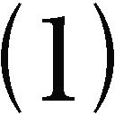
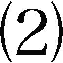
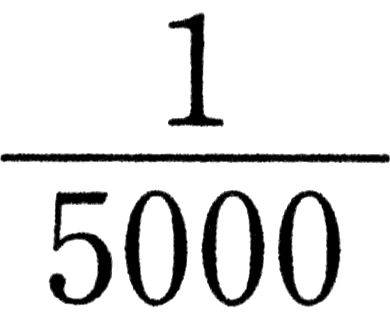
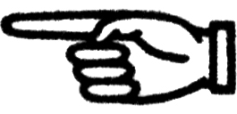
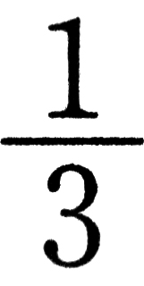
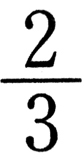
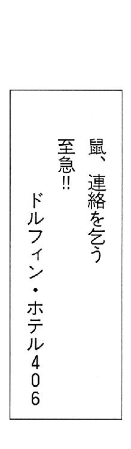
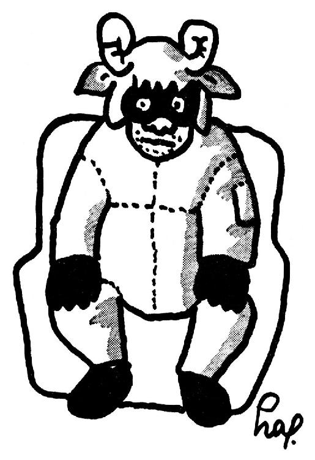

| 羊をめぐる冒険 | |
| 村上春樹 | |
| 講談社 (2016) | |
本作品は、縦書き表示での閲覧を推奨いたします。横書き表示にした際には、表示が一部くずれる恐れがあります。
ご利用になるブラウザまたはビューワにより、表示が異なることがあります。
羊をめぐる冒険
村上春樹
羊をめぐる冒険
目 次
水曜の午後のピクニック
１ 十六歩歩くことについて
２ 彼女の消滅・写真の消滅・スリップの消滅
１ 鯨のペニス・三つの職業を持つ女
２ 耳の開放について
３ 続・耳の開放について
１ 奇妙な男のこと・序
２ 奇妙な男のこと
３ 「先生」のこと
４ 羊を数える
５ 車とその運転手
６ いとみみず宇宙とは何か？
１ 鼠の最初の手紙 一九七七年十二月二十一日の消印
２ 二番めの鼠の手紙 消印は一九七八年五月？日
３ 歌は終りぬ
４ 彼女はソルティー・ドッグを飲みながら波の音について語る
１ 奇妙な男の奇妙な話
２ 奇妙な男の奇妙な話
３ 車とその運転手
４ 夏の終りと秋の始まり
５ 
６ 日曜の午後のピクニック
７ 限定された執拗な考え方について
８ いわしの誕生
１ 映画館で移動が完成される。いるかホテルへ
２ 羊博士登場
３ 羊博士おおいに食べ、おおいに語る
４ さらばいるかホテル
１ 十二滝町の誕生と発展と転落
２ 十二滝町の更なる転落と羊たち
３ 十二滝町の夜
４ 不吉なカーブを回る
５ 彼女は山を去る。そしておそう空腹感
６ ガレージの中でみつけたもの
草原のまんなかで考えたこと
７ 羊男来る
８ 風の特殊なとおり道
９ 鏡に映るもの・鏡に映らないもの
10 そして時は過ぎて行く
11 闇の中に住む人々
12 時計のねじをまく鼠
13 緑のコードと赤いコード・凍えたかもめ
14 不吉なカーブ再訪
15 十二時のお茶の会
新聞で偶然彼女の死を知った友人が電話で僕にそれを教えてくれた。彼は電話口で朝刊の一段記事をゆっくりと読み上げた。平凡な記事だ。大学を出たばかりの駆けだしの記者が練習のために書かされたような文章だった。
何月何日、どこかの街角で、誰かの運転するトラックが誰かを轢いた。誰かは業務上過失致死の疑いで取り調べ中。
雑誌の扉に載っている短かい詩のようにも聞こえる。
「葬式はどこでやるんだろう？」と僕は訊ねてみた。
「さあ、わからないな」と彼は言った。「だいいち、あの子に家なんてあったのかな？」
もちろん彼女にも家はあった。
僕はその日のうちに警察に電話をかけて彼女の実家の住所と電話番号を教えてもらい、それから実家に電話をかけて葬儀の日取りを聞いた。誰かが言っているように、手間さえ惜しまなければ大抵のことはわかるものなのだ。
彼女の家は下町にあった。僕は東京都の区分地図を開き、彼女の家の番地に赤いボールペンでしるしをつけた。それはいかにも東京の下町的な町だった。地下鉄やら国電やら路線バスやらがバランスを失った蜘蛛の糸のように入り乱れ、重なりあい、何本かのどぶ川が流れ、ごてごてとした通りがメロンのしわみたいに地表にしがみついていた。
葬儀の日、僕は早稲田から都電に乗った。終点近くの駅で降りて区分地図を広げてみたが、地図は地球儀と同じ程度にしか役に立たなかった。おかげで彼女の家に辿りつくまでに幾つも煙草を買い、何度も道を訊ねねばならなかった。
彼女の家は茶色い板塀に囲まれた古い木造住宅だった。門をくぐると、左手には何かの役には立つかもしれないといった程度の狭い庭があった。庭の隅には使いみちのなくなった古い陶製の火鉢が放り出され、火鉢の中には十五センチも雨水がたまっていた。庭の土は黒く、じっとりと湿っていた。
彼女が十六の歳に家を飛び出したきり、というせいもあって、葬儀は身内だけのひっそりとしたものだった。参列者の殆んどが年寄りの親戚で、三十を過ぎたばかりの彼女の兄だか義理の兄だかが葬儀をとりしきっていた。
父親は五十代半ばの小柄な男で、黒い背広の腕に喪章を巻き、門のわきに立ったまま殆んど身動きひとつしなかった。彼の姿は洪水がひいた直後のアスファルト道路を思わせた。
僕が帰り際に黙って頭を下げると、彼も黙って頭を下げた。

僕がはじめて彼女に会ったのは一九六九年の秋、僕は二十歳で彼女は十七歳だった。大学の近くに小さな喫茶店があって、僕はそこでよく友だちと待ちあわせた。たいした店ではないけれど、そこに行けばハードロックを聴きながらとびっきり不味いコーヒーを飲むことができた。
彼女はいつも同じ席に座り、テーブルに肘をついて本を読み耽っていた。歯列矯正器のような眼鏡をかけて骨ばった手をしていたが、彼女にはどことなく親しめるところがあった。彼女のコーヒーはいつも冷めて、灰皿はいつも吸殻でいっぱいになっていた。本の題名だけが違っていた。ある時にはそれはミッキー・スピレインであり、ある時には大江健三郎であり、ある時には「ギンズバーグ詩集」であった。要するに本でさえあればなんでもいいのだ。店に出入りする学生たちが彼女に本を貸し与え、彼女はそれをとうもろこしでも囓るみたいに片っ端から読んでいった。本を貸したがる人間ばかりいた時代だから、彼女は一度も本には不自由しなかったと思う。
ドアーズ、ストーンズ、バーズ、ディープ・パープル、ムーディー・ブルーズ、そんな時代でもあった。空気はどことなくピリピリしていて、ちょっと力を入れて蹴とばしさえすれば大抵のものはあっけなく崩れ去りそうに思えた。
我々は安いウィスキーを飲んだり、あまりぱっとしないセックスをしたり、結論のない話をしたり、本を貸したり借りたりして毎日を送っていた。そしてあの不器用な一九六〇年代もかたかたという軋んだ音を立てながらまさに幕を閉じようとしていた。
彼女の名前は忘れてしまった。
死亡記事のスクラップをもう一度ひっぱり出して思い出すこともできるのだけれど、今となっては名前なんてもうどうでもいい。僕は彼女の名前を忘れてしまった。それだけのことなのだ。
昔の仲間に会って、何かの拍子に彼女の話が出ることがある。彼らもやはり彼女の名前を覚えてはいない。ほら、昔さ、誰とでも寝ちゃう女の子がいたじゃないか、なんて名前だっけ、すっかり忘れちゃったな、俺も何度か寝たけどさ、今どうしているんだろうね、道でばったり会ったりしても妙なものだろうな。
──昔、あるところに、誰とでも寝る女の子がいた。
それが彼女の名前だ。
もちろん厳密に定義するなら、彼女は誰とでも寝たというわけではない。そこには彼女なりの規準が存在したはずだ。
とはいうものの現実問題として眺めてみれば、彼女は大抵の男と寝た。
僕は一度だけ、純粋な好奇心から、その規準について彼女に質問したことがある。
「そうねえ──」彼女は三十秒ばかり考え込んだ。「もちろん誰とでもいいってわけじゃないのよ。嫌だなって思う時もあるわ。でもね、結局のところ私はいろんな人を知りたいのかもしれない。あるいは、私にとっての世界の成り立ちかたのようなものをね」
「一緒に寝ることで？」
「うん」
今度は僕が考え込む番だった。
「それで......それで少しはわかったのかい？」
「少しはね」と彼女は言った。
六九年の冬から七〇年の夏にかけて、彼女とは殆んど顔を合わせなかった。大学は閉鎖とロックアウトをくりかえしていたし、僕は僕でそれとはべつにちょっとした個人的なトラブルを抱え込んでいたのだ。
七〇年の秋に僕がその店を訪れた時、客の顔ぶれはもうすっかり変っていて、知った顔は彼女ひとりという有様だった。あいかわらずハードロックこそかかってはいたものの、あのピリピリとした空気はもう消え失せていた。彼女と不味いコーヒーだけが一年前と同じだった。僕は彼女の向いの椅子に腰を下ろし、コーヒーを飲みながら、昔の連中の話をした。
彼らの多くは大学をやめていた。一人は自殺し、一人は行方をくらませていた。そんな話だ。
「一年間何をしてたの？」と彼女は僕に訊ねた。
「いろいろさ」と僕は言った。
「少しは賢くなったの？」
「少しはね」
そしてその夜、僕ははじめて彼女と寝た。
彼女の生いたちについて、僕はくわしくは知らない。誰かが教えてくれたような気もするし、ベッドの中で彼女自身の口から聞いたような気もする。高校一年生の夏に父親と大喧嘩して家を（ついでに高校を）とびだした、たしかそんな話だ。いったい何処に住んでいるのか、何で生計を立てているのか、誰も知らなかった。
彼女は一日中ロック喫茶の椅子に座って何杯もコーヒーを飲み、際限なく煙草を吸い、本のページを繰りながらコーヒー代と煙草代（当時の我々にとってはちょっとした金額だ）を払ってくれる相手が現われるのを待ち、そして大抵はその相手と寝た。
それが彼女について僕が知っている全てだった。
その年の秋から翌年の春にかけて、週に一度、火曜日の夜に彼女は三鷹のはずれにある僕のアパートを訪れるようになった。彼女は僕の作る簡単な夕食を食べ、灰皿をいっぱいにし、ＦＥＮのロック番組を大音量で聴きながらセックスをした。水曜の朝に目覚めると雑木林を散歩しながらＩＣＵのキャンパスまで歩き、食堂に寄って昼食を食べた。そして午後にはラウンジで薄いコーヒーを飲み、天気が良ければキャンパスの芝生に寝転んで空を見上げた。
水曜日のピクニック、と彼女は呼んだ。
「ここに来るたびに、本当のピクニックに来たような気がするのよ」
「本当のピクニック？」
「うん、広々として、どこまでも芝生が続いていて、人々は幸せそうに見えて......」
彼女は芝生の上に腰を下ろし、何本もマッチを無駄にしながら煙草に火を点けた。
「太陽が上って、そして沈んで、人がやってきて、そして去って、空気みたいに時間が流れていくの。なんだかピクニックみたいじゃない？」
その時僕は二十一歳で、あと何週間かのうちに二十二になろうとしていた。当分のあいだ大学を卒業できる見込みはなく、かといって大学をやめるだけの確たる理由もなかった。奇妙に絡みあった絶望的な状況の中で、何ヵ月ものあいだ僕は新しい一歩を踏み出せずにいた。
世界中が動きつづけ、僕だけが同じ場所に留まっているような気がした。一九七〇年の秋には、目に映る何もかもが物哀しく、そして何もかもが急速に色褪せていくようだった。太陽の光や草の匂い、そして小さな雨音さえもが僕を苛立たせた。
何度も夜行列車の夢を見た。いつも同じ夢だった。煙草の煙と便所の匂いと人いきれでムッとした夜行列車だ。足の踏み場もないほど混みあっていて、シートには古い反吐がこびりついている。僕は我慢しきれずに席を立ち、どこかの駅に下りる。それは人家の灯りひとつ見えぬ荒涼とした土地だった。駅員の姿さえない。時計も時刻表も、何もない──そんな夢だった。
そんな時期に、何度か彼女に辛くあたったような気がする。どんな風にあたったのか、今となってはうまく思い出せない。あるいは僕が僕自身にあたっていただけなのかもしれない。しかしいずれにせよ、彼女はそれが一向に気にならない様子だった。あるいは（極端に言うなら）、それを結構楽しんでもいた。何故だかはわからない。結局のところ彼女が僕に求めていたのは優しさではなかったのだろう。そう思うと、今でも不思議な気持になる。空中に浮かんだ目に見えぬ壁にふと手を触れてしまったような悲しい気持になる。
一九七〇年十一月二十五日のあの奇妙な午後を、僕は今でもはっきりと覚えている。強い雨に叩き落とされた銀杏の葉が、雑木林にはさまれた小径を干上った川のように黄色く染めていた。僕と彼女はコートのポケットに両手をつっこんだまま、そんな道をぐるぐると歩きまわった。落ち葉を踏む二人の靴音と鋭い鳥の声の他には何もなかった。
「あなたはいったい何を抱えこんでいるの？」と彼女が突然僕に訊ねた。
「たいしたことじゃないよ」と僕は言った。
彼女は少し先に進んでから道ばたに腰を下ろし、煙草をふかした。僕もその隣りに並んで腰を下ろした。
「いつも嫌な夢を見るの？」
「よく嫌な夢を見るよ。大抵は自動販売機の釣り銭が出てこない夢だけどね」
彼女は笑って僕の膝に手のひらを置き、それからひっこめた。
「きっとあまりしゃべりたくないのね？」
「きっとうまくしゃべれないことなんだ」
彼女は半分吸った煙草を地面に捨てて、運動靴で丁寧に踏み消した。「本当にしゃべりたいことは、うまくしゃべれないものなのね。そう思わない？」
「わからないな」と僕は言った。
ばたばたという音を立てて地面から二羽の鳥がとびたち、雲ひとつない空に吸い込まれるように消えていった。我々はしばらく鳥の消えたあたりを黙って眺めていた。それから彼女は枯れた小枝で地面にわけのわからない図形を幾つか描いた。
「あなたと一緒に寝ていると、時々とても悲しくなっちゃうの」
「済まないと思うよ」と僕は言った。
「あなたのせいじゃないわ。それにあなたが私を抱いている時に別の女の子のことを考えているせいでもないのよ。そんなのはどうでもいいの。私が」彼女はそこで突然口を閉じてゆっくりと地面に三本平行線を引いた。「わかんないわ」
「べつに心を閉じているつもりはないんだ」と僕は少し間をおいて言った。「何が起ったのか自分でもまだうまくつかめないだけなんだよ。僕はいろんなことをできるだけ公平につかみたいと思っている。必要以上に誇張したり、必要以上に現実的になったりしたくない。でもそれには時間がかかるんだ」
「どれくらいの時間？」
僕は首を振った。「わからないよ。一年で済むかもしれないし、十年かかるかもしれない」
彼女は小枝を地面に捨て、立ち上がってコートについた枯草を払った。「ねえ、十年って永遠みたいだと思わない？」
「そうだね」と僕は言った。
我々は林を抜けてＩＣＵのキャンパスまで歩き、いつものようにラウンジに座ってホットドッグをかじった。午後の二時で、ラウンジのテレビには三島由紀夫の姿が何度も何度も繰り返し映し出されていた。ヴォリュームが故障していたせいで、音声は殆んど聞きとれなかったが、どちらにしてもそれは我々にとってはどうでもいいことだった。我々はホットドッグを食べてしまうと、もう一杯ずつコーヒーを飲んだ。一人の学生が椅子に乗ってヴォリュームのつまみをしばらくいじっていたが、あきらめて椅子から下りるとどこかに消えた。
「君が欲しいな」と僕は言った。
「いいわよ」と彼女は言って微笑んだ。
我々はコートのポケットに手をつっこんだままアパートまでゆっくりと歩いた。
僕がふと目覚めた時、彼女は声を出さずに泣いていた。毛布の下で細い肩が小刻みに震えていた。僕はストーブの火を点け、時計を見た。午前二時だった。空のまんなかにまっ白な月が浮かんでいた。
彼女が泣きやむのを待ってから湯を沸かしてティーバッグで紅茶を淹れ、二人でそれを飲んだ。砂糖もレモンもミルクもない、ただの熱い紅茶だ。それから二本ぶんの煙草に火を点けて一本を彼女にわたした。彼女は煙を吸いこんで吐きだし、それを三回つづけてからひとしきり咳きこんだ。
「ねえ、私を殺したいと思ったことある？」と彼女が訊ねた。
「君を？」
「うん」
「どうしてそんなことを訊くんだ？」
彼女は煙草を口にくわえたまま指の先で瞼をこすった。
「ただなんとなくよ」
「ないよ」と僕は言った。
「本当に？」
「本当に」
「何故僕が君を殺さなくちゃいけないんだ？」
「そうね」と彼女は面倒臭そうに肯いた。「ただ、誰かに殺されちゃうのも悪くないなってふと思っただけ。ぐっすり眠っているうちにさ」
「人を殺すタイプじゃないよ」
「そう？」
「たぶんね」
彼女は笑って煙草を灰皿につっこみ、残っていた紅茶を一口飲み、それから新しい煙草に火を点けた。
「二十五まで生きるの」と彼女は言った。「そして死ぬの」
一九七八年七月彼女は二十六で死んだ。
エレベーターのドアが閉まるシュウッというコンプレッサー音を背中に確かめてから、おもむろに目を閉じる。そして意識の断片をかきあつめ、アパートの廊下をドアに向って十六歩歩いた。目を閉じたまま正確に十六歩、それ以上でもそれ以下でもない。ウィスキーのおかげで頭はすりきれたネジみたいにぼんやりとして、口の中は煙草のタールの匂いでいっぱいだった。
それでも、どんなに酔払っていても、目を閉じたままものさしで線を引いたみたいにまっすぐ十六歩歩くことができる。長年にわたる意味のない自己訓練の賜物だ。酔払うたびに背筋をしゃんと伸ばし、顔を上げ、朝の空気とコンクリートの廊下の匂いを思いきり肺に吸い込む。そして目を閉じ、ウィスキーの霧の中をまっすぐ十六歩歩く。
その十六歩的世界にあっては、僕は「もっとも礼儀正しい酔払い」という称号を与えられている。簡単なことだ。酔払ったという事実を事実として受容すればいいのだ。
「しかし」も「けれども」も「ただし」も「それでも」も何もない。ただ単に僕は酔払ったのだ。
そのようにして僕は最も礼儀正しい酔払いになる。いちばん早起きをするむくどりになり、いちばん最後に鉄橋を渡る有蓋貨車になる。
五・六・七......
八歩めで立ちどまって目を開け、深呼吸をする。軽い耳なりがした。錆びた鉄条網のあいだを抜けていく海の風のような耳なりだった。そういえばしばらく海を見ていないな。
七月二十四日、午前六時三十分。海を見るには理想的な季節で、理想的な時刻だ。砂浜はまだ誰にも汚されてはいない。波打ちぎわには海鳥の足あとが、風にふるい落とされた針葉のようにちらばっている。
海、か。
僕は再び歩きはじめる。海のことはもう忘れよう。そんなものはとっくの昔に消えてしまったのだ。
十六歩めで立ち止まって目をあけると、僕はいつものように正確にドアのノブの前にいた。郵便受けから二日ぶんの新聞と二通の封書を取り出し、小脇にはさむ。そして迷路のようなポケットからキー・ホルダーをとり出し、それを手に持ったまま冷やりとした鉄のドアにしばらく額をつけた。耳の後ろ側でかちんという小さな音がしたような気がした。体が綿のようにアルコールを吸い込んでいるのだ。比較的まともなのは意識だけだ。
やれやれ。
ドアをばかり開けてそこに体をすべりこませ、ドアを閉める。玄関はしんとしていた。必要以上にしんとしていた。
それから僕は足もとの赤いパンプスの存在に気づいた。見慣れた赤いパンプスだった。それは泥だらけのテニス・シューズと安物のビーチ・サンダルにはさまれて、季節はずれのクリスマス・プレゼントみたいに見えた。その上に細かいちりのような沈黙が浮かんでいた。
彼女は台所のテーブルにうつぶせになっていた。二本の腕の上に額が載せられ、まっすぐな黒い髪がその横顔を隠していた。髪のあいだから日焼けしていない白い首筋が見えた。見覚えのないプリント地のワンピースの肩口から細いブラジャーの吊りひもがわずかにのぞいていた。
僕が上着を取り、黒いネクタイをはずし、腕時計をはずしているあいだ、彼女はぴくりとも動かなかった。彼女の背中を見ていると昔のことを思いだした。彼女と出会う以前のことだ。
「やあ」と僕は声をかけてみたが、それはまるで自分の声には聞こえなかった。どこか遠くからわざわざ運ばれてきた声みたいだった。予想どおり返事はない。
彼女は眠っているようにも見えたし、泣いているようにも見えたし、死んでいるようにも見えた。
僕はテーブルの向い側に座り、指先で目を押える。鮮かな太陽の光がテーブルを区切っていた。僕は光の中に、彼女は淡い影の中にいた。影には色がなかった。テーブルの上には枯れてしまったゼラニウムの鉢植えが載っていた。窓の外では誰かが道路に水を撒いていた。アスファルト道路に水を撒く音がして、アスファルト道路に水を撒く匂いがした。
「コーヒーでも飲まないか？」
やはり返事はない。
僕は返事がないことを確認してから立ちあがって台所で二人ぶんのコーヒー豆を挽き、トランジスタ・ラジオをつけた。そして豆を挽き終ってから本当はアイス・ティーが飲みたかったことに気づいた。僕はいつもあとになってからいろんなことを思い出す。
トランジスタ・ラジオはいかにも朝にふさわしい害のないポップソングを次から次へと流しつづけていた。そんな唄を聴いていると、この十年間世界は何ひとつ変っていないんだという気がした。歌手と唄のタイトルが違っているだけだ。そして僕が十歳年をとっただけだ。
やかんが沸騰したのを確かめてガスを止め、三十秒さましてから湯をコーヒーの粉の上に注ぐ。粉が熱湯を吸い込めるだけ吸い込み、そしてゆっくり膨らみ始めたところで、暖かい香りが部屋に広がった。外ではもう何匹もの蟬が鳴き出していた。
「きのうの夜からいたの？」僕はやかんを手にしたままそう訊ねてみた。
テーブルの上で彼女の髪がほんの僅か縦に揺れた。
「ずっと待っていたんだね」
彼女はそれには答えなかった。
やかんの湯気と強い日差しのせいで、部屋は蒸しはじめていた。僕は流しの上の窓を閉め、エアコンのスイッチを入れてから、テーブルの上にコーヒー・カップをふたつ並べた。
「飲めよ」と僕は言った。僕の声は少しずつ僕の声らしさを取り戻していた。
「............」
「飲んだ方がいいよ」
たっぷり三十秒間を置いてから彼女はゆっくりとした均一な動作でテーブルから顔を上げ、そのまま枯れた鉢植えをぼんやりとみつめた。細い髪が何本か濡れた頰にからみついていた。微かな湿り気が彼女のまわりにオーラのように漂っていた。
「気にしないで」と彼女は言った。「泣くつもりなんてなかったのよ」
僕がティッシュ・ペーパーの箱をさしだすと、彼女はそれで音を立てずに鼻をかみ、頰についた髪を煩わしそうに指で払った。
「本当はあなたが帰ってくる前に出ていくつもりだったのよ。顔を合わせたくなかったから」
「でも気が変ったんだね」
「そうじゃないの。もうどこにも行きたくなくなっちゃっただけ。──でももう出て行くから心配しないで」
「ともかくコーヒーを飲みなよ」
僕はラジオの交通情報を聞きながらコーヒーをすすり、はさみで二通の手紙の封を切った。一通は家具店からの通知で、期間中に家具をお買い上げになると全て二割引きになると書いてあった。もう一通は思い出したくもない相手から来た読みたくもない手紙だった。僕は二通の手紙をまとめて丸め、足もとの屑かごに放りこみ、そして残りもののチーズ・クラッカーをかじった。彼女は寒さをしのぐような格好で両手でコーヒー・カップを包みこみ、縁に唇を軽くつけたままじっと僕を見ていた。
「冷蔵庫にサラダがあるわよ」
「サラダ？」僕は頭をあげて彼女を見た。
「トマトといんげん。それしかなかったから。きゅうりは悪くなってたから捨てたわよ」
「うん」
僕は冷蔵庫からサラダの入った青い沖縄ガラスの深皿を取り出し、瓶の底に五ミリほど残っていたドレッシングを空になるまでふりかけた。トマトといんげんは影のように冷やりとしていた。そして味がない。クラッカーにもコーヒーにも味はなかった。おそらく朝の光のせいだ。朝の光が何もかもを分解してしまうのだ。僕はコーヒーを途中であきらめてポケットからくしゃくしゃになった煙草を取り出し、まるで見覚えのない紙マッチを擦って火を点けた。煙草の先端がぱちぱちという乾いた音をたてた。そして紫色の煙が朝の光の中に幾何学的な模様を描いた。
「葬式だったんだ。それで式が終ってから新宿に出てずっと一人で飲んでたんだ」
猫がどこからかやってきて、長いあくびをしてから彼女の膝にひらりと跳び乗った。彼女は猫の耳のうしろを何度かかいてやった。
「何も説明しなくったっていいのよ」と彼女は言った。「もう私には関係のないことだから」
「説明してるんじゃないよ。しゃべってるだけさ」
彼女は小さく肩をすくめ、ブラジャーの吊り紐をワンピースの中に押し込んだ。彼女の顔には表情というものがまるでなかった。それは僕に、いつか写真で見た海の底に沈んでしまった街を思い出させた。
「昔のちょっとした知り合いだったんだ。君の知らない人だけどね」
「そう？」
彼女の膝の上で猫が手足をいっぱいに伸ばし、それからふうっと息を吐いた。
僕は口をつぐんだまま煙草の火先を眺めていた。
「どうして死んだの？」
「交通事故だよ。骨が十三本も折れたんだ」
「女の子」
「うん」
七時の定時ニュースと交通情報が終り、ラジオは再び軽いロック・ミュージックを流しはじめた。コーヒー・カップを皿の上に戻し、僕の顔を見た。
「ねえ、私が死んだ時もそんな風にお酒飲むの？」
「酒を飲んだのと葬式とは関係ないよ。関係あったのははじめの一杯か二杯さ」
外では新しい一日が始まろうとしていた。新しい暑い一日だ。流しの上の窓から高層ビルの一群が見えた。いつもよりずっと眩しく輝いている。
「冷たいものでも飲む？」
彼女は首を振った。
僕は冷蔵庫からよく冷えたコーラの缶を取り出し、グラスにつがずに一息で飲んだ。
「誰とでも寝ちゃう女の子だったんだ」と僕は言った。まるで弔辞みたいだ。故人は誰とでも寝ちゃう女の子でした。
「何故そんなこと私にしゃべるの？」と彼女はいった。
どうしてかは僕にもわからなかった。
「とにかく、誰とでも寝ちゃう女の子だったのね？」
「そうだよ」
「でもあなたとは別だったんでしょ？」
彼女の声に何かしら特別な響きがあった。僕はサラダの皿から顔をあげ、枯れた鉢植えごしに彼女の顔を見た。
「そう思うの？」
「なんとなくね」と彼女は小さな声で言った。「あなたって、そういうタイプなのよ」
「そういうタイプ？」
「あなたには何か、そういったところがあるのよ。砂時計と同じね。砂がなくなってしまうと必ず誰かがやってきてひっくり返していくの」
「そんなものかな」
彼女の唇がほんの少しほころび、そしてもとに戻った。
「残りの荷物を取りに来たのよ。冬もののコートとか帽子とか、そんなもの。段ボールの箱にまとめておいたから、手があいた時に運送屋さんまで運んでくれる？」
「家まで運んであげるよ」
彼女は静かに首を振った。「いいのよ。来てほしくないの。わかるでしょ？」
たしかにそのとおりだった。僕は見当はずれなことをしゃべりすぎる。
「住所はわかるわね？」
「わかるよ」
「用事はそれだけ。長居してごめんなさい」
「書類の方はあれでいいの」
「うん、みんな終ったわ」
「ずいぶん簡単なものだね。もっと何やかやいろんなものがあるんだと思ってたよ」
「知らない人はみんなそう思うのよ。でも本当に簡単なの。終ってしまえばね」彼女はそう言って、もう一度猫の頭をかいた。「二度も離婚すればもうベテランみたいなものよ」
猫は目を閉じて背中だけで伸びをし、彼女の腕に首をそっと載せた。僕はコーヒー・カップとサラダの皿を流しの中に放り込み、請求書をほうきがわりにしてクラッカーの粉を一ヵ所に集めた。太陽の光で、目の奥がちくちくと痛んだ。
「細かいことはあなたの机の上のメモに全部書いておいたわ。いろんな書類の場所とか、ごみの収集日とか、そんなことね。わからないことがあったら電話して」
「ありがとう」
「子供欲しかった？」
「いや」と僕は言った。「子供なんて欲しくないよ」
「私はずいぶん迷ったのよ。でもこうなるんなら、それでよかったのね。それとも子供がいたらこうならなかったと思う？」
「子供がいても離婚する夫婦はいっぱいいるよ」
「そうね」と彼女は言って僕のライターをしばらくいじっていた。「あなたのことは今でも好きよ。でも、きっとそういう問題でもないのね。それは自分でもよくわかっているのよ」
彼女が帰ったあとで僕はもう一本コーラを飲み、熱いシャワーに入って髭を剃った。石鹼もシャンプーもシェービング・クリームも、何もかもがなくなりかけていた。
シャワーから出て髪をとかし、ローションをつけ、耳のそうじをした。そして台所に行って残りのコーヒーをあたためなおした。テーブルの向い側にはもう誰も座ってはいなかった。誰も座ってはいない椅子をじっと眺めていると、自分が小さな子供で、キリコの絵に出てきそうな不思議な見知らぬ街に一人で残されたような気がした。しかしもちろん僕はもう小さな子供ではない。僕は何も考えずにコーヒーをすすり、長い時間をかけてそれを飲んでしまうと、しばらくぼんやりしてから煙草に火をつけた。
まる二十四時間眠っていないわりには不思議に眠くはなかった。体の芯はぼんやりしていたが、頭だけが手なれた水生動物のように入り組んだ意識の水路をぐるぐるとあてもなく動きまわっていた。
無人の椅子をぼんやり眺めているうちに、昔読んだアメリカの小説を思い出した。妻に家出された夫が、食堂の向いの椅子に彼女のスリップを何ヵ月もかけておく話だった。しばらく考えているうちに、それは悪くないアイデアであるように思えはじめた。何かの役に立つとは思えなかったけれど、枯れてしまったゼラニウムの鉢を置いておくよりはずっと気がきいている。猫だって彼女のものがあれば少しは落ちつくかもしれない。
僕は寝室の彼女の引出しを順番に開けてみたが、どれもからっぽだった。虫の喰った古いマフラーが一枚とハンガーが三本、防虫剤の包み、残っているのはそれだけだった。彼女はきれいさっぱり何もかもを持っていってしまったのだ。洗面所に所狭しとちらばっていた細々とした化粧品、カーラー、歯ブラシ、ヘア・ドライヤー、わけのわからない薬、生理用品、ブーツからサンダル、スリッパに至る全てのはきもの、帽子の箱、引出しひとつぶんのアクセサリー、ハンドバッグ、ショルダー・バッグ、スーツケース、パース、いつもきちんと整理されていた下着や靴下、手紙、彼女の匂いのするものは何ひとつ残されてはいなかった。指紋さえ拭き取っていったんじゃないかという気がした。本箱とレコード棚のばかりが消えていた。彼女が自分で買ったり、僕が彼女にプレゼントした本やレコードだった。
アルバムを開いてみると彼女が写っている写真は一枚残らずはぎ取られていた。僕と彼女が一緒に写ったものは、彼女の部分だけがきちんと切り取られ、あとには僕だけが残されていた。僕一人が写っている写真と風景や動物を撮った写真はそのままだった。そんな三冊のアルバムに収められているのは完璧に修整された過去だった。僕はいつも一人ぼっちで、そのあいだに山や川や鹿や猫の写真があった。まるで生まれた時も一人で、ずっと一人ぼっちで、これから先も一人というような気がした。僕はアルバムを閉じ、煙草を二本吸った。
スリップの一枚くらい残していってくれてもよさそうなものなのにとは思ったが、それはもちろん彼女の問題であって、僕がとやかく言うことではなかった。何ひとつ残すまい、と彼女は決めたのだ。僕はそれに従うほかない。あるいは彼女が意図したように、そもそもの始めから彼女は存在しなかったのだと思い込む他ない。そして彼女の存在しないところに、彼女のスリップも存在しないのだ。
僕は灰皿を水につけてエアコンとラジオのスイッチを切り、もう一度彼女のスリップに思いを巡らしてから、あきらめてベッドに入った。
僕が離婚を承諾し、彼女がアパートを出ていってしまってから既に一ヵ月が経っていた。その一ヵ月には殆んど何の意味もなかった。ぼんやりとして実体のない、生温かいゼリーのような一ヵ月だった。何かが変ったとはまるで思えなかったし、実際のところ、何ひとつ変ってはいなかったのだ。
僕は朝七時に起きてコーヒーを淹れ、トーストを焼き、仕事にでかけ、外で夕食を取り、二杯か三杯酒を飲み、家に帰って一時間ばかりベッドの中で本を読み、電灯を消して眠った。土曜日と日曜日には仕事をするかわりに朝から何軒か映画館をまわって時間を潰した。そしていつもと同じように一人で夕食を取り、酒を飲み、本を読んで眠った。そんな風にして、ちょうどある種の人々がカレンダーの数字をひとつずつ黒く塗りつぶしていくように、僕は一ヵ月を生きてきた。
彼女が消えてしまったのは、ある意味では仕方のない出来事であるような気がした。既に起ってしまったことは起ってしまったことなのだ。我々がこの四年間どれだけうまくやってきたとしても、それはもうたいした問題ではなくなっていた。はぎとられてしまったアルバムと同じことだ。
それと同じように、彼女が僕の友人と長いあいだ定期的に寝ていて、ある日彼のところに転がり込んでしまったとしても、それもやはりたいした問題ではなかった。そういうことは十分起り得ることであり、そしてしばしば現実に起ることであって、彼女がそうなってしまったとしても、何かしら特別なことが起ったという風には僕にはどうしても思えなかった。結局のところ、それは彼女自身の問題なのだ。
「結局のところ、それは君自身の問題なんだよ」と僕は言った。
それは彼女が離婚したいと言い出した六月の日曜日の午後で、僕は缶ビールのプルリングを指にはめて遊んでいた。
「どちらでもいいということ？」と彼女は訊ねた。とてもゆっくりとしたしゃべり方だった。
「どちらでもいいわけじゃない」と僕は言った。「君自身の問題だって言ってるだけさ」
「本当のことを言えば、あなたと別れたくないわ」としばらくあとで彼女は言った。
「じゃあ別れなきゃいいさ」と僕は言った。
「でも、あなたと一緒にいてももうどこにも行けないのよ」
彼女はそれ以上何も言わなかったけれど、彼女の言いたいことはわかるような気がした。僕はあと何ヵ月かのうちに三十になろうとしていた。彼女は二十六になろうとしていた。そしてその先にやってくるべきものの大きさに比べれば、我々のこれまでに築いてきたものなど本当に微少なものでしかなかった。あるいはゼロだった。我々はまるで貯金を食いつぶすようにその四年間を生きてきたのだ。
その殆んどは僕の責任だった。おそらく僕は誰とも結婚するべきではなかったのだ。少くとも彼女は僕と結婚するべきではなかった。
彼女ははじめのうち自分が社会的不適合者で僕が社会的適合者であると考えていた。そして我々はそのそれぞれの役割を比較的うまくこなしてきた。しかしそのままずっとうまくやっていけるだろうと二人が思った時、何かが壊れた。ほんの小さな何かだったけれど、それはもうもとに戻らなかった。我々はおだやかな、引きのばされた袋小路の中にいた。それが我々の終りだった。
彼女にとって、僕は既に失われた人間だった。たとえ彼女が僕をまだいくらか愛していたとしても、それはまた別の問題だった。我々はお互いの役割にあまりにも慣れすぎていたのだ。僕が彼女に与えることができるものはもう何もなかった。彼女にはそれが本能的にわかっていたし、僕には経験的にわかっていた。どちらにしても救いはなかった。
そのようにして彼女は彼女の何枚かのスリップとともに僕の前から永遠に姿を消した。あるものは忘れ去られ、あるものは姿を消し、あるものは死ぬ。そしてそこには悲劇的な要素は殆んどない。
７月24日、午前８時25分。
僕はデジタル時計の四つの数字を確かめてから目を閉じ、そして眠った。
女の子と寝るというのは非常に重大なことのようにも思えるし、逆にまるでたいしたことじゃないようにも思える。つまり自己療養行為としてのセックスがあり、暇つぶしとしてのセックスがある。
終始自己療養行為というセックスもあれば、終始暇つぶしというセックスもある。はじめは自己療養行為であったものが暇つぶしとして終る例もあれば、逆の場合もある。なんというか、我々の性生活は鯨の性生活とは根本的に異っているのだ。
我々は鯨ではない──これは僕の性生活にとって、ひとつの重大なテーゼである。
子供の頃、家から自転車で三十分ばかりのところに水族館があった。水族館はいつも冷やりとした水族館的沈黙に支配されていて、時折ぴしゃぴしゃと水のはねる音がどこからともなく聞こえてくるだけだった。仄暗い廊下の角で半魚人が息をひそめているような感じだった。
まぐろの群れが巨大なプールをぐるぐるとまわり、ちょうざめは狭い水路を溯り、ピラニアは肉塊に鋭い歯を立て、電気うなぎはしみったれた豆電球をぽつぽつとともしていた。
水族館には無数の魚がいた。彼らはそれぞれに違った名前と違ったうろこと違ったえらを持っていた。何故地球上にそれほど多くの種類の魚が存在しなければならぬのか、僕にはさっぱりわからなかった。
もちろん水族館には鯨はいない。鯨はあまりにも大きすぎて、水族館をつぶしてまるまるひとつの水槽にしたところでそれを飼うことはできないのだ。そのかわりに水族館には鯨のペニスが置いてあった。まあいわば代用品だ。そんなわけで、僕は感じやすい少年期を通じて本物の鯨を見るかわりに鯨のペニスを眺めつづけた。冷やりとした水族館的通路の散歩に飽きると、僕はひっそりとしずまりかえった天井の高い展示室のソファーに座り、鯨のペニスの前でぼんやりと何時間かを過ごした。
それはある時にはひからびた小型のやしの木のように見えたし、ある時には巨大なとうもろこしのように見えた。もしそこに「鯨の生殖器・雄」という立て札がなければ、おそらく誰一人としてそれが鯨のペニスであるとは気づかなかったに違いない。それは南氷洋の産物というよりは中央アジアの砂漠で発掘された遺物のような趣きがあった。それは僕のペニスとも違っていたし、僕がそれまでに見たどんなペニスとも違っていた。そしてそこには切り取られたペニス特有の何かしら説明しがたい哀しみが漂っていた。
僕が最初に女の子と性交したあとで思い出したのも、その巨大な鯨のペニスだった。それがどのような運命を辿り、どのような経緯を経て水族館のがらんとした展示室に到達したのかを考えると、僕の胸は痛んだ。そこには救いなんて何ひとつないような気がした。しかし僕はまだ十七歳で、すべてに絶望するには明らかに若すぎた。そこで僕はそれ以来こう考えるようになった。
我々は鯨ではない、と。
僕はベッドの中で新しいガール・フレンドの髪を指先でいじりながら、ずっと鯨のことを考えていた。
僕の思い出す水族館はいつも秋の終りだった。水槽のガラスは氷のように冷たく、僕はぶ厚いセーターを着込んでいた。展示室の大きなガラス窓から見える海は濃い鉛色で、無数の白い波は女の子たちが着ているワンピースの白いレースの襟を思わせた。
「何を考えているの？」と彼女が訊ねた。
「昔のこと」と僕は言った。
彼女は二十一歳で、ほっそりとした素敵な体と魔力的なほどに完璧な形をした一組の耳を持っていた。彼女は小さな出版社のアルバイトの校正係であり、耳専門の広告モデルであり、品の良い内輪だけで構成されたささやかなクラブに属するコール・ガールでもあった。その三つのうちのどれが彼女の本職なのかは僕にはわからなかった。彼女にもわからなかった。
しかしどれが本来の姿であるかという観点から見るなら、耳専門のモデルとしての彼女が最も自然な姿であるようだった。僕もそう思ったし、彼女もそう考えていた。とはいっても耳専門の広告モデルが活躍できる分野は極めて限られているし、モデルとしての地位もギャラもおそろしく低いものだった。大抵の広告代理業者やカメラマンやメイク係や雑誌記者は彼女を単なる「耳の持ち主」として扱った。耳以外の彼女の肉体や精神は完全に切り捨てられ、黙殺された。
「でも本当はそうじゃないのよ」と彼女は言った。「耳は私であり、私は耳であるのよ」
校正係としての彼女とコール・ガールとしての彼女は絶対に、一瞬たりとも、耳を他人に見せなかった。
「なぜなら、それは本当の私じゃないから」と彼女は説明した。
彼女の属するコール・ガール・クラブの事務所（一応タレント・クラブという名目になっていた）は赤坂にあり、みんながミセス・エクスと呼ぶ経営者は白髪のイギリス人の女性だった。彼女はもう三十年も日本で暮していて、流暢な日本語をしゃべり、殆んどの基本的な漢字を読むことができた。
ミセス・エクスはコール・ガール事務所から五百メートルも離れていない場所で女性専門の英会話教室を開いていて、彼女はそこで筋の良さそうな女の子をピックアップしてはコール・ガール事務所の方にスカウトしていた。逆にコール・ガールの何人かが英会話教室に通うということもあった。彼女たちはもちろん何割か授業料を免除された。
ミセス・エクスはコール・ガールたちを「ディア」と呼んだ。その彼女の「ディア」には春の昼下がりのような柔かい響きがあった。
「きちんとしたレースの下着をつけていきなさいね、ディア。パンティーストッキングはいけませんよ」とか、「あなたは紅茶にクリームをいれるんだったわね、ディア」とか、そんな具合だ。客筋はとてもきちんと把握されていて、その殆んどは四十代と五十代の裕福なビジネス・マンだった。が外国人で、残りが日本人だった。ミセス・エクスは政治家と老人と変質者と貧乏人が嫌いだった。
僕の新しいガール・フレンドは一ダースばかりの美人揃いのコール・ガールたちの中ではいちばん見栄えが悪く、平凡ななりをしていた。実際のところ、耳を隠した彼女は実に平凡な印象しか人に与えなかった。ミセス・エクスがどうして彼女に目をつけてスカウトしたのか、僕にはよくわからない。彼女の平凡さの中に特殊な輝きを認めたからかもしれないし、それともただ単に一人くらい平凡な女の子がいてもいいだろうと考えたからかもしれない。いずれにしてもミセス・エクスの目論見は的中し、彼女にも何人かのしっかりとした顧客がつくようになった。彼女は平凡な服を着て、平凡な化粧をし、平凡な下着をつけ、平凡な石鹼の匂いを漂わせてヒルトンやオークラやプリンスにでかけ、週に一人か二人の男と寝て、一ヵ月食べていけるだけの収入を得ていた。
それ以外の夜の半分を、彼女は無料で僕と寝てくれた。あとの半分を彼女がどのように過しているのかは僕にはわからない。
出版社のアルバイト校正係としての彼女の生活はもっと平凡なものだった。彼女は週に三日だけ神田の小さなビルの三階にある会社に通い、朝の九時から夕方の五時までゲラの校正をしたり、お茶を淹れたり、階段を下りて（エレベーターがなかったので）消しゴムを買いにいったりしていた。彼女は唯一の若い独身の女性だったが、別に誰も彼女にちょっかいを出したりはしなかった。彼女はまるでカメレオンのように場所や状況によって、その輝きを出したりひっこめたりすることができたのだ。
僕が彼女に（あるいは彼女の耳に）めぐり会ったのは、妻と別れた直後──八月のはじめだった。僕はコンピューターのソフトウェア会社の広告コピーの下請け仕事をしていて、そこではじめて彼女の耳と対面することになった。
広告代理店のディレクターが机の上に企画書と何枚かの大判のモノクロ写真を置いて、一週間のうちにこの写真につけるヘッド・コピーを三種類用意してくれ、と言った。三枚の写真はどれも巨大な耳の写真だった。
耳？
「どうして耳なんですか？」と僕は訊ねてみた。
「知るもんか。ともかく耳なんだよ。君は一週間耳について考えてりゃいいんだよ」
そんなわけで僕は一週間、耳の写真だけを眺めて暮した。机の前の壁にセロハンテープでその三枚の巨大な耳の写真を貼りつけ、煙草を吸ったりコーヒーを飲んだりサンドウィッチを食べたり爪を切ったりしながら、その写真を眺めた。
一週間でなんとか仕事は片付いたが、そのあとでも耳の写真は壁に貼りつけられたままになっていた。はがすのが面倒だったせいもあるし、耳の写真を眺めることが僕の日常的習慣になってしまったせいもある。しかし僕がその写真をはがして引出しの奥に放り込んでしまわなかった本当の理由は、その耳があらゆる面で僕を魅了したからだった。それはまったく夢のような形をした耳だった。百パーセントの耳と言っていいだろう。拡大された人体の一部（もちろん性器も含めて）にこれほど強い力でひきつけられたのははじめての体験だった。それは僕に何かしら運命的な巨大な渦のようなものを思わせた。
あるカーブはあらゆる想像をこえた大胆さで画面を一気に横切り、あるカーブは秘密めいた細心さで一群の小さな翳を作りだし、あるカーブは古代の壁画のように無数の伝説を描きあげていた。耳たぶの滑らかさは全ての曲線を超え、そのふっくらとした肉のあつみは全ての生命を凌駕していた。
僕は何日か後でその写真を撮ったカメラマンに電話をかけて耳の持ち主の名前と電話番号を教えてもらうことにした。
「またどうして？」とカメラマンは訊ねた。
「興味があるんだよ。とても素敵な耳だからさ」
「そりゃまあ、たしかに耳はね」とカメラマンはもごもごと言った。「でも人物の方はあまりぱっとしない女の子だよ。若い子とデートしたいんなら、このあいだ撮った水着のモデルを紹介してやるよ」
「どうもありがとう」と言って僕は電話を切った。
二時、六時、十時と彼女に電話をかけてみたが、電話には誰も出なかった。彼女は彼女なりに忙しい人生を送っているようだった。
やっと彼女をつかまえることができたのは翌朝の十時だった。僕は簡単な自己紹介をしてから、先日の広告の仕事の件で少し話があるんだけど、夕食でも一緒にいかがですか、と訊ねてみた。
「仕事はもう終ったって聞いたけれど」と彼女は言った。
「仕事は終りました」と僕は言った。彼女は少し面喰ったようだったけれど、それ以上質問はしなかった。我々は翌日の夕方に青山通りの喫茶店で待ち合わせることにした。
僕はこれまでに行ったことのある中でいちばん高級なフランス料理店に電話をかけてテーブルを予約した。そして新しいシャツをおろし、時間をかけてネクタイを選び、まだ二度しか袖を通していない上着を着た。
彼女はカメラマンが忠告してくれたとおりたしかにあまりぱっとしない女の子だった。服装も顔つきも平凡で、二流の女子大のコーラス部員みたいに見えた。しかしもちろん、僕にとってはそんなことはどうでもいい。僕ががっかりしたのは、彼女がまっすぐに下ろした髪の中に耳をすっぽり隠していることだった。
「耳を隠しているんだね」と僕はなんでもなさそうに言った。
「ええ」と彼女もなんでもなさそうに言った。
予定より少し早めに着いたせいで、我々がディナー・タイムの最初の客だった。照明が落とされ、ウェイターが長いマッチを擦って赤いキャンドルに火をつけてまわり、ヘッド・ウェイターがにしんのような目つきでナプキンや食器や皿の並べ方を細かく点検していた。ヘリンボーン形に組みあわせられたオークの床板は綺麗に磨きあげられ、ウェイターの靴底がコツコツと気持の良い音を立てていた。ウェイターの靴は僕のはいた靴よりずっと高そうだった。花瓶の花は新しく、白い壁には一目でオリジナルとわかるモダン・アートがかかっていた。
僕はワイン・リストを見てなるべくさっぱりした白ワインを選び、オードブルに鴨のパテと鯛のテリーヌとあんこうの肝のサワー・クリームをとった。彼女はメニューを念入りに研究してから海亀のスープとグリーン・サラダと舌平目のムースを注文し、僕はうにのスープと仔牛のパセリ風味ローストとトマト・サラダを注文した。僕の半月ぶんの食費がとんでしまいそうだった。
「なかなか素敵なお店ね」と彼女は言った。「よく来るの？」
「仕事がらみでたまに来るだけさ。どちらかというと一人の時はレストランなんかよりは酒を飲みながらバーでありあわせのものを食べる方が性にあってるんだ。その方が楽なんだ。余計なことを考えないで済むからさ」
「バーでいつもどんなものを食べるの？」
「いろいろだけれど、まあオムレツとサンドウィッチが多いね」
「オムレツとサンドウィッチ」と彼女は言った。「バーで毎日オムレツとサンドウィッチを食べているの？」
「毎日じゃないよ。三日に一度は自分で料理をつくる」
「じゃあ三日に二日はバーでオムレツとサンドウィッチを食べるのね」
「そうだね」と僕は言った。
「なぜオムレツとサンドウィッチなの？」
「良いバーはうまいオムレツとサンドウィッチを出すものなんだ」
「ふうん」と彼女は言った。「変った人ね」
「変ってないよ」と僕は言った。
いったいどんな風に切り出せばいいのかわからなかったので、僕はしばらく黙ってテーブルの上の灰皿の吸いがらを眺めていた。
「仕事の話でしょ」と彼女が水をむけた。
「昨日も言ったように、仕事はもう完全に終ってるんだ。問題もない。だから話はないんだよ」
彼女はハンドバッグのポケットから細いはっか煙草を取り出してレストランのマッチで火を点け、「それで？」といった感じで僕を見た。
僕が話し出そうとした時に、ヘッド・ウェイターが確信にみちた靴音を響かせて我々のテーブルにやってきた。彼は一人息子の写真でも見せるようににっこりと微笑みながらワインのラベルを僕に向け、僕が肯くと感じの良い小さな音を立てて栓を抜き、グラスにひとくち注いでくれた。凝縮された食費の味がした。
ヘッド・ウェイターが退くと入れちがいに二人のウェイターがやってきて、テーブルに三枚の大皿と二枚のとり皿を並べた。ウェイターが去ってしまうと、我々はまた二人きりになった。
「どうしても君の耳が見たかったんだ」と僕は正直に言った。
彼女は何も言わずにパテとあんこうの肝を皿に取り、ワインを一口飲んだ。
「迷惑だったかな？」
彼女はほんの少し微笑んだ。「おいしいフランス料理は迷惑じゃないわ」
「耳のことを話されることは迷惑？」
「でもないのよ。話す角度によって、ね」
「君の好きな角度から話すよ」
彼女はフォークを口に運びながら首を振った。「正直に話して。それがいちばん好きな角度だから」
我々はしばらく黙ってワインを飲み、食事をつづけた。
「僕が角を曲る」と僕は言った。「すると僕の前にいた誰かはもう次の角を曲っている。その誰かの姿は見えない。その白い裾がちらりと見えるだけなんだ。でもその裾の白さだけがいつまでも目の奥に焼きついて離れない。こういう感じってわかるかい？」
「わかると思うわ」
「僕が君の耳から感じるのは、そういったことなんだ」
再び我々は黙々と食事をつづけた。僕は彼女のグラスにワインを注ぎ、自分のグラスにワインを注いだ。
「そういった情景が頭に浮かぶんじゃなくて、そういった感じがするのね？」と彼女が訊ねた。
「そうだよ」
「これまでにそんな感じがしたことがある？」
僕はしばらく考えてから首を振った。「ないね」
「でもそれはつまり、私の耳のせいなのね？」
「はっきりとそうだっていう確信があるわけじゃないんだ。だって確信なんて持ちようがないもの。耳の形が誰かにいつもある特定の感情を起こさせるなんて聞いたこともないよ」
「ファラ・フォーセット・メジャーズの鼻を見るたびにくしゃみが出る人を知ってるわよ。くしゃみってそういう精神的要素が大きいのね。一度原因と結果が結びついてしまうとなかなか離れなくなってしまうの」
「ファラ・フォーセット・メジャーズの鼻のことはよく知らないけれど」と僕は言ってワインを飲んだ。それから何を言おうとしていたのかを忘れてしまった。
「それとは少し違うのね？」と彼女が言った。
「うん。それとは少し違うんだ」と僕は言った。「僕の受ける感情はものすごく漠然としていて、しかもソリッドなんだ」僕は両手を一メートルばかり離してから、それを五センチに縮めた。
「うまく説明できないな」
「漠然とした動機に基いた、凝縮された現象」
「そのとおりだよ」と僕は言った。「君は僕の七倍くらい頭がいい」
「通信教育を受けたのよ」
「通信教育？」
「ええ、心理学の通信教育」
我々は最後に残ったパテを二人でわけた。僕は自分が何を言おうとしていたのかをまた忘れてしまった。
「あなたは私の耳とそのあなたの感情の相関関係がまだよくつかめないのね？」
「そうなんだ」と僕は言った。「つまり、君の耳がダイレクトに僕にアピールするのか、それとも別の何かが君の耳を媒介として僕にアピールするのか、それがどうもうまくつかめないんだ」
彼女はテーブルの上に両手を載せたまま、微かに肩を動かした。「あなたの感じる感情は良い種類のもの、それとも嫌な種類のもの？」
「どちらでもない。どちらでもある。わからないよ」
彼女は両手でワイン・グラスをはさんで、しばらく僕の顔を見ていた。「あなた、もう少し感情表現の方法を学んだ方がいいみたいよ」
「描写力もないしね」と僕は言った。
彼女は微笑んだ。「でもまあいいわ。あなたの言っていることはだいたいわかったから」
「それで僕はどうすればいいのかな？」
彼女はずっと黙っていた。何か別のことを考えているみたいに見えた。テーブルには空になった五枚の皿が並んでいた。五枚の皿は滅亡した惑星群みたいに見えた。
「ねえ」と長い沈黙のあとで彼女が口を開いた。「私たちはお友だちになった方がいいと思うの。もちろんあなたがそれでよければの話だけれど」
「もちろんいいさ」と僕は言った。
「それも、とてもとても親しい友だちになるのよ」と彼女が言った。
僕は肯いた。
そんな風にして、我々はとてもとても親しい友だちになった。はじめて会ってから三十分しかかからなかった。
「親しい友だちとして、君に質問したいことがあるんだ」と僕は言った。
「いいわよ」
「まずひとつはなぜ耳を出さないのかということ。もうひとつはこれまでに君の耳が僕以外の誰かに特殊な力を及ぼしたことがあるかということなんだ」
彼女は何も言わずにテーブルの上に置いた両手をじっと眺めていた。
「いろいろあるのよ」と彼女は静かに言った。
「いろいろ？」
「うん。でも簡単に言ってしまえば、私が耳を出していない方の自分に慣れてしまったからということになるわね」
「つまり耳を出している時の君と、耳を出していない時の君は違うっていうことなのかな？」
「そうね」
二人のウェイターが我々の皿を下げ、スープを運んできた。
「耳を出している時の君について話してくれないかな？」
「ずいぶん昔のことだからうまく話せないわ。本当のことを言うと、十二の齢から一度も耳を出したことはないの」
「でもモデルの仕事をする時には耳を出すわけだよね？」
「ええ」と彼女は言った。「でもあれは本当の耳じゃないの」
「本当の耳じゃない？」
「あれは閉鎖された耳なの」
僕はスープを二口飲んでから顔を上げて彼女の顔を見た。
「閉鎖された耳についてもう少しくわしく教えてくれないかな？」
「閉鎖された耳は死んだ耳なの。私が自分で耳を殺すのよ。つまり、意識的に通路を分断してしまうってことなんだけど......わかるかしら？」
僕にはよくわからなかった。
「質問してみて」と彼女は言った。
「耳を殺すというのは、耳が聴こえなくなるということ？」
「ううん。耳はちゃんと聴こえるの。でも耳は死んでいるのよ。あなたにもできるはずよ」
彼女はスープ・スプーンをテーブルに置くと背筋をしゃんと伸ばし、それから両肩を五センチばかり上にあげ、顎を思いきり手前に引き、十秒ばかりその姿勢をつづけてから急にがくんと肩を落とした。
「これで耳が死んだの。あなたもやってみて」
僕は彼女と同じ動作をゆっくり三度くりかえしてみたが、何かが死んだという印象は持てなかった。ワインのまわりかたが少し早くなっただけだった。
「どうも僕の耳はうまく死ねないようだな」と僕はがっかりして言った。
彼女は首を振った。「いいのよ。死なせる必要がなければ、死なせることができなくてなんの不都合もないんだから」
「もう少し質問してもいい？」
「いいわよ」
「君の言っていることを綜合してみると、こういうことになると思うんだ。つまり君は十二の歳まで耳を出していた。そしてある日耳を隠した。そしてそれから現在に至るまで一度も耳を出していない。どうしても耳を出さなくちゃいけない時は耳と意識のあいだの通路を閉鎖する。そういうことだね？」
彼女はにっこりと笑った。「そういうことよ」
「十二の齢に君の耳に何が起ったんだ？」
「急がないで」と彼女は言って右手をテーブル越しに伸ばし、僕の左手の指にそっと触れた。「お願い」
僕はワインの残りをふたつのグラスに注ぎ、ゆっくりと自分のグラスをあけた。
「まずあなたのことを知りたいな」
「僕のどんなことを？」
「全部よ。どんな風に育ったかとか、年はいくつかとか、何をしているかとか、そんなこと」
「平凡な話だよ。すごく平凡だから、きっと聞いているうちに眠くなっちゃうよ」
「私、平凡な話って好きよ」
「僕のは誰も好きになってくれないようなタイプの平凡な話なんだ」
「いいから十分間話して」
「誕生日は一九四八年の十二月二十四日、クリスマス・イブだよ。クリスマス・イブって、あまり良い誕生日じゃない。だって誕生日とクリスマスのプレゼントが一緒になっちゃうからね。みんな安く済ませようとするんだ。星座は山羊座で血液型はＡ、この組みあわせは銀行員とか区役所員に向いている。射手座と天秤座と水瓶座とは相性が悪いということになっている。退屈そうな人生だと思わないか？」
「面白そうだわ」
「平凡な街で育って、平凡な学校を出た。小さな時は無口な子供で、成長すると退屈な子供になった。平凡な女の子と知りあって、平凡な初恋をした。十八の年に大学に入って東京に出てきた。大学を出てから友だちと二人で小さな翻訳事務所を始めて、なんとかそれで食べてきた。三年ほど前からＰＲ誌や広告関係の仕事にも手を広げて、そちらの方も順調に伸びている。会社で働いていた女の子と知りあって四年前に結婚して、二ヵ月前に離婚した。理由はひとくちじゃ言えない。年寄りの雄猫を一匹飼っている。一日に四十本煙草を吸う。どうしてもやめられないんだ。スーツを三着とネクタイを六本、それに流行遅れのレコードを五百枚持っている。エラリー・クイーンの小説の犯人は全部覚えている。プルーストの『失われた時を求めて』も揃いで持ってるけど、半分しか読んでない。夏はビールを飲んで、冬はウィスキーを飲む」
「そして三日に二日はバーでオムレツとサンドウィッチを食べるのね？」
「うん」と僕は言った。
「面白そうな人生だわ」
「ずっと退屈な人生だったし、これからだって同じさ。でもそれが気に入らないというわけでもない。要するに仕方ないことなんだよ」
僕は時計を見た。九分二十秒たっていた。
「でも今あなたのしゃべったことがあなたのすべてというわけでもないんでしょう？」
僕はテーブルの上の自分の両手をしばらく眺めた。「もちろんすべてじゃない。どんな退屈な人生でも十分で語り尽すことはできないからね」
「私の感想を言っていいかしら？」
「どうぞ」
「私は初対面の人に会うと、十分間しゃべってもらうことにするの。そして相手のしゃべった内容とは正反対の観点から相手を捉えることにしてるの。こういうのって間違っていると思う？」
「いや」と言って僕は首を振った。「たぶん君のやり方が正しいんだと思う」
ウェイターがやってきて、テーブルに皿を並べ、別のウェイターがそこに料理を盛りつけ、ソース係がそれにソースをかけた。ショートからセカンドへ、セカンドからファーストへ、といった感じだった。
「その方法をあなたにあてはめてみると、こうなると思うの」彼女は舌平目のムースにナイフを入れながら言った。
「つまり、あなたの人生が退屈なんじゃなくて、退屈な人生を求めているのがあなたじゃないかってね。それは間違ってる？」
「君の言うとおりかもしれない。僕の人生が退屈なんじゃなくて、僕が退屈な人生を求めてるのかもしれない。でも結果は同じさ。どちらにしても僕は既にそれを手に入れているんだ。みんなは退屈さから逃げ出そうとしているけれど、僕は退屈さに入り込もうとしている、まるでラッシュ・アワーを逆方向に行くみたいにさ。だから僕の人生が退屈になったからって文句なんて言わない。女房が逃げだす程度のものさ」
「奥さんとはそれで別れたの？」
「さっきも言ったようにひとくちじゃ言えない。しかしニーチェの言葉にもあるように、退屈さには神々も旗をまくってね、そういうことさ」
我々はゆっくりと料理を食べた。彼女は途中でソースのおかわりをして、僕はパンを余分に食べた。メイン・ディッシュを食べ終えるまで、我々はお互いに別のことを考えていた。皿が下げられ、ブルーベリーのシャーベットを食べ、エスプレッソ・コーヒーが出たところで僕は煙草に火を点けた。煙草の煙はほんの少しだけ空中を彷徨ってから無音の換気装置の中に吸い込まれていった。幾つかのテーブルは客がついていた。天井のスピーカーからはモーツァルトのコンチェルトが流れていた。
「君の耳のことをもう少し聞きたいな」と僕は言った。
「あなたの訊きたいことは、私の耳が特殊な力を持っているかどうかということね」
僕は肯いた。
「それはあなたが自分で確かめてほしいの」と彼女は言った。「私がそれについてあなたに何かを話したとしても、とても限定された形でしか話せないし、それがあなたの役に立つとは思えないの」
僕はもう一度肯いた。
「あなたのために耳を出してもいいわ」と彼女はコーヒーを飲み終えてから言った。「でも、そうすることが本当にあなたのためになるのかどうかは私にもわからないの。あなたは後悔することになるかもしれないわよ」
「どうして？」
「あなたの退屈さはあなたが考えているほど強固なものじゃないかもしれないということよ」
「仕方ないさ」と僕は言った。
彼女はテーブルごしに手をのばして、僕の手に重ねた。「それからもうひとつ、しばらくのあいだ──これから何ヵ月か──私のそばを離れないで。いい？」
「いいよ」
彼女はハンドバッグから黒いヘア・バンドを取り出すとそれを口にくわえ、両手で髪をかかえるようにして後ろにまわして素早く束ねた。
「どう？」
僕は息を呑み、呆然と彼女を眺めた。口はからからに乾いて、体のどこからも声はでてこなかった。白いしっくいの壁が一瞬波打ったように思えた。店内の話し声や食器の触れ合う音がぼんやりとした淡い雲のようなものに姿を変え、そしてまたもとに戻った。波の音が聞こえ、懐しい夕暮の匂いが感じられた。しかし、それらは何もかもほんの何百分の一秒かのあいだに僕が感じたもののほんの一部にすぎなかった。
「すごいよ」と僕はしぼり出すように言った。「同じ人間じゃないみたいだ」
「そのとおりよ」と彼女は言った。
「そのとおりよ」と彼女は言った。
彼女は非現実的なまでに美しかった。その美しさは僕がそれまでに目にしたこともなく、想像したこともない種類の美しさだった。全てが宇宙のように膨張し、そして同時に全てが厚い氷河の中に凝縮されていた。全てが傲慢なまでに誇張され、そして同時に全てが削ぎ落されていた。それは僕の知る限りのあらゆる観念を超えていた。彼女と彼女の耳は一体となり、古い一筋の光のように時の斜面を滑り落ちていった。
「君はすごいよ」とやっと一息ついてから僕は言った。
「知ってるわ」と彼女は言った。「これが耳を開放した状態なの」
何人かの客が振り向いて、我々のテーブルを放心したように眺めていた。コーヒーのおかわりを注ぎにきたウェイターは、うまくコーヒーが注げなかった。誰もひとことも口をきかなかった。テープデッキのリールだけがゆっくりとまわりつづけていた。
彼女はバッグからはっか煙草を出して口にくわえた。僕はあわててライターでそれに火をつけた。
「あなたと寝てみたいわ」と彼女は言った。
そして我々は寝た。
しかし彼女にとっての真に偉大な時代はまだ訪れてはいなかった。それから二日か三日断続的に耳を出しただけで、彼女は再びその輝かしい奇蹟的な造形物を髪のうしろにしまいこみ、もとの平凡な女の子に戻ってしまった。それはまるで、三月の始めにためしにコートをちょっと脱いでみたといった感じだった。
「まだ耳を出す時期じゃなかったのね」と彼女は言った。
「自分の力がまだうまく自分でも把握できないのよ」
「べつにかまわないよ」と僕は言った。耳を隠した彼女もなかなか悪くなかったからだ。
彼女は時折耳を見せたが、その殆んどはセックスに関する場合だった。耳を出した彼女とのセックスには何かしら奇妙な趣きがあった。雨が降っているときちんと雨の匂いがした。鳥がさえずっているときちんと鳥のさえずりが聞こえた。うまく言えないけれど、要するにそういうことだ。
「他の男と寝る時は耳を出さないの？」と僕はある時彼女に質問してみた。
「もちろんよ」と彼女は言った。「みんな私に耳があることすら知らないんじゃないかしら」
「耳を出さない時のセックスってどんなものなの？」
「とても義務的なものよ。まるで新聞紙をかじってるみたいに何も感じないの。でもいいのよ。義務を果たすのって、それはそれで悪くないから」
「でも耳を出した時のはずっとすごいんだろ？」
「そうよ」
「じゃあ出せばいい」と僕は言った。「なにもわざわざつまらない思いをすることはないじゃないか」
彼女はまじまじと僕の顔を見つめ、それからため息をついた。「あなたって、本当に何もわかっていないのね」
たしかに僕にはいろんなことがまるでわかってなかったと思う。
まずだいいちに僕を特別扱いしている理由がよくわからなかった。他人に比べて僕にとくに優れたり変ったりしている点があるとはどうしても思えなかったからだ。
僕がそう言うと彼女は笑った。
「とても簡単なことなのよ」と彼女は言った。「あなたが私を求めたから。それがいちばん大きな理由ね」
「もし他の誰かが君を求めたとしたら？」
「でも少くとも今はあなたが私を求めてるわ。それにあなたは、あなたが自分で考えているよりずっと素敵よ」
「なぜ僕はそんな風に考えるんだろう？」と僕は質問してみた。
「それはあなたが自分自身の半分でしか生きてないからよ」と彼女はあっさりと言った。
「あとの半分はまだどこかに手つかずで残っているの」
「ふうん」と僕は言った。
「そういう意味では私たちは似ていなくもないのよ。私は耳をふさいでいるし、あなたは半分だけしか生きていないしね。そう思わない？」
「でももしそうだとしても僕の残り半分は君の耳ほど輝かしくないさ」
「たぶん」と彼女は微笑んだ。「あなたには本当に何もわかってないのね」
彼女は微笑を浮かべたまま髪を上げ、ブラウスのボタンをはずした。
夏も終りに近づいたその九月の昼下り、僕は仕事を休んでベッドの中で彼女の髪をいじりながら、ずっと鯨のペニスのことを考えていた。海は濃い鉛色で、荒い風がガラス窓を叩いていた。天井は高く、展示室の中には僕の他に人影はなかった。鯨のペニスは鯨から永遠に切り離され、鯨のペニスとしての意味を完全に失っていた。
それから僕は妻のスリップについてもう一度考えてみた。しかし僕にはもう彼女がスリップを持っていたかどうかさえ思い出せなかった。スリップが台所の椅子にかけられたぼんやりとした実体のない風景だけが、僕の頭の隅にこびりついていた。それがいったい何を意味していたかということも思い出せなかった。まるでずっと長いあいだ誰か別の人間の人生を生きてきたような気がした。
「ねえ、君はスリップを着ないのかい？」と僕はこれという意味もなくガール・フレンドに訊ねてみた。
彼女は僕の肩から顔を上げて、ぼんやりとした目で僕を見た。
「持ってないわ」
「うん」と僕は言った。
「でも、もしあなたがその方がもっとうまくいくっていうんなら......」
「いや、違うんだ」と僕はあわてて言った。「そういうつもりで言ったわけじゃないんだよ」
「でも、本当に遠慮しなくてもいいのよ。私は仕事上そういうのには結構なれてるし、ちっとも恥かしくなんかないのよ」
「何もいらないんだ」と僕は言った。「君と君の耳だけで本当に十分なんだ。それ以上は何もいらない」
彼女はつまらなそうに首を振って僕の肩に顔を伏せた。しかし十五秒ばかりあとでもう一度顔を上げた。
「ねえ、あと十分ばかりで大事な電話がかかってくるわよ」
「電話？」僕はベッドのわきの黒い電話機に目をやった。
「そう、電話のベルが鳴るの」
「わかるの？」
「わかるの」
彼女は僕の裸の胸に頭を載せたままはっか煙草を吸った。しばらくあとで僕のへそのわきに灰が落ちたが、彼女は口をすぼめてそれをベッドの外に吹きとばした。僕は彼女の耳を指ではさんだ。素敵な感触だった。頭がぼんやりとして、その中で形のない様々なイメージが浮かんでは消えた。
「羊のことよ」と彼女は言った。「たくさんの羊と一頭の羊」
「羊？」
「うん」と言って彼女は半分ほど吸った煙草を僕に渡した。僕はそれを一口吸ってから灰皿につっこんで消した。「そして冒険が始まるの」
少しあとで枕もとの電話が鳴った。僕は彼女に目をやったが、彼女は僕の胸の上でぐっすりと眠り込んでいた。僕は四回ベルを鳴らしておいてから受話器を取った。
「すぐこちらに来てくれないか」と僕の相棒が言った。ぴりぴりとした声だった。「とても大事な話なんだ」
「どの程度に大事なんだ？」
「来ればわかるよ」と彼は言った。
「どうせ羊の話だろう」とためしに僕は言ってみた。言うべきではなかったのだ。受話器が氷河のように冷たくなった。
「なぜ知ってるんだ？」と相棒が言った。
とにかく、そのようにして羊をめぐる冒険が始まった。
一人の人間が習慣的に大量の酒を飲むようになるには様々な理由がある。理由は様々だが、結果は大抵同じだ。
一九七三年には僕の共同経営者は楽しい酔払いだった。一九七六年には彼はほんの少し気むずかしい酔払いになり、そして一九七八年の夏には初期アルコール中毒に通ずるドアの把手に不器用に手をかけていた。多くの習慣的飲酒者がそうであるように、素面の時の彼は鋭敏とは言えないにしてもまともで感じの良い人間だった。誰もが彼を鋭敏とは言えないにしてもまともで感じの良い人間だと考えていた。彼も自分自身についてそう考えていた。だから酒を飲んだ。アルコールが入ると自分がまともで感じの良い人間であるという考え方にしっくり同化できそうな気がしたからだ。
もちろんはじめのうちはそれがうまくいった。しかし時が経ち酒量が増えるにつれて、そこに微妙な誤差が生じ、微妙な誤差はやがて深い溝となった。彼のまともさと感じの良さがあまりにも先に進みすぎて、彼自身にさえ追いつけなくなってしまったのだ。よくあるケースだ。しかし大抵の人間は自分自身をよくあるケースだと考えたりはしない。鋭敏ではない人間ならなおさらだ。彼は見失ったものと再会するために、より深いアルコールの霧の中を彷徨いはじめた。そして状況は一層悪くなった。
しかし少くとも今のところ、彼は日が暮れるまではまともだった。僕はもう何年も日が暮れてからの彼とは意識的に顔を合わせないようにしていたから、僕に関する限り彼はまともだった。それでも日が暮れてからの彼がまともでないことは僕もよく知っていたし、彼自身も知っていた。我々はそのことについては一切触れなかったけれど、お互いがそれを知っていることを了解していた。我々はあいかわらずうまくやってはいたけれど、もう昔のような友達ではなくなっていた。
百パーセント理解しあっているとはいえないにしても（七十パーセントもあやしいとは思うけれど）、少くとも彼は僕の大学時代の唯一の友人だったし、そんな人間がまともでなくなっていくのをすぐ近くで見るのは僕にとってもつらいことだった。しかし結局のところ、年をとるというのはそういうことなのだ。
僕が事務所に着いた時、彼は既にウィスキーを一杯飲んでいた。一杯で止めている限り彼はまともだったが、飲んでいることに変りはなかった。いつかは二杯飲むようになるかもしれない。そうなれば僕はこの会社を離れて、別の仕事を探すことになるだろう。
僕はエアコンの吹き出し口の前に立って汗を乾かしながら、女の子が持ってきてくれた冷たい麦茶を飲んだ。彼は何も言わず、僕も何も言わなかった。午後の強い日差しが幻想的なしぶきのようにリノリウムの床に降り注いでいた。眼下には公園の緑が広がり、芝生の上に寝転んでのんびりと体を焼いている人々の姿が小さく見えた。相棒はボールペンの先で左の手のひらをつついていた。
「離婚したんだって？」と彼が口を開いた。
「二ヵ月も前の話だぜ」と僕は窓の外に目をやったまま言った。サングラスをはずすと目が痛んだ。
「どうして離婚したんだ？」
「個人的なことだよ」
「知ってるよ」と彼は我慢強く言った。「個人的じゃない離婚なんて聞いたこともない」
僕は黙っていた。お互いのプライヴェートな問題に触れないことが長年にわたる我々の暗黙の了解だった。
「余計な詮索をするつもりはないんだ」と彼は言いわけした。「でも彼女とは僕も友だちだったしさ、ちょっとしたショックだったんだよ。それに君たちはずっと仲良くやってると思ってたからね」
「ずっと仲良くやってたよ。それに喧嘩別れしたわけでもない」
相棒は困った顔をして黙り込み、あいかわらずボールペンの先で手のひらをつつきつづけていた。彼は濃いブルーの新しいシャツに黒いネクタイをしめ、髪にはきちんとくしが入っていた。オーデコロンとローションの匂いは揃いだった。僕はスヌーピーがサーフボードを抱えた図柄のＴシャツに、まっ白になるまで洗った古いリーヴァイスと泥だらけのテニス・シューズをはいていた。誰が見ても彼の方がまともだった。
「我々と彼女が三人で働いてた頃のことを覚えてるか？」
「よく覚えてるよ」と僕は言った。
「あの頃は楽しかったよ」と相棒は言った。
僕はエアコンの前を離れて部屋の中央にあるスウェーデン製のスカイブルーのふわふわとしたソファーに腰を下ろし、応接用のシガレット・ケースからフィルターつきのポールモールを一本取って重い卓上ライターで火を点けた。
「それで？」
「結局のところ、我々は少し手を広げすぎたんじゃないかって気がするんだ」
「君がいってるのは広告とか雑誌のことだな？」
相棒は肯いた。彼がそれを言いだすまでにずいぶん悩んだに違いないと思うと少し気の毒になった。僕は卓上ライターの重みを確かめ、それからねじをまわして炎の長さを調節した。
「君の言わんとすることはわかる」と僕は言ってライターをテーブルの上に戻した。「でもよく思い出してくれよ。そういった仕事はそもそも僕が取ってきたわけでもないし、僕がやろうと言いだしたわけでもないんだぜ。君が取ってきて、君がやってみようと言ったんだ。そうだろ？」
「断り切れない事情もあったし、その時はちょうど暇だったし......」
「金にもなった」
「金にはなったよ。おかげで広い事務所には引越せたし、人も増えた。車も買い換えたし、マンションも買ったし、二人の子供を金のかかる私立学校にも入れた。三十にしちゃ金のある方だと思うよ」
「君が稼いだんだ。恥じることはないさ」
「恥じてなんかいないよ」と相棒は言った。そして机の上に放り出したボールペンを手に取って、手のひらのまんなかを何度か軽く突いた。「でもさ、昔のことを思うとなんだか嘘みたいな気がするんだ。二人で借金を抱えて翻訳の仕事を集めてまわったり、駅前でビラを配ってた頃のことがさ」
「今だって配りたきゃ二人でビラを配ったっていいんだぜ」
相棒は顔を上げて僕を見た。「なあ、冗談で言ってるんじゃないんだ」
「こっちもそうだよ」と僕は言った。
我々はしばらく黙った。
「いろんなものが変っちゃったよ」と相棒が言った。「生活のペースやら考え方がさ。だいいち俺たちが本当にどれだけもうけているのか、俺たち自身にさえわからないんだぜ。税理士が来てわけのわからない書類を作って、なんとか控除だとか減価償却だとか税金対策だとか、そんなことばかりやってるんだ」
「どこでもやってることだよ」
「わかってるさ。そうしなきゃいけないことだってわかってるし、実際にやってるよ。でも昔の方が楽しかった」
「生ひたつにつれ牢獄のかげは、われらのめぐりに増えまさる」と僕は古い詩の文句を口ずさんだ。
「なんだい、それは？」
「なんでもないよ」と僕は言った。「それで？」
「今ではなんだか搾取してるみたいな気がするんだ」
「搾取？」僕は驚いて顔を上げた。我々のあいだには二メートルほどの距離があり、椅子の高さの関係で彼の頭は僕より二十センチばかり上にあった。彼の頭のうしろには石版画がかかっていた。見たことのない新しい石版画で、羽根のはえた魚の絵だった。魚は自分の背中に羽根がはえていることにあまり満足しているようには見えなかった。たぶん使い方がうまくわからないのだろう。「搾取？」と僕はもう一度、今度は自分に対して問いかけてみた。
「搾取だよ」
「いったい誰から？」
「いろんなところから少しずつ」
僕はスカイブルーのソファーの上で足を組んで、ちょうど目の高さにある彼の手と、彼の手の中にあるボールペンの動きをじっと眺めていた。
「とにかく、我々は変ったと思わないか？」と相棒は言った。
「同じだよ。誰も変ってない、何も変ってない」
「本当にそう思ってる？」
「そう思ってる。搾取なんて存在しない。そんなものはお伽話さ。君だって救世軍のラッパが本当に世界を救えると思ってるわけじゃないだろう？ 君は考えすぎるんだよ」
「まあいい、きっと俺は考えすぎるんだ」と相棒は言った。「先週君は、つまり我々は、マーガリンの広告コピーを作った。実際のところ悪くないコピーだった。評判も良かった。でも君はこの何年かマーガリンを食べたことなんてあるのか？」
「ないよ。マーガリンは嫌いなんだ」
「俺もないよ。結局そういうことさ。少くとも昔の俺たちはきちんと自信の持てる仕事をして、それが誇りでもあったんだ。それが今はない。実体のないことばをただまきちらしてるだけさ」
「マーガリンは健康にいいよ。植物性脂肪だし、コレステロールも少い。成人病になりにくいし、最近は味だって悪くない。安いし、日もちがする」
「じゃあ自分で食べろよ」
僕はソファーに沈み込んで、ゆっくりと手足をのばした。
「同じだよ。我々がマーガリンを食べても食べなくても、結局は同じことなんだ。地味な翻訳仕事だってインチキなマーガリンの広告コピーだって根本は同じさ。たしかに実体のないことばを我々はまきちらしている。しかし実体のあることばがどこにある？ いいかい、誠実な仕事なんてどこにもないんだ。誠実な呼吸や誠実な小便がどこにもないようにさ」
「君は昔はもっとナイーブだったぜ」
「そうかもしれない」と言って僕は灰皿の中で煙草をもみ消した。「きっとどこかにナイーブな町があって、そこではナイーブな肉屋がナイーブなロースハムを切ってるんだ。昼間からウィスキーを飲むのがナイーブだと思うんなら好きなだけ飲めばいいさ」
ボールペンが机を叩くコツコツという音だけが長いあいだ部屋を支配していた。
「悪かった」と僕は謝った。「そういう言い方をするつもりはなかったんだ」
「べつにいいよ」と相棒は言った。「たしかにそうかもしれないな」
エアコンのサーモスタットがかたんと音を立てた。おそろしく静かな午後だった。
「自信を持てよ」と僕は言った。「我々は我々だけの力でここまでやってきたんじゃないか。誰にも貸しも借りもない。バックがあったり肩書きがついたりするだけでふんぞりかえってるその辺の連中とはわけが違うんだ」
「我々は昔友だちだったな」と相棒が言った。
「今でも友だちだよ」と僕は言った。「ずっと力をあわせてやってきたんだ」
「離婚してほしくなかったんだ」
「知ってるよ」と僕は言った。「でもそろそろ羊の話をしないか？」
彼は肯いてボールペンをペン皿に戻し、指の先で瞼をこすった。
「その男が来たのは今朝の十一時だった」と相棒は言った。
その男がやってきたのは朝の十一時だった。我々のような小さな規模の会社にとっては二種類の朝の十一時がある。つまり、おそろしく忙しいか、おそろしく暇かのどちらかだ。その中間というものがない。だから午前十一時には我々は何も考えずにばたばたと働いているか、それとも何も考えずにぼんやりと夢のつづきを見ているかということになる。中間的な仕事は（もしそんなものがあればのことだが）午後のためにとっておけばいいのだ。
その男がやってきたのは後者の方の午前十一時だった。それも記念碑的に暇な午前十一時だ。九月の前半に気違いじみて忙しい日々が続き、それが終ると仕事はばったりと途絶えた。僕を含めた三人の人間が一ヵ月遅れの夏の休暇を取ったが、それでも残った連中には鉛筆を削る程度の仕事しかなかった。相棒は小切手を切りに銀行にでかけ、一人は近所にあるオーディオ・メーカーのショールームで新譜レコードをひとかかえ聴いて時間をつぶし、たった一人会社に残った女の子は電話番をしながら女性誌の「秋のヘア・スタイル」というページを読んでいた。
男は音もなく事務所のドアを開け、音もなく閉めた。しかし男は意識的に静かにふるまったわけではなかった。全てが習慣的で自然だった。あまりにも習慣的で自然だったので、彼女には男が入ってきたということすらうまく実感できないほどだった。彼女が気づいた時には男は机の前に立って、彼女を見下ろしていた。
「責任者に取りついでいただきたい」と男は言った。手袋で机の上のほこりを払うようなしゃべり方だった。
いったい何が起ったのか、彼女にはさっぱりわからなかった。彼女は顔を上げて男を見た。男は仕事の取り引き先にしては目つきが鋭すぎたし、税務署員にしては身なりが良すぎたし、警察官にしては知性的に過ぎた。それ以外の職業は彼女には思いつけなかった。男は洗練された不吉なニュースのように彼女の前に突然現われ、たちはだかっていた。
「ただ今外出しております」と彼女は雑誌をあわてて閉じて言った。「あと三十分ばかりで戻ると申しておりましたが」
「待つよ」と一瞬の躊躇もなく男は言った。そんなことははじめからわかっているといった感じだった。
彼女は相手の名前を訊こうかと迷ったが、やめて男を応接間に通した。男はスカイブルーのソファーに腰を下ろし、足を組み、正面の壁の電気時計に目をやったまま静止した。余計な動作は何ひとつなかった。あとで麦茶を持っていった時も、彼はその姿勢のままぴくりとも動かなかった。
「君がいま座っているのとちょうど同じ場所だよ」と相棒は言った。「そこに座ったまま、まるまる三十分同じ姿勢で時計を眺めていたんだ」
僕は自分の座っているソファーのへこみを眺め、それから壁の電気時計を見上げた。それからもう一度相棒を見た。
九月の後半にしては異常なほどの外の暑さにもかかわらず、男は実にきちんとした身なりをしていた。仕立ての良いグレーのスーツの袖からは白いシャツが正確に一・五センチぶんのぞき、微妙な色調のストライプのネクタイはほんの僅かだけ左右不対称になるように注意深く整えられ、黒いコードヴァンの靴はぴかぴかに光っていた。
年は三十代半ばから四十にかけて、身長は百七十五センチあまり、しかも余分な肉は一グラムたりともついてはいない。細い手にはしわひとつなく、すらりとした十本の長い指は長い年月をかけて訓練され、統御されてこそいるものの心の底には原初の記憶を抱きつづける群生動物を連想させた。爪は時間と手間をかけて完璧なまでに磨きあげられ、指の先に十個の見事な楕円を描いていた。実に美しくはあるが、どことなく奇妙な手だった。その手は極めて限定された分野における高度な専門性を感じさせたが、それがどのような分野であるのかは誰にもわからなかった。
男の顔はその手ほど多くを語ってはいなかった。端整な顔だちではあったが無表情で、平板だった。鼻筋も目もあとからカッター・ナイフでととのえたように直線的で、唇は細く乾いていた。男は全体的に浅黒く日焼けしていたが、それがどこかの海岸やテニス・コートで冗談半分に焼かれたものでないことは一目見ればわかった。我々の知らない種類の太陽が我々の知らない場所の上空に輝いていて、それがこのような種類の日焼けを作り出すのだ。
時間は驚くほどゆっくりと流れた。それは天に向けてそびえ立つ巨大な機械装置の一個のボルトを思わせる冷ややかで硬質な三十分だった。相棒が銀行から帰ってきた時、部屋の空気がひどく重くなっているように感じられた。極端に言えば、部屋の中にある何もかもが釘で床に固定されたような、そんな感じだった。
「もちろん、そういう感じがしたというだけのことだよ」と相棒は言った。
「もちろん」と僕は言った。
一人で電話番をしていた女の子は緊張感のためにもうぐったりと疲れ切っていた。相棒がわけのわからないまま応接室に入り、自分が経営者であると名乗ると男ははじめて姿勢を崩し、胸のポケットから細い煙草を取り出して火を点け、煩わしそうに煙を宙に吐き出した。あたりの空気がほんの少しだけゆるんだ。
「あまり時間がないので、手短かにやりましょう」と男は静かに言った。そして札入れからぴしりとした手の切れそうな名刺を取り出し、机の上に置いた。名刺はプラスチックに似た特殊な紙でできていて、不自然なほど白く、そこには小さな黒々とした活字で名前が印刷されていた。肩書きもなければ住所も電話番号もなし。ただ四文字の名前だけだった。見ているだけで目が痛くなるような名刺だった。相棒は裏返してみて、そこがまったくの白紙であることを確かめてからもう一度表を眺め、そして男の顔を見た。
「その方のお名前は御存じですね？」と男は言った。
「存じています」
男は顎の先を何ミリか動かして短かく肯いた。視線だけがぴくりとも動かなかった。「焼いて下さい」
「焼く？」相棒はぽかんとして相手の目を見つめた。
「その名刺を、今すぐ、焼き捨てて下さい」と男は言葉を切るようにして言った。
相棒はあわてて卓上ライターを手に取り、白い名刺の先に火を点けた。そして端を手に持ったまま半分ばかり焼いてから大きなクリスタルの灰皿に入れ、二人でそれが燃えつきて白い灰になるのを向いあって眺めていた。名刺が完全な灰になってしまうと部屋は大量虐殺の直後を思わせる重い沈黙に覆われた。
「私はその方から全権を委任されて、ここに来ています」としばらくあとで男は口を開いた。「つまり、私がこれからあなたに申し上げることは全てその方の意志であり、希望であると理解していただきたい」
「希望......」と相棒は言った。
「希望というのはある限定された目標に対する基本的姿勢を最も美しいことばで表現したものです。もちろん」と男は言った。「別の表現方法もある。おわかりですね？」
相棒は頭の中で男の科白を現実的な日本語に置き換えてみた。「わかります」
「とはいっても、これは概念的な話でも政治的な話でもなく、あくまでビジネスの話です」男は「ビジネス」ということばを「ビズィネス」ときちんと発音した。おそらく日系の二世か何かなのだろう。
「あなたもビジネス・マンだし、私もビジネス・マンです。現実的に言っても、我々のあいだにはビジネス以外に話すべきことは何もない。非現実的なことは誰かべつの人たちに任せましょう。そうですね？」
「そのとおりです」と相棒は答えた。
「そのような非現実的なファクターをソフィスティケートされた形態に置き換えて現実の大地にはめこんでいくのが我々の役目です。人は往々にして非現実に走ろうとします。なぜなら」と言って男は左手の中指にはめた緑色の石の指輪を右の指先でいじった。「その方が簡単そうに見えるからです。そしてある場合には非現実が現実を圧倒したかのような印象を与える場合も往々にしてあります。しかし非現実の世界ではビジネスは存在しません。つまり我々は困難を指向する人種なのです。だからもし」と言って男はことばを切りもう一度指輪をいじった。「これから私の申し上げることが、あなたになんらかの困難な作業あるいは決断を要求するとしても、それは許していただきたい──ということです」
相棒はよく理解できないまま黙って肯いた。
「それでは当方の希望を申し上げます。まず第一に、おたくで製作されたＰ生命のＰＲ誌の発行を即刻中止していただきたい」
「しかし......」
「第二に」と男は相棒の言葉を押しとどめた。「このページの担当者と直接会って話がしたい」
男はスーツの内ポケットから白い封筒を出し、中から四ツ折りにした紙片を取り出して相棒にわたした。相棒は紙片を手に取って広げ、眺めた。それはたしかに我々の事務所で製作した生命保険会社のグラビア・ページのコピーだった。北海道の平凡な風景写真──雲と山と羊と草原、そしてどこかから借用したあまりぱっとしない牧歌的な詩、それだけだ。
「このふたつが我々の希望です。第一の希望に関していえば、これは希望というよりは既に確定した事実です。正確に言うなら、我々の希望に沿った決定が既になされたわけです。御不審の点があればあとで広報課長に電話してみて下さい」
「なるほど」と相棒は言った。
「しかしあなたがたのスケールの会社にとってはこのようなトラブルから受けるダメージが極めて大きなものであることも容易に想像できます。幸い我々は──あなたも御存じのように──この業界では少なからず力を持っています。だから我々の第二の希望を叶えていただけ、その担当者が我々に満足のいく情報を与えてくれるなら、我々はあなた方の受けたダメージに対して十分な埋めあわせをさせていただく用意があります。おそらくは埋めあわせ以上のものです」
沈黙が部屋を支配した。
「もし希望が叶えていただけなければ」と男は言った。「あなた方はどのみちアウトです。これから先ずっと、この世界にはあなた方の入り込む場所はありません」
そして再び沈黙。
「何か質問はありますか？」
「つまり、この写真が問題なわけですね？」と相棒はおそるおそる質問した。
「そうです」と男は言った。そして手のひらの上で注意深く言葉を選りわけた。「そのとおりです。しかしそれ以上のことはあなたには申し上げられません。そういう権限は私には与えられていないのです」
「担当者には電話で連絡を取ります。三時にはここにいると思います」と相棒は言った。
「結構です」と言って男は腕時計に目をやった。「それでは四時に車をよこします。それからこれは重要なことですが、この件に関しては一切他言は無用です。よろしいですね？」
そして二人はビジネスライクに別れた。
「ということだよ」と相棒は言った。
「さっぱりわけがわからないな」僕は火のついていない煙草を口にくわえたまま言った。「まず名刺の人物がいったい誰なのかがわからない。それからその人物がどうして羊の写真を気に病むのかがわからない。最後にその人物がどうして我々の発行物を差し止めることができるのかがわからない」
「名刺の人物は右翼の大物だよ。名前も顔も殆んど表に出さないから一般にはあまり知られてはいないが、この業界では知らないものはいない。知らないのはたぶん君くらいのもんだろう」
「世事に疎いんだ」と僕は言いわけした。
「右翼と言っても、いわゆる右翼じゃない。というか右翼ですらない」
「ますますわからないな」
「本当のことを言うと、彼が何を考えているかは誰にもわからないんだ。著作集を出しているわけでもないし、人前で演説をするわけでもない。インタヴューも写真撮影も一切許可されない。生きているか死んでいるかさえわからないくらいさ。五年前にある月刊誌の記者が彼が絡んだ不正融資事件をスクープしかけたんだが、すぐに握りつぶされた」
「ずいぶん詳しいね」
「その記者と間接的な知りあいだったんだ」
僕はライターでくわえていた煙草に火を点けた。「その記者は今何をしてるんだ？」
「営業部にまわされて朝から晩まで伝票の整理をしてるよ。マスコミの世界というのは意外に狭いからね、そういうのは結構いいみせしめになるんだ。アフリカの村の入口に骸骨が飾ってあるようなもんさ」
「なるほど」と僕は言った。
「しかし戦前の彼の略歴についてはある程度のことはわかっている。一九一三年に北海道で生まれ、小学校を出ると東京に出て転々と職を変え、右翼になった。一度だけ刑務所に入ったと思う。刑務所から出て満州に移り、関東軍の参謀クラスと仲良くなって、謀略関係の組織を作った。その組織の内容まではよくわからない。彼はこのあたりから急に謎の人になってくるんだ。麻薬を扱っていたという噂だが、たぶんそのとおりだろう。そして中国大陸をあらしまわったあとで、ソ連が参戦する二週間前に駆逐艦に乗って本土に引きあげてきた。抱えきれないくらいの貴金属と一緒にね」
「なんというか、絶妙のタイミングだな」
「実際この人物はタイミングを捉えるのが実にうまいんだ。攻めどきと引きどきを心得てる。それから目のつけどころが良い。占領軍もＡ級戦犯で逮捕したものの、調査は途中で打ち切られて不起訴になった。理由は病気のためだが、このあたりはうやむやなんだ。おそらく米軍とのあいだに取り引きがあったんだろうな。マッカーサーは中国大陸を狙っていたからね」
相棒はペン皿からまたボールペンをひっぱり出して、指のあいだでぐるぐるとまわした。
「さて、彼は巣鴨から出てくると、どこかに隠しておいた財宝をふたつにわけ、その半分で保守党の派閥をまるごと買い取り、あとの半分で広告業界を買い取った。まだ広告業なんてのがちらしくらいにしか考えられてなかった時代にだぜ」
「先見の明と言うべきだな。でも隠匿資産についてのクレームは出なかったのかい？」
「よせよ。保守党の派閥をひとつ買い取ってるんだぜ」
「そりゃそうだ」と僕は言った。
「とにかく彼はその金で政党と広告を押え、その構造は今でも続いてる。彼が表面に出ないのは、出る必要がないからなんだ。広告業界と政権政党の中枢を握っていれば、できないことはまずないからね。広告を押えるというのがどういうことか君にはわかるか？」
「いや」
「広告を押えるというのは出版と放送の殆んどを押えたことになるんだ。広告のないところには出版と放送は存在しない。水のない水族館のようなもんさ。君が目にする情報の九十五パーセントまでは既に金で買われて選りわけられたものなんだ」
「まだわからないな」と僕は言った。「その人物が情報産業を掌握しているところまではよくわかったよ。しかしなぜ彼が生命保険会社のＰＲ誌にまで力を行使できるんだ？ あれは大手の代理店を通してない直接契約じゃないか」
相棒は咳払いをしてから、すっかりぬるくなってしまった麦茶の残りを飲んだ。「株だよ。奴の資金源は株なんだ。株式操作、買い占め、乗取り、そういうことさ。そのための情報を彼の情報機関が収集し、それを彼が取捨選択するんだ。そのうちマスコミに流れるものはごく一部でね、残りは先生が自分のために取っておくわけだよ。もちろん直接にではないけれど脅迫まがいのこともやる。脅迫が効かない場合には、その情報はマッチポンプ用に政治家に流れる」
「どこの会社にも弱みのひとつくらいはあるってわけだな」
「どこの会社だって株主総会で爆弾発言はされたくないからね。言うことは大抵聞いてくれる。つまり先生は政治家と情報産業と株という三位一体の上に鎮座ましましているわけさ。それでわかったと思うけれど、彼にとってはＰＲ誌を一冊つぶしたり我々を失業者にするくらい、ゆで玉子をむくより簡単なことなんだよ」
「ふうん」と僕はうなった。「しかしそれほどの大物がどうして北海道の風景写真一枚を気にするんだ」
「実に良い質問だな」と相棒はたいして感動的でもなさそうに言った。「ちょうど僕が君にしようとしていたのと同じ質問だよ」
我々は黙った。
「ところで何故羊の話だってわかったんだ？」と相棒は言った。「何故だ？ 俺の知らないところでいったい何が起ってるんだ？」
「縁の下で名もない小人が紡ぎ車をまわしてるんだよ」
「もう少しわかりやすく言ってくれないか？」
「第六感だよ」
「やれやれ」と相棒はため息をついた。「それはともかく最新情報が二つある。さっき言った月刊誌の記者に電話で聞いてみたんだ。ひとつは先生が脳卒中かなんかで倒れて再起不能になっているって話だ。でもこれは正式には確認されていない。もうひとつはここに来た男のことだ。彼は先生の第一秘書で、組織の現実的な運営を任されているいわばナンバー・ツーだ。日系二世でスタンフォードを出て、十二年前から先生の下で働いている。わけのわからない男だけど、おそろしく頭は切れるらしい。わかったのはそれくらいだよ」
「ありがとう」と僕は礼を言った。
「どういたしまして」と相棒は僕の顔も見ずに言った。
彼は酒を飲みすぎていない限り、どう考えても僕よりずっとまともだった。僕よりずっと親切でナイーブできちんとしたものの考え方をした。しかし遅かれ早かれ彼は酔払うことになる。そう考えるのは辛かった。僕よりまともな人間の多くが僕より先に駄目になっていくのだ。
相棒が部屋を出ていったあとで、僕は引出しから彼のウィスキーを見つけ出して一人で飲んだ。
我々は偶然の大地をあてもなく彷徨っているということもできる。ちょうどある種の植物の羽根のついた種子が気紛れな春の風に運ばれるのと同じように。
しかしそれと同時に偶然性なんてそもそも存在しないと言うこともできる。もう起ってしまったことは明確に起ってしまったことであり、まだ起っていないことはまだ明確に起っていないことである、と。つまり我々は背後の「全て」と眼前の「ゼロ」にはさまれた瞬間的な存在であり、そこには偶然もなければ可能性もない、ということになる。
しかし実際にはそのふたつの見解のあいだにたいした違いはない。それは（大方の対立する見解がそうであるように）ふたつの違った名前で呼ばれる同一の料理のようなものである。
これは比喩だ。
僕がＰＲ誌のグラビアに羊の写真を載せたことは一方の観点（ａ）から見れば偶然であり、他方の観点（ｂ）から見れば偶然ではない。
（ａ） ＰＲ誌のグラビア・ページにふさわしい写真を僕は探していた。僕の机のひきだしには偶然羊の写真が入っていた。そして僕はその写真を使った。平和な世界の平和な偶然。
（ｂ） 羊の写真は机のひきだしの中でずっと僕を待ちつづけていた。その雑誌のグラビアに使わなかったとしても、いつか僕はそれをべつの何かに使ったことだろう。
考えてみれば、この公式は僕がこれまでに辿った人生の全ての断面に適用できるかもしれない。もっと訓練すれば、僕は右手で（ａ）的な人生を操り、左手で（ｂ）的な人生を操ることができるようになるかもしれない。しかしまあ、これはどうでもいいことだ。ドーナツの穴と同じことだ。ドーナツの穴を空白として捉えるか、あるいは存在として捉えるかはあくまで形而上的な問題であって、それでドーナツの味が少しなりとも変るわけではないのだ。
相棒が用事で出ていってしまうと部屋は急にがらんとした。電気時計の針だけが音もなく回りつづけていた。車が迎えに来る四時までにはまだ間があったし、しなければならない仕事は何もなかった。隣りの仕事場もしんとしていた。
僕はスカイブルーのソファーの上でウィスキーを飲み、ふわふわとしたタンポポの種子のようにエア・コンディショナーの気持の良い風に吹かれながら、電気時計の針を眺めていた。電気時計を眺めている限り、少くとも世界は動きつづけていた。たいした世界ではないにしても、とにかく動きつづけてはいた。そして世界が動きつづけていることを認識している限り、僕は存在していた。たいした存在ではないにしても僕は存在していた。人が電気時計の針を通してしか自らの存在を確認できないというのは何かしら奇妙なことであるように思えた。世の中にはもっと別の確認方法があるはずなのだ。しかしどれだけ考えてみても適当なものは何ひとつ思いつけなかった。
僕はあきらめてウィスキーをもうひと口飲んだ。熱い感触が喉を越え、食道の壁をつたい、手際良く胃の底に下りていった。窓の外にはまっ青な夏の空と白い雲が広がっていた。それは綺麗な空だったが、どことなく使い古された中古品みたいに見えた。競売にかけられる前に薬用アルコールで見栄えよく磨きあげられた中古品の空だった。僕はそんな空のために、昔は新品だった夏の空のために、もうひと口ウィスキーを飲んだ。悪くないスコッチ・ウィスキーだった。そして空の方も見慣れてしまえばそれほど悪くはなかった。ジャンボ・ジェットが窓を左から右にかけてゆっくりと横切っていった。それはきらきらと光る固い殻に覆われた虫のように見えた。
二杯めのウィスキーを飲み終えた時、僕は「いったい何故僕はここにいるんだろう？」という疑問に襲われた。
いったい僕は何を考えていたんだろう？
羊だ。
僕はソファーから起きあがり、相棒の机の上にあったグラビア・ページのコピーを手に取り、ソファーの上に戻った。そしてウィスキーの味の残った氷をなめながら写真を二十秒ばかりじっと眺め、その写真が何を意味するのかを我慢強く考えてみた。
写真には羊の群れと草原が写っていた。草原がとぎれるあたりには白樺の林が連なっている。北海道特有の巨大な白樺だ。近所の歯医者の玄関わきにまにあわせにはえているようなちゃちな白樺じゃない。四頭の熊が同時に爪を研げそうなほどどっしりとした白樺だ。葉の繁り具合から見ると、季節は春のように見えた。背後の山の頂きにはまだ雪が残っていた。中腹の谷あいにも幾らか残っている。四月か五月というところだろう。雪溶けで地面がぐしゃぐしゃとした季節だ。空は青く（おそらく青いのだろう。モノクロームの写真からは青だというはっきりとした確信は持てなかった。あるいはサーモン・ピンクなのかもしれない）、白い雲は山の上に薄くたなびいていた。どれだけ考えてみても羊の群れが意味するものは羊の群れであり、白樺林の意味するものは白樺林であり、白い雲の意味するものは白い雲だった。それだけだ。それ以外には何もない。
僕はテーブルの上にその写真を放り投げ、煙草を一本吸ってあくびをした。それからもう一度写真を手に取り、今度は羊の数を数えてみた。しかし草原はあまりに広く、羊はピクニックの昼食どきみたいな感じでばらばらに散らばっていたので、遠くの方に行けば行くほどそれが羊なのかそれともただの白い点なのかは不明確になり、そのうちにただの白い点なのかそれとも目の錯覚なのかが不明確になり、最後には目の錯覚なのか虚無なのかわからなくなった。仕方なく僕は一応羊であると確信できるものだけをボールペンの先で数えてみた。三十二というのがその数字だった。三十二頭の羊。何の変哲もない風景写真だ。構図がきまっているわけでもないし、これといって味わいがあるわけでもない。
しかしそこにはたしかに何かがあった。トラブルの匂いだ。それは僕がはじめてそれを目にした時にも感じたことだし、この三ヵ月間ずっと感じつづけてきたことだった。
僕は今度はソファーに寝転んで顔の上に写真をかざし、羊の数をもう一度数えなおしてみた。三十三頭。
三十三頭？
僕は目を閉じて首を振り、頭の中を空っぽにした。まあいいさ、と僕は思う。たとえ何が起こるにせよ、まだ何も起こってないんだ。そして何かが起こったとすれば、それはもう起こってしまったことなのだ。
僕はソファーに横になったまま、再び羊の数に挑戦してみた。そしてそのまま昼下りの二杯のウィスキー風の深い眠りに落ちた。眠り込む前に、僕は一瞬新しいガール・フレンドの耳のことを考えた。
迎えの車は予告どおり四時にやってきた。鳩時計みたいに正確だった。女の子が僕を深い眠りの穴からひきずり出してくれた。僕は洗面所でざっと顔を洗ったが、眠気はいっこうに去らなかった。エレベーターに乗って下に着くまでに三回あくびをした。誰かに何かを訴えているようなあくびだったが、訴えているのも訴えられているのも僕だった。
その巨大な車はビルの玄関前の路上に潜水艦みたいに浮かんでいた。つつましい一家ならボンネットの中で暮せそうなくらい巨大な車だった。窓ガラスはくすんだブルーで、外から中がのぞきこめないようになっていた。車体は実に見事な黒塗りで、バンパーからホイール・キャップに至るまでしみひとつない。
車のわきには清潔な白いシャツにオレンジ色のネクタイをしめた中年の運転手がしゃんとした姿勢で立っていた。本物の運転手だった。彼は僕が近づくと何も言わずにドアを開け、僕がきちんと座席につくのを見届けてからドアを閉めた。そして自分も運転席に乗り込んでドアを閉めた。何から何まで新しいトランプのカードを一枚ずつめくる程度の音しかしなかった。友人から払い下げてもらった僕の十五年もののフォルクスワーゲン・ビートルに比べれば、耳栓をつけて湖の底に座っているような静かさだった。
車の内装もたいしたものだった。おおかたの車に関するアクセサリーがそうであるように決して趣味が良いとは言えなかったが、それでもたいしたものであることに違いはなかった。広々とした後部座席のまんなかにはシックなデザインのプッシュホンが埋め込まれて、その隣りには銀製のライターと灰皿とシガレット・ケースが揃いで並んでいた。運転席の背中には折りたたみ式のデスクと小さなキャビネットが取り付けられて、書きものをしたり簡単な食事をしたりできるようになっていた。エアコンの風は静かで自然だったし、床に敷きつめられたカーペットは柔かかった。
気がついた時、車は既に動いていた。まるで金だらいに乗って水銀の湖面を滑っているような気がした。僕はこの車にいったいどれだけの金が使われたのか考えてみたが、考えただけ無駄だった。全ては僕の想像力の範囲を越えていた。
「何か音楽でもおかけしましょうか？」と運転手が言った。
「なるべく眠そうなのがいいな」と僕は言った。
「かしこまりました」
運転手は座席の下から手さぐりでカセット・テープを選び出し、ダッシュボードのスイッチを押した。どこかに巧妙に隠されたスピーカーから無伴奏チェロ・ソナタが静かに流れ出した。申しぶんのない曲で、申しぶんのない音だった。
「いつもこの車で客の送り迎えをしているんですか」と僕は質問してみた。
「そうです」と運転手は注意深く答えた。
「最近はずっとそうです」
「へえ」と僕は言った。
「これはもともとは先生専用の車だったんです」としばらくあとで運転手は言った。運転手は見かけよりはずっと人なつっこそうだった。「でも今年の春に具合が悪くなられてからはもう外におでかけになりませんし、かといって車を遊ばせておくのも無駄なもんですから。それに御存知かとも思いますが、車というものは定期的に動かしておかないと性能が低下するんです」
「なるほど」と僕は言った。とすると先生の具合が悪いのは機密事項というわけでもないのだ。僕はシガレット・ケースの煙草を一本手に取って眺めてみた。ブランド名のないオリジナルの両切りで、鼻に近づけてみるとロシア煙草に近い匂いがした。僕は吸おうかポケットにとっておこうかしばらく迷ってから思いなおしてもとに戻した。ライターとシガレット・ケースには中央にこった図柄の紋章が刻み込まれていた。羊の紋章だった。
羊？
何を考えても無駄であるような気がしたので、僕は頭を振って目を閉じた。あの耳の写真をはじめて目にした午後以来、いろんなことが僕の手に負えなくなりはじめているようだった。
「目的地までどれくらいかかるのかな？」と僕は訊ねてみた。
「三十分から四十分、まあ道路の混み方にもよりますが」
「じゃあ少し冷房をゆるめてもらえないかな。昼寝のつづきをしたいもので」
「承知致しました」
運転手はエアコンを調節してからダッシュボードのスイッチのどれかを押した。ぶ厚いガラスがするするとせりあがってきて、運転席と座席のあいだを遮断した。座席はバッハの音楽をのぞけばほぼ完全といっていいくらいの沈黙に包まれた。しかし僕はその頃にはもう大抵のことには驚かなくなっていた。僕はバックシートに頰を埋めて眠っていた。
夢の中には乳牛が出てきた。わりにこざっぱりとしているが、それなりに苦労もしてきたといったタイプの乳牛である。我々は広い橋の上ですれちがった。気持の良い春の昼さがりだった。乳牛は片手に古い扇風機をさげていて、僕にそれを安く買い取ってくれませんかと言った。金はない、と僕は言った。本当になかったのだ。
それじゃやっとこと交換でもいいですが、と乳牛は言った。悪くない話だった。僕は乳牛と一緒に家に帰り一所懸命やっとこを探した。しかしやっとこはみつからなかった。
「おかしいなあ」と僕は言った。「本当に昨日まではあったんだよ」
僕が上の戸棚を捜すために椅子を持ち出したところで、運転手が僕の肩を叩いて起こした。
「着きました」と運転手は簡潔に言った。
ドアが開いて、夕方に近い夏の太陽が僕の顔を照らしていた。何千匹もの蟬が時計のねじを巻くみたいに鳴いていた。土の匂いがした。
僕は車を降り、背中をのばして深呼吸をした。そして夢が象徴的な種類のものでないことを祈った。
象徴的な夢があり、そんな夢が象徴する現実がある。あるいは象徴的な現実があり、そんな現実が象徴する夢がある。象徴はいわばいとみみず宇宙の名誉市長だ。いとみみず宇宙にあっては乳牛がやっとこを求めていても何の不思議もない。乳牛はいつかやっとこを手に入れるだろう。僕には関係のない問題だ。
しかしもし乳牛が僕を利用してやっとこを手に入れようとしているのであれば、状況はがらりと違ってくる。僕はまるで考え方の違う宇宙に放り込まれてしまうことになる。考え方の違う宇宙に放り込まれていちばん困ることは話が長くなることである。僕が乳牛に訊ねる、「何故君はやっとこを欲しがるんだい？」。乳牛が答える、「とても腹が減ってるんですよ」。僕が訊ねる、「どうして腹が減ったらやっとこがいるんだい？」。乳牛が答える、「桃の木の枝に結びつけるんですよ」。僕が訊ねる、「どうして桃の木なんだい？」。乳牛が答える、「だから扇風機を手放したんじゃありませんか？」。きりがないのだ。そしてきりのないままに僕は乳牛を憎みはじめ、乳牛は僕を憎みはじめる。それがいとみみず宇宙だ。そんな宇宙から脱け出すためにはもう一度べつの象徴的な夢を見るしかない。
一九七八年の九月の午後にその巨大な四輪車が僕をつれこんだのは、まさにそのようないとみみず宇宙の中心であった。要するに、祈りは却下されたのだ。
僕はあたりを見まわしてから思わずため息をついた。ため息をつくだけの価値はあった。
車は小高い丘の中心に停まっていた。背後には車が上ってきたらしい砂利道がつづき、それはわざとらしくくねくねと曲りながら遠くに見える門に通じていた。道の両側には糸杉と水銀灯が鉛筆たてみたいに等間隔に並んでいる。ゆっくり歩けば門までおそらく十五分くらいはかかるだろう。糸杉のそれぞれの幹には数え切れないほどの蟬がしっかりとしがみついて、世界が終末に向って転がり始めたといった風に鳴きわめいていた。
糸杉の並木の外側はきちんと刈り込まれた芝生で、その傾斜に沿ってどうだんつつじやらあじさいやらその他わけのわからない植物がとりとめもなく散らばっていた。むくどりの一群が芝生の上を気紛れな流砂のように右から左へと移動していた。
丘の両脇には狭い石段があって、右手に下りれば石灯籠と池のある日本風の庭園、左に下りれば小さなゴルフ・コースになっていた。ゴルフ・コースのわきにはラムレーズン・アイスクリームのような色あいの休憩用のあずまやがあり、その向うにはギリシャ神話風の石像があった。石像の向うには巨大なガレージがあり、別の運転手が別の車にホースで水をかけていた。車の種類まではわからなかったが、中古のフォルクスワーゲンでないことだけはたしかだった。
僕は腕を組んだままもう一度ぐるりと庭を見渡した。文句のつけようのない庭だったが、少々頭が痛んだ。
「郵便受けはどこにあるんだろう？」と念のために僕は訊ねてみた。朝と夕方に誰が門まで新聞を取りにいくのか少し気になったからだ。
「郵便受けは裏門にあります」と運転手は言った。当然の話だ。もちろん裏門がある。
庭の検分が済むと僕は正面を向き、そこにそびえ建つ建物を見上げた。
それはなんというか、おそろしく孤独な建物だった。例えばここにひとつの概念がある。そしてそこにはもちろんちょっとした例外がある。しかし時が経つにつれてその例外がしみみたいに広がり、そしてついにはひとつの別の概念になってしまう。そしてそこにまたちょっとした例外が生まれる──ひとことで言ってしまえば、そんな感じの建物だった。行く先のわからないままやみくもに進化した古代生物のようにも見える。
まず最初は明治風の洋館造りであるらしかった。天井の高いクラシックな玄関と、それを包みこんだ二階建てのクリーム色の建物だ。窓は背の高い旧式のダブルハングで、ペンキは何度も塗りなおされていた。屋根はもちろん銅葺きで、雨樋はローマの上水道のようにしっかりとしている。この建物はそれほど悪くなかった。たしかに古き良き時代の気品のようなものが感じられる。
しかしその母屋の右手にどこかの剽軽な建築家がそれにあわせるつもりで同傾向と同系色の別棟をくっつけていた。狙いは悪くないのだけれど、そのふたつの棟はまるで似合ってはいなかった。ちょうど銀の平皿にシャーベットとブロッコリをもりあわせたような感じだった。そのようにして何十年かが無為に流れ、そのわきに石造りの塔のようなものが加わった。そして塔のてっぺんには装飾的な避雷針がとりつけられた。それがまちがいのもとだった。おそらく雷に焼かれてしまうべきだったのだ。
塔からは荘重な屋根つきの渡り廊下が出ていて、それは一直線に別館へとつながっていた。この別館というのがまた奇妙な代物ではあったが、少くともそれには一貫したテーマが感じられた。「思想の相反性」とでもいうべきものである。一頭の驢馬が左右に同量のかいばを置かれて、どちらから食べ始めればいいのかを決めかねたまま餓死しつつあるといった類いの哀しみがそこには漂っていた。
母屋の左手にはそれと対照的に平家の日本家屋が長く伸びていた。生垣があり、よく手入れされた松があり、品の良い廊下がボウリング・レーンみたいにまっすぐ続いている。
とにかく、それだけの建物が予告編つきの三本立て映画みたいに丘の上に収まっている風景はちょっとした見ものだった。もしそれが誰かの酔いと眠気を吹きとばすために長い年月をかけて計画的に設計されたものであるとすれば、その目論見は見事に成功したと言ってもいいだろう。しかしもちろん、そんなわけはない。様々な時代が生んだ様々な二流の才能が莫大な金と結びついた時に、このような風景ができあがるのだ。
僕はずいぶん長いあいだ庭と屋敷を眺めていたに違いない。気がついた時には運転手が僕のすぐわきに立って、腕時計を眺めていた。どことなく手馴れた動作だった。おそらく彼が運んできたどの客も僕と同じ場所に立ちすくんで、同じように呆然とまわりの風景を眺めるのだろう。
「ごらんになるのでしたら、ごゆっくりどうぞ」と彼は言った。「まだ八分ばかり余裕がありますので」
「ずいぶん広いね」と僕は言った。それ以外にうまい表現が思い浮かばなかったのだ。
「三千二百五十坪あります」と運転手は言った。
「活火山でもあると似合いそうだね」と僕は冗談を言ってみた。しかしもちろん冗談は通じなかった。ここでは誰も冗談なんか言わないのだ。
そんな風に八分が過ぎ去った。
僕が通されたのは玄関のすぐ右手にある八畳ほどの洋間だった。天井はやけに高く、壁と天井の境いめには彫りものの入ったまわりぶちが入っていた。年代ものの落ちついたソファーとテーブルがあり、壁にはリアリズムの極致とでもいうべき静物画がかかっていた。りんごと花瓶とペーパー・ナイフ。花瓶でりんごを割ってからペーパー・ナイフで皮をむくのかもしれない。たねと芯は花瓶に入れておけばいい。窓に厚い布のカーテンとレースのカーテンが二重にかかっていて、どちらも揃いの紐で横にたくしあげてあった。カーテンのあいだから庭の比較的ましな部分が見えた。床はならのフローリングで、ほど良い色に光っていた。床の半分を占める絨毯はその古びた色あいにもかかわらず毛足は実にしっかりとしていた。
悪くない部屋だった。まったく悪くない。
和服を着た年配の女中が部屋に入ってきてテーブルの上にグレープ・ジュースのグラスをひとつ置き、何も言わずに出ていった。彼女の後ろでドアがかちゃりとしまった。そして何もかもがしんとした。
テーブルの上には車の中で見たのと同じ銀製のライターとシガレット・ケースと灰皿が載っていた。そしてそのひとつひとつに前に見たのと同じ羊の紋章が刻みこんであった。僕はポケットから自分のフィルターつきの煙草を取り出し、銀のライターで火をつけ、高い天井にむけて煙を吐き出した。それからグレープ・ジュースを飲んだ。
十分後にもう一度ドアが開き、黒いスーツを着た背の高い男が入ってきた。男は「ようこそ」とも「お待たせしました」とも言わなかった。僕も何も言わなかった。男は黙って僕の向いに腰を下ろし、少し首をかしげて僕の顔を品定めするようにしばらく眺めた。たしかに相棒が言ったように、男には表情というものがなかった。
ひとしきり時間が過ぎた。
一九七七年十二月二十一日の消印
元気かい？
もうずいぶん長く君に会っていないような気がするな。いったい何年になるかな？
何年だろう？
年月の感覚がだんだん鈍くなってきている。なんだか平べったい黒い鳥が頭の上でばたばたやってるみたいで、三つ以上ものが数えられないんだ。悪いけど君の方で数えてみてほしい。
みんなに黙って街を出ちゃったことで、君も少なからず迷惑を受けたかもしれない。あるいは君にも黙って出ていっちゃったことで、不快に思ったかもしれない。僕は何度か君に弁明しようと考えたのだけれど、どうしてもできなかった。ずいぶん多くの手紙を書いては破った。でもこれは当然と言えば当然の話で、自分にもうまく説明できないことを、他人に向って説明することなんてできるわけはないんだ。
たぶんね。
僕は昔から手紙を書くのが上手くない。順序が逆になったり、正反対の言葉を間違えて使ってしまったりする。そして手紙を書くことでかえって自分を混乱させてしまったりする。それから僕にはユーモアの感覚が不足しているから、文章を書きながら、自分で自分にうんざりすることになる。
もっとも、手紙がうまく書ける人間なら手紙を書く必要もないはずだ。何故なら自分の文脈の中で十分生きていけるわけだからね。しかしこれはもちろん僕の個人的な意見にすぎない。文脈の中で生きていくことなんて不可能なのかもしれない。
今はひどく寒く、手がかじかんでいる。まるで僕の手じゃないみたいだ。僕の脳味噌も、僕の脳味噌じゃないみたいだ。今、雪が降っている。他人の脳味噌みたいな雪だ。そして他人の脳味噌みたいにどんどん積っていく。（意味のない文章だ）
寒いことをべつにすれば、僕は元気に暮している。君の方はどうだろう？ 僕の住所は教えないけれど、気にしないでほしい。君に何かを隠したがっているというわけじゃないんだ。それだけはわかってほしい。これはつまり、僕にとってはとても微妙な問題なんだ。君に住所を教えたら、そのとたんに僕の中で、何かが変ってしまいそうな気がするんだ。うまく言えないけどね。
君は僕がうまく言えないことをいつもうまくわかってくれるような気がする。しかし君がうまくわかってくれればくれるほど、僕はどんどんうまくものが言えないようになっていくみたいだ。きっと生まれつきどこかに欠陥があるんだろう。
もちろん誰にだって欠陥はある。
しかし僕の最大の欠陥は僕の欠陥が年を追うごとにどんどん大きくなっていくことにある。つまり体の中でにわとりを飼っているようなもんだ。にわとりが卵を産み、その卵がまたにわとりになり、そのにわとりがまた卵を産むんだ。そんな風にして、そんな欠陥を抱えこんだまま、人間は生きていけるんだろうか？ もちろん生きていける。結局のところ、それが問題なんだね。
とにかく僕はやはり僕の住所を書かない。きっとその方が良いんだ。僕にとっても、君にとってもね。
おそらく我々は十九世紀のロシアにでも生まれるべきだったのかもしれない。僕がなんとか公爵で、君がなんとか伯爵で、二人で狩をしたり、決闘をしたり、恋のさやあてをしたり、形而上的な悩みを持ったり、黒海のほとりで夕焼けを見ながらビールを飲んだりするんだ。そして晩年には「なんとかの乱」に連座して二人でシベリアに流され、そこで死ぬんだ。こういうのって素敵だと思わないか？ 僕だって十九世紀に生まれていたら、もっと立派な小説が書けたと思うんだ。ドストエフスキーとまではいかなくても、きっとそこそこの二流にはなれたよ。君はどうしていただろうね。君はずっとただのなんとか伯爵だったかもしれない。ただのなんとか伯爵というのも悪くないな。なんとなく十九世紀的だものな。
でもまあ、もう止そう。二十世紀に戻ろう。
街について話そう。
我々の生まれた街ではなく、べつのいろんな街だ。
世界には実に様々な街がある。それぞれの街にはそれぞれのわけのわからないものがあって、それが僕をひきつけるんだ。そんな風にして、僕はこの何年ものあいだにずいぶん多くの街を通り抜けてきた。
いきあたりばったりに駅を下りると小さなロータリーがあって、街の案内図があり、商店街がある。どこだってこれは同じだ。犬の顔つきまで同じだ。街をとりあえずぐるりと一周してから不動産屋に入って安い下宿を紹介してもらう。もちろん僕は他所者だし、小さな街というのは排他的だからすぐには信用してはもらえないけれど、僕は君も知ってのとおりその気にさえなればなかなか人あたりの良い人間だし、十五分あれば大抵の人間とは仲良くなれる。これで居場所も決まるし、街についていろんな情報も手に入る。
それから次は職捜しだ。これもまたいろんな人と仲良くなるというところから始まる。君ならきっとうんざりするだろうけれど（僕だってそれなりにうんざりしてるんだぜ）、どうせ四ヵ月も住みやしないんだ。誰と仲良くなったって、どうってこともないさ。まず街の若い連中が集まる喫茶店かスナックをみつけて（どこの街にだってこういうのはある。街のへそみたいなもんだ）、そこの常連になり、知りあいを作って仕事を紹介してもらうんだ。もちろん名前も身の上話も適当にでっちあげる。そんなわけで、僕は今では君の想像もつかないくらいたくさんの名前と身の上を持っている。時々、本来の僕がどんな風だったかさえ忘れてしまいそうなほどだ。
仕事だって実にいろんな仕事をした。大抵は退屈な仕事だったけれど、それでも働くのは楽しい。いちばん多かったのはガソリン・スタンドだね。それからスナックのバーテン。本屋の店番もしたし、放送局で働いたこともある。土方もやった。化粧品のセールスもやった。セールスマンとしての僕の評判はかなりのものだった。それからいろんな女の子と寝た。違った名前と違った身の上で女の子と寝るというのもなかなか悪くない。
まあ、そんなくりかえしさ。
そして僕は二十九になった。あと九ヵ月で三十になろうとしている。
こういう生活が自分にぴったりしたものかどうかは、まだよくわからない。放浪的な性格というものが普遍的に存在するものかどうかもわからない。誰かが書いていたように、長い放浪生活に必要なものは三つの性向のうちのひとつであるのかもしれない。つまり宗教的な性向か、芸術的な性向か、精神的な性向かだ。そのどれかがなければ、長い放浪は存在しないということだ。でも僕がその三つのうちのどれかに適合するとは思えない。（しいてどれかというと......いや、やめよう）
あるいは僕はまちがえたドアを開けたままひっこみがつかなくなってしまったのかもしれない。しかしどちらにしても、開けてしまったからにはうまくやるしかない。だっていつまでもつけでものを買いつづけるわけにはいかないからね。
ということさ。
最初にも言ったように（言ったっけ？）、君のことを考えると僕は少し危くなる。たぶん君が僕に僕が比較的まともだった時代のことを思い出させるからだろう。
（追伸）
僕の書いた小説を同封した。僕にとってはもう意味のないものだから適当に処分してくれ。
この手紙は十二月二十四日にそちらに着くように速達で出す。うまく着いてくれるといいけれどね。
とにかく誕生日おめでとう。
そして
ホワイト・クリスマス。
鼠の手紙は年もおしせまった十二月二十九日に僕のアパートの郵便受けにくしゃくしゃになってつっこまれていた。回送の貼り紙がふたつも付いていた。あて先が昔の住所になっていたためだ。なんにしてもこちらから知らせようがないのだから仕方ない。
僕は薄緑色のレター・ペーパー四枚にぎっしり書き込まれた手紙を三回読みかえしてから、封筒を手に取って半分ぼやけた消印を調べた。それは僕が名前を聞いたこともない街の消印だった。僕は本棚から地図帳をひっぱり出してその街の名を捜してみた。鼠の文章から本州の北端付近とあたりをつけたのだが、予想にたがわずそれは青森県にあった。青森から汽車に乗って一時間ばかりかかる小さな街だ。時刻表によればそこには一日に五本の列車が停まることになっていた。朝に二本、昼に一本、夕方に二本。十二月の青森なら僕も何度か訪れたことがある。そこはおそろしく寒い。信号機までが凍りついてしまう。
僕はそれからその手紙を妻に見せた。「可哀そうな人ね」とひとこと彼女は言った。「可哀そうな人たちね」と彼女はいうつもりだったのかもしれない。もちろん今となってはどうでもいいことだ。
原稿用紙二百枚ばかりの小説の方は題も見ずに机の引出しに放り込んだ。何故だかはわからないが読んでみたいとは思わなかった。僕にとっては手紙だけで十分だった。
そして僕はストーブの前の椅子に座って煙草を三本吸った。
鼠から次の手紙が来たのは翌年の五月だった。
消印は一九七八年五月？日
この前の手紙で僕は少ししゃべりすぎたんじゃないかと思っている。でも何をしゃべったのかはすっかり忘れてしまった。
僕はまた場所を移った。今度の場所はこれまでの場所とはまったく違う。今度のはとても静かな場所だ。僕には少し静かすぎるかもしれない。
しかしここはある意味では僕にとってのひとつの終結点だ。僕は来るべくしてここに来たような気もするし、またあらゆる流れに逆らってここまで来たという気もする。僕にはそれについて判断を下すことができない。
これはひどい文章だ。あまりにも漠然としていて、たぶん君には何のことだかさっぱりわからないだろうな。あるいは君は僕が自分の運命に対して必要以上に意味を与えすぎていると思うかもしれない。もちろん君にそう思わせる責任は全て僕にある。
しかし君にわかってほしいのは、僕が現在置かれている状況の中枢を君に説明しようとすればするほど、僕の文章はこんな風にバラバラになってしまうという事実だ。でも僕自身はまともだ。これまでにないくらいまともだ。
具体的な話をしよう。
このあたりはさっきも言ったようにおそろしく静かだ。他に何もすることがないから毎日本を読んで（ここには十年かけても読みきれないほどの本がある）、ＦＭラジオの音楽番組やらレコードやら（ここにはずいぶん多くのレコードもある）を聴いている。こんなにまとめて音楽を聴いたのは実に十年振りだな。ローリング・ストーンズやビーチ・ボーイズがいまだに活躍しつづけているなんて驚くほかはない。時間というのはどうしようもなくつながっているものなんだね。我々は自分のサイズにあわせて習慣的に時間を切り取ってしまうから、つい錯覚してしまいそうになるけれど、時間というのはたしかにつながっているんだ。
ここには自分のサイズというものがない。自分のサイズにあわせて他人のサイズを賞めたりけなしたりするような連中もいない。時間は透明な川のように、あるがままに流れている。ここにいると時々、自分の原形質までが解放されてしまったような気がするんだ。つまり僕はふと自動車に目をやるんだが、それが自動車であると認識するまでに数秒かかることがある。もちろんある種の本質的な認識はあるんだけれど、それが経験的な認識とうまく交わらないんだね。そういうことが最近すこしずつ多くなってきた。たぶん長いあいだ一人ぼっちで暮しているためだろう。
ここからいちばん近い町まで車で一時間半もかかる。いや、町というほどのものじゃないな。おそろしく小さな町の、そのまた残骸だ。君にはきっと想像もつかないだろう。しかしまあ、とにかく町だ。衣類や食料品やガソリンが買える。もし見たければ、人の顔も見ることができる。
冬のあいだは道が凍りついて、車は殆んど走れなくなる。道のまわりは湿地帯だから、地表そのものがシャーベットみたいに凍りついてしまうんだ。そしてその上に雪が降って、どこが道かさえわからなくなってしまう。この世の終りみたいな景色だよ。
僕は三月のはじめにここにやってきた。ジープの車輪にチェーンをまきつけて、そんな風景の中をやってきたんだ。まるでシベリア流刑みたいにさ。今は五月で、雪もすっかり溶けた。四月には山あいからずっと雪崩の音が聞こえてきた。君は雪崩の音を聞いたことがあるかい？ 雪崩のやんだあとには、本当の完璧な沈黙がやってくるんだ。自分がいったいどこにいるのかわからなくなってしまいそうなほどの百パーセントの沈黙だ。とても静かだ。
山の中にずっと閉じ込められていたせいで、僕はかれこれもう三ヵ月も女の子と寝ていない。それはそれで悪くはないのだけれど、ずっとこんな風にしていると人間そのものに対する興味をなくしてしまいそうだし、それは僕の望むところではないんだ。だからもう少し暖かくなったら足をのばして、どこかで女の子をみつけようと思っている。自慢するわけじゃないけれど、僕にとって女の子をみつけるというのはそれほどむずかしい問題じゃない。僕はその気にさえなれば──なんだか僕は「その気にさえなれば」という世界で生きているみたいだけど──ちょっとしたセックス・アピールのようなものを発揮することができるんだ。だから比較的簡単に女の子を手に入れることができる。問題は僕自身がそういう能力にうまく馴染めないことにあるとも言える。つまりある段階までいくとどこまでが僕自身で、どこからが僕のセックス・アピールなのかがわからなくなっちゃうんだ。どこからがローレンス・オリビエでどこからがオセロなのかがわからなくなってしまうのと同じさ。だから途中で回収しきれなくなって何もかもを放り出してしまうことになる。そしていろんな人間に迷惑をかけてしまう。僕のこれまでの人生というのはいわばそういったことの限りのないくりかえしだった。
ありがたいことに（実にありがたいことだ）、今の僕には放り出すべきものなんて何もない。この気分はとても素敵だ。放り出すべきものがあるとしたら、それは僕自身くらいのものだ。僕自身を放り出すという考えはなかなか悪くない。いや、こういう文章は少しパセティックにすぎるな。考え方としてはちっともパセティックじゃないんだけど、文章にしてしまうとパセティックになる。
困ったものだ。
いったい何を話していたんだっけ？
女の子のことだったな。
女の子一人一人には綺麗な引出しがついていて、その中にはあまり意味のないがらくたがいっぱいつまっている。僕はそういうのがとても好きだ。僕はそんながらくたのひとつひとつをひっぱりだしてほこりを払い、それなりの意味を探し出してやることができる。セックス・アピールの本質とは要するにそういうことだと思う。でもそれでどうなるかというと、どうにもならない。あとは僕が僕であることをやめるしかない。
だから僕は今、純粋にセックスのことだけを考えている。興味を純粋にセックスという一点にしぼれば、パセティックかどうかなんて考える必要もない。
黒海のほとりでビールを飲むのと同じだ。
ここまでの文章を読み返してみた。幾分つじつまのあわないところもあるけれど、僕にしては正直に書けていると思う。何よりも退屈なところがいい。
それにこれはどう考えてみても君にあてた手紙ですらない。これはおそらく、郵便ポストにあてた手紙だ。しかしだからといって僕を批難しないでくれ。ここでは郵便ポストに辿り着くまでにジープで一時間半もかかるんだ。
ここからは本当に君にあてた手紙になる。
君に対する頼みがふたつある。どちらも急ぐという種類のものではないから、君の気が向いた時に片づけてくれればいい。君がそうしてくれると僕はとても助かる。これが三ヵ月前なら、たぶん僕は君に何ひとつ頼むことなんてできなかっただろうと思う。しかし今では君にものが頼める。それだけでもひとつの進歩だ。
ひとつめの頼みはどちらかというと感傷的なものだ。つまり「過去」に関するものだ。僕は五年前に街を出る時、とても混乱して急いでいたので、何人かの人間にさよならを言い忘れた。具体的に言うと、君とジェイと、君の知らない一人の女の子だ。君にはもう一度会ってきちんとさよならを言えそうな気がするんだが、あとの二人に関してはもうその機会はないかもしれない。だからもし君が街に帰ることがあったら、僕からのさよならを伝えてほしいんだ。
もちろんこれがとても虫の良い頼みであることはよくわかっている。本当は僕が自分で手紙を書くべきなんだと思う。でも正直に言うと、僕は君に街に帰って、その二人に実際に会ってほしいんだ。その方が僕の気持は手紙を書くよりうまく伝わりそうな気がする。彼女の住所と電話番号はべつに書いておく。もし引越すなり結婚するなりしていたら、それはそれでいい。会わずに帰ってきてほしい。しかし今でも同じ住所に住んでいたら、彼女にあって僕からよろしくと伝えてほしい。
それからジェイにもよろしく。僕のぶんのビールを飲んでおいてくれ。
それがまずひとつ。
もうひとつはちょっと変った頼みだ。
一枚の写真を同封する。羊の写真だ。これをどこでもいいから人目につくところにもちだしてほしい。これもずいぶん勝手な頼みだとは思うけれど、君以外に頼む相手がいないんだ。僕のありったけのセックス・アピールを君に譲ってもいいから、僕のこの頼みだけは叶えてほしい。理由は言えないけれど。この写真は僕にとっては重要なものなんだ。いつか、もっと先に、説明できると思う。
小切手を同封しておく。いろんな費用に使ってくれ。金のことは何も心配しなくていい。ここにいると使いみちに困るくらいだし、それに今のところ僕にできることはそれくらいしかなさそうだからね。
くれぐれも僕のぶんのビールを飲むことを忘れないように。
回送の付箋ののりを取ると、消印は読みとれなくなってしまった。封筒の中には十万円の銀行小切手と女の名前と住所を書いた紙とモノクロームの羊の写真が入っていた。
僕は家を出る時にその手紙を郵便受けから取り出し、会社の机の上でそれを読んだ。前回と同じ薄緑色のレター・ペーパーで、小切手の振り出しは札幌の銀行だった。とすれば鼠は北海道に渡ったのだろう。
雪崩に関する記述はもうひとつピンと来なかったが、鼠自身が書いているように全体としてはとても正直な手紙であるように思えた。それに誰も冗談で十万円の小切手を送ったりはしない。僕は机のひきだしを開けて、そこに封筒ごと全部を放り込んでおいた。
それは、妻との関係が崩れかけていたせいもあって、僕にとってはあまりぱっとしない春だった。彼女はもう四日も家に帰ってはいなかった。冷蔵庫の中では牛乳が嫌な匂いを放っていて、猫はいつも腹を減らしていた。洗面所の彼女の歯ブラシは化石みたいに乾いてひからびていた。そんな部屋にぼんやりとした春の光がふり注いでいた。太陽の光だけはいつも無料だ。
ひきのばされた袋小路──たぶん彼女の言うとおりなのだろう。
僕が街に戻ったのは六月だった。
僕は適当な理由をでっちあげて三日間の休暇を取り、一人で火曜日の朝の新幹線に乗った。白い半袖のスポーツ・シャツと膝が抜けかかったグリーンのコットン・パンツ、白いテニス・シューズ、荷物はなし、朝起きて髭を剃るのさえ忘れていた。久し振りにはいたテニス・シューズのかかとは信じられないくらいいびつな擦り減り方をしていた。きっと僕は自分でも知らないうちにとても不自然な歩き方をしていたのだろう。
荷物を持たずに長距離列車に乗るのは素敵な気分だった。まるでぼんやり散歩しているうちに時空の歪みにまきこまれてしまった雷撃機みたいな気分だ。そこにはまるで何もない。歯医者の診療予約もなければ、机のひきだしの中で解決を待ちつづけている問題もない。もうあとには戻れないほど入り組んでしまった人間関係もない。信頼感が強要するちょっとした好意もない。僕はそんなすべてを一時的な奈落の底に放り込んできたのだ。僕の持っているものはゴム底がいびつな形にゆがんだ古いテニス・シューズ、それだけだ。それはべつの時空についての漠然とした記憶のように僕の両足にしっかりとしがみついているが、それもたいした問題ではない。そんなものは何杯かの缶ビールとパサパサとしたハム・サンドウィッチが放り出してくれる。
街に帰るのは四年ぶりだった。四年前に帰ったのは僕の結婚に関するいわば事務的な手つづきのための帰郷だった。しかしそれは──僕が事務的な手つづきと考えていたことを、他の誰もがそうは見なさなかったということで──無意味な旅だった。要するに考え方の違いなのだ。ある人間にとって終ってしまったことが、他の人間にとってはまだ終っていない。それだけのことだ。それだけのことが線路の先の方にいくとずっと大きな違いを持つようになる。
それ以来、僕にはもう「街」はない。僕にとって帰るべき場所はどこにもない。そう考えると、僕は心の底からほっとした。もう誰も僕に会いたがってはいないのだ。もう誰も僕を求めてはいないし、誰も僕に求められることを望んではいない。
缶ビールを二本飲んでから三十分ばかり眠る。目覚めた時にはもうはじめの身軽な解放感はきれいさっぱり消え失せていた。列車が進むにつれ、空はぼんやりとした梅雨もどきの灰色に覆われていった。その下にはいつもと同じ退屈な風景が広がっていた。どれだけスピードをあげたところで、そんな退屈さから逃げ出すことなんてできない。逆にスピードをあげればあげるほど、我々は退屈のまっただなかに足を踏み入れていくことになる。退屈さというのはそういうものだ。
隣りに座った二十代半ばのサラリーマンは殆ど身動きひとつせずに経済新聞を読み耽っていた。しわひとつない紺のサマー・スーツと黒い靴。クリーニングから戻ったばかりの白いシャツ。僕は列車の天井を眺めながら煙草をふかした。そして暇つぶしに、ビートルズがレコーディングした曲のタイトルを片端から思い出していった。それは七十三でストップして、そのまま前には進まなかった。ポール・マッカートニーはいったい幾つまで覚えているんだろう？
僕はしばらく窓の外を眺めてから、また天井に目をやる。
僕は二十九歳で、そしてあと六ヵ月で僕の二十代は幕を閉じようとしていた。何もない、まるで何もない十年間だ。僕の手に入れたものの全ては無価値で、僕の成し遂げたものの全ては無意味だった。僕がそこから得たものは退屈さだけだった。
最初に何があったのか、今ではもう忘れてしまった。しかしそこにはたしか何かがあったのだ。僕の心を揺らせ、僕の心を通して他人の心を揺らせる何かがあったのだ。結局のところ全ては失われてしまった。失われるべくして失われたのだ。それ以外に、全てを手放す以外に、ぼくにどんなやりようがあっただろう？
少なくとも僕は生き残った。良いインディアンが、死んだインディアンだけだとしても、僕はやはり生き延びねばならなかったのだ。
何のために？
伝説を石の壁に向って語り伝えるために？
まさか。
「どうしてホテルなんかに泊まるんだい？」
僕が紙マッチの裏にホテルの電話番号を書いて渡すと、ジェイは不思議そうな顔でそう言った。「自分の家があるんだから、そこに泊まればいいのにさ」
「もう自分の家じゃないよ」と僕は言った。
ジェイはそれ以上は何も言わなかった。
僕は目の前につまみを三品並べ、ビールを半分飲んでから、鼠の手紙を取り出してジェイに渡した。ジェイはタオルで手を拭いて二通の手紙にさっと目を通し、それからもう一度ゆっくりと言葉を追って読んだ。
「ふうん」と彼は感心したように言った。
「ちゃんと生きてたんだね」
「生きてるさ」と僕は言ってビールを飲んだ。「ところで髭を剃りたいんだけれど剃刀とシェービング・クリームを貸してもらえないかな」
「いいとも」とジェイは言ってカウンターの下から携帯用のセットを出してくれた。「洗面所を使えばいいけど、お湯は出ないよ」
「水でいいさ」と僕は言った。「床に酔払った女の子が寝転んでなきゃいいけどね。髭が剃りにくいんだ」
ジェイズ・バーはすっかり変っていた。
昔のジェイズ・バーは国道わきの古ぼけたビルの地下にある小さな湿っぽい店だった。夏の夜にはエアコンの風が細かい霧になるほどだった。長く飲んでいるとシャツまで湿った。
ジェイの本名は長たらしくて発音しにくい中国名だった。ジェイというのは彼が戦後米軍基地で働いている時にアメリカ兵たちがつけた名前だった。そしてそのうちに本名が忘れ去られてしまった。
僕が昔ジェイから聞きだした話によると彼は一九五四年に基地の仕事をやめてその近くに小さなバーを開いた。これが初代のジェイズ・バーである。バーは結構繁盛した。客の大半は空軍の将校クラスで、雰囲気も悪くなかった。店が落ちついた頃にジェイは結婚したが、五年後に相手は死んだ。死因についてはジェイは何も言わなかった。
一九六三年、ベトナムでの戦争が激しくなってきた頃にジェイはその店を売って、遠く離れた僕の「街」にやってきた。そして二代めのジェイズ・バーを開いた。
それが僕がジェイについて知っていることのすべてだった。彼は猫を飼っていて、一日に一箱煙草を吸い、酒は一滴も飲まない。
僕は鼠と知りあうまで、いつも一人でジェイズ・バーに通いつづけた。僕はちびちびとビールを飲み、煙草を吸い、ジュークボックスに小銭を入れてレコードを聴いた。その頃のジェイズ・バーは大抵すいていて、僕とジェイはカウンターごしにいろんな話をした。どんな話をしたのかはまるで思い出せない。十七歳の無口な高校生と男やもめの中国人のあいだにいったいどんな話題があったのだろう？
僕が十八の歳に街を離れると鼠がそのあとを継いでビールを飲みつづけた。一九七三年に鼠が街を出てしまうと、そのあとを継ぐものは誰もいなかった。そしてその半年後には道路拡張のために店も移転することになった。そのようにして二代目のジェイズ・バーをめぐる我々の伝説は終った。
三代めの店は昔のビルから五百メートルほど離れた川のほとりにあった。さして大きくはないがエレベーターまでついた新しい四階建てのビルの三階である。エレベーターに乗ってジェイズ・バーに行くというのもどうも妙なものだ。カウンターの椅子から街の夜景が見渡せるというのも妙だった。
新しいジェイズ・バーの西側と南側には大きな窓があって、そこから山なみと、かつて海であった場所が見渡せた。海は何年か前にすっかり埋めたてられ、そのあとには墓石のような高層ビルがぎっしりと建ち並んでいた。僕はしばらく窓際に立って夜景を眺めてから、カウンターに戻った。
「昔なら海が見えたね」と僕は言った。
「そうだね」とジェイは言った。
「よくあそこで泳いだよ」
「うん」と言ってジェイは煙草をくわえ、重そうなライターで火をつけた。「気持はよくわかるよ。山を崩して家を建て、その土を海まで運んで埋めたて、そこにまた家を建てたんだ。そういうのを立派なことだと考えている連中がまだいるんだ」
僕は黙ってビールを飲んだ。天井のスピーカーからボズ・スキャッグズの新しいヒットソングが流れていた。ジュークボックスはどこかに消えていた。店の中の客は殆んどが大学生のカップルで、彼らはこざっぱりした服を着て水割りかカクテルを一口ずつ行儀良く飲んでいた。酔いつぶれそうな女の子もいなければ、ぴりっとした週末の喧騒もなかった。きっとみんな家に帰ったらパジャマに着替えて、きちんと歯を磨いて寝るのだろう。でもそれはそれで良いことだ。こざっぱりしているのはとても素敵だ。世界にもバーにも、ものごとのあるべき姿なんてそもそものはじめから存在しないのだ。
ジェイはそのあいだずっと僕の視線を追っていた。
「どうだい、店が変っちまって落ちつかないだろう？」
「そんなことはないよ」と僕は言った。「混沌がその形を変えただけのことさ。きりんと熊が帽子をかえっこして、熊としまうまがえりまきをかえっこしたんだ」
「あいかわらずだね」とジェイは言って笑った。
「時代が変ったんだよ」と僕は言った。「時代が変れば、いろんなことも変る。でも結局はそれでいいんだよ。みんな入れ替っていくんだ。文句は言えない」
ジェイは何も言わなかった。
僕は新しいビールを飲み、ジェイは新しい煙草を吸った。
「暮しむきはどうだい？」とジェイは訊ねた。
「悪くないよ」と僕は簡単に答えた。
「奥さんとはどう？」
「わからないな。人と人とのことだからね。うまくいきそうに思える時もあるし、そうじゃない時もある。夫婦って、そういうもんじゃないのかな？」
「どうかな」とジェイは言って、具合悪そうに小指の先で鼻をかいた。「結婚生活がどんなものかなんて忘れちゃったよ。ずいぶん昔のことだからさ」
「猫は元気？」
「四年前に死んだよ。あんたが結婚したちょっとあとかな。腸を悪くしてさ......、でも本当は寿命だったんだよ。なにしろ十二年も生きたんだものね。女房といたより長かったよ。十二年生きればちょっとしたもんだろう？」
「そうだね」
「山の上に動物用の霊園があってね、そこに埋めたよ。高層ビルが見下ろせる。もうこの土地じゃどこに行ったって高層ビルしか見えないんだ。もっとも猫にとっちゃどうでもいいことだろうけれどね」
「淋しいだろう？」
「うん、そりゃ淋しいよ。どんな人間が死んだって、あれほど淋しくはないね。こういうのって変じゃないかな？」
僕は首を振った。
ジェイが別の客のためにこみいったカクテルとシーザース・サラダを作っているあいだ、僕はカウンターの上にあった北欧製のパズルで遊んでいた。三匹の蝶がクローバー畑の上を飛んでいる図形をガラス・ケースの中で組み立てるものだったが、十分ばかり試みてからあきらめて放り出した。
「子供は作らないの？」とジェイが戻ってきて訊ねた。「もうそろそろ作ってもいい年だろう？」
「欲しくないんだ」
「そう？」
「だって僕みたいな子供が産まれたら、きっとどうしていいかわかんないと思うよ」
ジェイはおかしそうに笑って、僕のグラスにビールを注いだ。「あんたは先に先にと考えすぎるんだ」
「いや、そういう問題じゃないんだ。つまりね、生命を生み出すのが本当に正しいことなのかどうか、それがよくわからないってことさ。子供たちが成長し、世代が交代する。それでどうなる？ もっと山が切り崩されてもっと海が埋め立てられる。もっとスピードの出る車が発明されて、もっと多くの猫が轢き殺される。それだけのことじゃないか」
「それは物事の暗い面だよ。良いことだって起きているし、良い人だっているさ」
「三つずつ例をあげてくれれば信じてもいいよ」と僕は言った。
ジェイはしばらく考えて、それから笑った。「でもそれを判断するのはあんたたちの子供の世代であって、あんたじゃない。あんたたちの世代は......」
「もう終ったんだね？」
「ある意味ではね」とジェイは言った。
「歌は終った。しかしメロディーはまだ鳴り響いている」
「あんたはいつも上手いことを言うね」
「気障なんだ」と僕は言った。
ジェイズ・バーが混みだした頃に、僕はジェイにおやすみと言って店を出た。九時だった。冷たい水で髭を剃ったあとがまだちくちくとしていた。アフターシェーブ・ローションのかわりにウォツカ・ライムをつけたせいもある。ジェイに言わせれば同じようなものだったが、顔じゅうにウォツカの匂いがした。
夜は奇妙に暖かく、空はあいかわらずどんよりと曇っていた。湿った南の風がゆっくりと吹いていた。いつもと同じだ。海の匂いと雨の予感がいりまじっている。あたりはけだるいなつかしさに満ちていた。河川敷のくさむらからは虫の声が鳴り響いていた。今にも雨が降り出しそうだった。降っているのかいないのかわからないくらいなのに、そのくせ体だけはぐっしょりと濡れてしまいそうな細かな雨だ。
ぼんやりとした水銀灯の白い光の中に川の流れが見えた。くるぶしまでしかない浅い流れだ。水は昔と同じように澄んでいた。山から直接流れ落ちてくるから汚れようもないのだ。川床は山から運ばれてくる小石やさらさらとした砂地で、ところどころに流砂どめの滝があった。滝の下には深いたまりがあって、そこには小さな魚が泳いでいた。
水の少ない時期には流れはそっくり砂地に吸い込まれ、あとには微かな湿り気を残した白い砂の道だけが残る。僕は散歩のついでにそんな道を上流まで辿り、川が川床に吸い込まれていくポイントを探したものだった。そこでは流れの最後の細い一筋がふと何かをみつけたといった感じで立ち止まり、そして次の瞬間にはもう消えていた。地底の闇が彼らをそっと呑み込んでいった。
川沿いの道は僕の好きな道だった。水の流れとともに僕は歩く。そして歩きながら、川の息づかいを感じる。彼らは生きているのだ。彼らこそが街を作ったのだ。何万年という歳月をかけて彼らは山を崩し、土を運び、海を埋め、そこに木々を繁らせたのだ。そもそもの最初から街は彼らのものだったし、おそらくこれから先もずっとそうなのだろう。
梅雨のおかげで、流れは川床に吸い込まれることもなく、ずっと海まで続いていた。川に沿って植えられた樹々の若い葉の匂いがした。その緑色があたりの空気の中にしっくりとにじみこんでいるようだった。芝生の上では何組かのカップルが肩を寄せあい、老人が犬を散歩させていた。高校生がバイクを停めて煙草を吸っていた。いつもどおりの初夏の夜だった。
僕は途中にあった酒屋で缶ビールを二本買って紙袋に入れてもらい、それを下げて海まで歩いた。川は小さな入江のような、あるいは半分埋められた運河のような海に注いでいた。それは幅五十メートルばかりに切り取られた昔の海岸線の名残りだった。砂浜は昔ながらの砂浜だった。小さな波があり、丸くなった木片が打ちあげられていた。海の匂いがした。コンクリートの防波堤には釘やスプレイ・ペンキで書かれた昔ながらの落書きが残されていた。五十メートルぶんだけ残されたなつかしい海岸線だった。しかしそれは高さ十メートルもある高いコンクリートの壁にしっかりとはさみ込まれていた。そして壁はその狭い海をはさんだまま何キロも彼方にまでまっすぐに伸びていた。そしてそこには高層住宅の群れが建ち並んでいた。海は五十メートルぶんだけを残して、完全に抹殺されていた。
僕は川を離れ、かつての海岸道路に沿って東に歩いた。不思議なことに古い防波堤はまだ残っていた。海を失った防波堤はなんだか奇妙な存在だった。僕は昔よく車を停めて海を眺めていたあたりで立ちどまり、防波堤に腰かけてビールを飲んだ。海のかわりに埋立地と高層アパートが眼前に広がっていた。のっぺりとしたアパートの群れは空中都市を作ろうとして、そのままあきらめて放置された不幸な橋げたのようにも見えたし、父親の帰りを待ちわびている未成熟な子供たちのようにも見えた。
それぞれの棟のあいだをぬうようにしてアスファルトの道路がはりめぐらされ、ところどころに巨大な駐車場があり、バス・ターミナルがあった。スーパー・マーケットがあり、ガソリン・スタンドがあり、広い公園があり、立派な集会場があった。何もかもが新しく、そして不自然だった。山から運ばれた土は埋立地特有の寒々しい色をして、まだ区画整理されていない部分は風に運ばれた雑草にぎっしりと覆われていた。驚くばかりの素速さで雑草は新しい大地に根づいていた。それはアスファルトの道路に沿って人為的に移植された樹々や芝生を小馬鹿にするように、いたるところにしのびこもうとしていた。
物哀しい風景だった。
しかし僕にいったい何を言うことができるだろう？ ここでは既に新しいルールの新しいゲームが始まっているのだ。誰にもそれを止めることなんてできない。
僕は二本の缶ビールを飲んでしまうと、空缶をひとつずつ、かつては海だった埋立地に向けて思い切り放った。空缶は風に揺れる雑草の海の中に吸い込まれていった。それから僕は煙草を吸った。
煙草を吸い終る頃に、懐中電灯を持った男がゆっくりとこちらに歩いて来るのが見えた。男は四十歳前後で、グレーのシャツとグレーのズボンをはいて、グレーの帽子をかぶっていた。きっと地域施設の警備員なのだろう。
「さっき何かを投げていたね」と男は僕の脇に立ってそう言った。
「投げたよ」と僕は言った。
「何を投げたんだ？」
「丸くて、金属でできていて、ふたのあるものだよ」と僕は言った。
警備員は少し面喰ったようだった。「何故投げたんだ？」
「理由なんてないよ。十二年前からずっと投げてる。半ダースまとめて投げたこともあるけど、誰も文句は言わなかった」
「昔は昔だよ」と警備員は言った。「今はここは市有地で、市有地へのゴミの無断投棄は禁じられてる」
僕はしばらく黙っていた。体の中で一瞬何かが震え、そして止んだ。
「問題は」と僕は言った。「あんたの言ってることの方が筋がとおってることなんだよな」
「法律でそう決まってんだ」と男は言った。
僕はため息をついて、ポケットから煙草の箱を取り出した。
「どうすればいい？」
「拾ってこいとも言えないだろう。あたりは暗いし、雨だって降りかけてる。だからもう二度とものを投げないでくれ」
「もう投げないよ」と僕は言った。「おやすみ」
「おやすみ」と言って警備員は去っていった。
僕は防波堤の上に寝転んで空を見上げた。警備員の言ったように、そろそろ細かい雨が降りかけていた。僕はもう一本煙草を吸ってさっきの警備員とのやりとりを思いかえしてみた。十年前には僕はもっとタフだったような気がした。いや、そんな気がするだけのことかもしれない。どちらでもいい。
川沿いの道に戻ってタクシーをつかまえた頃には霧のような雨になっていた。ホテルまで、と僕は言った。
「旅行ですか？」と初老の運転手が言った。
「うん」
「こちらは初めて？」
「二度め」と僕は言った。
「手紙を預かってきたんです」と僕は言った。
「私に？」と彼女は言った。
電話はいやに遠く、おまけに混線していたので、必要以上に大きな声でしゃべらねばならず、そのためにお互いのことばから微妙なニュアンスが失われていた。吹きさらしの丘の上でコートの襟を立てながら話しているような具合だった。
「本当は僕あての手紙なんだけど、なんだかあなたにあてたものじゃないかっていう気がしたんです」
「そんな気がしたのね」
「そうです」と僕は言った。言ってしまってから、自分がすごく馬鹿気たことをやっているような気になった。
しばらく彼女は黙っていた。そのあいだに混線が止んだ。
「あなたと鼠のあいだにどんな事情があるのか僕にはわからない。でも僕は彼にあなたに会ってほしいと頼まれたから、電話してるんです。それに手紙だってあなたに読んでもらった方が良いと思う」
「そのためにわざわざ東京からここまで来たの？」
「そういうことです」
彼女は咳払いしてから、ごめんなさいと言った。「友だちだから？」
「だと思います」
「どうして私に直接手紙を書かないのかしら？」
たしかに彼女の言うことの方が筋がとおっていた。
「わかりません」と僕は正直に言った。
「私にだってわからないわ。もういろんなことは終っちゃったんでしょ？ それともまだ終ってないの？」
僕にもそれはわからなかった。わからない、と僕は言った。僕はホテルのベッドに横になって受話器を持ったまま天井を眺めていた。海の底に寝転んで魚の影を数えているみたいな気分だった。いったい何匹数えれば数え終ったことになるのか見当もつかなかった。
「あの人がどこかに消えちゃったのが五年前、私はその時二十七だったわ」とても穏やかな声だったけれど、まるで井戸の底から響いてくるように聞こえた。「五年たてばいろんなことはすっかり変っちゃうのよ」
「ええ」と僕は言った。
「本当は何も変ってないとしても、そういう風には思えないのよ。思いたくないのね。そう思っちゃうと、もうどこにも行けないのよ。だから自分ではすっかり変っちゃったんだと思うようにしてるの」
「わかるような気はします」と僕は言った。
我々はそのまま少しのあいだ黙っていた。先に口を開いたのは彼女の方だった。
「最後に彼と会ったのはいつ？」
「五年前の春、彼が姿を消す少し前ですね」
「彼はあなたに何か言った？ つまり街を出る理由とか......」
「いいえ」と僕は言った。
「黙って消えちゃったのね？」
「そういうことです」
「その時、どんな気がした？」
「黙って消えちゃったことについてですか？」
「そう」
僕はベッドから起きあがり、壁にもたれかかった。「そうだな。きっと半年くらいで飽きて戻ってくるだろうって思ってましたね。何かを長く続けるタイプだとは思えなかったから」
「でも戻らなかった」
「そうですね」
彼女は電話の向うでしばらく迷っていた。耳もとで彼女の静かな息づかいがずっと続いていた。
「今どこに泊っているの？」と彼女が訊ねた。
「──ホテルです」
「明日の五時にホテルのコーヒー・ハウスに行くわ。八階のね。それでいい？」
「わかりました」と僕は言った。「僕は白いスポーツ・シャツにグリーンの綿のズボンをはいてます。髪は短かくて......」
「見当はつくからいいわ」と彼女はおだやかに僕の言葉を遮った。そして電話は切れた。
僕は受話器を戻してから、見当がつくというのがいったいどういうことなのか考えてみた。わからなかった。僕にはわからないことがいっぱいある。きっと年を取ったから賢くなるというものでもないのだろう。性格は少し変るが凡庸さというものは永遠に変りはない、とあるロシアの作家が書いていた。ロシア人は時々とても気の利いたことを言う。冬のあいだに考えるのかもしれない。
僕はシャワーに入って雨に濡れた頭を洗いタオルを腰にまいたままテレビで古い潜水艦もののアメリカ映画を観た。艦長と副艦長がいがみあっているうえに潜水艦は老朽品で、おまけに誰かが閉所恐怖症という惨めな筋だったが、結局最後には何もかもがうまくいった。こんな何もかもがうまくいくのなら戦争もそれほど悪くはない、といった感じの映画だった。そのうちに核戦争で人類は死滅したが、結局は何もかもがうまくいった、という映画ができるかもしれない。
僕はテレビのスイッチを切り、ベッドにもぐり込み、十秒後には眠っていた。
細かい雨は翌日の五時になってもまだ降りつづいていた。四、五日からりとした初夏の晴天がつづき、これでもう梅雨はあけたのかもしれないと人々が思いかけていた矢先の雨だった。八階の窓から眺めると、地表は隅々まで黒く濡れていた。高架になった高速道路では西から東に向う車が何キロも渋滞していた。じっと眺めていると、それらは雨の中で少しずつ溶けかけているように見えた。実際、街の中の何もかもが溶け始めていた。港の突堤が溶け、クレーンが溶け、建ち並んだビルが溶け、黒い雨傘の下で人々が溶けていった。山の緑も溶けながら音もなくふもとへ流れ落ちていった。しかし何秒か目を閉じて次に開いた時、街はまたもとどおりになっていた。六基のクレーンはうす暗い雨空にむけてそびえたち、車の列は思い出したように時折東へと流れ、傘の群れは舗道を横切り、山の緑は満足そうにたっぷりと六月の雨を吸い込んでいた。
広いラウンジのまんなかの一段低くなったところにマリン・ブルーに塗られたグランド・ピアノがあって、派手なピンクのワンピースを着た女の子がアルペジオとシンコペーションで埋めつくされた典型的なホテルのコーヒー・ラウンジ型の演奏をしていた。悪くない演奏だったが、曲の最後の一音が空中に吸い込まれてしまうと、あとには何も残らなかった。
五時を過ぎても彼女は現われなかったので、僕はすることもないまま二杯めのコーヒーを飲みながら、ピアノを弾いている女の子をぼんやりと眺めていた。彼女は二十歳前後で、肩までの厚ぼったい髪をケーキにのせたホイップ・クリームみたいにきちんとセットしていた。リズムに合わせて髪は気持良さそうに左右に揺れ、曲が終るとまたまんなかに戻った。そして次の曲が始まる。
彼女の姿は僕が昔知っていたある女の子を思い出させた。僕が小学校三年で、まだピアノを習っていた頃の話だ。僕と彼女は年も技術のクラスも同じようなものだったので、何度か一緒に連弾をしたことがあった。彼女の名前も顔も、もうすっかり忘れてしまった。彼女について僕が覚えているものといえば、細くて白い指と綺麗な髪とふわふわとしたワンピースだけだった。それ以外には何ひとつ思い出せなかった。
そう思うとなんだか不思議な気がした。僕が彼女の指と髪とワンピースをはぎとってしまって、その残りだけが今もどこかで生きつづけているんじゃないかという気がした。しかしもちろん、そんなことはない。世界は僕とは無関係に動きつづけているのだ。人々は僕とは無関係に通りを横切り、鉛筆を削り、西から東に向けて一分間に五十メートルの速度で移動し、磨きぬかれたゼロの音楽をコーヒー・ラウンジにふりまいているのだ。
世界──そのことばはいつも僕に象と亀が懸命に支えている巨大な円板を思い出させた。象は亀の役割を理解できず、亀は象の役割を理解できず、そしてそのどちらもが世界というものを理解できずにいるのだ。
「遅くなってごめんなさい」僕の後ろで女の声がした。「仕事が長びいちゃって、どうしても抜けられなかったの」
「構いませんよ。どうせ今日は一日何もすることがないんです」
彼女はテーブルの上に傘立ての鍵を置き、メニューを見ずにオレンジ・ジュースを注文した。
彼女の年は一目ではわからなかった。もし電話で年を聞いていなかったら、きっと永久にわからなかったと思う。
しかし彼女が三十三歳であるというのなら彼女は三十三歳であって、そう思ってみればたしかに三十三歳に見えた。もし仮りに彼女が二十七だと言っていたら、彼女は二十七歳に見えたに違いない。
彼女の服装の好みはあっさりとしていて気持が良かった。ゆったりとした白い綿のズボンをはき、オレンジと黄色のチェックのシャツの袖を肘まで折りかえし、皮のショルダー・バッグを肩からさげていた。どれも新しいものではなかったが、よく手入れされていた。指輪もネックレスもブレスレットもピアスも何もない。短い前髪をさりげなく横に流していた。
目のわきの小さなしわは年のせいというよりは生まれた時から既にそこについているように見える。ボタンを二つ外したシャツの襟からのぞいている細い白い首筋とテーブルに載せた手の甲だけが微妙に彼女の年齢を暗示していた。小さな、本当に小さなところから人は年を取っていくのだ。そして拭うことのできないしみのように、それは少しずつ全身を覆っていく。
「仕事って、どんな仕事なんですか？」と僕は訊ねてみた。
「設計事務所よ。もうずいぶん長いわ」
話はつづかなかった。僕はゆっくりと煙草を取り出して、ゆっくりとそれに火を点けた。女の子がピアノのふたを閉めて立ち上がり、休憩のためにどこかにひきあげていった。ほんの少しだけ彼女がうらやましかった。
「いつから彼と友だちなの？」と彼女が訊ねた。
「もう十一年ですね。あなたは？」
「二ヵ月と十日」と彼女は即座に答えた。「彼にはじめて会ってから、消えちゃうまでよ。二ヵ月と十日。日記をつけてるから覚えてるの」
オレンジ・ジュースが運ばれ、空になった僕のコーヒー・カップが下げられた。
「あの人が消えてから、三ヵ月待ったわ。十二月、一月、二月。いちばん寒い頃ね。あの年の冬って寒かったかしら？」
「覚えてませんね」と僕は言った。彼女が話すと五年前の冬の寒さが昨日の天気みたいに聞こえた。
「あなたはそんな風に女の子を待ったことある？」
「いいえ」と僕は言った。
「ある限られた時間に待つことを集中してしまうと、もうそのあとはどうでもよくなってしまうの。それが五年であろうと、十年であろうと、一ヵ月であろうとね。同じことなのよ」
僕は肯いた。
彼女はオレンジ・ジュースを半分飲んだ。
「最初に結婚したときもそうだったわ。私はいつも待つ側で、そして待ちくたびれて、結局はどうでもよくなってしまうのよ。二十一で結婚して、二十二で離婚して、それからこの街に来たの」
「僕の家内と同じです」
「何が？」
「二十一で結婚して、二十二で離婚したんです」
彼女はしばらく僕の顔を見た。それからマドラーでオレンジ・ジュースをぐるぐるとかきまわした。余計なことを言ってしまったような気がした。
「若いうちに結婚してすぐに離婚するって結構つらいのよ」と彼女は言った。「簡単に言ってしまうと、とても平面的で非現実的なものを求めるようになるのね。でも非現実的なものって、そんなに長くはつづかない。そうじゃないかしら？」
「そうかもしれませんね」
「離婚してから彼に会うまでの五年間、私はこの街で一人きりで、まあわりに非現実的に暮していたの。知った人も殆んどいないし、たいして外に遊びに行きたくもないし、恋人もいないし、朝起きて会社に行って、図面を書いて、帰りにスーパー・マーケットで買物をして、家で一人で食事をするの。ＦＭ放送をつけっ放しにして、本を読んで、日記をつけて、風呂場でストッキングを洗うの。アパートは海岸にあるから、ずっと波の音が聞こえたわ。寒々しい生活だわね」
彼女はオレンジ・ジュースの残りを飲んだ。
「つまらない話をしているみたいね」
僕は黙って首を振った。
六時を過ぎて、ラウンジはカクテル・アワーに入り、天井の照明が暗くなった。街には灯がともりはじめていた。クレーンの先にも赤い灯がついた。淡い夕闇の中に細い針のような雨が降りつづいていた。
「お酒でも飲みませんか？」と僕は訊ねてみた。
「ウォツカをグレープ・フルーツで割ったのはなんだったかしら？」
「ソルティー・ドッグ」
僕はウェイターを呼んでソルティー・ドッグとカティー・サークのオン・ザ・ロックを注文した。
「どこまで話したかしら？」
「寒々しい生活、というところです」
「でも本当のことを言えば、それほど寒々しいというわけでもなかったのよ」と彼女は言った。「ただ波の音だけはね、少し寒々しかった。アパートの管理人は入る時に、すぐに慣れるって言ったけど、そうでもなかったわ」
「もう海はありませんよ」
彼女は穏やかに微笑んだ。目の横のしわがほんの少し動いた。「そうね。あなたの言うとおりね。もう海はないわ。でも、今でも時々波の音が聞こえるような気がするの。きっと長いあいだに耳に焼きついちゃったのね」
「そしてそこに鼠が現われたんですね？」
「そうよ。でも私はそんな風には呼ばなかったけれど」
「なんて呼んだんですか？」
「名前で呼んだわ。誰だってそうするんじゃない？」
言われてみればそのとおりだ。鼠というのはあだ名にしても子供っぽすぎる。「そうですね」と僕は言った。
飲み物が運ばれた。彼女はソルティー・ドッグを一口飲んでから唇についた食塩を紙ナプキンで拭った。紙ナプキンにはほんの少し口紅がついた。口紅がついた紙ナプキンを彼女は二本の指で器用に折りたたんだ。
「彼はなんていうか......十分に非現実的だったわ。私の言ってることわかるでしょ？」
「わかると思います」
「私の非現実性を打ち破るためには、あの人の非現実性が必要なんだって気がしたのよ。はじめて会った時にね。だから好きになったの。それとも好きになってからそう思ったのかもしれないわ。どちらにしても同じことだけれど」
女の子が休憩から戻ってきて、古いスクリーン・ミュージックを弾きはじめた。間違ったシーンのための間違ったＢＧＭみたいに聞こえた。
「時々こう思うの。結果的に私はあの人を利用していたんじゃないかってね。そして彼はそれをはじめからずっと感じとっていたんじゃないかしらってね。そう思う？」
「わからないな」と僕は言った。「それはあなたと彼とのあいだの問題だから」
彼女は何も言わなかった。
二十秒ばかりの沈黙のあとで、僕は彼女の話がもう終っていることに気づいた。僕はウィスキーの最後の一口を飲んでから、ポケットの中の鼠の手紙を取り出し、テーブルのまんなかに置いた。二通の手紙はしばらくそのままテーブルの上に載っていた。
「ここで読まなくちゃいけない？」
「家に持って帰って読んで下さい。読みたくなかったら捨てて下さい」
彼女は肯いてバッグに手紙をしまった。ぱちんという気持の良い金具の音がした。僕は二本目の煙草に火を点け、二杯めのウィスキーを注文した。二杯めのウィスキーというのが僕はいちばん好きだ。一杯めのウィスキーでほっとした気分になり、二杯めのウィスキーで頭がまともになる。三杯めから先は味なんてない。ただ胃の中に流し込んでいるというだけのことだ。
「これだけのために東京からわざわざ来たの？」と彼女が訊ねた。
「殆んどそうですね」
「親切なのね」
「そんな風に考えたことはないな。習慣的なものですよ。もし立場が逆だったとしても彼も同じことをすると思うしね」
「してもらったことはある？」
僕は首を振った。「でも我々は長いあいだいつも非現実的な迷惑をかけあってきたんですよ。それを現実的に処理するかどうかというのはまた別の問題です」
「そんな風に考える人っていないんじゃないかしら」
「そうかもしれませんね」
彼女はにっこり笑って立ちあがり、伝票を手に取った。「ここのお勘定は払わせて。四十分も遅れちゃったんだし」
「その方が良いんならそうして下さい」と僕は言った。「それからひとつ質問していいですか？」
「どうぞ、いいわよ」
「あなたは電話で僕の外見の見当がつくって言いましたね」
「ええ、私は雰囲気というつもりで言ったんだけど」
「それで、すぐにわかりました？」
「すぐにわかったわ」と彼女は言った。
雨はまったく同じ強さで降りつづいていた。ホテルの窓からは隣りのビルのネオン・サインが見えた。その緑の人工的な光の中を無数の雨の線が地表に向けて走っていた。窓際に立って下を見下ろすと、雨の線は地表の一点に向けて降り注いでいるように見えた。
僕はベッドに寝転んで煙草を二本吸ってから、フロントに電話をかけて翌朝の列車を予約してもらった。この街で僕がするべきことはもう何も残っていなかった。
雨だけが真夜中まで降りつづいていた。
黒服の秘書は椅子に腰を下ろすと、何も言わずに僕を眺めた。くわしく観察する視線でもなければ、なめまわすような視線でもなく、体を貫くような鋭い視線でもなかった。冷たくもなければ暖かくもなく、その中間ですらなかった。その視線には僕が知っているどのような種類の感情もこめられてはいなかった。男はただ僕を眺めているだけだった。僕の後の壁を眺めているのかもしれなかったが、その壁の前には僕がいたから、結局のところ男は僕を眺めていた。
男はテーブルの上のシガレット・ケースを手に取ってふたを開け、両切りの煙草を一本つまみ、先端を爪で何度かはじいて整えて、ライターで火をつけると、煙を斜め前方に吹いた。そしてライターをテーブルに戻して足を組んだ。そのあいだ視線はぴくりとも動かなかった。
男は相棒が説明してくれたとおりの男だった。服装はきちんとしすぎていて、顔は整いすぎていて、指はあまりにもすらりとしすぎていた。鋭い形に切り込んだ瞼とガラス細工みたいにひやりとした瞳がなければ、きっと完璧なホモ・セクシュアルに見えたに違いない。しかしその目のおかげで、男はホモ・セクシュアルにさえ見えなかった。まるで何にも見えなかった。誰にも似ていないし、何ひとつ連想させなかった。
瞳はよく見ると不思議な色をしていた。茶色がかった黒に、ほんの少しだけブルーが入って、右と左でその入り方の度合が違っていた。まるで右と左でべつのことを考えているような瞳だった。膝の上で微かに指が動きつづけているのが見えた。僕は今にも十本の指が彼の手を離れてこちらに歩みよってくるような幻覚に襲われた。奇妙な指だ。その奇妙な指がゆっくりとテーブルの上にのびて、三分の一ばかり減った煙草をもみ消した。グラスの中で氷が溶け、透明な氷がグレープ・ジュースに混っていくのが見えた。不均一な混り方だった。
部屋は一種不可解な沈黙に覆われていた。広い屋敷に入ると時折これに似た沈黙に出会うことがある。広さに比べてそこに含まれる人間の数が少なすぎることから生ずる沈黙だ。しかしこの部屋を支配している沈黙の質はそれともまた違っていた。沈黙はいやに重く、どことなく押しつけがましかった。僕は昔そのような沈黙をどこかで経験した覚えがあった。しかしそれが何であったのかを思い出すまでに少し時間がかかった。僕は古いアルバムのページを繰るように記憶をたぐり、それを思い出した。不治の病人をとりまく沈黙だった。避けがたい死の予感をはらんだ沈黙だ。空気がどことなくほこりっぽく、意味ありげだった。
「みんな死ぬ」と男は僕を見据えたまま静かに言った。まるで僕の心の動きを完全に把握していたようなしゃべり方だった。「誰だっていつかは死ぬんだ」
それだけ言ってしまうと、男は再び重苦しい沈黙の中に沈み込んだ。蟬が鳴きつづけていた。彼らは終りかけた季節を呼び戻すために、死にものぐるいで羽をこすりあわせていた。
「私は君に対してできる限り正直に話そうと思う」と男が言った。どことなく公式文書を直訳したようなしゃべり方だった。語句の選び方と文法は正確だが、ことばに表情が欠けていた。
「しかし正直に話すことと真実を話すこととはまた別の問題だ。正直さと真実との関係は船のへさきと船尾の関係に似ている。まず最初に正直さが現われ、最後には真実が現われる。その時間的な差異は船の規模に正比例する。巨大な事物の真実は現われにくい。我々が生涯を終えた後になってやっと現われるということもある。だからもし私が君に真実を示さなかったとしても、それは私の責任でも君の責任でもない」
答えようもないので、僕は黙っていた。男は沈黙を確認してから話をつづけた。
「君にわざわざここまで来てもらったのは、その船を前に進めるためだ。私と君とで前に進めるんだ。我々は正直に語り合う。そして真実に一歩でも近づく」男はそこで咳払いをして、ソファーの手すりにのせた自分の手をちらりと見た。「しかしこういった言い方は抽象的にすぎる。だから現実的な問題から始めよう。君の作ったＰＲ誌の問題だ。そのことはもう聞いたね？」
「聞きました」
男は肯いた。そして少し間を置いてからしゃべりはじめた。
「それについてはおそらく君も驚いたことと思う。誰だって自分が苦労して作りあげたものを破棄されれば不愉快な気持になる。それが生活手段の一環であればなおさらだ。現実的な損失も大きい。そうだね」
「そのとおりです」と僕は言った。
「その現実的な損失という点についての君の説明が聞きたい」
「我々のような仕事には現実的な損失はつきものです。クライアントの気分ひとつで作ったものをつき返されるということもないわけじゃない。でも我々のような小さな規模の会社にとってはそれは命取りです。だからそれを避けるためにクライアントの意向には百パーセント従います。極端に言えば雑誌の一行ごとをクライアントと一緒になってチェックしていくわけです。そのようにして我々はリスクを回避します。楽しい仕事ではないけれど、我々は資力の乏しい一匹狼ですからね」
「みんなそこからのしあがっていくのさ」と男は慰めてくれた。「ま、それはそれとして、君の言っていることは私が君の雑誌を握りつぶしたことで君の会社はかなりの財政上のショックを受けたと解釈していいのかな？」
「まあそのとおりですね。既に印刷して製本してしまったものですから、用紙代と印刷代を一ヵ月以内に支払わなくちゃいけません。外注記事の原稿料もあります。金額的には五百万円程度のものですが、具合の悪いことにはそれを借金返済ぶんに見込んであります。我々は一年前に思い切った設備投資をしたんです」
「知ってるよ」と男は言った。
「それからクライアントとの今後の契約問題もあります。我々の立場は弱いし、クライアントは一度トラブルを起こした広告代理店は避けたがります。我々は生命保険会社と一年間のＰＲ誌発行契約を結んでいるわけですが、もし今回のトラブルでそれを廃棄されると、我々の会社は実質的に沈没します。我々の会社は小さいしコネクションもないけれど仕事の評判がよくて口コミで伸びてきた会社だからです。一度悪い評判が立つと、それでおしまいです」
男は僕がしゃべり終えても何も言わずにじっと僕の顔を見ていた。それから口を開いた。「君はとても正直にしゃべる。それにしゃべった内容も我々の調査と合っている。その点については評価するよ。そこでだ、もし私が生命保険会社に廃棄ぶんの雑誌に対する無条件の支払いと、今後の契約の続行を忠告したらどうなるだろうね」
「あとは何もありませんよ。なぜあんなことになったんだろうという素朴な疑問を残したまま退屈な日常に戻っていくだけです」
「その上にプレミアムをつけてもいい。私が名刺の裏に一言書くだけで、君の会社はあと十年ぶんくらいの仕事を取れるよ。けちなちらし仕事じゃなくてね」
「要するに取引ですね？」
「好意の交換だよ。私は君の共同経営者にＰＲ誌が発行停止になったという情報を好意で提供したんだ。それに対して君が好意を示してくれれば、私もまた君に好意を示す。そう考えてもらえないかな。私の好意は役に立つよ。君だっていつまでも頭の鈍い酔払いと共同で仕事をつづけているわけにもいかないだろう」
「我々は友だちです」と僕は言った。
底なし井戸に小石を投げ込んだような沈黙がしばらく続いた。石が底につくまで三十秒かかった。
「まあいいだろう」と男は言った。「それは君の問題だ。私は君の経歴をかなり細かく調べてみたんだが、それなりになかなか面白かった。人間をおおまかに二つに分けると現実的に凡庸なグループと非現実的に凡庸なグループにわかれるが、君は明らかに後者に属する。これは覚えておくといいよ。君の辿る運命は非現実的な凡庸さが辿る運命でもある」
「覚えておきます」と僕は言った。
男は肯いた。僕は氷が溶けてしまったグレープ・ジュースを半分飲んだ。
「それでは具体的な話をしよう」と男は言った。「羊の話だ」
男は体を動かして封筒から大判のモノクローム写真を取り出し、テーブルの上に僕の方に向けて置いた。部屋の中にほんの少しだけ現実の空気が入り込んできたような気がした。
「これは君の雑誌に載った羊の写真だ」
ネガを使わずに雑誌のグラビアをそのまま引きのばしたにしては驚くほど鮮明な写真だった。おそらく特殊な技術を使っているのだろう。
「私の知る限りでは、その写真は君が個人的にどこかで手に入れて、その雑誌に使用した。間違いないね？」
「そのとおりです」
「我々の調査によれば、それはこの六ヵ月以内に、完全なアマチュアによって撮られた写真だ。カメラは安物のポケットサイズだ。撮ったのは君じゃない。君はニコンの一眼レフを持ってるし、もっとうまく撮る。この五年間は北海道に行ってない。そうだね？」
「どうでしょう？」と僕は言った。
「ふうん」と言って男はしばらく黙った。沈黙の質を見定めるような黙り方だった。「まあいい、我々が欲しいのは三つの情報なんだ。君がどこで、誰からこの写真を受け取ったか、そしていったいなんのつもりでこんな下手な写真を雑誌に使ったか、だ」
「言えません」と僕は自分でも驚くくらいあっさりと言った。「ジャーナリストにはニュース・ソースを守秘する権利があります」
男はじっと僕に目をやったまま、右手の中指の先で唇をなぞった。そして何度かそれをくりかえしてから、手を膝の上に戻した。沈黙はそのあともしばらく続いた。どこかで郭公が鳴き始めてくれるといいのに、と僕は思った。しかしもちろん郭公は鳴き始めなかった。郭公は夕方には鳴かない。
「君はどうも奇妙な男だな」と男は言った。「私にはやろうと思えば、君たちの仕事を全部シャット・アウトすることもできるんだよ。そうすれば君はもうジャーナリストとも言えなくなる。もっとも今君がやっている下らないパンフレットやちらしやらの仕事がジャーナリズムであると仮定すればの話だけれどね」
僕はもう一度郭公のことを考えてみた。どうして郭公は夕方に鳴かないのだろう？
「それに、君のような人間をしゃべらせる方法は幾つかある」
「たぶんそうでしょう」と僕は言った。「しかしそれには時間がかかるし、それまでは僕はしゃべらない。しゃべったとしても全部はしゃべらない。あなたにはどれだけが全部なのかはわからない。違いますか？」
全てははったりだったが、コースは合っていた。それにつづく沈黙の不確かさは、僕がポイントを稼いだことを示していた。
「君と話すのは面白いよ」と男は言った。「君の非現実性はどことなくパセティックな趣きがある。まあ、いい。べつの話をしよう」
男はポケットから拡大鏡を出して、テーブルの上に載せた。
「それで写真を心ゆくまで調べてくれ」
僕は左手に写真を持ち、右手に拡大鏡を持ってゆっくりと写真を眺めた。何頭かはこちらを向き、何頭かはどこかべつの方角を向き、何頭かは無心に草を食べていた。雰囲気がもりあがらない同窓会のスナップ写真みたいな感じだった。僕は一頭ずつ羊を点検し、草の繁り具合を眺め、背後の白樺林を眺め、その後の山なみを眺め、ぽっかりと空に浮かんだ雲を眺めた。異常なところは何ひとつなかった。僕は写真と拡大鏡から目を上げて男を見た。
「何か変ったところに気づいたか？」と男はたずねた。
「何も」と僕は言った。
男はべつにがっかりした風でもなかった。
「たしか君は大学で生物学を専攻していたな」と男は訊ねた。「羊についてどの程度のことを知っている？」
「何も知らないのと同じですよ。僕がやったのは殆んど役に立たない専門的なことですからね」
「知っていることだけを話してくれ」
「偶蹄目。草食、群居性。たしか明治初期に日本に輸入されたはずです。羊毛と食肉に利用されている。そんなところですね」
「そのとおりだ」と男は言った。「ただ細かいところを訂正すると、羊が日本に輸入されたのは明治初期ではなく、安政年間だ。しかしそれ以前には、君の言うように、日本には羊は存在しなかったんだ。平安時代に中国から渡来したという説もあるが、それが事実だとしてもその後その羊はどこかで絶滅してしまった。だから明治まで、殆んどの日本人は羊という動物を見たこともなければ理解もできなかったということになる。十二支の中にも入っている比較的ポピュラーな動物であるにもかかわらず、羊がどんな動物であるかということは、正確には誰にもわからなかった。つまり、竜や貘と同じ程度にイマジナティブな動物だったと言ってもいいだろう。事実、明治以前の日本人によって描かれた羊の絵は全て出鱈目な代物だ。Ｈ・Ｇ・ウェルズが火星人に関して持っていた知識と同じ程度と言ってもいいだろう。
そして今日でもなお、日本人の羊に対する意識はおそろしく低い。要するに、歴史的に見て羊という動物が生活のレベルで日本人に関わったことは一度もなかったんだ。羊は国家レベルで米国から日本に輸入され、育成され、そして見捨てられた。それが羊だ。戦後オーストラリア及びニュージーランドとのあいだで羊毛と羊肉が自由化されたことで、日本における羊育成のメリットは殆んどゼロになったんだ。可哀そうな動物だと思わないか？ まあいわば、日本の近代そのものだよ。
しかしもちろん、私は君に日本の近代の空虚性について語ろうとしているわけじゃない。私の言いたいのは、幕末以前には日本には羊はおそらく一頭も存在しなかったということと、それ以後輸入された羊は政府によって一頭一頭厳重にチェックされていたという二点にある。このふたつが意味するのは何だ？」
それは僕に対する質問だった。「日本に存在する羊の種が全て把握されているということですね」
「そのとおり。加えるに羊は競走馬と同じで種つけがポイントだから、日本にいる羊の殆んどは何代も以前にまで簡単にさかのぼることができる。つまり、徹底して管理された動物なんだ。異種交配についても、全てチェックすることができる。密輸入もない。わざわざ羊を密輸しようなどという物好きはいないからな。種で言うなら、サウスダウン、スパニッシュ・メリノー、コツウォルド、支那羊、シュロップシャー、コリデール、チェビオット、ロマノフスキー、オストフリージャン、ボーダーレスター、ロムニマーシュ、リンカーン、ドーセットホーン、サフォーク、だいたいこの程度のものだ。そこで」と男は言った。「もう一度よく写真を見てほしい」
僕はもう一度写真と拡大鏡を手に取った。
「そして前列の右から三頭めの羊をよく見てほしい」
僕は拡大鏡を前列の右から三頭めの羊にあわせた。それから隣りの羊を眺め、もう一度右から三頭目の羊を見た。
「今度は何かわかったかな？」と男が訊ねた。
「種類が違いますね」と僕は言った。
「そのとおりだ。その右から三頭めの羊をのぞけば、あとはみんな普通のサフォーク種だ。その一頭だけが違う。サフォークよりはずっとずんぐりしているし、毛の色も違う。顔も黒くない。なんというか、ずっと力強い感じがする。私はこの写真を何人かの緬羊の専門家に見せてみた。彼らの出した結論は、こんな羊は日本には存在しないということだった。そしておそらく世界にもな。だから、今君は存在しないはずの羊を見ているということになる」
僕は拡大鏡を持って、もう一度右から三頭めの羊を観察してみた。よく見ると背中のまんなかあたりに、コーヒーをこぼしたような淡い色あいのしみがあった。それはひどくぼんやりとしていて不鮮明で、フィルムの傷のようにも見えたし、目のちょっとした錯覚であるようにも思えた。あるいは実際に誰かがその羊の背中にコーヒーをこぼしたのかもしれなかった。
「背中に淡いしみが見えますね」
「しみじゃない」と男は言った。「星形の斑紋だよ。これと比べてみてくれ」
男は封筒から一枚のコピー・ペーパーを出して僕に直接手渡した。それは羊の絵のコピーだった。濃い鉛筆で描かれたらしく、余分の部分には黒い指のあとがついていた。全体としては稚拙だが、何かしら訴えかけるところのある絵だった。細かい部分が異常なほどの丁寧さで描かれていた。僕は写真の羊とその絵の羊を交互に見比べてみた、明らかに同じ羊だった。絵の羊の背中には星形の斑紋があり、それは写真の羊のしみと呼応していた。
「それからこれだ」と男は言ってズボンのポケットからライターを出して僕に手渡した。ずっしりと重い銀製の特別誂えのデュポンで、そこには車の中で見たのと同じ羊の紋が刻まれていた。羊の背中にはくっきりと星形の斑紋が入っていた。
僕の頭が少し痛みはじめた。
「私はさっき君に凡庸さについて語った」と男が言った。「しかしそれは君の凡庸さを批難するためのものではない。簡単に言えば世界自体が凡庸であるからこそ、君もまた凡庸なのだ。そうは思わないか？」
「わかりませんね」
「世界は凡庸だ。これは間違いない。それでは世界は原初から凡庸であったのか？ 違う。世界の原初は混沌であって、混沌は凡庸ではない。凡庸化が始まったのは人類が生活と生産手段を分化させてからだ。そしてカール・マルクスはプロレタリアートを設定することによってその凡庸さを固定させた。だからこそスターリニズムはマルクシズムに直結するんだ。私はマルクスを肯定するよ。彼は原初の混沌を記憶している数少ない天才の一人だからね。私は同じ意味でドストエフスキーも肯定している。しかし私はマルクシズムを認めない。あれはあまりにも凡庸だ」
男は喉の奥で小さな音を立てた。
「私は今、非常に正直に語っている。それは君がさっき正直に語ってくれたことに対する私なりの返礼だ。そしてこれから私は君のいわゆる素朴な疑問に対して答えることにする。しかし私がそれを語り終えた時には、君に残された選択肢は極めて狭く限定されることになるだろう。それは了解しておいてほしい。簡単に言えば、君が賭け金をつりあげたんだ。いいね？」
「仕方ないでしょうね」と僕は言った。
「現在、この屋敷の中で一人の老人が死にかけている」と男は言った。「その原因ははっきりしている。脳の中に巨大な血のこぶがあるんだ。脳の形が歪んでしまうくらい大きな血のこぶだ。君は脳医学についてどの程度知っている？」
「ほぼ何も知りません」
「簡単に言うと血の爆弾だ。血行が阻害されて異様に膨らんでいる。ゴルフ・ボールを呑み込んだ蛇みたいにね。それが爆発すると、脳の機能は停止する。しかし手術するわけにもいかない。ちょっとした刺激で爆発してしまうからね。つまり現実的な言い方をすれば、死ぬのを待つだけだ。あと一週間で死ぬかも知れないし、一ヵ月かもしれない。それは誰にもわからない」
男は唇をすぼめてゆっくりと息を吐いた。
「死ぬことにたいして不思議はない。老人だし、病名もはっきりしている。不思議なのは何故これまで彼が生きてこられたかということなんだ」
男が何を言おうとしているのか、僕にはさっぱりわからなかった。
「本当は三十二年前に死んでいてもなんの不思議もなかったんだ」と男はつづけた。「あるいは四十二年前にね。その血瘤を最初に発見したのはＡ級戦犯の健康調査を行っていたあるアメリカ軍の医師で、それは一九四六年の秋だった。東京裁判の少し前だよ。血瘤を発見した医師はそのレントゲン写真を目にして強いショックを受けた。何故なら、それほど巨大な血瘤を脳に抱えて生きている──しかも常人以上に活動的に生きている──人間が存在することが医学的常識を遥かに越えていたからだ。そこで彼は巣鴨からその頃アーミー・ホスピタルとして接収されていた聖路加病院に移送され、詳しい診察を受けることになった。
診察は一年つづいたが、結局は何もわからなかった。いつ死んでもおかしくはないということと、生きていること自体が不思議だということの他にはね。しかし彼はその後もなんの不都合もなく、精力的に生きつづけた。頭脳の働きも極めて正常だった。理由はわからない。デッド・エンドさ。理論的には死んでいるはずの人間が生きて歩きまわっているんだからね。
もっとも幾つかの細かい症例は明らかになった。四十日周期で三日間、強い頭痛が生じる。この頭痛が始まったのは本人の証言によれば一九三六年で、それが血瘤の発生時期であると推察された。頭痛はあまりにもひどく、その期間には鎮痛用の薬剤が投与された。早い話が麻薬さ。しかし麻薬は確かに苦痛を緩和しはしたが、そのかわりに奇妙な幻覚をもたらした。強度に凝縮された幻覚だ。それがどんなものであるかは本人にしかわからないが、いずれにしてもあまり気持の良いものではなかったことはたしかなようだな。幻覚についての詳しい記録はアメリカ軍にそっくり残っている。医師が実に詳細にそれを記述していたんだ。私はそれを非合法的に入手して何度か読んだことがあるが、それは事務的な文章で表現されているにもかかわらず極めておぞましいものだった。あれを実際に幻覚として定期的に体験することに耐えられる人間は殆んどいないだろうね。
どうしてそのような幻覚が生じるのかもわからなかった。おそらく血瘤が周期的に放射するエネルギーのようなものがあって、頭痛はそれに対する肉体のリアクションではないかと推察された。そしてそのリアクションの壁が取り払われた時に、エネルギーが脳のある部分をダイレクトに刺激して、その結果幻覚を作り出すんじゃないかとね。もちろんこれは単なる仮説にすぎないわけだが、この仮説にはアメリカ軍部も興味を持った。そして徹底的な調査が始められた。情報部による極秘調査だよ。なぜ単なる一個人の血瘤の調査に米国情報部が乗り出すことになったのかは今でもよくわからないが、幾つかの可能性は想定できる。まず第一の可能性は医事調査に名前を借りたデリケートな種類の事情聴取ではないか、ということだ。つまり中国大陸における諜報ルートと阿片ルートの掌握だな。アメリカは蔣介石の長期的な敗退によって中国コネクションを失いつつあったからね。先生の持っていたルートを喉から手が出るほど欲しがっていたんだ。こういった訊問は公式にはできないからね。事実先生はこうした一連の調査のあとで、裁判にかけられることもなく釈放された。裏取引きがあったということは十分に考えられる。情報と自由の交換だね。
第二の可能性は右翼のトップとしての彼のエキセントリシティーと血瘤との相関関係の解明だ。これはあとで君にも説明するが、面白い着想だった。しかし結局のところは彼らにも何もわからなかったと思う。生きていること自体が不可解なのに、どうしてそんなことがわかる？ もちろん、解剖でもしてみなくちゃわかりはしない。それで、これもデッド・エンドさ。
第三の可能性は『洗脳』に関するものだ。脳に一定の刺激波を送ることによって特定のリアクションをひきだせるんじゃないかという発想だな。その当時はそういうことがはやってたんだ。事実アメリカには当時そういった洗脳研究グループが組織されていたことが明らかになっている。
情報部の調査がその三つのどれに主眼をおいていたかははっきりしていない。そしてまたそこからどのような結論がひきだされたかも不明だ。全ては歴史の中に葬り去られている。事実を知っているのは当時の米軍の上層部のひとにぎりと、それから先生だけだ。先生はそれについてはこれまで私を含めて誰にもしゃべられてはいないし、おそらくこの先もそうだろう。だから今私が君に話していることはただの推測にすぎない」
男はそこまでしゃべり終えると静かに咳払いをした。部屋に入ってどれくらいの時間が経過したのか、僕にはまるでわからなかった。
「しかし血瘤の発生時期、つまり一九三六年当時の状況については、もう少し詳しいことがわかっている。一九三二年の冬に先生は要人暗殺計画に連座されて刑務所に入られたんだ。その獄中生活は一九三六年の六月まで続いた。刑務所の公式の記録や医務記録も残っているし、また折に触れて我々に話されることもある。それらをかいつまんで言うとこういうことだ。先生は刑務所に入られてほどなく強度の不眠症にかかられた。それもただの不眠症じゃない。極めて危険な段階の不眠症だ。三日も四日も、時には一週間近く一睡もされなかったこともある。当時の警察は政治犯に対して眠らせないことで自白を強制したんだよ。とくに先生の場合は皇道派と統制派の抗争が絡んでいただけに訊問も厳しかった。相手が眠ろうとすると水をかける、竹刀で殴る、強い光線をあてる、そんな風にして囚人の睡眠をずたずたに分断してしまうんだ。それが何ヵ月も続くと大抵の人間は駄目になってしまう。眠るための神経が破壊されてしまうんだ。死ぬか、発狂するか、強度の不眠症にかかってしまうかだ。先生はその最後の道を歩まれたんだ。そして不眠症が完全に回復したのは一九三六年の春だった。つまり血瘤が発生したのと同じ時期だ。それについてどう思う？」
「極端な不眠が何らかの理由で脳の血行を阻害して血瘤を作り出した、ということですか？」
「それが最も常識的な仮説だ。素人にも考えつけるくらいだから、アメリカ軍の医師団も思いついただろう。しかしそれだけじゃ足りないんだ。あるひとつの重要なファクターがそこには欠けていると私は思う。血瘤現象はそのファクターの従属物ではなかったかと思うわけさ。だって血瘤を持った人間は何人もいるが、そのような症状はないからね。それにそれだけでは先生が生きつづけたことの理由が証明できない」
男の言うことはたしかに筋がとおっているように見えた。
「もうひとつ、血瘤に関して奇妙な事実がある。つまり一九三六年の春を境にして、先生はいわばべつの人間に生まれ変ったんだ。それまでの先生はひとことで言ってしまえば凡庸な行動右翼だった。北海道の貧農の三男坊に生まれて、十二の歳に家を出て朝鮮に渡り、それもうまくいかずに内地に戻って右翼団体に入った。血の気だけは多くていつも日本刀をふりまわして、といったタイプさ。たぶん字だってロクに読めなかったはずだ。しかし一九三六年の夏に刑務所を出ると同時に先生はあらゆる面で右翼のトップにおどり出たんだ。人心を掌握するカリスマ性、綿密な論理性、熱狂的な反応を呼びおこす演説能力、政治的な予知能力、決断力、そして何よりも大衆の持つ弱点をてこにして社会を動かしていける能力だ」
男は一息ついて軽い咳払いをした。
「もちろん右翼思想家としての彼の理論と世界認識は他愛のないものだった。しかしそんなのはたいしたことじゃない。問題はそれをどこまで組織化できるかだ。ちょうどヒトラーが生活圏と優性民族という他愛のない思想を国家レベルで組織化したようにね。しかし先生はそういった道を歩まれなかった。彼が歩んだのは裏の道──影の道だ。表面には出ずに、裏から社会を動かす存在だ。そのために彼は一九三七年に中国大陸に渡った。しかしまあ、それはいい。血瘤の話に戻ろう。私が言いたいのは、血瘤が生じた時期と彼が奇跡的な自己変革を遂げた時期が実に一致しているということだ」
「あなたの仮説によれば」と僕は言った。「血瘤と自己変革のあいだに因果関係はなく、位置的にはパラレルで、その上に謎のファクターがあるということですね」
「君は実にわかりがいい」と男は言った。「明確にして簡潔だ」
「それで羊がどこに絡むんですか？」
男はシガレット・ケースから二本目の煙草を取り、爪の先で先端を整えてから唇にはさんだ。火はつけなかった。「順番に話す」と男は言った。
重苦しい沈黙がしばらくつづいた。
「我々は王国を築いた」と男は言った。「強大な地下の王国だ。我々はあらゆるものをとりこんでいる。政界、財界、マス・コミュニケーション、官僚組織、文化、その他君には想像もつかないようなものまでとりこんでいる。我々に敵対するものまでとりこんでいる。権力から反権力に至る全てだ。それらの殆んどは自分がとりこまれていることにさえ気づいていない。要するにおそろしくソフィスティケートされた組織だ。そしてこの組織を先生は戦後一人で築きあげたんだ。つまり先生は国家という巨大な船の船底を一人で支配しているわけさ。彼が栓をぬけば、船は沈む。乗客はきっと何が起こったかわからないうちに海に放り出されるだろうね」
そして彼は煙草に火を点けた。
「しかしこの組織には限界がある。つまり王様の死だ。王が死ねば、王国は崩壊する。何故ならその王国は一人の天才の資質によって築きあげられ、維持されてきたものだからだ。私の仮説によるなら、ある謎のファクターによって築きあげられ、維持されてきた、ということだ。先生が死ねば、全ては終る。なぜなら我々の組織は官僚組織ではなく、一個の頭脳を頂点とした完全機械だからだ。そこに我々の組織の意味があり、弱点がある。あるいは、あった。先生の死によって組織は遅かれ早かれ分裂し、火に包まれたヴァルハラ宮殿のような凡庸の海の中に没し去っていくだろう。誰にも先生のあとを継ぐことはできないんだ。組織は分割される──ちょうど広大な宮殿がとり壊されて、そのあとに公団住宅が建ち並ぶようにね。均質と確率の世界だ。そこには意志というものがない。あるいは君はそれが正しいことだと考えるかもしれない。分割がね。しかし考えてみてくれ。日本中がまったいらになって山も海も海岸も湖もなく、そこに均質な公団住宅をずらりと並べることが正しいことなのかな？」
「わかりませんね」と僕は言った。「そういった設問自体が適当なのかどうかがわからない」
「君は頭がいい」と男は言って膝の上で指を組んだ。そして指先でゆっくりとしたリズムを刻んだ。「公団住宅の話はもちろんたとえだ。もう少し正確に言えば、組織はふたつの部分に分かれている。前に進むための部分と、前に進ませるための部分だ。ほかにもいろんな機能を果す部分はあるが、大きく分ければこのふたつの部分によって我々の組織は成立している。その他の部分には殆んど何の意味もない。前に進む部分が『意志部分』で、前に進ませる部分が『収益部分』だ。人々が先生を問題にする時に取り上げるのはこの『収益部分』だけだ。そしてまた、先生の死後に人々が分割を求めて群がるのもこの『収益部分』だけだ。『意志部分』は誰も欲しがらない。誰にも理解できないからだ。これが私の言っている分割の意味だ。意志は分割され得ない。百パーセント引き継がれるか、百パーセント消滅するかだ」
男の指はあいかわらず膝の上でゆっくりとしたリズムを刻みつづけていた。それ以外は何もかもが最初と同じだった。捉えどころのない視線と冷やかな瞳、表情のない端整な顔。その顔は終始同じ角度で僕の方に向けられていた。
「『意志』とは何ですか？」と僕は訊ねてみた。
「空間を統御し、時間を統御し、可能性を統御する観念だ」
「わかりませんね」
「もちろん誰にもわかりはしない。先生だけが、いわば本能的にそれを理解されていた。極言するなら、自己認識の否定だ。そこにおいてはじめて完全な革命が実現する。君たちにわかりやすく言えば、労働が資本を包含し、資本が労働を包含する革命だ」
「幻想のように聞こえますね」
「逆だよ。認識こそが幻想なんだ」男は言葉を切った。
「もちろん、私が今しゃべっているのはただの言葉だ。言葉はどれだけ並べたところで、先生の抱いておられた意志の形を君に説明することなんてできない。私の説明は私とその意志のあいだのかかわりあいをまたべつな言語的なかかわりあいで示したものでしかない。認識の否定はまた、言語の否定にもかかわってくるんだ。個の認識と進化的連続性という西欧ヒューマニズムの二本の柱がをその意味を失う時、言語もまたその意味を失う。存在は個としてあるのではなく、カオスとしてある。君という存在は独自的な存在ではなく、ただのカオスなのだ。私のカオスは君のカオスでもあり、君のカオスは私のカオスでもある。存在がコミュニケーションであり、コミュニケーションが存在なんだ」
突然部屋がおそろしく寒くなり、僕の傍らに暖かいベッドが用意されているような気がした。誰かが僕をベッドに誘っていた。しかしもちろんそれは錯覚だった。今は九月で、外はまだ無数の蟬が鳴きつづけていた。
「君たちが六〇年代の後半に行った、あるいは行おうとした意識の拡大化は、それが個に根ざしていたが故に完全な失敗に終った。つまり個の質量が変らないのに、意識だけを拡大していけばその究極にあるのは絶望でしかない。私の言う凡庸さというのは、そういう意味だ。しかしまあどれだけ説明しても君にはわからんだろう。それに私もべつに理解を求めているわけじゃない。ただ正直に話そうと努力しているだけさ」
「さっき君に渡した絵の説明をすると」と男は言った。「その絵はアメリカ陸軍病院の医務記録のコピーだ。日付は一九四六年の七月二十七日、となっている。その絵は医師の求めに応じて、先生が自らお描きになったものだ。幻覚を記述する作業の一環としてね。事実、この医務記録によれば、この羊は実に高い頻度で先生の幻覚の中に現われる。数字で言えば、約八十パーセント、つまり五回の幻覚のうち四回までに羊が登場していることになる。それも普通の羊ではなく、この背中に星を背負った栗色の羊だ。
それから、そのライターに刻まれた羊の紋章は先生が御自分の印として一九三六年以来一貫して使用されているものだ。君も気づいたと思うが、その紋章の羊は医務記録に残された羊の絵とまったく同じものだ。そしてそれはまた、君の今持っている写真の羊と同じでもある。なかなか興味深い事実だと思わないか？」
「単なる偶然でしょう」と僕は言った。なるべくあっさりと聞えるように言ったつもりだったが、あまりうまくはいかなかった。
「まだある」と男は続けた。「先生は羊に関する内外のあらゆる資料と情報を熱心に集めておられた。そして週に一度その週に日本国内において出版された全ての新聞・雑誌からピックアップされた羊に関する記事を長い時間をかけて御自分でチェックされていた。私はずっとそれをお手伝いしていたんだ。先生はとても熱心だったよ。まるで何かを捜しているようにね。先生が病の床に就かれてからは、私がごく個人的にその作業を引き継いだ。とても興味があったんだよ。いったい何が出てくるものかね。そこに君が出てきた。君と君の羊だ。これは、どう考えても、偶然じゃない」
僕は手の中でライターの重みをたしかめた。実に気持の良い重さだった。重すぎもしないし、軽すぎもしない。世の中にはこういう種類の重さがあるのだ。
「何故先生はそれほどまでに熱心に羊を探しておられたのかな？ 君にはわかるか？」
「わかりませんね」と僕は言った。「先生に訊いてみた方が早いでしょう」
「訊ければ訊いてるよ。先生はこの二週間ばかり意識がないんだ。おそらく意識は二度と戻らないだろう。そして先生が亡くなれば、その背中に星の印がついた羊の秘密も永遠に闇の中に葬られてしまうんだ。それだけは、私にはどうしても我慢ができない。個人的な得失のためにではなく、もっと大きな大義のためにね」
僕はライターのふたをあけてやすりを擦って火を点け、それからふたを閉めた。
「君はたぶん私の言っていることを馬鹿馬鹿しいと思っているんだろう。あるいはそのとおりかもしれない。本当に馬鹿馬鹿しいのかもしれない。しかし君にわかってほしいのは我々に残されたものはそれしかないということなんだ。先生が死ぬ。ひとつの意志が死ぬ。そしてその意志の周辺にあるものも全て死に絶える。あとに残るのは数字で数えられるものだけだ。それ以外には何も残らない。だから私はその羊をみつけたいと思う」
彼ははじめて何秒か目を閉じ、そのあいだ沈黙した。「私の仮説を言おう。あくまで仮説だ。気に入らなければ忘れてくれればいい。私はその羊こそが先生の意志の原型を成していると思うんだ」
「動物クッキーみたいな話ですね」と僕は言った。男はそれを無視した。
「おそらく羊が先生の中に入りこんだんだ。それはたぶん一九三六年のことだろう。そしてそれ以来四十年以上、羊は先生の中に住みついていたんだ。そこにはきっと草原があって、白樺の林があったはずだ。ちょうどその写真のようなね。どう思う？」
「とても面白い仮説だと思います」と僕は言った。
「特殊な羊なんだ。とても・特殊な・羊なんだ。私はそれを探し出したいし、それには君の協力が要る」
「探し出してどうするんですか？」
「どうもしないさ。たぶん私にはどうにもできないだろう。私が何かをするにしては、それはあまりにも大きすぎるんだ。私の望みは失われてゆくものをこの目で見届けることだけだよ。そしてもしその羊が何かを望んでいるのだとしたら、私はそのために全力を尽したい。先生が亡くなってしまえば、私の人生にはもう殆んど意味なんてないからね」
そして彼は黙った。僕も黙っていた。蟬だけがまだ鳴いていた。庭の樹木が夕暮近くの風に葉をさらさらとすりあわせていた。家の中はあいかわらずしんとしていた。まるで防ぎようのない伝染病のように死の粒子が家じゅうに漂っていた。僕は先生の頭の中の草原を思い浮かべてみた。草は枯れ、羊の逃げ出したあとの茫漠とした草原。
「もう一度言うが、君が写真を手に入れたルートを教えてほしい」と男は言った。
「言えません」と僕は言った。
男はため息をついた。「私は君に正直に話したつもりだ。だから君も正直に話してほしい」
「僕は話せる立場にないんです。僕が話すと、僕に写真をくれた人物に迷惑が及ぶかもしれない」
「とすると」と男は言った。「羊に関連してその人物に何らかの迷惑が及ぶかもしれないと考えるだけの根拠が君にはあるわけだね」
「根拠なんてありませんよ。ただそんな気がするというだけのことです。何かがひっかかるんです。ずっとあなたの話を聞いてそう思ったんだ。何かがひっかかるってね。勘のようなものです」
「だから言えないんだな」
「そうですね」と僕は言ってから少し考えた。「僕は迷惑に関してはちょっとした権威なんです。他人に迷惑をかける方法なら誰にも負けないくらい知っている。だからなるべくそういったものを避けて暮してるんです。でも結局はそうすることで他人にもっと迷惑をかけてしまうことになる。どう転んでも同じなんですよ。しかし同じだとわかっていても、最初からそんな風にはできない。これはたてまえの問題です」
「私にはよくわからないな」
「凡庸さというのはいろんな形をとって現われる、ということです」
僕は煙草をくわえて、手に持ったライターで火をつけ、煙を吸いこんだ。気分がほんの少しだけすっきりとした。
「言いたくないんなら、言わなくてもいい」と男は言った。「そのかわり君が羊を探し出すんだ。これが我々の最後の条件だ。今日から二ヵ月以内に君が羊を探し出せれば、我々は君が欲しいだけの報酬を出す。もし探し出せなければ、君の会社も君もおしまいだ。それでいいか？」
「仕方ないでしょう」と僕は言った。「しかしもし、全てが何かの間違いで背中に星の印のついた羊なんてそもそもいなかったとしたら？」
「結果は同じだよ。君にとっても私にとっても、羊をみつけるか、みつけないかのどちらかしかないんだ。まんなかはない。気の毒だとは思うけれど、とにかくさっきも言ったように君が賭け金をつりあげたんだ。ボールを持ったからにはゴールまで走るしかないさ。たとえゴールがなかったとしてもね」
「なるほど」と僕は言った。
男は上着のポケットから厚い封筒を出して僕の前に置いた。「それを費用として使っていい。足りなくなったら電話を入れてくれ。すぐに追加する。何か質問は？」
「質問はないけど、感想はあります」
「どんな？」
「全体的に信じられないくらい馬鹿げた話だけど、あなたの口から聞くとどことなく真実味がある。きっと僕が今日のことを話しても誰も僕を信じてはくれないと思う」
男はほんの少しだけ唇を曲げた。笑っているように見えなくもなかった。「明日からでも動くんだな。さっきも言ったように今日から二ヵ月だ」
「むずかしい仕事ですよ。二ヵ月じゃきかないかもしれない。何しろ広大な土地から一頭の羊をみつけだすんだから」
男は何も言わずにじっと僕の顔を見た。彼にじっと見つめられると、どうも自分がからっぽのプールになったような気がした。汚れてひびわれて来年は使いものになるかどうかわからないようなからっぽのプールだ。男はたっぷり三十秒間まばたきひとつせずに僕の顔を見ていた。それからゆっくり口を開いた。
「もう行った方がいい」と男は言った。
たしかにそういう感じだった。
「会社にお戻りになりますか？ それともどちらかに？」と運転手が僕に訊ねた。往きと同じ運転手だったが、往きよりはほんの少し愛想がよかった。きっと人に慣れやすい性格なのだろう。
僕はゆったりとしたシートの上で思いきり手足をのばしてから、どこに行けばいいのか考えてみた。会社に戻るつもりはない。相棒にあれこれと説明することを考えただけで頭が痛んだし──いったいどんな風に説明すればいいのだ？ ──それにだいいち僕は休暇中の身なのだ。かといってまっすぐ家に帰る気にもなれなかった。なんとなく、家に帰る前にまともな人間が二本足でまともに歩いているまともな世界を見ておいた方が良いような気がした。
「新宿の西口に」と僕はいった。
夕方というせいもあって新宿に向う道路はひどく渋滞していた。あるポイントを越えると、車は錨を下ろしたみたいに殆んど動かなくなってしまった。ときどき波に揺られて車が何センチか移動するといった感じだ。僕はしばらく地球の自転速度について考えてみた。いったいこの道路の表面は時速何キロメートルで宇宙空間を回転しているのだろう？ 僕は頭の中でざっと計算して概数を出してみたが、それが遊園地のコーヒー・カップより速いのかどうかはわからなかった。我々にはよくわからないことがいっぱいある。なんとなくわかっているような気がしているだけのことなのだ。もし宇宙人が僕のところにやってきて「ねえ君、赤道は時速何キロメートルで回転しているんだ？」と質問したとしたら、僕はとても困ってしまうことになる。たぶん僕は何故火曜日の次に水曜日が来るのかさえ説明できないだろう。彼らは僕を笑うだろうか？ 僕は「カラマーゾフの兄弟」と「静かなドン」を三回ずつ読んだ。「ドイツ・イデオロギー」だって一回読んだ。円周率だって小数点以下十六桁まで言える。それでも彼らは僕を笑うだろうか？ たぶん笑うだろう。死ぬほど笑うだろう。
「音楽でもお聴きになりますか？」と運転手が訊ねた。
「いいね」と僕は言った。
そしてチャイコフスキーの「弦楽セレナーデ」が車内に流れ出した。結婚式場の控え室みたいな雰囲気になった。
「ねえ」と僕は運転手に訊ねてみた。「円周率は知ってる？」
「３・１４っていうやつでしょう？」
「うん、でも、小数点以下何桁まで言える？」
「三十二桁までは知ってます」と運転手はこともなげに言った。「それ以上はちょっと」
「三十二桁？」
「ええ、ちょっとした覚えかたがあるんです。それが何か？」
「いや、いいんだ」と僕はがっかりして言った。「なんでもないんだ」
それから我々はしばらくチャイコフスキーを聴き、車は十メートルばかり前に進んだ。まわりの車のドライバーやバスの乗客は、我々の乗った化け物のような車をじろじろと眺めた。たとえ窓が特殊ガラスでできていて外からのぞきこめないようになっているとはわかっていても、他人にじろじろ眺められるのはやはり気持の良いものではない。
「ずいぶん混んでるね」と僕は言った。
「そうですね」と運転手は言った。「しかし明けない夜がないように、終らない交通渋滞もありません」
「そりゃそうだ」と僕は言った。「でも苛々したりすることはないの？」
「もちろんあります。苛立ったり、不快になったりすることもあります。とくに急いでいる時などはどうしてもそうなりますね。しかし全ては我々に課せられた試錬であると考えるようにしてるんです。つまり苛立つことは自らの敗北です」
「ずいぶん宗教的な交通渋滞の解釈みたいに聞こえるけれど」
「私はクリスチャンです。教会には通っていませんが、ずっとクリスチャンです」
「ふうん」と僕はうなった。「しかしクリスチャンであることと右翼の大物の運転手であることは矛盾しないのかな？」
「先生は立派な方です。私がこれまで会った中では神様についで立派な方です」
「神様に会ったことがあるの」
「もちろんです。毎晩電話をかけています」
「しかし」と言ってから僕は少し迷った。頭がまた混乱しはじめていた。「しかし、みんなが神様に電話をかけたとしたら、回線が混みあっていつも話し中になるんじゃないかな？ たとえば昼すぎの電話番号調べみたいにさ」
「その心配はありません。神様はいわば同時的な存在なんです。だから一度に百万人の人間が電話をかけたとしても、神様は百万人の人間と同時にお話しになります」
「僕はよくわからないけれど、そういうのは正統的な解釈なのかな？ つまりなんというか、神学的に言ってさ」
「私はラディカルなんです。だから教会とうまがあわないんですね」
「へえ」と僕は言った。
車が五十メートルばかり前進した。僕は煙草をくわえて火を点けようとしてからはじめて、自分がずっとライターを握りしめていたことに気づいた。僕は男から手わたされた羊の紋章入りのデュポンを無意識にそのまま持ってきてしまったのだ。その銀のライターは生まれてからずっとそこにあったみたいに僕の手のひらにしっくりと馴染んでいた。重さといい手ざわりといい申し分ない。僕は少し考えてから、結局それをもらっておくことにした。ライターのひとつやふたつなくなったって誰も困りはしないだろう。僕は二、三度ふたを開けたり閉めたりしてから煙草に火を点け、ライターをポケットに入れた。そしてかわりにビックの使い捨てたライターをドアのポケットに放り込んでおいた。
「何年か前に先生に教えていただいたんです」と突然運転手が言った。
「何を？」
「神様の電話番号です」
僕は聞こえないくらいのため息をついた。僕が狂っているのだろうか。それとも彼らが狂っているのだろうか？
「あなたにだけそっと教えてくれたの？」
「そうです。私にだけそっと教えて下さったんです。立派な方です。あなたも知りたいですか？」
「できれば」と僕は言った。
「じゃあ言います、東京・９４５の......」
「ちょっと待って」と僕は言って手帳とボールペンをひっぱり出してからその番号をメモした。
「しかし、僕になんか教えちゃっていいの？」
「いいんです。誰にでも教えているわけではないですけれど、あなたは良い人のようだから」
「それはどうも」と僕は言った。「しかしいったい神様と何を話せばいいのかな？ 僕はクリスチャンじゃないし」
「それはたいした問題ではないと思います。あなたは自分の思っていること悩んでいることを正直にお話しになればいいんです。どんなつまらないことを話しても、神様は退屈したり馬鹿にしたりはなさいません」
「ありがとう。電話してみるよ」
「それがいいです」と運転手は言った。
車がスムーズに流れだし、行く手に新宿のビルが見え始めた。我々は新宿につくまで何もしゃべらなかった。
車が目的地に着いた時、街はもう淡い藍色の夕闇に覆われていた。夏の終りを告げるすらりとした風がビルのあいだを滑り抜けて、通勤帰りの女の子たちのスカートを揺らせていた。彼女たちのサンダルのコツコツという音がタイル貼りの舗道に響いていた。
僕は高層ホテルの最上階に上って、広いバーに入り、ハイネケン・ビールを注文した。ビールが出てくるまでに十分かかった。僕はそのあいだ椅子の肘かけの上で頰杖をついて目を閉じていた。何も思いつかなかった。目を閉じていると、何百人もの小人がほうきで頭の中を掃いているような音がした。いつまでたっても彼らは掃きつづけていた。ちりとりを使うことを誰も思いつかないのだ。
ビールが運ばれてくると、僕はそれを二口で飲んだ。そして小皿についてきたピーナツも全部食べた。もうほうきの音は聞こえなかった。僕はレジのわきにある電話ボックスに入り、立派な耳のガール・フレンドに電話をかけてみた。彼女は彼女の部屋にも僕の部屋にもいなかった。ただどこかに食事に出ているのだろう。彼女は絶対に家の中では食事をしないのだ。
それから僕は別れた妻の新しいアパートの番号をまわしてみたが、ベルが二度鳴ったところで思いなおして受話器を置いた。考えてみればこれといって話もなかったし、無神経な人間だと思われたくなかったのだ。
それ以外に電話をかけるあてはなかった。一千万もの人間がうろつきまわっている街のまんなかで、電話をかけられる相手が二人しかいないのだ。おまけに一人は離婚した妻だ。僕はあきらめて十円硬貨をポケットに戻し、電話ボックスを出た。そして通りかかったウェイターにハイネケンを二本注文した。
このようにして一日が暮れていく。生まれてこのかたこれほど無意味な一日もなかったような気がした。夏の最後の一日にはもう少しそれなりの味があっていいはずだ。しかしその一日はひっぱりまわされて、こづきまわされているうちに暮れてしまった。窓の外には冷やかな初秋の闇が広がっていた。地上には黄色い小さな街の灯がどこまでも連なっている。上から眺めていると、それはたしかに踏みつぶされるのを待っているように見えた。
ビールがやってきた。僕は最初の一本をあけてから二皿のピーナツを全部手のひらに載せ、順番に食べていった。隣りのテーブルではプールの水泳教室帰りの中年女性が四人で何やかやとしゃべりながら色とりどりのトロピカル・カクテルを飲んでいた。ウェイターは直立不動の姿勢で首だけを曲げてあくびをしていた。もう一人のウェイターは中年のアメリカ人の夫婦にメニューの説明をしていた。僕はピーナツを全部食べ、三本めのビールを飲み干した。三本めのビールを飲んでしまうともうするべきことは何もなかった。
僕はリーヴァイスのヒップ・ポケットから封筒を取り出し、封を切って一万円札の束を一枚ずつ数えた。紙帯で巻かれた新札の束は札というよりはトランプのカードみたいに見えた。半分くらい数えたところで手がひりひりと痛んだ。九十六、というところで年配のウェイターがやってきて空瓶を下げ、もう一本お持ち致しますかと言った。僕は札束を数えながら黙って肯いた。彼は僕が札束を数えていることに対してはまったく無関心であるように見えた。
百五十枚を数え終えて封筒に戻し、それをヒップ・ポケットにつっこんだところに新しいビールがやってきた。僕はまたピーナツを一皿食べた。そして食べてしまってから、どうしてそんなに食べられるんだろうと考えてみた。答えはひとつしかなかった。腹が減っているのだ。考えてみれば朝からフルーツ・ケーキひとつしか食べていない。
僕はウェイターを呼んでメニューを見せてもらった。オムレツはなかったが、サンドウィッチはあった。チーズと胡瓜のサンドウィッチを注文した。添えものを訊くと、ポテト・チップとピクルスだった。ポテト・チップをやめてピクルスを二倍にしてもらった。ついでに爪切りはないだろうか、と訊ねてみた。もちろん爪切りはあった。ホテルのバーには実にいろんなものがある。僕は一度ホテルのバーで仏和辞典を借りたことがある。
ゆっくりビールを飲み、ゆっくり夜景を眺め、灰皿の上でゆっくりと爪を切り、もう一度夜景を眺め、爪にやすりをかけた。そのようにして夜は更けていった。僕は都会における時間のつぶし方にかけてはベテランの域に達しつつある。
天井に埋め込まれたスピーカーが僕の名前を呼んでいた。それははじめのうちは僕の名前に聞こえなかった。放送が終って何秒かたってから、僕の名前は少しずつ僕の名前固有の性格を身につけはじめ、やがて僕の頭の中で僕の名前は純粋な僕の名前になった。
僕が手をあげて合図をすると、ウェイターがトランシーバー型の受話器をテーブルまで持ってきてくれた。
「予定が少々変更された」と聞き覚えのある声が言った。「先生の具合が急に悪くなったんだ。もう余り時間がない。だから君のタイム・リミットも繰り上げられる」
「どれくらい」
「一ヵ月。それ以上は待てない。一ヵ月たっても羊がみつからなければ、君はおしまいだ。君が戻るべき場所はもうどこにもない」
一ヵ月、と僕は頭の中で考えてみた。しかし僕の頭の中では時間の観念がとりかえしのつかないくらい混乱していた。一ヵ月でも二ヵ月でもたいした違いがないように思えた。そもそも一頭の羊を探し出すのに一般的にどれくらいの時間がかかるかという規準がないのだから仕方ない。
「よくここの場所がわかりましたね」と僕は言ってみた。
「我々には大抵のことはわかる」と男は言った。
「羊の居場所以外はね」と僕は言った。
「そういうことだ」と男は言った。「とにかく、動け、君は時間を無駄に使いすぎる。自分の置かれた立場をよく考えてみた方がいい。そういう立場に君を追い込んだのは君自身でもあるんだからな」
たしかにそのとおりだった。僕は封筒の中の最初の一万円札を使って勘定を払い、エレベーターで地上に降りた。地上ではあいかわらずまともな人々が二本足でまともに歩いていたが、そんな光景を目にしてもとくにほっとした気分にはなれなかった。
部屋に帰ると、郵便受けには夕刊と一緒に手紙が三通入っていた。一通は銀行からの残高通知で、一通はどう転んでも退屈そうなパーティーの招待状で、一通は中古車センターのダイレクト・メールだった。ひとつ上のクラスの車に買い換えると人生が幾分明るくなるといった意味の文章が書いてあった。余計なお世話だ。僕は三通の手紙をかさねてまんなかから破り、屑かごに捨てた。
冷蔵庫からジュースを出してグラスに注ぎ、台所のテーブルに座って飲んだ。テーブルの上にはガール・フレンドの残していった書き置きがあった。食事に出る・九時半までに戻る、と書いてあった。テーブルの上のデジタル時計は現在の時刻が九時半であることを示している。しばらく眺めているうちにその数字は31に変り、もう少しあとで32になった。
時計を眺めるのにも飽きると、僕は服を脱いでシャワーに入り、髪を洗った。浴室には四種類のシャンプーと三種類のリンスがあった。彼女がスーパー・マーケットに行くたびに何かしら新しい雑貨を買い込んでくるせいだ。風呂に入ると必ず何かが増えている。数えてみるとシェービング・クリームが四種類、歯みがきのチューブは五本もあった。順列組みあわせにすれば大変な数になる。浴室を出てジョギング用のショート・パンツとＴシャツに着替えると、体にまとわりつくような不快感は消え、やっとすっきりした気分になった。
十時二十分にスーパー・マーケットの紙袋を下げて彼女が帰ってきた。彼女はいつも夜中にスーパー・マーケットに行く。紙袋の中には掃除用ブラシが三本とペーパー・クリップが一箱とよく冷えた缶ビールの六本パックが入っていた。僕はまたビールを飲むことになった。
「羊のことだったよ」と僕は言った。
「だからそう言ったじゃない」と彼女は言った。
冷蔵庫からソーセージの缶詰を出し、フライパンでいためて食べた。僕が三本食べ、彼女が二本食べた。台所の窓から涼しい夜の風が入ってきた。
僕は会社で起こった出来事を話し、車のことを話し、屋敷のことを話し、奇妙な秘書のことを話し、血瘤のことを話し、背中に星印のついたずんぐりした羊の話をした。ずいぶん長い話で、終った時には時計の針は十一時を指していた。
「ということなんだ」と僕は言った。
僕が話し終えても彼女はたいして驚いたようには見えなかった。話を聞きながらずっと耳の掃除をし、何度かあくびをした。
「それでいつ出発するの？」
「出発？」
「だって羊を捜しにいくんでしょ？」
僕は二本めの缶のプルリングに指をかけたまま顔をあげて彼女を見た。
「どこにも行きやしないよ」と僕は言った。
「でも行かないとまずいことになるんじゃないの？」
「べつにまずいことなんてないさ。どうせ会社は辞めるつもりだったし、誰に邪魔されたって食べていくくらいの仕事はみつけられるよ。まさか命までは取らないだろう」
彼女は新しい綿棒を箱からひっぱり出してしばらく指でいじりまわしていた。「でも簡単な話じゃない。要するに羊を一匹みつけ出せばいいんでしょ？ 面白そうだわ」
「みつかりっこないさ。北海道は君が考えているよりずっと広いし、羊だって何十万頭もいるんだよ。そんな中からどうやって一頭の羊をみつけ出せばいい？ 不可能だよ。たとえその羊の背中に星のマークがついているとしてもさ」
「五千頭よ」
「五千頭？」
「北海道にいる羊の数よ。昭和二十二年には二十七万頭もいたのが、今では五千頭しかいないの」
「どうしてそんなこと知ってるんだ？」
「あなたが出ていってから図書館に行って調べたのよ」
僕はため息をついた。「君にはなんでもわかっているんだな」
「そうでもないわ。わからないことの方がずっと多いもの」
「ふうん」と僕は言った。そして二本めの缶ビールを開け、彼女のグラスと僕のグラスに半分ずつ注いだ。
「とにかく北海道には今五千頭の羊しかいないのよ。政府の統計資料によればね。どう、これで少しは気が楽になった？」
「同じことさ」と僕は言った。「五千頭だろうが二十七万頭だろうがたいした違いなんてないよ。問題は広大な土地から羊を一頭みつけだすということにあるんだ。おまけに手がかりひとつないときている」
「手がかりはなくはないわよ。まず写真があるし、それからそのあなたの友だちがいるじゃない。どちらかのルートからきっと何かがつかめると思うわ」
「どちらもとても漠然とした手がかりだよ。写真の風景はありふれたものだし、鼠の方は手紙の消印さえわからないんだぜ」
彼女はビールを飲んだ。僕もビールを飲んだ。
「羊は嫌い？」と彼女が訊ねた。
「羊は好きだよ」と僕は言った。
頭がまた少し混乱した。
「でも行かないって、もう決めたんだよ」と僕は言った。自分に言いきかせるつもりで言ったのだが、あまりうまくいかなかった。
「コーヒーでも飲まない？」
「いいね」と僕は言った。
彼女はビールの空缶とグラスを下げ、やかんで湯を沸かした。湯が沸くまでのあいだ彼女は隣りの部屋でカセット・テープを聴いていた。ジョニー・リヴァーズが「ミッドナイト・スペシャル」と「ロール・オーヴァー・ベートーヴェン」を続けて唄っていた。それから「シークレット・エージェント・マン」になった。湯が沸くと彼女はコーヒーを淹れながら、テープにあわせて「ジョニー・Ｂ・グッド」を唄った。そのあいだ僕はずっと夕刊を読んでいた。とても家庭的な風景だった。羊の問題さえなければ幸せな気分になれたはずだった。
テープが終るカシャッという音が聞こえるまで、我々は黙ってコーヒーを飲み、薄いビスケットを何枚かかじった。僕は夕刊を読みつづけた。読むところがなくなってしまうと同じところを二度読んだ。クーデターが起こったり映画俳優が死んだり曲芸をする猫がいたりしたが、どれも僕には関係のない事件ばかりだった。そのあいだずっとジョニー・リヴァーズは古いロックンロールを唄いつづけていた。テープが終ると僕は夕刊を畳み、彼女を見た。
「僕にはまだよくわからないよ。たしかに何もしないでいるよりは、たとえ無駄に終ったとしても羊を探しまわった方がいいような気はする。しかし一方では誰かに命令されたり脅迫されたり小突きまわされたりしたくなんかないとも思うんだ」
「でもみんな多かれ少なかれ命令されたり脅迫されたり小突きまわされたりしながら生きてるわ。そしてその上に探すべきものもないってことだってあり得るのよ」
「そうかもしれない」としばらくあとで僕は言った。
彼女は黙って耳の掃除をつづけていた。時折髪のあいだからふっくらとした耳たぶがのぞいた。
「今頃の北海道は素敵よ。観光客も少ないし、気候も良いし、羊だってみんな外に出てるわ。良いシーズンよ」
「だろうね」
「もし」と彼女は言ってビスケットの最後の一枚をかじった。「もしあなたが私を一緒につれていってくれたら、きっとあなたの役に立てると思うんだけど」
「どうしてそんなに羊探しにこだわるんだ？」
「私もその羊を見てみたいからよ」
「なんでもないただの羊で骨折り損ということになるかもしれないよ。それに君までごたごたに巻き込まれることになる」
「かまわないわ。あなたのごたごたは私のごたごたでもあるのよ」そして少し微笑む。「あなたのことはとても好きよ」
「ありがとう」と僕は言った。
「それだけ？」
僕は畳んだ夕刊をテーブルの端に押しやった。窓から入り込んでくるゆるい風が煙草の煙をどこかに運んでいった。
「正直に言うと、この話は何かしら気に入らないんだ。ひっかかるんだよ」
「どんなことが？」
「何から何までさ」と僕は言った。「全体としてはお話にならないくらい馬鹿げているくせに、細かいところが実にくっきりとしていて、おまけにちゃんとかみあってるんだ。良い感じがしないよ」
彼女は何も言わずに、テーブルの上の輪ゴムを指で転がして遊んでいた。
「それにだいたい羊をみつけだしてからどうなるんだ？ もしその羊が本当にあの男の言うような特殊な羊だったとしたら、それを見つけ出すことで、僕は今よりずっと深刻なトラブルにまきこまれるかもしれない」
「でもあなたのお友だちは既にその深刻なトラブルにまきこまれているんじゃないかしら？ だってそうじゃなければそんな写真をあなたにわざわざ送ってはこないでしょ」
彼女の言うとおりだった。僕は手持ちのカードを全部テーブルの上に並べ、それが全部相手のカードに負けたのだ。僕はみんなに手を読まれてしまっているようだった。
「どうも行くしかなさそうだな」と僕はあきらめて言った。
彼女は微笑んだ。「きっとあなたのためにもそれがいちばんいいのよ。羊はうまくみつかると思うわ」
彼女は耳の手入れを終え、綿棒の束をティッシュ・ペーパーにくるんで捨てた。そして輪ゴムを手に取り、髪を後ろで束ねて耳を出した。部屋の空気が入れかわったような気がした。
「寝ましょう」と彼女は言った。
目を覚ましたのは朝の九時だった。ベッドの隣りには彼女の姿はなかった。おそらく食事をとりに出て、そのまま自分の部屋に帰ったのかもしれない。書き置きはなかった。洗面所には彼女のハンカチと下着が干してあった。
僕は冷蔵庫からオレンジ・ジュースを出して飲み、三日前のパンをトースターに入れた。パンは壁土のような味がした。台所の窓からは隣りの家の庭のきょうちくとうが見えた。誰かが遠くでピアノの練習をしていた。上りのエスカレーターを下に向って降りているような弾きかただった。まるまると太った鳩が三羽電柱にとまって意味もなく鳴き続けていた。いや、あるいは鳩は何かしらの意味をこめて鳴いているのかもしれない。足のまめが痛んで、それで鳴き続けているのかもしれない。鳩から見れば意味のないのは僕の方かもしれなかった。
二枚のトーストを喉の奥に詰め込んだ時には鳩の姿は消えていて、あとには電柱ときょうちくとうだけが残っていた。とにかく日曜の朝だ。新聞の日曜版には生け垣を跳び越えている馬の絵のカラー写真が載っていた。馬の上には黒い帽子を被った顔色の悪い騎手が乗っていて隣りのページの方をいやな目付でじっと睨んでいた。隣りのページには蘭の栽培法が延々と書いてあった。蘭には数百の種類があって、それぞれの蘭にはそれぞれの歴史があった。どこかの国の王侯は蘭のために命を落としたということだった。蘭にはどこかしら運命を思わせるところがある、と記事は語っていた。どんなものにも哲学があり、運命がある。
何はともあれ羊を探しに行く決心をしてしまったせいで、気分はすっかり良くなっていた。指の先にまで生気がいきわたっているように感じられた。二十歳という分水嶺を越えてこのかた、そんな気分になれたのは初めてのことだった。僕は食器を流しに放り込み、猫に朝食を与えてから黒服の男の電話番号をまわした。六回ベルが鳴ってから男が出た。
「起こしたんじゃなければいいけど」と僕は言った。
「心配してくれなくていい。朝はいつも早いんだ」と男は言った。「それで？」
「新聞は何を読んでいるんですか？」
「全国紙を全部と地方紙を八紙。地方紙は夕方にならないと来ないけれどね」
「それを全部読むわけですね？」
「仕事のうちだからね」と男は我慢強く言った。「それで？」
「日曜版も読むんですか？」
「日曜版もやはり読む」と男は言った。
「今朝の日曜版の馬の写真は見ました？」
「馬の写真は見たよ」と男は言った。
「馬と騎手がまったく別のことを考えてるみたいに見えませんか？」
受話器をとおして沈黙が新月のように部屋にしのびこんできた。息づかいひとつ聞こえなかった。耳が痛くなりそうな完全な沈黙だった。
「それが用件なのか？」と男が言った。
「いや、ただの世間話ですよ。共通の話題があってもいいでしょう」
「我々の共通の話題なら他にあるよ。たとえば羊の問題とかね」咳払い。「悪いけれど、私は君ほど暇なわけじゃないんだ、用件だけを手短かに話してもらえないかな？」
「問題はそこにあるんですよ」と僕は言った。「簡単に言ってしまえば、僕は明日羊を探しに行こうと思う。ずいぶん迷ったけれど、結局はそうすることにしたんです。しかしやるからには僕のペースでやりたい。しゃべる時だって好きなようにしゃべりたい。僕にも世間話をするくらいの権利はある。いちいち行動を見張られたくもないし、名前も知らない人間に小突きまわされたくはない。そういうことです」
「君は自分の置かれた立場を誤解している」
「あなたも僕の置かれた立場を誤解している。いいですか、僕は一晩よく考えてみたんですよ。それで気がついたんです。僕には失なって困るものが殆んどないことにね。女房とは別れたし、仕事も今日で辞めるつもりです。部屋は借りものだし、家財道具もロクなものはない。財産といえば貯金が二百万ばかりと中古車が一台、それに年取った雄猫が一匹いるだけです。洋服は全部流行遅れだし、持ってるレコードだってだいたいが骨董品みたいなもんです。名声もないし、社会的信用もないし、セックス・アピールもない。才能もないし、たいして若くもない。いつも何か下らないことを言って、あとで後悔してる。つまり、あなたの表現を借りれば凡庸な人間です。これ以上失うべき何があるんですか？ あったら教えてほしいですね」
しばらく沈黙がつづいた。そのあいだに僕はシャツのボタンにからまった糸屑を取り、ボールペンでメモ用紙に星の絵を十三個描いた。
「誰にでも失いたくないもののひとつやふたつはあるんだ。君にもね」と男は言った。「我々はそういったものを探し出すことにかけてはプロなんだ。人間には欲望とプライドの中間点のようなものが必ずある。全ての物体に重心があるようにね。我々はそれを探し出すことができる。今に君にもわかるよ。そしてそれを失ってから、はじめてそんなものが存在していたことに気づくのさ」短かい沈黙。「しかしまあ、それはもっとあとの段階に至って登場してくる問題だ。今の時点では君の演説の主旨はわからないでもない。君の要求は呑むことにするよ。余計な手だしはしない。君の好きなようにやればいい。一ヵ月間はね、それでいいかな？」
「いいです」と僕は言った。
「それでは」と男が言った。
そして電話が切れた。あと味の悪い電話の切れ方だった。僕はあと味の悪さを消すために腕立て伏せを三十回と腹筋を二十回やってから食器を洗い、三日ぶんの洗濯をした。それで気分はほぼもとどおりになった。気持の良い九月の日曜日だ。夏はもううまく思い出せなくなった古い記憶みたいにどこかに消え失せていた。
僕は新しいシャツを着て、ケチャップのしみがついていない方のリーヴァイスをはき、左右色のあった靴下をはき、髪をブラシで揃えた。それでも十七歳の時に感じた日曜日の朝の雰囲気は戻ってこなかった。あたり前の話だ。誰がなんと言おうと僕はちゃんと年をとってきたのだ。
それから僕はアパートの駐車場から廃車寸前のフォルクスワーゲンを出してスーパー・マーケットにでかけ、キャットフードの缶を一ダースと猫の便所用の砂と、旅行用の髭剃りセットと下着を買った。そしてドーナツ・ショップのカウンターに座ってほとんど味のないコーヒーを飲み、シナモン・ドーナツを一個かじった。カウンターの正面の壁は鏡になっていて、そこにドーナツをかじっている僕の顔が映っていた。僕は食べかけのドーナツを手に持ったまましばらく自分の顔を眺めた。そして他人はどんな風な思いで僕の顔を見るだろう、と考えてみた。しかしもちろん他人が何を思うかなんて僕にはわからない。僕は残りのドーナツを食べ、コーヒーを飲み干してから店を出た。
駅の前に旅行代理店があったので、そこで翌日の札幌行きの飛行機を二席予約した。それから駅ビルに入ってキャンバス地の肩にかける旅行かばんとレイン・ハットを買った。そのたびにポケットに入れた封筒からぱりぱりの一万円札をひっぱり出して勘定を払ったのだが、どれだけ使っても札束はさっぱり減ったようには見えなかった。僕自身が幾らか擦り減っただけだった。世の中にはそういったタイプの金が存在する。持っているだけで腹立たしく、使うと惨めな気分になり、使い切った時には自己嫌悪に陥る。自己嫌悪に陥ると金を使いたくなる。しかしもうそこには金はない。救いというものがないのだ。
僕は駅前のベンチに座って煙草を二本吸い、金について考えるのをやめた。日曜日の朝の駅前は家族連れと若いカップルでいっぱいだった。ぼんやりとそんな光景を見ていると、妻が別れ際に、子供を作るべきだったのかもしれないわね、と言っていたことをふと思い出した。たしかに僕はもう子供が何人かいてもおかしくない歳なのだ。しかし父親としての自分を想像してみるとどうしようもなく気が滅入った。僕が子供だとしたら、僕のような父親の息子になりたいとは思わないだろうという気がした。
僕は両手に買物の紙袋を抱えたままもう一本煙草を吸い、それから人混みを抜けてスーパーの駐車場に停めておいた車の後部シートに荷物を放り込んだ。そしてガソリン・スタンドで給油とオイル交換をやってもらっているあいだに近所の本屋に入って文庫本を三冊買った。そのようにしてあと二枚の一万円札が消え、ポケットの中はくしゃくしゃの釣り銭でいっぱいになった。アパートに帰ってから台所にあったガラスのボウルに釣り銭を全部放り込み、冷たい水で顔を洗った。朝起きてからずいぶん長い時間が過ぎてしまったような気がしたが、時計を見ると十二時にはまだ間があった。
ガール・フレンドが戻ってきたのは午後の三時だった。彼女は格子柄のシャツに芥子色の綿のズボンをはいて、見ているだけでこちらの頭が痛くなりそうなくらいの色の濃いサングラスをかけ、僕と同じような大きなキャンバス地のショルダー・バッグを肩から下げていた。
「旅行の用意をしてきたのよ」と彼女は言って手のひらでふくらんだバッグを叩いた。「長旅になるんでしょ？」
「たぶんそうなるだろうね」
彼女はサングラスをかけたまま窓際の古いソファーに横になって、天井を眺めながらはっか煙草を吸った。僕は灰皿を持ってそのわきに座り、彼女の髪を撫でた。猫がやってきてソファーにとび乗り、彼女の足首に顎と前足をかけた。彼女は煙草を吸うのに飽きると残りを僕の唇のあいだにはさんであくびをした。
「旅行に行くのは嬉しい？」と僕は訊ねてみた。
「うん、とても嬉しいわ。とくにあなたと一緒に行けるのがね」
「でも、もし羊がみつからなかったら我々はもうどこにも帰る場所がないんだよ。一生旅行してまわるような羽目になるかもしれない」
「あなたのお友達のように？」
「そうだね。我々はある意味では似たもの同志なんだ。違うのは彼は自分の意志で逃げだし、僕ははじき出されたってことさ」
僕は煙草を灰皿につっこんで消した。猫が首を上げて大きなあくびをし、それからまたもとの姿勢に戻った。
「あなたの旅行の仕度は済んだの？」と彼女が訊ねた。
「いや、これからさ。でも荷物はそんなにないよ。着替えと洗面用具ぐらいだからね。君だってあんなに大荷物を抱えていく必要はないんだよ。必要なものは向うで買えばいいんだ。金は余ってる」
「好きなのよ」と言って、彼女はくすくす笑った。「大きな荷物を持ってないと旅行してるような気がしないんだもの」
「そんなものかな？」
開け放した窓から鋭い鳥の声が聞こえた。聞いたことのない鳴き声だった。新しい季節の新しい鳥だ。僕は窓から射し込んでくる午後の光を手のひらに受け、それを彼女の頰にそっと置いた。そんな姿勢のままずいぶん長い時間が過ぎた。僕は白い雲が窓の端から端まで移動するのをぼんやりと眺めていた。
「どうかしたの？」と彼女が訊ねた。
「変な言い方かもしれないけれど、今が今だとはどうしても思えないんだ。僕が僕だというのも、どうもしっくり来ない。それから、ここがここだというのもさ。いつもそうなんだ。ずっとあとになって、やっとそれが結びつくんだ。この十年間、ずっとそうだった」
「どうして十年なの？」
「きりがないからさ。それだけだよ」
彼女は笑って猫を抱きあげ、そっと床に下ろした。「抱いて」
我々はソファーの上で抱きあった。古道具屋で買い込んできた年代もののソファーは布地に顔を近づけると古い時代の匂いがした。彼女の柔かい体が、そんな匂いと溶けあっていた。それはぼんやりとした記憶のように優しく、暖かかった。僕は指で彼女の髪をそっと払い、耳に唇をつけた。世界が微かに震えた。小さな、本当に小さな世界だった。そこでは時間がおだやかな風のように流れていた。
僕は彼女のシャツのボタンを全部はずし、手のひらを乳房の下に置いてそのまま彼女の体を眺めた。
「まるで生きてるみたいでしょ」と彼女が言った。
「君のこと？」
「うん。私の体と、私自身よ」
「そうだね」と僕は言った。「たしかに生きてるみたいだ」
本当に静かだ、と僕は思う。あたりにはもう物音ひとつしない。我々以外の全ての人々は秋の最初の日曜日を祝うためにどこかにでかけてしまったのだ。
「ねえ、こういうのってとても好きよ」と小さな声で彼女が囁いた。
「うん」
「なんだか、まるでピクニックに来てるみたい。とても気持いいわ」
「ピクニック？」
「そうよ」
僕は両手を背中にまわして、彼女をしっかりと抱いた。そして唇で額の前髪を払い、もう一度耳に口づけをした。
「十年って長かった？」と彼女は僕の耳もとでそっと訊ねた。
「そうだね」と僕は言った。「とても長かったような気がするな。とても長くて、そして何ひとつ終ってない」
彼女はソファーの肘かけに載せた首をほんの少しだけ曲げて微笑んだ。どこかで見たことのある笑い方だったが、それがどこでそして誰だったのかは思い出せなかった。服を脱いでしまった女の子たちにはおそろしいくらい共通した部分があって、それが僕をいつも混乱させてしまうのだ。
「羊を探しましょう」と彼女は目を閉じたまま言った。「羊を探しだせばいろんなことがうまくいくわ」
僕はしばらく彼女の顔を眺め、それからふたつの耳を眺めた。柔かな午後の光が、古い静物画のように彼女の体をそっと包んでいた。
六時になると彼女はきちんと服を着て、浴室の鏡で髪をとかし、体にスプレイ式のオーデコロンをかけ、歯を磨いた。そのあいだ僕はソファーに座って、「シャーロック・ホームズの事件簿」を読んでいた。その話は「私の友人ワトスンの考えは、せまい限定された範囲のものではあるが、きわめて執拗なところがある」という文章で始まっていた。なかなか素敵な出だしだった。
「今夜は遅くなるから、先に寝ていてね」と彼女は言った。
「仕事？」
「そう。本当はお休みのはずだったんだけど、仕方がないわね。明日からずっと休むことにしたから繰りあげになっちゃったの」
彼女が出ていってしまってから、しばらくすると一度ドアが開いた。
「ねえ、旅行のあいだ猫のことはどうするの？」と彼女が言った。
「そう言えばすっかり忘れてたな。でも、なんとか手配してみるよ」
そしてドアが閉まった。
僕は冷蔵庫からミルクとチーズ・スティックを出して猫に与えた。猫は食べにくそうにチーズを食べた。すっかり歯が弱っているのだ。
冷蔵庫の中には僕が食べられそうなものは何もなかったので、仕方なくテレビのニュースを見ながらビールを飲んだ。ニュースらしいニュースのない日曜日だった。こういう日の夕方のニュースには大抵動物園の風景が出てくる。キリンと象とパンダをひととおり見てしまうと僕はテレビのスイッチを切り、電話のダイヤルをまわした。
「猫のことなんです」と僕は男に言った。
「猫？」
「猫を飼ってるんですよ」
「それで？」
「誰かに預かってもらえないと旅行に出られない」
「ペット・ホテルならそのへんに幾らでもあるだろう」
「年取って弱ってるんですよ。一ヵ月も檻の中に入れておいたら死んでしまいますよ」
爪がコツコツと机を叩く音が聞こえた。「それで？」
「お宅で預かってほしいんですよ。お宅なら庭も広いし、猫一匹預かるくらいの余裕はあるでしょう？」
「無理だな。先生は猫が嫌いだし、庭で鳥寄せをしてるんだ。猫が来ると鳥が寄りつかなくなる」
「先生は意識がないし、それに鳥を獲るほど気の利いた猫じゃないんです」
爪がまた何度か机を叩き、そして止んだ。「いいだろう。猫は明日の朝の十時に運転手に取りにやらせるよ」
「キャットフードと便所の砂はつけておきます。それからキャットフードはきまった銘柄のものしか食べませんから、なくなったら同じものを買って下さい」
「細かいことは運転手に直接言ってくれないかな。前にも言ったと思うけれど、私は暇じゃないんだ」
「窓口はひとつにしておきたいんですよ。責任の所在をはっきりさせるためにもね」
「責任？」
「つまり、僕のいないあいだに猫がいなくなったり死んだりしていたら、もし羊がみつかったとしてもあなたには何も教えないということです」
「ふうん」と男は言った。「まあ、よかろう。少々見当はずれではあるけれど、君はアマチュアにしてはなかなかよくやってるよ。メモを取るからゆっくりしゃべってくれ」
「肉の脂身はやらないで下さい。全部吐いてしまいますから。歯が悪いから固いものも駄目です。朝に牛乳を一本と缶詰のキャットフード、夕方には煮干しをひとつかみと肉かチーズ・スティックです。便所は毎日とりかえるようにして下さい。汚ないのが嫌いなんです。下痢はよくしますが、二日たってもなおらないようなら獣医のところで薬をもらって飲ませて下さい」
僕はそれだけ言ってしまうと、受話器の向うで男がボールペンを走らせる音に耳を澄ませた。
「それから？」と男が言った。
「耳だにがつきかけているから、一日に一度オリーブ・オイルをつけた綿棒で耳の掃除をして下さい。嫌がって暴れるけど、鼓膜を破らないようにね。それから家具に傷がつくのが心配なら週に一度は爪を切って下さい。普通の爪切りでかまいません。蚤はいないとは思うけれど、念のために時々蚤取りシャンプーで洗った方がいいでしょうね。シャンプーはペット・ショップに行けば売ってます。猫を洗ったあとはタオルでよく拭いてからブラッシングして、最後にドライヤーをかけて下さい。そうしないと風邪をひいてしまいますから」
さらさらさら。「他には？」
「そんなところです」
男はメモにとった事項を電話口で読みあげた。きちんとしたメモだった。
「これでいいね」
「結構です」
「それでは」と男は言った。そして電話が切れた。
あたりはもうすっかり暗くなっていた。僕はズボンのポケットに小銭と煙草とライターをつっこみ、テニス・シューズをはいて外に出た。そして近所の行きつけのスナックに入ってチキン・カツレツとロールパンを注文し、それができあがるまでブラザーズ・ジョンソンの新しいレコードを聴きながらまたビールを飲んだ。ブラザーズ・ジョンソンが終るとレコードはビル・ウィザーズに変り、僕はビル・ウィザーズを聴きながらチキン・カツレツを食べた。それからメイナード・ファーガソンの「スター・ウォーズ」を聴きながらコーヒーを飲んだ。あまり食事をしたような気になれなかった。
コーヒー・カップが下げられるとピンク電話に十円玉を三枚入れ、相棒の家の番号をまわした。電話には小学生の長男が出た。
「こんにちは」と僕は言った。
「こんばんは」と彼が訂正した。僕は腕時計を見た。彼の方が正しかった。
少しあとで相棒が出た。
「どんな具合だった？」と彼が訊ねた。
「今話してもいいかな？ 食事中か何かじゃないのかい？」
「食事中だけどべつにいいよ。どうせたいした食事でもないし、そっちの話の方が面白そうだ」
僕は黒服の男との会話をかいつまんでしゃべった。大きな自動車とか広い屋敷とか死にかけた老人とか、そんな話だ。羊については触れなかった。信じてもらえるとは思えなかったし、話としても長すぎたからだ。おかげで当然のことながら僕の話はわけのわからないものになってしまった。
「さっぱりわけがわからないな」と相棒は言った。
「しゃべっちゃいけないことになってるんだよ。しゃべると君に迷惑がかかることになるんだ。つまり君には家庭もあるし......」僕はしゃべりながらローンが終っていない彼の４ＬＤＫの高級マンションと彼の低血圧の妻と彼のこましゃくれた二人の息子のことを思い浮かべた。「つまり、そういうことだよ」
「なるほど」
「とにかく明日から旅行に出なくちゃいけないんだ。長い旅行になると思うんだよ。一ヵ月か二ヵ月か三ヵ月か、はっきりしたことは僕にもよくわからない。あるいはもう東京には戻らないかもしれない」
「ふうん」
「それで会社のことは君に引き受けてほしいんだよ。僕は手を引く。君に迷惑はかけたくないしね。仕事はまあ一応の切りがついているし、共同経営とはいっても重要な部分は君が押えてくれて、僕は半分遊んでいたようなものだしね」
「でも君がいないと現場の細かいことはわからないぜ」
「戦線を縮小しろよ。つまり昔に戻るのさ。広告とか編集の仕事は全部キャンセルしてね、昔ながらの翻訳事務所に帰るんだよ。君がこのあいだ言ってたみたいにね。女の子を一人だけ残してあとのアルバイトの連中にはやめてもらうんだな。もうそんなものいらないんだしね。二ヵ月ぶんの給料を退職金として出せばたぶん誰も文句は言わないよ。事務所だってもっと小さいところに移ればいい。収入は減るだろうけど支出も減るし、僕のいないぶんだけ君の取りぶんは増えるから君にとってはたいしたかわりはないさ。税金やら君のいうところの搾取やらの心配もずっと少なくなる。君向きだよ」
相棒はしばらく黙って考えていた。
「駄目だよ」と彼は言った。「きっとうまくいかない」
僕は煙草を口にくわえてライターを捜した。捜しているあいだにウェイトレスがマッチを擦って火を点けてくれた。
「大丈夫だよ。ずっと一緒にやってきた僕が言うんだから間違いないよ」
「君と二人だからやれたんだ」と彼は言った。「これまで一人で何かをやろうとして、うまくいったためしがないんだよ」
「ねえ、いいか。仕事を広げろって言ってるわけじゃないんだぜ。縮小しろっていってるんだ。昔やってた産業革命以前の翻訳手仕事だよ。君が一人と女の子が一人、外注で下訳のアルバイトを五、六人とプロを二人。できないわけがないだろう」
「君は俺のことをよくわかっていないんだよ」
十円玉がかたんという音を立てて落ちた。僕はあと三枚の硬貨を入れた。
「俺は君とは違うんだ」と彼は言った。「君は一人でやっていける。でも俺はそうじゃないんだよ。誰かにぐちを言ったり、相談したりしていないと前に進めないんだ」
僕は受話器を押えてため息をついた。堂々めぐりだ。黒山羊が白山羊の手紙を食べて、白山羊が黒山羊の手紙を食べて......
「もしもし」と彼は言った。
「聞いてるよ」と僕は言った。
電話の向こうで二人の子供がテレビのチャンネルをめぐって言い争っている声が聞こえた。
「子供のことを考えろよ」と僕は言ってみた。フェアな展開ではないが、それ以外に手はなかった。「弱音を吐いてなんていられないだろう。君が駄目だと思ったら、それでもうみんなおしまいなんだぜ。世界に対して文句があるんなら子供なんて作るな。きちんと仕事をして、酒なんか飲むな」
彼は長いあいだ黙っていた。ウェイトレスが灰皿を持ってきてくれた。僕は手まねでビールを注文した。
「たしかに君の言うとおりだよ」と彼は言った。「なんとかやってみるよ。うまくいくかどうかは自信がないけれどね」
「うまくいくさ。六年前だって、金もなしコネもなしで、あれだけやれたんじゃないか」
僕はグラスにビールをついで一口飲んでからそう言った。
「君は俺が君と一緒にいることでどれくらい安心していたかを知らないんだ」と相棒は言った。
「そのうちにまた電話するよ」
「うん」
「長いあいだどうもありがとう。楽しかったよ」と僕は言った。
「もし用事が終って東京に帰ってきたら、また一緒に組んで仕事をしよう」
「そうだな」
そして僕は電話を切った。
しかし僕が二度と仕事に戻らないだろうということは僕にも彼にもわかっていた。六年も一緒に働いていれば、それくらいのことはわかるようになる。
僕はビールの瓶とグラスを持ってテーブルに戻り、つづきを飲んだ。
職を失ってしまうと気持はすっきりした。僕は少しずつシンプルになりつつある。僕は街を失くし、十代を失くし、友だちを失くし、妻を失くし、あと三ヵ月ばかりで二十代を失くそうとしていた。六十になった時僕はいったいどうなっているんだろう、としばらく考えてみた。考えるだけ無駄だった。一ヵ月先のことさえわからないのだ。
僕は家に帰って歯を磨いてパジャマに着替え、ベッドに入って「シャーロック・ホームズの事件簿」のつづきを読んだ。そして十一時に電気を消してぐっすりと眠った。朝まで一度も起きなかった。
朝の十時に例の潜水艦みたいな馬鹿げた車がアパートの玄関に停まった。三階の窓から見下ろすと、車は潜水艦というよりは金属製のクッキーの型を伏せたみたいに見えた。三百人の子供たちがよってたかって食べるのに二週間くらいはかかろうかという巨大なクッキーが作れそうだった。僕と彼女は窓枠に腰かけてしばらく自動車を見下ろしていた。
空は気持悪いくらいくっきりと晴れていた。戦前の表現主義映画のシーンを思わせる空だった。遥か上空を飛んでいるヘリコプターが不自然なほど小さく見えた。雲ひとつない空はまるで瞼を切りとられた巨大な眼のようだった。
僕は部屋の窓を全部閉じて鍵をかけ、冷蔵庫のスイッチを切り、ガスの元栓を調べた。洗濯ものは全部とりこんであったし、ベッドにはカバーがかけられ、灰皿は洗われ、洗面所の膨大な数の薬品類はきちんと整理されていた。二ヵ月ぶんの家賃は前払いしてあるし、新聞も断っておいた。戸口から眺める無人の部屋は不自然なくらいしんとしていた。僕はそんな部屋を眺めながらそこで送った四年間の結婚生活について考え、僕が妻とのあいだに作っていたかもしれない子供のことを考えた。エレベーターのドアが開き、彼女が僕を呼んだ。そして僕は鉄の扉を閉めた。
運転手は我々を待っているあいだ乾いた布で夢中になってフロント・ガラスを磨いていた。車にはあいかわらずしみひとつなく、それは太陽の下で異様なくらい眩しく光り輝いていた。ちょっと手を触れただけで皮膚がどうにかなってしまいそうだった。
「おはようございます」と運転手は言った。おとといと同じ宗教的運転手だった。
「おはようございます」と僕は言った。
「おはようございます」と僕のガール・フレンドが言った。
彼女が猫を抱き、僕はキャットフードと便所の砂の入った紙袋を下げていた。
「素晴らしいお天気ですね」と運転手が空を見上げて言った。「なんというか、実に透きとおってます」
我々は肯いた。
「これほど晴れていると神様からのメッセージは届きやすいんだろうね」と僕は言ってみた。
「そんなことはありませんよ」と運転手はにこにこしながら言った。「メッセージは万物の中に既にあるのです。花にも石にも雲にも......」
「車は？」と彼女が訊ねた。
「車にもあります」
「でも車は工場で作られたものだよ」と僕。
「しかし誰が作ろうと、神の意志というのは万物の中に入りこんでいるんです」
「耳だにみたいに？」と彼女。
「空気のようにです」と運転手は訂正した。
「じゃあたとえばサウジアラビアで作られた車にはアラーが入り込んでいるわけだね」
「サウジアラビアでは車は生産されておりません」
「本当に？」と僕。
「本当です」
「じゃあアメリカで作られてサウジアラビアに輸出された車にはどんな神様が入っているのかしら？」とガール・フレンドが訊ねた。
むずかしい問題だった。
「そうだ、猫のことを教えなくちゃね」と僕は助け舟を出した。
「可愛い猫ですね」と運転手もほっとしたように言った。
しかし猫は決して可愛くなかった。というよりも、どちらかといえば、その対極に位置していた。毛はすりきれたじゅうたんみたいにぱさぱさして、尻尾の先は六十度の角度にまがり、歯は黄色く、右眼は三年前に怪我したまま膿がとまらず、今では殆んど視力を失いかけていた。運動靴とじゃがいもの見わけがつくかどうかさえ疑問だった。足の裏はひからびたまめみたいだし、耳には宿命のように耳だにがとりついていたし、年のせいで一日に二十回はおならをした。妻が公園のベンチの下からつれて帰ってきた時にはまだ若いきちんとした雄猫だったが、彼は七〇年代の後半を坂道に置かれたボウリング・ボールのように破局へ向けて急速に転り落ちていった。おまけに彼には名前さえなかった。名前のないことが猫の悲劇性を減じているのかそれとも助長しているのかは僕にはよくわからなかった。
「よしよし」と運転手は猫にむかって言ったが、さすがに手は出さなかった。「なんていう名前なんですか？」
「名前はないんだ」
「じゃあいつもなんていって呼ぶんですか？」
「呼ばないんだ」と僕は言った。「ただ存在してるんだよ」
「でもじっとしてるんじゃなくてある意志をもって動くわけでしょ？ 意志を持って動くものに名前がないというのはどうも変な気がするな」
「鰯だって意志を持って動いてるけど、誰も名前なんてつけないよ」
「だって鰯と人間とのあいだにはまず気持の交流はありませんし、だいいち自分の名前が呼ばれたって理解できませんよ。そりゃまあ、つけるのは勝手ですが」
「ということは意志を持って動き、人間と気持が交流できてしかも聴覚を有する動物が名前をつけられる資格を持っているということになるのかな」
「そういうことですね」運転手は自分で納得したように何度か肯いた。「どうでしょう、私が勝手に名前をつけちゃっていいでしょうか？」
「全然構わないよ。でもどんな名前？」
「いわしなんてどうでしょう？ つまりこれまでいわし同様に扱われていたわけですから」
「悪くないな」と僕は言った。
「そうでしょ」と運転手は得意そうに言った。
「どう思う？」と僕はガール・フレンドに訊ねてみた。
「悪くないわ」と彼女も言った。「なんだか天地創造みたいね」
「ここにいわしあれ」と僕は言った。
「いわし、おいで」と運転手は言って猫を抱いた。猫は怯えて運転手の親指をかみ、それからおならをした。
運転手は我々を空港まで車で送ってくれた。猫は助手席におとなしく座っていた。そして時々おならをした。運転手がちょくちょく窓を開けることでそれはわかった。僕は道々猫についての注意を彼に与えた。耳そうじのやり方とか便所用のデオドラントを売っている店とか餌の量とか、そういうことだ。
「安心して下さい」と運転手はいった。「ちゃんと可愛がりますよ。なにしろ私が名付け親なんだから」
道路はひどくすいていて、車は産卵期の鮭が川を溯るみたいに空港にむけてひた走った。
「どうして船には名前があって、飛行機には名前がないんだろう？」と僕は運転手に訊ねた。
「どうして９７１便とか３２６便というだけで、『すずらん号』とか『ひなぎく号』とかいう個別の名前がついてないんだろう？」
「きっと船に比べて数が多すぎるんですよ。マス・プロダクトだし」
「そうかな？ 船だって結構マス・プロダクトだし、数も飛行機より多いよ」
「しかし」と言って運転手は何秒か黙った。「現実問題として都バスにいちいち名前をつけるわけにもいきませんからねえ」
「都バスにひとつひとつ名前がついていたら素敵だと思うけどな」とガール・フレンドが言った。
「しかしそうなると乗客が選り好みをするようになるのではないでしょうか？ たとえば新宿から千駄ケ谷まで行くのに、『かもしか号』なら乗るけど『らば号』なら乗らないとか」と運転手が言った。
「どう思う？」と僕はガール・フレンドに訊ねてみた。
「たしかに『らば号』なら乗らないわね」と彼女は言った。
「でもそれじゃ『らば号』の運転手が可哀そうです」と運転手が運転手的な発言をした。「『らば号』の運転手に罪はありません」
「そうだよ」と僕は言った。
「そうね」と彼女は言った。「でも『かもしか号』に乗るわ」
「ほらね」と運転手は言った。「そういうことなんです。船に名前がついているのは、マス・プロダクトされる以前からそれに慣れ親しんできた名残りです。原理的には馬に名前をつけるのと同じですね。だから馬的に使われている飛行機にはちゃんと名前がついています。たとえば『スピリッツ・オブ・セントルイス』とか、『エノラ・ゲイ』とかね。ちゃんと意識の交流があるんです」
「ということは生命というコンセプトが根本にあるということだね」
「そうです」
「じゃあ目的性というのは名前にとっては二義的な要素なんだね？」
「そうです。目的性だけなら番号で済みます。アウシュヴィツでユダヤ人がやられたみたいにね」
「なるほど」と僕は言った。「しかしさ、もし名前の根本が生命の意識交流作業にあるとしたらだよ。どうして駅や公園や野球場には名前がついているんだろう？ 生命体じゃないのにさ」
「だって駅に名前がなきゃ困るじゃありませんか」
「だから目的的ではなく原理的に説明してほしいんだ」
運転手は真剣に考え込んで、信号が青に変ったのを見落した。後ろにつけたキャンピング・カー仕立てのハイ・エースが「荒野の七人」のイントロをもじったホーンを鳴らした。
「互換性がないからではないでしょうか。たとえば新宿駅はひとつしかありませんし、渋谷駅と取りかえるわけにはいきませんしね。互換性がないこととマス・プロダクトじゃないこと。この二点でいかがでしょうか？」運転手が言った。
「新宿駅が江古田にあると楽しいけど」とガール・フレンドが言った。
「新宿駅が江古田にあれば、それは江古田駅です」と運転手が反論した。
「でも小田急線も一緒についてくるのよ」と彼女が言った。
「話をもとに戻そう」と僕は言った。「もし駅に互換性があったらどうする？ もしだよ、もし国電の駅が全部マス・プロダクトの折りたたみ式で新宿駅と東京駅がそっくり交換できるとしたら？」
「簡単です。新宿にあればそれは新宿駅で、東京にあれば、それは東京駅です」
「じゃあそれは物体についた名前ではなく、役割についた名前ということになるね。それは目的性じゃないの？」
運転手は黙った。しかし今回の沈黙はそれほど長くは続かなかった。
「私はふと思うのですが」と運転手は言った。「我々はそのようなものに対してもう少し暖かい目を注いでやるべきではないでしょうか？」
「というと？」
「つまり街やら公園やら通りやら駅やら野球場やら映画館やらにはみんな名前がついてますね。彼らは地上に固定された代償として名前を与えられたのです」
新説だった。
「じゃあ」と僕は言った。「たとえば僕が意識を完全に放棄してどこかにきちんと固定化されたとしたら、僕にも立派な名前がつくんだろうか？」
運転手はバックミラーの中の僕の顔をちらりと見た。どこかに罠がしかけられているんじゃないだろうかといった疑わしそうな目つきだった。「固定化といいますと？」
「つまり冷凍されちゃうとか、そういうことだよ。眠れる森の美女みたいにさ」
「だってあなたには既に名前があるでしょう？」
「そうだね」と僕は言った。「忘れてたんだ」
我々は空港カウンターで搭乗券をもらってからついてきた運転手にさよならを言った。彼は最後まで見送りたそうだったが、出発までにはまだ一時間半もあったのであきらめてひきあげた。
「ずいぶん変った人ね」と彼女は言った。
「ああいう人ばかりが住んでいる場所があるんだよ」と僕は言った。「そこでは乳牛がやっとこを探しまわってるんだ」
「なんだか『峠の我が家』みたいね」
「そうかもしれない」と僕は言った。
我々は空港のレストランに入って早めの昼食をとった。僕は海老のグラタンを注文し、彼女はスパゲティーを注文した。窓の外を７４７やトライスターがある種の宿命を想わせる荘重さで上がったり下りたりしていた。彼女はスパゲティーを疑わしげに一本一本点検しながら食べていた。
「飛行機の中で食事が出るんだとばかり思っていたわ」と不服そうに彼女は言った。
「いや」と言って、僕はグラタンのかたまりを口の中で少しさましてから呑みこみ、すぐに冷たい水を飲んだ。ただ熱いだけで味なんて殆んどしなかった。「機内食が出るのは国際線だよ。国内線だってもっと長い距離なら弁当くらい出ることもあるけどね。でもそれほど美味いものでもないよ」
「映画は？」
「ないよ。だって札幌までなら一時間と少しでついちゃうもの」
「じゃあ何もないじゃない」
「何もないよ。座席に座って本を読んでると目的地に着くんだ。バスと同じさ」
「信号がないだけね」
「うん、信号はない」
「やれやれ」と言って彼女はため息をついた。そしてスパゲティーを半分残してフォークを置き、紙ナプキンで口もとを拭いた。「名前なんてつけるまでもないじゃない」
「そうだね。退屈なもんだよ。時間がずっと短かくてすむってことだけだ。汽車で行くと十二時間はかかるからね」
「それでその余った時間はどこに行ったの？」
僕もグラタンを途中であきらめ、コーヒーを二杯注文した。「余った時間？」
「だって飛行機のおかげで十時間以上も時間が節約できたんでしょ？ それだけの時間はいったいどこに行ったの？」
「時間はどこにも行かない。加算されるだけだよ。我々はその十時間を東京なり札幌なりで好きに使うことができるんだ。十時間あれば映画を四本観て、二回食事できる。そうだろ？」
「映画も観たくないし、食事もしたくなければ？」
「それは君の問題だよ。時間のせいじゃない」
彼女は唇をかんで、しばらく７４７のずんぐりした機体を眺めていた。僕も一緒にそれを眺めた。７４７はいつも僕に昔近所に住んでいた太った醜いおばさんを思い出させる。はりのない巨大な乳房とむくんだ足、かさかさした首筋。空港は彼女たちの集会場みたいに見えた。何十人ものそういったおばさんたちが次々にやってきては去っていった。首筋をしゃんとのばして空港ロビーを行ったり来たりしているパイロットやスチュワーデスは、彼女たちに影をもぎとられたみたいに奇妙に平面的にみえた。ＤＣ７やフレンドシップの時代にはそんなことはなかったような気がしたが、本当にそうなのかどうかは僕には思い出せなかった。おそらく７４７が太った醜いおばさんに似てるせいで、ついそんな気がするのだろう。
「ねえ、時間は膨張するの？」と彼女は僕に訊ねた。
「いや、時間は膨張しない」と僕は答えた。自分でしゃべったはずなのに、まるで自分の声には聞こえなかった。僕は咳払いして、運ばれてきたコーヒーを飲んだ。「時間は膨張しない」
「でも実際には時間は増えてるじゃない。あなたも言ったように加算されてるわ」
「移動に要する時間が減ったというだけのことさ。時間の総量は変らない。ただたくさん映画を観ることができるというだけだよ」
「もし映画を観たければね」と彼女は言った。
実際には我々は札幌に着くとすぐに二本立ての映画を観た。
飛行機に乗っているあいだ、彼女は窓際に座ってずっと眼下の風景を眺めていた。僕はその隣りでずっと「シャーロック・ホームズの事件簿」を読んでいた。どこまで行っても空には雲ひとつなく、地上には終始飛行機の影が映っていた。正確に言えば我々は飛行機に乗っているのだから、その山野を移ろう飛行機の影の中には我々の影も含まれているはずだった。だとすれば、我々もまた地上に焼きつけられているのだ。
「私はあの人好きよ」と彼女は紙コップのオレンジ・ジュースを飲みながら言った。
「あの人？」
「運転手よ」
「うん」と僕は言った。「僕も好きだよ」
「それにいわしっていい名前だわ」
「そうだね。たしかにいい名前だ。猫も僕に飼われているより、あそこにいた方が幸福かもしれないな」
「猫じゃなくていわしよ」
「そうだ。いわしだ」
「どうしてずっと猫に名前をつけてあげなかったの？」
「どうしてかな？」と僕は言った。そして羊の紋章入りのライターで煙草に火を点けた。「きっと名前というものが好きじゃないんだろうね。僕は僕で、君は君で、我々は我々で、彼らは彼らで、それでいいんじゃないかって気がするんだ」
「ふうん」と彼女は言った。「でも、我々ってことばは好きよ。なんだか氷河時代みたいな雰囲気がしない？」
「氷河時代？」
「たとえば、我々は南に移るべし、とか、我々はマンモスを獲るべし、とかね」
「なるほど」と僕は言った。
千歳空港で荷物を受け取って外に出ると空気は予想していたより冷やかだった。僕は首に巻いていたダンガリのシャツをＴシャツの上に着こみ、彼女はシャツの上から毛糸のベストを着た。東京よりちょうど一ヵ月ぶん早く秋が地上に腰を据えていた。
「我々は氷河時代に巡り会うべきじゃなかったかしら」と札幌に向うバスの中で彼女は言った。「あなたがマンモスを獲り、私が子供を育てる」
「素敵みたいだな」と僕は言った。
それから彼女は眠り、僕はバスの窓から道路の両側に延々とつづく深い森を眺めていた。
我々は札幌に着くと喫茶店に入ってコーヒーを飲んだ。
「まず基本方針を決めよう」と僕は言った。「手わけしてあたるんだ。つまり僕は写真の風景をあたってみる。君は羊についてあたってみる。これで時間が節約できる」
「合理的みたいね」
「うまくいけばね」と僕は言った。「とにかく君には北海道にある主だった羊牧場の分布と羊の種類を調べてほしいんだ。図書館か道庁に行けばわかると思う」
「図書館は好きよ」と彼女は言った。
「良かった」と僕。
「今からかかるの？」
僕は時計を見た。三時半だった。「いや、もう遅いから明日にしよう。今日はのんびりしてから泊る場所を決め、食事をして風呂に入って寝る」
「映画が観たいな」と彼女は言った。
「映画？」
「だってせっかく飛行機で時間を節約したんだもの」
「そりゃそうだ」と僕は言った。そして我々は最初に目についた映画館に入った。
我々が観たのは犯罪ものとオカルトものの二本立てで、客席はがらがらにすいていた。これほどすいた映画館に入ったのも久し振りだった。僕は暇つぶしに観客の数を数えてみた。我々を入れて八人だった。映画の登場人物のほうがずっと多い。
もっとも映画の方も映画の方で相当にひどい代物だった。ＭＧＭのライオンが吠え終ってメイン・タイトルがスクリーンに浮かびあがった瞬間にもう後ろを向いて席を立ちたくなるような映画だ。そういう映画が存在するのだ。
それでも彼女は真剣なまなざしで食い入るようにスクリーンを睨んでいた。話しかけるすきもなかった。それで僕もあきらめて映画を観ることにした。
一本目はオカルト映画だった。悪魔が町を支配する映画だ。悪魔は教会のしみったれた地下室に住んで、腺病質の牧師を手先に使っていた。悪魔がどうしてその町を支配する気になったのか、僕にはよくわからなかった。なぜならそれは玉蜀黍畑に囲まれた本当にみすぼらしい町だったからだ。
しかし悪魔はその町にひどく執着していて、一人の少女だけが自分の支配下に入らないことに対して腹を立てていた。悪魔は腹を立てるとぐしゃぐしゃとした緑色のフルーツ・ゼリーのような体を震わせて怒った。その怒り方にはどことなく微笑ましいところがあった。
我々の前方の席では中年の男が霧笛のようなもの哀しいいびきをかきつづけていた。右手の隅ではヘビー・ペッティングが進行していた。後方で誰かが巨大な音のおならをした。中年男のいびきが一瞬止まるくらいの巨大なおならだった。女子高校生の二人づれがくすくす笑った。
僕は反射的にいわしのことを思い出した。いわしのことを思い出したところで、やっと僕は自分が東京を離れて札幌にいることを思い出した。逆に言えば、誰かのおならの音を聞くまで僕は自分が東京を遠く離れたことを実感できなかったわけだ。
不思議なものだ。
そんなことを考えているうちに僕は眠ってしまった。夢の中に緑色の悪魔が出てきた。夢の中の悪魔は少しも微笑ましくはなかった。闇の中で黙って僕をみつめているだけだった。
映画が終って場内が明るくなったところで僕も目覚めた。観客は申しあわせたように順番にあくびをした。僕は売店でアイスクリームをふたつ買ってきて彼女と食べた。去年の夏から売れ残っていたような固いアイスクリームだった。
「ずっと寝てたの？」
「うん」と僕は言った。「面白かった？」
「すごく面白かったわよ。最後に町が爆発しちゃうの」
「へえ」
映画館はいやにしんとしていた。というより僕のまわりだけがいやにしんとしていた。奇妙な気分だった。
「ねえ」と彼女が言った。「なんだか今ごろになって体が移動しているような気がしない？」
そう言われてみれば実にそのとおりだった。
彼女は僕の手を握った。「ずっとこうしていて。心配なのよ」
「うん」
「そうしないと、どこかべつのところに移動してしまいそうなの。どこかわけのわからないところに」
場内が暗くなって予告編が始まったところで、僕は彼女の髪をかきわけて耳に口づけした。
「大丈夫だよ。心配しなくてもいい」
「あなたの言ったとおりね」と彼女は小声で言った。「やっぱり名前のついた乗りものに乗るべきだったのよ」
二本めの映画が始まって終るまでの一時間半ほどのあいだ、我々は暗闇の中でそんな静かな移動をつづけた。彼女は僕の肩にずっと頰を寄せていた。肩が彼女の息であたたかく湿った。
映画館を出てから、彼女の肩を抱いて夕暮の街を散歩した。僕と彼女は以前より親密になれたような気がした。通りを行く人々のざわめきは心地よく、空には淡い星が光っていた。
「私たち、本当に正しい街にいるの？」と彼女が訊ねた。
僕は空を見上げた。北極星は正しい位置にあった。しかしどことなく偽物の北極星みたいにも見えた。大きすぎるし、明るすぎる。
「どうだろうね」と僕は言った。
「何かがずれているような気がするの」
「はじめての街というのはそういうものなんだよ。まだうまく体がなじめないんだ」
「そのうちになじめるかしら？」
「たぶん二、三日でなじめるようになるよ」と僕は言った。
我々は歩き疲れると目についたレストランに入り、生ビールを二杯ずつ飲み、じゃが芋と鮭の料理を食べた。でたらめにとびこんだわりには料理はなかなかのものだった。ビールは実に美味かったし、ホワイト・ソースはさっぱりとしてしかもこくがあった。
「さて」と僕はコーヒーを飲みながら言った。「そろそろ泊まる場所を決めなくちゃね」
「泊まる場所についてはイメージができてるの」と彼女は言った。
「どんな？」
「とにかくホテルの名前を順番に読みあげてみて」
僕は無愛想なウェイターに頼んで職業別電話帳を持ってきてもらい、「旅館、ホテル」というページを片端から読みあげていった。四十ばかりつづけて読みあげたところで彼女がストップをかけた。
「それがいいわ」
「それ？」
「今最後に読んだホテルよ」
「ドルフィン・ホテル」と僕は読んだ。
「どういう意味」
「いるかホテル」
「そこに泊まることにするわ」
「聞いたことがないな」
「でもそれ以外に泊まるべきホテルはないような気がするの」
僕は礼を言って電話帳をウェイターに返し、いるかホテルに電話をかけてみた。はっきりしない声の男が電話にでて、ダブルかシングルの部屋なら空いていると言った。ダブルとシングル以外にどんな部屋があるのか、と僕は念のために訊ねてみた。ダブルとシングル以外にはもともと部屋はなかった。少し頭が混乱したが、ともかくダブルを予約し、料金を訊ねてみた。料金は僕が予想していたより四十パーセントも安かった。
いるかホテルは我々の入った映画館から西にむけて通りを三本進み、南に一本下がったところにあった。ホテルは小さく、無個性だった。これほど個性がないホテルもまたとはあるまいと思えるくらい無個性なホテルだった。その無個性さにはある種の形而上的な雰囲気さえ漂っていた。ネオンもなく大きな看板もなく、まともな玄関さえなかった。レストランの従業員出入口みたいな愛想のないガラス戸のわきに「ドルフィン・ホテル」と刻まれた銅板がはめこまれているだけだ。いるかの絵さえ描かれていなかった。
建物は五階建てだったが、それはまるで大型のマッチ箱を縦に置いたみたいにのっぺりとしていた。近くに寄ってよく見ればそれほど古びているというわけでもないのだが、それでも人目をひくほどには十分古びていた。きっと建った時から既に古びていたのだろう。
これがいるかホテルだった。
しかし彼女は一目でいるかホテルが気に入ったようだった。
「なかなか良さそうなホテルじゃない」と彼女は言った。
「良さそうなホテル？」と僕は聞きかえした。
「こぢんまりとしていて、余計なものもなさそうだし」
「余計なもの」と僕は言った。「君の言う余計なものというのはしみのついてないシーツとか、水が洩らない洗面台とか、調節のきくエアコンとか、やわらかいトイレット・ペーパーとか、新しい石鹼とか、日焼けしてないカーテンとか、そういうもののことなんだろうね」
「あなたは物事の暗い面を見すぎるのよ」と彼女は笑って言った。「とにかく、私たちは観光旅行に来たわけじゃないんだもの」
ドアを開けると、中には思ったより広いロビーがあった。ロビーのまんなかには応接セットが一組と大型のカラー・テレビが一台置いてあった。つけっぱなしになったテレビはクイズ番組を映し出していた。人影はない。
ドアの両脇には大きな観葉植物の鉢が並んでいた。葉が半分変色している。僕はドアを閉め、その二つの鉢のあいだに立ってしばらくロビーを眺めた。よく眺めてみるとロビーはそれほど広くはなかった。広く見えたのは家具が極端に少ないせいだった。応接セットと柱時計と大きな姿見、それ以外には何もない。
僕は壁によって時計と鏡を眺めてみた。どちらもがどこかからの寄贈品だった。時計は七分も狂っていて、鏡に映った僕の首は僕の胴から少しずれていた。
応接セットもホテルそのものと同じくらい古びていた。布地のオレンジ色はかなり奇妙なオレンジ色だった。たっぷり日焼けさせたうえに一週間雨ざらしにして、それから地下室に放り込んでわざわざかびをはやしたといったタイプのオレンジ色だ。テクニカラーのごく初期の時代にこういう色をみかけたことがある。
近づいてみると応接セットの長椅子には頭の禿げかけた中年男が乾燥魚みたいな格好で寝転んでいた。彼は最初死んでいるように見えたが、実際は眠っているだけだった。鼻が時々ぴくぴくと震えた。鼻のつけねには眼鏡のあとがついていたが、眼鏡はどこにもなかった。とするとテレビを見ているうちについ眠り込んだというわけでもなさそうだ。わけがわからなかった。
僕はフロントに立ってカウンターの中をのぞきこんでみた。誰もいなかった。彼女がベルを鳴らした。チーンという音ががらんとしたロビーに響きわたった。
三十秒待ったが、何の反応もなかった。長椅子の中年男も目を覚まさなかった。
彼女はもう一度ベルを鳴らした。
長椅子の上で中年男がうなった。どことなく自分を責めているようなうなり方だった。それから男は目を開けてぼんやりと我々の姿を見た。
彼女はたたみかけるように三度めのベルを鳴らした。
男はとびあがるように長椅子から起きるとロビーを横切り、僕のわきをすり抜けてカウンターの中に入った。男はフロント係だった。
「どうも申しわけありません」と男は言った。「本当に申しわけありません。お待ちしているうちについ眠り込んでしまいまして」
「起こして申しわけない」と僕は言った。
「いえいえ、そんな」とフロント係は言った。そして僕に宿泊カードとボールペンを差し出した。彼の左手の小指と中指は第二関節から先がなかった。
僕はカードに一度本名を書いてから思いなおしてそれを丸めてポケットにつっこみ、新しいカードに出鱈目な名前と出鱈目な住所を書き込んだ。平凡な住所と平凡な名前だったが、とっさの思いつきにしては悪くはない名前と住所だった。職業は不動産業としておいた。
フロント係は電話の横に置いてあったセルロイドぶちのぶ厚い眼鏡をかけて僕の宿泊カードを注意深く読んだ。
「東京都杉並区......二十九歳、不動産業」
僕はポケットからティッシュ・ペーパーを出して指についたボールペンのインクを拭った。
「今回は御商用で？」とフロント係が訊ねた。
「うん、まあ」と僕は言った。
「何泊なさいますか？」
「一ヵ月」と僕は言った。
「一ヵ月？」彼は真白な画用紙を眺める時のような目つきで僕の顔を眺めた。「一ヵ月ずっと滞在なさるわけですか？」
「まずいかな？」
「その、まずくはないんですが、一応三日ごとに精算していただくことになっておりますもので」
僕は鞄を床に置き、ポケットから封筒を出してぱりぱりの一万円札を二十枚数え、それをカウンターの上に置いた。
「足りなくなったらまた入れるから」と僕は言った。
フロント係は左手の三本の指で札を持ち、右手の指で枚数を二度数えた。そして領収書に金額を書き込んで僕に渡してくれた。「もしお部屋について何か御希望がございましたらおっしゃって下さい」
「できればなるべくエレベーターから遠い角部屋がいいな」
フロント係は僕に背中を向けてキー・ボードを睨み、ずいぶん迷ってから４０６という番号のついた鍵を取った。鍵は殆んど全部キー・ボードの上に揃っていた。いるかホテルは経営的に成功したホテルとは言い難いようである。
いるかホテルにはボーイというものが存在しなかったので、我々は自分で荷物を持ってエレベーターに乗らねばならなかった。彼女が言うように、このホテルには余分なものは何ひとつないのだ。エレベーターは肺病を病んだ大型犬みたいにかたかたと揺れた。
「長く泊まるにはこれくらい小さくてさっぱりとしたホテルの方がいいのよ」と彼女は言った。
小さくてさっぱりしたホテル、というのはたしかに悪くない表現だった。「アンアン」の旅行ページにでも出てきそうな文句だ。
長い滞在ならなんといっても気のおけない、小さくてさっぱりとしたホテルがいちばんです。
しかし小さくてさっぱりしたホテルの部屋に入って僕が最初にやらねばならなかったのは、窓枠を歩いていた小さなあぶら虫をスリッパでひっぱたき、ベッドの足もとに落ちていた二本の陰毛をつまみあげて屑かごに捨てることだった。北海道であぶら虫を目にしたのははじめてだった。彼女はそのあいだお湯の温度を調節しながら風呂の用意をしていた。とにかく巨大な音がする蛇口だった。
「もっとましなホテルに泊まってもいいんだぜ」と僕は洗面所のドアを開けて彼女にどなった。
「金ならいくらでもあるんだから」
「お金の問題じゃないのよ。我々の羊捜しはここから始まるの。とにかくここじゃなくちゃいけないのよ」
僕はベッドに寝転んで煙草を一本吸い、テレビのスイッチをつけて、チャンネルをひととおりまわしてから消した。テレビの映り具合だけはまともだった。お湯の音が止まり、彼女の服がドアから放り出され、シャワーの音が聞こえてきた。
窓のカーテンを開けると、通りの向い側にはいるかホテルと同じ程度にわけのわからないこまごまとしたビルが並んでいるのが見えた。どれもこれもみんな灰でもかぶったように薄汚れ、眺めているだけで小便の匂いがした。もう九時に近いというのに、幾つかの窓には灯りがついていて、その中では人々が忙しそうに働いていた。どんな仕事をしているのかはわからないが、とにかくあまり楽しそうには見えなかった。もっとも彼らの目から見れば僕だってそれほど楽しそうには見えないだろう。
僕はカーテンを閉めてベッドに戻り、アスファルト道路みたいに固く糊づけされたシーツに寝転んで別れた妻について考え、彼女が一緒に暮している男について考えてみた。相手の男についていえば僕は彼のことをかなりよく知っていた。なにしろ、そもそもは僕の友人だったのだから、よく知らないわけがないのだ。彼は二十七歳のあまり有名ではないジャズ・ギタリストで、あまり有名ではないジャズ・ギタリストにしては比較的まともな男だった。性格もそれほど悪くない。スタイルがないだけだ。ある年にはケニー・バレルとＢ・Ｂ・キングのあいだを彷徨い、ある年にはラリー・コリエルとジム・ホールのあいだを彷徨う。
彼女がどうして僕のあとにそんな男を選んだのか、僕にはよくわからなかった。たしかに一人一人の人間の中には傾向というものが存在するのだろう。彼が僕より優れている点はギターが弾けることだけであり、僕が彼より優れている点は皿洗いができることだけだった。たいていのギタリストは皿を洗わない。指に怪我をすると存在理由がなくなってしまうからだ。
それから僕は彼女とのセックスのことを考えた。そして暇つぶしに四年間の結婚生活中に行ったセックスの回数を計算してみた。しかし結局のところ、それは不正確な数字だったし、不正確な数字にたいした意味があるとは思えなかった。おそらく僕は日記をつけておくべきだったのだ。少くとも手帳にしるしだけでもつけておくべきだったのだ。そうすれば僕は四年間に僕が行ったセックスの回数を正確に把握できたのだ。僕に必要なものは正確に数字であらわせるリアリティーなのだ。
別れた僕の妻はセックスの正確な記録を所有していた。日記をつけていたわけではない。彼女は初潮のあった年から大学ノートに実に正確な生理の記録をつけていて、そこには参考資料としてセックスの記録も含まれていた。大学ノートは全部で八冊あり、彼女はそれを大事な手紙や写真と一緒に鍵のかかる引出しにしまいこんでいた。彼女は誰にもそれを見せなかった。彼女がセックスについてどの程度のことを書いていたのか、僕にはわからない。彼女と別れてしまった今となっては、それは永遠にわからない。
「もし私が死んだら」と彼女はよく言ったものだった。「あのノートは燃やして。石油をたっぷりかけて完全に焼いてから、土に埋めて。一字でも見たら絶対に許さないわよ」
「だって僕は君とずっと寝てるんだぜ。体の隅から隅まで大抵のことは知ってる。今更どうして恥ずかしがるんだ？」
「細胞は一ヵ月ごとに入れかわるのよ。こうしている今でもね」彼女はほっそりとした手の甲を僕の目の前にさしだした。「あなたが知ってると思ってるものの殆んどは私についてのただの記憶にすぎないのよ」
彼女は──離婚する前の一ヵ月ばかりをのぞけば──そのようにきちんとした考え方をする女だった。彼女は人生におけるリアリティーというものを実に正確に把握していた。つまり一度閉めたドアは二度と開くことはできないし、かといって何もかも開けっ放しにしておくことはできないという原則だ。
僕が今彼女について知っているのは、彼女についてのただの記憶にすぎない。そしてその記憶はうらぶれた細胞みたいにどんどん遠ざかっていくのだ。そして僕には彼女と行ったセックスの正確な回数さえわからない。
翌朝の八時に目を覚ますと、我々は服を着こんでエレベーターで下に降り、近所の喫茶店に入ってモーニング・サービスを食べた。いるかホテルにはレストランも喫茶室もないのだ。
「昨日も言ったように、我々は手わけして行動するんだ」と言って僕は羊の写真のコピーを彼女に渡した。「僕はこの写真の背景に写っている山をてがかりに場所を探してみる。君は羊を飼っている牧場を中心に探してほしい。やり方はわかるね？ どんな小さなヒントでもいいんだ。盲滅法に北海道をうろつきまわるよりはまだましだからね」
「大丈夫よ、まかせておいて」
「じゃあ夕方ホテルの部屋で会おう」
「あまり心配しちゃ駄目よ」と彼女は言ってサングラスをかけた。「きっと簡単にみつかるから」
「だといいけれどね」と僕は言った。
しかしもちろん物事は簡単には運ばなかった。僕は道庁の観光課に行き、様々な観光案内所と観光会社を巡り、登山協会を訪ね、およそ観光と山に縁がありそうな場所は全部まわった。しかし誰一人として写真に写った山に見覚えのあるものはなかった。
「とても平凡な形をした山だしね」と彼らは言った。「それに写真に写っているのはそのまた一部ときてるからさ」
僕が丸一日歩きまわって得た結論といえばただそれだけだった。つまりよほど特徴のある山でない限り、一部分を見ただけでその名前をあてるのはむずかしいということだ。
僕は途中で書店に入って北海道全図と「北海道の山」という本を買い、喫茶店に入ってジンジャー・エールを二本飲みながら読んでみた。北海道には信じられぬほど多くの山があり、そのどれもが似たような色と似たような形をしていた。鼠の写真に写った山と本に出ている写真の山をひとつずつ見比べてみたが、十分ばかりで頭が痛くなった。それにだいいち本の写真にとりあげられている山の数は北海道の山全体から見ればほんの一部なのだ。それに同じひとつの山でも見る角度を変えるだけでがらりと印象が違ってしまうこともわかった。「山は生きています」と筆者はその本の序文に書いていた。「山はそれを見る角度、季節、時刻、あるいは見るものの心持ちひとつでがらりとその姿を変えてしまうのです。従って我々は常に山の一部分、ほんのひとかけらしか把握してはいないのだという認識を持つことが肝要でありましょう」
やれやれ、と僕は声に出して言った。それからもう一度無駄であることが認識された作業にとりかかり、五時の鐘を聞くと公園のベンチに座って鳩と一緒に玉蜀黍をかじった。
彼女の方の情報収集作業の質は僕のよりは少しはましだったが、徒労に終ったという点では同じようなものだった。我々はいるかホテルの裏手にある小料理屋でささやかな夕食をとりながら今日一日のお互いの身の上話を交換しあった。
「道庁の畜産課では殆んど何もわからなかったわ」と彼女は言った。「つまり羊はもう見放された動物なのね。羊を飼っても採算があわないのよ。少くとも大量飼育・放牧という形態ではね」
「じゃあ少いぶんだけみつけやすいとも言える」
「それがそうでもないのよ。緬羊飼育が盛んであれば独自の組合活動もあるし、それなりのきちんとしたルートが役所でも把握できるんだけど、今のような状況では中小の緬羊飼育の実態はまるで把めないの。みんなが猫や犬を飼うみたいに勝手に少しずつ羊を飼っているようなものだからね。一応わかっているだけの緬羊業者の住所は三十ばかり控えてきたけれど、これは四年前の資料だし、四年のあいだには結構移動があるらしいわ。日本の農業政策は三年ごとに猫の目みたいに変化しているから」
「やれやれ」と僕は一人でビールを飲みながらため息をついた。「どうも手詰りのようだね。北海道には百以上の似たような山があるし、緬羊業者の実態はまるでわからないときてる」
「まだ一日しか経っていないじゃない。全ては始まったばかりよ」
「君の耳はもうメッセージをキャッチしないのかい？」
「メッセージは当分来ないわ」彼女はそう言って魚の煮物をつまみ、味噌汁を飲んだ。「なんとなく自分でもそれがわかるのよ。つまりメッセージがやってくるのは私が何かで迷っている時とか、精神的飢餓感を感じている時に限られていたし、今はそうじゃないから」
「本当に溺れかかってる時にしかロープは来ないってこと？」
「そう。私は今あなたとこうしていることで充ち足りているし、充ち足りている時にはメッセージはやって来ないのよ。だから私たちは自分の手で羊をみつけだすしかないの」
「よくわからないな」と僕は言った。「現実的に我々は追いつめられているんだよ。もし羊がみつからなければ、我々はとても困った立場に追い込まれることになる。どんな困った立場かは僕にもわからないけれど、連中が我々を困った立場に追い込むと言えば、それは本当に困った立場のことなんだ。連中はプロだからね。たとえ先生が死んだとしても組織は残るし、その組織は日本国中に下水道みたいに張りめぐらされていて、それが我々を困った立場に追い込もうとしてるんだ。馬鹿馬鹿しい話だとは思うけれど、そういうことになっちゃったんだ」
「そういうのって、テレビの『インベーダー』みたいじゃないの？」
「馬鹿馬鹿しいという点ではね。とにかく我々は巻き込まれてしまったんだし、我々と僕が言うのは僕と君のことなんだ。はじめは僕だけだったけど、途中から君が入りこんできた。これでも溺れかかってるとは言えないのかな？」
「あら、こういうのって私好きよ。知らない人と寝たり、耳を出してフラッシュをたかれたり、人名辞典の校正やったりしているよりはずっといいわよ。生活というのはこういうものよ」
「つまり」と僕は言った。「君は溺れかかってはいないし、ロープも来ない」
「そういうことね。私たちは自分たちの手で羊を探すの。きっと私もあなたもそれほど捨てたものじゃないわよ」
そうかもしれない。
我々はホテルに帰って性交した。性交ということばが僕はとても好きだ。それは何かしら限定された形の可能性を連想させてくれる。
しかし札幌における我々の三日めと四日めも無為のうちに過ぎ去った。我々は八時に起きてモーニング・サービスを食べ、分かれて一日を過し、夕方になると夕食をとりながら情報を交換し、ホテルに帰って性交して眠った。僕は古いテニス・シューズを捨てて新しいスニーカーを買い、何百人もの人間に写真を見せてまわった。彼女は役所や図書館の資料をもとに緬羊飼育業者の長いリストを作りあげ、片端から電話をかけた。しかし収穫はゼロだった。誰も山に見覚えはなかったし、どの緬羊飼育業者も背中に星印のついた羊のことは知らなかった。一人の老人は戦争前に南樺太でこんな山を見た覚えがあるといったが、鼠が樺太まで行ったとは僕には思えなかった。樺太から東京まで速達が出せるわけがないのだ。
そして五日めと六日めが過ぎ去り、十月がどっかりと街に腰を下ろした。日差しこそ暖かったが風は心もち冷たくなり、夕方になると僕は薄い綿のウィンド・ブレーカーを着こんだ。札幌の街は広く、うんざりするほど直線的だった。僕はそれまで直線だけで編成された街を歩きまわることがどれほど人を磨耗させていくか知らなかったのだ。
僕は確実に磨耗していった。四日めには東西南北の感覚が消滅した。東の反対が南であるような気がし始めたので、僕は文房具屋で磁石を買った。磁石を手に歩きまわっていると、街はどんどん非現実的な存在へと化していった。建物は撮影所のかき割りのように見え始め、道を行く人々はボール紙をくりぬいたように平面的に見え始めた。太陽はのっぺりとした大地の片方から上り、砲丸のように天空に弧を描いて片方に沈んだ。
僕は一日に七杯もコーヒーを飲み、一時間おきに小便をした。そして少しずつ食欲を失くしていった。
「新聞に広告を出してみれば？」と彼女が提案した。「あなたのお友だちに連絡してほしいって」
「悪くないな」と僕は言った。効果があるかどうかはべつにして、何もしないよりはずっとましだ。
僕は四つの新聞社をまわって翌朝の朝刊に三行の広告を入れてもらった。

そしてあとの二日、僕はホテルの部屋で電話を待った。電話はその日のうちに三本かかってきた。一本は「鼠とは何を意味するのか？」という一市民からの問いあわせだった。
「友だちのあだ名です」と僕は答えた。
彼は満足して電話を切った。
もう一本はからかいの電話だった。
「ちゅうちゅう」と電話の相手は言った。「ちゅうちゅう」
僕は電話を切った。まったく都会というのは奇妙なところだ。
あと一本はおそろしく細い声の女からの電話だった。
「私はみんなに鼠って呼ばれているんです」と彼女は言った。遠くの電線が風に揺られているような感じの声だった。
「わざわざ電話していただいて申しわけないけれど、僕の探しているのは男なんです」と僕は言った。
「たぶんそうだと思ってました」と彼女は言った。「でもとにかく、私も鼠って呼ばれてるんです。だから一応電話した方がいいだろうと思って......」
「本当にありがとう」
「いえ、いいんです。その方はみつかりまして？」
「まだです」と僕は言った。「残念ながら」
「私だったら良かったんですけれど......。でも結局私じゃないし」
「そうですね。残念です」
彼女は黙っていた。そのあいだ僕は小指の先で耳の後ろを搔いた。
「本当はあなたとお話ししてみたかったんです」と彼女は言った。
「僕と？」
「よくわからないけれど、今朝新聞広告を見てからずっと迷っていたんです。あなたに電話していいものかどうか。きっと御迷惑だろうと思ったものだから......」
「じゃあ、あなたが鼠と呼ばれているというのも嘘なんですね？」
「そうです」と彼女は言った。「誰も私のことを鼠なんて呼びません。そもそも友だちもいないんです。だから誰かと話してみたくって」
僕はため息をついた。「でもまあ、とにかくありがとう」
「ごめんなさい。北海道の方ですか？」
「東京です」と僕は言った。
「東京からお友だちを捜しにみえたんですね？」
「そのとおりです」
「お幾つくらいの方なんですか？」
「三十歳になったばかりです」
「あなたは？」
「あと二ヵ月で三十です」
「独身？」
「そうです」
「私は二十二なんです。年をとればいろんなことは楽になるのかしら？」
「どうかな」と僕は言った。「わからないな。楽になることもあるし、そうでもないこともあるし」
「食事でもしながらゆっくりお話しできるといいんだけれど」
「申しわけないけれど、ずっとここで電話を待ってなくちゃいけないもので」
「そうね」と彼女は言った。「いろいろごめんなさい」
「とにかく電話をくれてありがとう」
そして電話が切れた。
よく考えてみれば手のこんだ売春勧誘電話のようでもあった。それとも額面どおりに孤独な女の子からの電話であるのかもしれない。僕にとってはどちらでも同じだった。結局のところ手がかりはゼロなのだ。
翌日かかってきた電話は一本だけで「鼠のことなら私にまかせておきなさい」という頭のおかしい男からの電話だった。彼は十五分にわたってシベリア抑留中に鼠と闘った話をしてくれた。なかなか面白い話だったが、手がかりにはならなかった。
僕は窓ぎわのスプリングのとびだしかけた椅子に座り、電話のベルが鳴るのを待ちながら向いのビルの三階にある会社の労働状況を一日がかりで眺めていた。一日眺めていても、それがいったい何を目的とした会社であるのかは僕にはさっぱりわからなかった。会社には十人ばかりの社員がいて、バスケット・ボールの競りあった試合みたいに始終人が出たり入ったりしていた。誰かが誰かに書類をわたし、誰かがそれに判を押し、べつの誰かが封筒にそれを入れて外にとびだしていった。昼休みには大きな乳房の女事務員がみんなにお茶を淹れた。午後には何人かがコーヒーの出前をとった。それで僕もコーヒーが飲みたくなって、フロント係に伝言を頼んで近くの喫茶店でコーヒーを飲み、ついでに缶ビールを二本買って帰った。帰ってみると会社の人間の数は四人に減っていた。乳房の大きな事務員は若い社員とふざけあっていた。僕はビールを飲みながら彼女を中心に会社の活動状況を眺めた。
彼女の乳房は見れば見るほど異常に大きいように思えはじめた。きっとゴールデンゲート橋のワイヤ・ロープのようなブラジャーを使っているのだろう。何人かの若い社員は彼女と寝たいと思っているようだった。二枚のガラスと一本の通りごしに彼らのそんな性欲が僕につたわってきた。他人の性欲を感じるというのは奇妙なものだ。そのうちにそれが僕自身の性欲であるかのような錯覚にとらわれてしまう。
五時になって彼女が赤いワンピースに着替えて帰ってしまうと、僕は窓のカーテンを閉め、テレビで「バックス・バニー」の再放送を観た。いるかホテルでの八日めはそのように暮れていった。
「やれやれ」と僕は言った。やれやれという言葉はだんだん僕の口ぐせのようになりつつある。「これで一ヵ月の三分の一が終り、しかも我々はどこにも辿りついていない」
「そうね」と彼女は言った。「いわしはどうしているかしら？」
我々は夕食のあとでいるかホテルのロビーにある品の悪いオレンジ色のソファーの上で休んでいた。我々の他には例の三本指のフロント係がいるだけだった。彼は梯子を使って電球をとりかえたり、窓ガラスを拭いたり、新聞をたたんだりしていた。我々以外にも何人か泊まり客はいるはずなのだが、みんな日かげにおかれたミイラみたいにことりとも音を立てずに部屋にこもっているようだった。
「お仕事の方はいかがですか？」とフロント係は鉢植えに水をやりながらおそるおそる僕に訊ねた。
「あまりぱっとしないね」と僕は言った。
「新聞に広告をお出しになりましたようで」
「そうなんだ」と僕はいった。「土地の遺産相続のことで人を捜してるんですよ」
「遺産相続？」
「そう。なにしろ相続人が行方不明ときてるから」
「なるほど」と彼は納得した。「面白そうな御職業で」
「そんなこともないですよ」
「しかしどことなく『白鯨』のような趣きがあります」
「白鯨？」と僕は言った。
「そうです。何かを探し求めるというのは面白い作業です」
「マンモスとか？」と僕のガール・フレンドが訊ねた。
「そうです。なんだって同じです」とフロント係は言った。「私がここをドルフィン・ホテルと名付けましたのも、実はメルヴィルの『白鯨』にいるかの出てくるシーンがあったからなんです」
「ほう」と僕は言った。「しかしそれならいっそのこと鯨ホテルにでもすればよかったのに」
「鯨はあまりイメージがよくないんです」と残念そうに彼は言った。
「いるかホテルってすてきな名前よ」とガール・フレンドが言った。
「どうもありがとうございます」とフロント係はにっこりした。「ところでこのように長期滞在していただきましたのも何かのご縁ということで、お礼のしるしにワインなどをさしあげたいと思うのですが？」
「嬉しいわ」と彼女は言った。
「どうもありがとう」と僕は言った。
彼は奥の部屋にひっこむと、しばらくしてから冷えた白ワインとグラスを三つもってやってきた。
「まあ乾杯ということで、仕事中ですが私もしるしだけ」
「どうぞどうぞ」と我々は言った。
そして我々はワインを飲んだ。それほど高級なものではないけれど、さっぱりとした気持の良い味のワインだった。グラスも葡萄のがらのすかしが入ったなかなか粋なものだった。
「『白鯨』が好きなんですね？」と僕は訊ねてみた。
「ええ、それで小さい頃から船乗りになろうと思っていたんです」
「それで今はホテルを経営しているのね？」と彼女が訊ねた。
「このとおり指を失くしてしまいましたもので」と男は言った。「実は貨物船の積荷を下ろしているうちにウィンチに巻き込まれちゃったんです」
「可哀そうに」と彼女は言った。
「その時は目の前がまっ暗になりましたね。でもまあ、人生というのはわからんものです。なんとか今ではこのようにホテルを一軒持てるようになりました。たいしたホテルではありませんが、それなりになんとかやっております。これでもう十年になりますか」
とすれば彼はただのフロント係ではなく、支配人なのだ。
「最高に立派なホテルよ」と彼女が励ました。
「どうもありがとうございます」と支配人は言って、我々のグラスに二杯めのワインを注いでくれた。
「でも十年にしては、なんというか、建物に風格がありますね」と僕は思いきって訊ねてみた。
「ええ、これは戦後すぐに建てられたんですよ。ちょっとした縁がありまして安く買いとることができました」
「ホテルの前にはいったい何に使われていたんですか？」
「北海道緬羊会館という名になっておりまして、緬羊に関する様々な事務と資料を......」
「緬羊？」と僕は言った。
「羊です」と男が言った。
「建物は北海道緬羊協会の持ちものでありまして、これは昭和四十二年まで続いたのですが、まあ道内の緬羊事業不振という状況もあり、閉館ということになったんです」と男は言ってワインを一口飲んだ。「その時に館長を勤めておりましたのが実は私の父親でして、父親は自分が愛着を持つ緬羊会館をこのまま閉館させるには忍びないと申しまして、緬羊に関する資料を保存するという条件で、この建物と土地を比較的安い値段で協会から払い下げてもらったわけです。だから今でもこの建物の二階は全部緬羊資料室になっております。もっとも資料とはいっても古いものですから何の役に立つというものでもなし、まあ老人の趣味のようなものでして、残りの部分を私がホテルに運用しておるという次第です」
「偶然だな」と僕は言った。
「偶然と申しますと？」
「実は僕の探している人物は羊に関係してるんですよ。手がかりと言えば彼が送ってきた一枚の羊の写真だけでね」
「ほう」と彼は言った。「よろしければ拝見したいですな」
僕はポケットから手帳にはさんだ羊の写真を出して男にわたした。男はカウンターから眼鏡を持ってきて、じっと写真を眺めた。
「これは覚えがありますね」と彼は言った。
「覚えがある？」
「たしかにあります」男はそう言って電灯の下にかけっぱなしになっていた梯子をはずして反対側の壁にたてかけ、天井近くにかかっていた額を手に取り、梯子を下りた。そして額につもったほこりを雑巾で拭きとってから、我々にそれをわたしてくれた。
「これと同じ景色じゃありませんか？」
額自体も十分古びていたが、中の写真はもっと古びて茶色く変色していた。その写真にもやはり羊が写っていた。全部で六十頭くらいはいるだろう。柵があり、白樺林があり、山があった。白樺林の形は鼠の写真とはまるっきり違っていたが、背景の山はたしかに同じ山だった。写真の構図までがそっくり同じだった。
「やれやれ」と僕は彼女に言った。「我々は毎日この写真の下を通りすぎていたんだよ」
「だからいるかホテルにするべきだって言ったじゃない」と彼女はこともなげに言った。
「さて、それで」と僕は一息ついてから男に訊ねた。「この風景の場所はどこですか？」
「知りません」と男は言った。「この写真は緬羊会館時代からずっと同じ場所にかかっていたんです」
「ふうん」と僕は言った。
「しかし知るてだてはあります」
「どんな？」
「私の父親に訊いてみて下さい。父親は二階に部屋を持っていて、そこで寝起きしてるんです。殆んど二階にこもって、ずっと羊の資料を読んでるんです。私はもう半月近く顔を会わしていませんが、食事をドアの前に置いておくと三十分後には空になっているので、生きてることはたしかみたいです」
「お父さんに聞けばこの写真の場所がわかるんですか？」
「たぶんわかると思います。前にも申しましたように父親は緬羊会館の館長を勤めておりましたし、なにしろ羊に関することならなんでも知ってるんです。世間では羊博士と呼ばれているくらいですから」
「羊博士」と僕は言った。
羊博士の息子であるいるかホテル支配人の話によれば、羊博士のこれまでの人生は決して幸福なものではなかった。
「父親は一九〇五年に仙台の旧士族の長男として生まれました」と息子は言った。「西暦年号で話すことになりますが、よろしいでしょうか？」
「どうぞどうぞ」と僕は言った。
「とりたてて裕福というわけでもないのですが、一応の家作はありますし、かつては城代家老までつとめた旧家なんです。幕末には高名な農学者も出しております」
羊博士は子供の頃からとび抜けて学業優秀であり、仙台の街では知らぬものもない神童だった。学業ばかりではなくヴァイオリンの演奏にもすぐれ、中学校時代には来県したさる皇族の前でベートーヴェンのソナタを奏し、金時計を授かったこともある。
家族は彼が法律を専攻してその方面に進むことを望んだが、羊博士はあっさりと断った。
「法律には興味がないのです」と若い羊博士は言った。
「それでは音楽の道を歩むのもよかろう」と父親は言った。「一家に一人くらい音楽家がおってもいい」
「音楽にも興味はありません」と羊博士は答えた。
沈黙がしばらくつづいた。
「それでは」と父親が口を開いた。「お前はどのような道に進みたいのだ？」
「農業に興味があります。農政を学びたいと考えております」
「よろしい」と少しあとで父親は言った。そう言わざるを得なかったのだ。羊博士は素直でやさしい性格だったが、一度言い出したことは絶対にまげないといったタイプの青年だった。父親でさえそれに口をはさむことはできなかった。
翌年羊博士は希望どおり東京帝国大学農学部に入学した。彼の神童ぶりは大学に入っても衰えなかった。誰もが、教授さえもが、彼に一目置いた。学業はあいかわらずとびぬけて優秀であり、人望もあった。要するに文句のつけようもないエリートだったのだ。悪い遊びにも染まらず、暇があれば本を読み、本に飽きると大学の庭にでかけてヴァイオリンを弾いた。学生服のポケットにはいつも金時計が入っていた。
大学を首席で卒業すると彼はスーパー・エリートとして農林省に入省した。彼の卒業論文のテーマは簡単に言えば本土と朝鮮と台湾を一体化した広域的な計画農業化に関するものであり、これは少々理想主義的に過ぎるきらいはあったが、当時はちょっとした話題になった。
羊博士は二年間本省で鍛えられたあと、朝鮮半島に渡って稲作の研究をした。そして「朝鮮半島における稲作に関する試案」というレポートを提出し、採用された。
一九三四年に羊博士は東京に呼び戻され、陸軍の若い将官にひきあわされた。将官は来るべき中国大陸北部における軍の大規模な展開に向けて羊毛の自給自足体制を確立していただきたい、と言った。それが羊博士と羊の最初の出会いだった。羊博士は本土と満州とモンゴルにおける緬羊増産計画の大綱をまとめた後、現地視察のために翌年の春満州に渡った。彼の転落はそこから始まった。
一九三五年の春は平穏のうちに過ぎ去った。事件が起きたのは七月だった。羊博士は一人で馬に乗ってぶらりと緬羊視察に出かけたまま行方不明になってしまったのである。
三日経ち、四日経ちしても羊博士は戻らなかった。軍隊を交えた捜索隊が必死になって荒野を探しまわったが、彼の姿はどこにもなかった。狼に襲われたか、土匪にでも連れ去られたのだろう、と人々は考えた。しかし一週間たって人々がもうすっかりあきらめた頃、羊博士はやつれ果てた姿で夕暮のキャンプに戻ってきた。顔はげっそりとやせて何ヵ所か傷を負い、眼光だけがぎらぎらと光っていた。その上馬もなく、金時計もなくなっていた。道に迷って馬が怪我をしたんですよ、と彼は説明し、人々はそれで納得した。
しかしそれから一ヵ月ばかりして役所の中で奇妙な噂が流れ始めた。彼が羊とのあいだに「特殊な関係を持った」という噂である。しかしその「特殊な関係」というのがいったい何を意味するのかは誰にもわからなかった。そこで上司が彼を部屋に呼び、事実を問いただすことになった。植民地社会にあっては噂を無視するわけにはいかない。
「君は羊とのあいだに本当に特殊な関係を持ったのか？」と上司は訊ねた。
「持ちました」と羊博士は答えた。
以下はそのやりとりである。
Ｑ「特殊な関係とは性行為のことであるのか？」
Ａ「そうではありません」
Ｑ「説明をしてほしい」
Ａ「精神的行為であります」
Ｑ「説明になっていない」
Ａ「うまい言葉がみつかりませんが、交霊というのが近いかと思います」
Ｑ「君は羊と交霊したというのか？」
Ａ「そうであります」
Ｑ「行方不明になった一週間、君は羊と交霊していたと言うのか？」
Ａ「そうであります」
Ｑ「それは職務逸脱行為であるとは思わないのか？」
Ａ「羊の研究が私の職務であります」
Ｑ「交霊は研究事項とは認められない。以後謹しんでもらいたい。そもそも貴君は東京帝国大学農学部を優秀な成績で卒業し、入省後も秀れた勤務成績を残している、いわば将来の東亜の農政を担うべき人物である。それを認識すべきである」
Ａ「わかりました」
Ｑ「交霊のことは忘れたまえ。羊はただの家畜だ」
Ａ「忘れることは不可能であります」
Ｑ「事情を説明してもらいたい」
Ａ「羊が私の中にいるからです」
Ｑ「説明になっていない」
Ａ「これ以上の説明は不可能であります」
一九三六年二月、羊博士は本国に召還され、何度か同じような質問を受けたあと、その春には本省資料室に配属になった。資料の目録を作ったり、書棚の整理をしたりするような仕事である。要するに彼は東亜の農政の中枢から追放されたのだ。
「羊は私の中から去ってしまった」と当時の羊博士は親しい友人に言った。「しかし、それはかつては私の中にいたのだ」と。
一九三七年、羊博士は農林省を辞し、かつて彼がその中心を担っていた、日満蒙緬羊三〇〇万頭増殖計画を利用して農林省の民間貸付金を受け、北海道に渡って羊飼いとなった。羊五六頭。
１９３９年、羊博士結婚。羊一二八頭。
１９４２年、長男誕生。（現在のいるかホテル支配人）羊一八一頭。
１９４６年、羊博士の緬羊牧場、米占領軍の演習場として接収される。羊六二頭。
１９４７年、北海道緬羊協会勤務。
１９４９年、肺結核により夫人死去。
１９５０年、北海道緬羊会館館長就任。
１９６０年、長男小樽港にて指切断。
１９６７年、北海道緬羊会館閉館。
１９６８年、「ドルフィン・ホテル」開業。
１９７８年、若き不動産業者、羊の写真について質問。
──僕のことだ。
「やれやれ」と僕は言った。
「お父さんに是非会ってみたいですね」と僕は言った。
「お会いになるのはかまいません。しかし父親は私を嫌っていますので、申しわけありませんが、あなた方だけで行って下さいますか？」と羊博士の息子は言った。
「嫌ってる？」
「私が指を二本失くした上に禿げかけているからです」
「なるほど」と僕は言った。「変った人のようですね」
「息子の私が言うのもなんですが、たしかに変っています。父親は羊と関りあってからすっかり人が変ってしまったんです。とても気むずかしく、時々残酷になります。しかし本当は、心の底では優しい人なんです。ヴァイオリンの演奏を聴けば、それはわかります。羊が父親を傷つけたんです。そして羊は父親を通して、私を傷つけてもいるんです」
「お父様のことを好きなのね」と彼女が訊ねた。
「ええ、そうです。好きです」といるかホテルの支配人は言った。「でも父親は私のことを嫌っています。生まれてから一度も抱かれたことがないんです。暖かい言葉をかけてくれたこともありません。私が指を失くして頭が禿げてからは、そのことで私をしょっちゅういじめるんです」
「きっといじめるつもりはないのよ」と彼女がなぐさめた。
「僕もそう思いますよ」と僕は言った。
「ありがとうございます」と支配人は言った。
「我々が直接行って会ってもらえるでしょうか？」と僕は訊ねてみた。
「わかりません」と支配人は言った。「でもふたつのことに気をつければたぶん会ってくれるんじゃないでしょうか。ひとつは羊に関して質問したいことがあるときちんと言うことです」
「もうひとつは？」
「私から聞いてきたと言わないことです」
「なるほど」と僕は言った。
我々は羊博士の息子に礼を言って階段を上った。階段の上は冷やりとして、空気は湿っていた。電灯はほの暗く、廊下の隅にはほこりがたまっていた。古い紙の匂いと体臭があたりに漂っている。我々は長い廊下を歩き、息子に言われたように、つきあたりの古いドアをノックした。ドアの上には「館長室」という古いプラスチックの札が貼ってあった。返事はない。僕はもう一度ノックしてみた。やはり返事はない。三度めにノックした時に中で人のうめく声が聞こえた。
「うるさい」と男が言った。「うるさい」
「羊のことでお話をうかがいにきました」
「糞でも食ってろ」と羊博士が中でどなった。七十三歳にしてはしっかりとした声だった。
「是非会っていただきたいんです」と僕はドア越しにどなった。
「羊について話すことなんか何もない。阿呆めが」と羊博士が言った。
「でも話すべきなんです」と僕は言った。「一九三六年にいなくなった羊のことです」
しばしの沈黙があり、それからドアがいきおいよく開いた。羊博士が我々の前に立っていた。
羊博士の髪は長く、雪のように真白だった。眉も白く、それがつららのように目にふりかかっていた。身長は一六五センチばかりで、体はしゃんとしている。骨格は太く、鼻筋は顔のまんなかからスキーのジャンプ台のような角度で挑戦的に前につきだしている。
部屋中に体臭が漂っていた。いや、それは体臭とさえ言えなかった。それはあるポイントを越えてからは体臭であることを放棄して時間と調和し、光と調和していた。広い部屋には古い書物と書類が所狭しとつみあげられ、床は殆んど見えなかった。書物の殆んどは外国語で書かれた学術書で、どれもこれもしみだらけだった。右手の壁際にはあかにまみれたベッドがあり、正面の窓の前には巨大なマホガニーの机と回転椅子があった。机の上は比較的きちんと整理され、書類の上に羊の形をしたガラスのペーパー・ウェイトが載っていた。電灯は暗く、ほこりをかぶったスタンドだけが机の上に六十ワットの光を投げかけていた。
羊博士はグレーのシャツと黒いカーディガンを着て、形が殆んどなくなってしまったヘリンボーンの太いズボンをはいていた。グレーのシャツと黒いカーディガンは光線の加減で白いシャツとグレーのカーディガンにも見えた。もともとはそういう色だったのかもしれない。
羊博士は机の向うの回転椅子に座ると、指で我々にベッドに座れと指示した。我々は地雷原を抜けるように本をまたいでベッドまで辿りつき、そこに腰を下ろした。僕のリーヴァイスが永遠にシーツに貼りついてしまうのではないかと思えるくらい汚れたベッドだった。羊博士は机の上で指を組んだまま、じっと我々をみていた。指には関節にまで黒い毛がはえていた。指の黒い毛は眩しいばかりの白髪と奇妙なコントラストを描き出していた。
それから羊博士は電話を取り、受話器に向って「早く食事を持って来い」とどなった。
「さて」と羊博士は言った。「お前らは一九三六年にいなくなった羊の話をしにきたわけだな」
「そうです」と僕は言った。
「ふうん」と彼は言った。それから大きな音を立ててちり紙で鼻をかんだ。「何かを話したいのか？ それとも何かを訊きたいのか？」
「両方です」
「じゃあ、まず話せよ」
「一九三六年の春にあなたから逃げだした羊のその後の足どりを知っています」
「ふうん」と羊博士は鼻を鳴らした。「俺が四十二年にわたって何もかもを捨てて探しまわったものを、お前は知っていると言うんだな」
「知っています」と僕は言った。
「出鱈目かもしれない」
僕はポケットから銀製のライターと鼠の送ってきた写真を出して机の上に置いた。彼は毛のはえた手をのばしてライターと写真を手にとり、スタンドの灯の下で長い時間をかけて検分した。沈黙が粒子のように長いあいだ部屋に漂っていた。がっしりとした二重ガラスの窓が都市の騒音を閉めだし、チリチリという古い電気スタンドの音だけが、沈黙の重さを際立たせていた。
老人はライターと写真を調べ終るとぱちんと音をたててスタンドのスイッチを切り、太い指で両目をこすった。それはまるで眼球を頭蓋骨の中に押しこもうとしているかのように見えた。指を離した時、目は兎のように赤く淀んでいた。
「悪かったな」と羊博士は言った。「ずっと阿呆どもにとり囲まれていたせいで、人が信じられなくなってたんだ」
「いいです」と僕は言った。
ガール・フレンドはにっこりと微笑んだ。
「君は思念のみが存在し、表現が根こそぎもぎとられた状態というものを想像できるか？」と羊博士が訊ねた。
「わかりません」と僕は言った。
「地獄だよ。思念のみが渦まく地獄だ。一筋の光もなくひとすくいの水もない地底の地獄だ。そしてそれがこの四十二年間の私の生活だったんだ」
「羊のせいなんですね？」
「そうだよ。羊のせいだ。羊が私をそんな中におきざりにしたんだ。一九三六年の春のことだ」
「そこで羊を探すために農林省を辞めたんですね？」
「役人なんてみんな馬鹿だからな。奴らには物事の真の価値などわからんのだ。あの羊の持つ意味の重大さも奴らには永遠にわからんだろう」
ドアにノックの音がして、「お食事をお持ちしました」と女の声が言った。
「置いていけ」と羊博士がどなった。
床に盆を置くかたんという音がして、それから足音が遠ざかっていった。僕のガール・フレンドがドアを開けて、食事を羊博士の机まで運んだ。盆の上には羊博士のためにスープとサラダとロールパンと肉団子が、我々のためにコーヒーが二杯載っていた。
「君らは飯を食ったか？」と羊博士は訊ねた。
「済ませました」と我々は言った。
「何を食った？」
「仔牛のワイン煮」と僕は言った。
「焼いた海老」と彼女が言った。
「ふうん」と羊博士はうなった。それからスープを飲み、クルトンをこりこりと齧った。「悪いが食事をしながら話をさせてもらう。腹が減ってるんだ」
「どうぞどうぞ」と我々は言った。
羊博士はスープを飲み、我々はコーヒーをすすった。羊博士はじっとスープの皿をのぞきこみながらスープを飲んだ。
「その写真の土地がどこだか御存じですか？」と僕は訊ねた。
「知ってるよ。よく知ってる」
「教えていただけますか？」
「まあ待て」と羊博士は言った。そして空になったスープ皿をわきにどけた。「物事には順番というものがある。まず一九三六年の話をしよう。最初に私が話す。それから君が話す」
僕は肯いた。
「簡単に説明すると」と羊博士が言った。「羊が私の中に入ったのは一九三五年の夏のことだ。私は満蒙国境近くで放牧の調査中に道に迷い、偶然目についた洞窟にもぐりこんで一夜を過した。夢の中に羊が現われて、私の中に入ってもいいか、と訊ねた。かまわん、と私は言った。その時は自分ではたいしたことのようには思えなかったんだ。なにしろこれは夢だとちゃんとわかっていたしな」老人はクックッと笑いながらサラダを食べた。「それはこれまでに見たことのない種類の羊だった。私は職業柄世界中の羊は知っていたが、それだけは特別な羊だった。角が奇妙な角度に曲がっていて、足はずんぐりと太く、目の色は湧き水のように透明だった。毛は純白で、背中に星の形に茶色い毛がはえていた。こんな羊はどこにもいない。だからこそ私はその羊に私の体の中に入ってもかまわんと言ったんだ。羊の研究者としてもそのような珍種の羊を見逃したくはなかったしね」
「羊が体の中に入るというのはどういった感じがするものなんでしょう？」
「特別なものはない。ただ羊がいると感じるだけだ。朝起きて感じるんだ、羊が俺の中にいるとな。とても自然な感じだ」
「頭痛の御経験は？」
「生まれてから一度もない」
羊博士は肉団子にまんべんなくソースをつけて口の中に放り込み、もぐもぐと食べた。「羊が人の体内に入るというのは中国北部、モンゴル地域ではそれほど珍しいことではないんだ。連中のあいだでは羊が体内に入ることは神の恩恵であると思われておる。たとえば元朝時代に出版されたある本にはジンギス汗の体内には『星を負った白羊』が入っていたと書いてある。どうだ、面白いだろう？」
「面白いです」
「人の体内に入ることのできる羊は不死であると考えられている。そして羊を体内に持っている人間もまた不死なんだ。しかし羊が逃げだしてしまえば、その不死性も失われる。全ては羊次第なんだ。気に入れば何十年でも同じところにいるし、気に入らなければぷいと出ていく。羊に逃げられた人々は一般に『羊抜け』と呼ばれる。つまり私のような人間のことだ」
もぐもぐ。
「私は羊が体内に入ってからずっとそういった羊に関する民俗学や伝承を研究し始めた。現地の人々の話を聞いたり、古い書物を調べてみた。そのうちに連中のあいだに私に羊が入ったという噂が広まり、それが私の上司のもとにまで届いた。私の上司にはそれが気に入らなかったんだ。そして私は『精神錯乱』というレッテルを貼られて本国に送り帰された。いわゆる植民地呆けというやつだな」
羊博士は肉団子を三つ片付けると、ロールパンにとりかかった。はたで見ていても気持良いほどの食欲だった。
「日本の近代の本質をなす愚劣さは、我々がアジア他民族との交流から何ひとつ学ばなかったことだ。羊のこともまた然り。日本における緬羊飼育の失敗はそれが単に羊毛・食肉の自足という観点からしか捉えられなかったところにある。生活レベルでの思想というものが欠如しておるんだ。時間を切り離した結論だけを効率よく盗みとろうとする。全てがそうだ。つまり地面に足がついていないんだ。戦争に負けるのも無理はないよ」
「その羊も日本まで一緒に来たんですね」と僕は話をもとに戻した。
「そうだ」と羊博士は言った。「釜山から船で帰った。羊も一緒についてきた」
「羊の目的はいったいなんだったんですか？」
「わからん」と羊博士は吐き出すように言った。「わからんのだ。羊は私にはそれを教えなかった。しかし奴には大きな目的があった。それだけは私にもわかった。人間と人間の世界を一変させてしまうような巨大な計画だ」
「それを一頭の羊がやろうとしたんですか？」
羊博士は肯いてロールパンの最後のかけらを口につっこむとぱたぱたと手をはたいた。「驚くことはない。ジンギス汗のやったことを考えてみろ」
「それはそうです」と僕は言った。「しかし何故今ごろになって、しかもこの日本を羊が選んだんでしょう？」
「たぶん私が羊を起こしてしまったんだろう。羊はきっと何百年ものあいだあの洞窟の中で眠っていたんだ。それを私が、この私が起こしてしまったんだ」
「あなたのせいじゃありませんよ」と僕は言った。
「いや」と羊博士は言った。「私のせいだ。もっと早くそれに気づくべきだったんだ。そうすれば私にも打つ手はあったんだ。しかし私は気づくのに時間がかかった。そして私が気づいた時には羊はもう逃げ出したあとだった」
羊博士は黙り込んで、つららのような白い眉毛を指でこすった。四十二年という時間の重さが彼の体の隅々にまで浸み込んでいるようだった。
「ある朝目が覚めるともう羊の姿はなかった。その時になって私はやっと『羊抜け』というのがどういうものかを理解することができた。地獄だよ。羊は思念だけを残していくんだ。しかし羊なしにはその思念を放出することはできない。これが『羊抜け』だ」
羊博士はもう一度ちり紙で鼻をかんだ。「さあ、今度は君が話す番だ」
僕は羊が羊博士を離れたあとの話をした。羊が獄中の右翼青年の体内に入ったこと。彼が出獄してすぐに右翼の大物になったこと。次いで中国大陸に渡り、情報網と財産を築きあげたこと。戦後Ａ級戦犯となったが、中国大陸における情報網と交換に釈放されたこと。大陸から持ち帰った財宝をもとに、戦後の政治・経済・情報の暗部を掌握したこと、等々。
「その人物の話は聞いたことがある」と羊博士は苦々しげに言った。「羊はどうやら適任者をみつけたようだな」
「しかし今年の春、羊は彼の体を離れました。本人は現在意識不明で死にかけています。羊がそれまでずっと脳の欠陥をカバーしていたんです」
「幸せなことだよ。『羊抜け』にとってなまじ意識なんてない方が楽なんだ」
「なぜ羊は彼の体を離れたんでしょう？ あれほど長い年月をかけて巨大な組織を築きあげたのに」
羊博士は深いため息をついた。「君にはまだわからんのか？ その人物の場合も私と同じだよ。利用価値がなくなったんだ。人には限界があるし、羊は限界に達した人間には用がない。おそらく彼には羊が本当に求めているものを十全に理解することができなかったんだろう。彼の役目は巨大な組織を築きあげることであり、それが完了した時、彼は捨てられたんだ。ちょうど羊が私を輸送機関として利用したようにだ」
「じゃあ、羊はそのあとどうしたんですか？」
羊博士は机の上から羊の写真をとりあげて指でぱんぱんと叩いた。「日本中を彷徨ってたんだよ。新たな宿主を求めてな。おそらく羊はその新たな人物を何らかの手段でその組織の上に置くつもりなんだろう」
「羊の求めているのは何ですか？」
「さっきも言ったように、残念ながら私には言葉でそれを表現することができない。羊の求めているのは羊的思念の具現だとしかな」
「それは善的なものですか？」
「羊的思念にとってはもちろん善だ」
「あなたにとっては？」
「わからんよ」と老人は言った。「本当にわからんのだ。羊が去ったあとではどこまでが私でどこまでが羊の影なのか、それさえもわからないんだ」
「あなたがさっきおっしゃった打つべき手というのはどんなことなのですか？」
羊博士は首を振った。「私は君にそれを言うつもりはない」
再び沈黙が部屋を覆った。窓の外では激しい雨が降り始めていた。札幌に来て最初の雨だった。
「最後にその写真の土地の場所を教えて下さい」と僕は言った。
「私が九年間暮していた牧場だよ。そこで羊を飼っていた。戦後すぐに米軍に接収され、返還された時にある金持に牧場つきの別荘地として売った。今でも同じ持ち主のはずだ」
「今でも羊を飼っているんですか？」
「わからん。しかしその写真を見るとどうやら今でも飼っているらしいな。ともかく人里離れた場所で、見渡す限り人家もない。冬には交通も途絶える。持ち主が使うのは年に二、三ヵ月くらいのものだろう。静かで良いところだがね」
「使われていない時は誰かが管理しているんですか？」
「冬場はたぶん誰もいないだろう。私をのぞけば、あんなところで一冬過したがる人間はまずいないからね。羊の世話は金を払ってふもとにある町営の緬羊飼育場に委託すればいいんだ。屋根の雪は自然に地面に落ちるように設計してあるし、盗難の心配もない。あんな山の中で何かを盗んでも町に辿りつくまでが大変だよ。なにしろおそろしい量の雪が降るからな」
「今は誰かいるでしょうか？」
「さあね。もういないんじゃないかな。そろそろ雪が近づいているし、熊は冬ごもりの食料を求めて歩きまわっているし......あそこに行くつもりなのか？」
「行くことになると思います。それ以外にこれといったあてもありませんから」
羊博士はしばらくのあいだじっと口を閉じていた。唇のわきに肉団子のトマト・ソースがこびりついていた。
「実は君たちの前にもう一人あの牧場について質問をしに来た人物がいるんだ。今年の二月だったかな。年格好は、そうだな、君に似ているな。ホテルのロビーにあった写真を見て興味を持ったんだそうだ。私もちょうど退屈していた時期だったから、いろいろと教えてやったよ。小説を書く材料にしたいんだと言ってたな」
僕はポケットから僕と鼠が一緒に写った写真を出して羊博士に渡した。一九七〇年の夏にジェイズ・バーでジェイが撮ってくれた写真だ。僕は横を向いて煙草をふかし、鼠はカメラに向けて親指をつきだしていた。二人とも若く、真黒に日焼けしていた。
「一人は君だな」と羊博士はスタンドの灯りをつけて写真を眺めた。「今より若い」
「八年前の写真です」と僕は言った。
「もう一人はたぶんその男だ。もう少し年をとって髭をはやしていたが、間違いないだろう」
「髭？」
「きちんとした口髭とあとは無精髭だよ」
僕は髭をのばした鼠の顔を想像してみたが、うまくいかなかった。
羊博士は牧場の細かい地図を描いてくれた。旭川の近くで支線に乗りかえ、三時間ばかり行ったところにふもとの町があった。その町から牧場までは車で三時間かかった。
「どうもいろいろとありがとうございました」と僕は言った。
「本当のことを言えばあの羊にはこれ以上関らん方が良いと私は思う。私がその良い例だ。あの羊に関って幸福になれた人間は誰もいない。何故なら羊の存在の前では一個の人間の価値観など何の力も持ち得ないからだ。しかしまあ、君にもいろいろと事情があるんだろう」
「そのとおりです」
「気をつけてな」と羊博士は言った。「それから食器をドアの前に出しておいてくれ」
我々は一日かけて出発の準備をした。
スポーツ用品店で登山の装備と携帯食料品を揃え、デパートでぶ厚いフィッシャーマン・セーターと毛の靴下を買った。書店で付近の五万分の一の地図と地域史の本を買った。靴は雪道を歩ける頑丈なスパイク・シューズに、下着はごわごわとした防寒用のものにした。
「こういうのは私の商売には向かないみたいね」と彼女は言った。
「雪の中に出れば、そんなこと考えてる余裕もなくなるよ」と僕は言った。
「雪が積る季節までいるつもりなの？」
「わからないよ。しかし十月の末にはもう雪が降り始めるし、準備だけはしておいた方がいいからね。何が起こるかは誰にもわからないんだ」
我々はホテルに帰ってそれらの荷物を大型のリュックにつめ、東京から持ってきた余分な荷物をひとつにまとめているかホテルの支配人に預けることにした。実際のところ、彼女のバッグに入っていたのは殆んどが余分な荷物だった。化粧品が一セット、本が五冊とカセット・テープが六本、ワンピースにハイヒール、紙袋いっぱいのストッキングと下着、Ｔシャツとショート・パンツ、旅行用目覚し時計、スケッチブックと二十四色組みの色鉛筆、便箋と封筒、バスタオル、小型の救急箱、ヘア・ドライヤー、綿棒。
「どうしてワンピースとハイヒールなんて持って来たんだ？」と僕は質問した。
「だってパーティーがあると困るでしょ？」と彼女は言った。
「パーティーなんてあるわけないじゃないか」と僕は言った。
しかし結局、彼女は僕のリュックの中にきちんと丸めたワンピースとハイヒールをつめた。化粧品は近くの店で小さなトラベル・セットに買い換えた。
支配人は気持良く荷物を預かってくれた。僕は翌日までの料金を精算し、一週間か二週間でまた戻ってくるからと言った。
「父親はお役に立てましたでしょうか？」と支配人は心配そうに訊ねた。とても役に立ったと僕は言った。
「私も時々何かを探すことができればと思うんです」と支配人は言った。「でもその前にいったい何を探せばいいのかが自分でもよくわからないんです。私の父親はずっと何かを探しつづけた人です。今でも探しつづけています。私も子供のころからずっと父親に、夢に出てきた白い羊の話をきかされてきました。だから人生というのはそういうもんだと思いこまされてきたんです。何かを探しまわることが本当の人生だという風にです」
いるかホテルのロビーはいつものようにしんとしていた。年取ったメイドがモップを持って階段を上り下りしていた。
「しかし父親は七十三になって、羊はまだみつかりません。本当にそれが存在するのかどうかさえ私にはわかりません。本人にとってもそれほど幸福な人生ではなかったような気がするんです。私は今からでも父親に幸福になってほしいんですが、父親は私を馬鹿にしていて何も言うことをきいてくれません。それというのも私の人生に目的というものがないからです」
「でもいるかホテルがあるわ」とガール・フレンドがやさしく言った。
「それにもうお父さんの羊探しも一段落したはずですよ」と僕がつけ加えた。「残りの部分は我々がひきうけたから」
支配人はにっこりとした。
「それならもう何も言うことはありません。我々はこれから二人で幸福に暮せるはずです」
「そうなるといいですね」と僕は言った。
「本当にあの二人は幸せになれるかしら？」しばらくあとで二人きりになった時、彼女が僕に訊ねた。
「少し時間はかかるかもしれないけど、きっと大丈夫だよ。なにしろ四十二年ぶんの空白が埋められたんだからね。羊博士の役目は終ったんだ。そのあとの羊の足どりは我々が探さなくちゃいけないんだよ」
「あの親子はとても好きよ」
「僕も好きだよ」
荷物の整理が終ると我々は性交し、それから街に出て映画を観た。映画の中でも多くの男女が我々と同じように性交を行っていた。他人の性交を眺めるのも悪くないような気がした。
札幌から旭川に向う早朝の列車の中で、僕はビールを飲みながら「十二滝町の歴史」という箱入りのぶ厚い本を読んだ。十二滝町というのは羊博士の牧場のある町である。たいして役には立たないかもしれないが、べつに読んでおいて損はない。著者は昭和十五年・十二滝町生まれ、北海道大学文学部を卒業後郷土史家として活躍、とある。活躍しているわりには著書はこの一冊だけだった。発行は昭和四十五年五月、もちろん初版である。
本によれば、現在の十二滝町のある土地に最初の開拓民が乗り込んできたのは明治十三年の初夏であった。彼らは総勢十八名、全員が貧しい津軽の小作農で、財産といえば僅かな農具と衣服・夜具、それに鍋釜・包丁くらいのものだった。
彼らは札幌の近くにあったアイヌ部落に立ち寄り、なけなしの金をはたいてアイヌの青年を道案内に雇った。目の暗い、やせた青年で、アイヌ語で「月の満ち欠け」という意味の名前を持っていた。（たぶん躁鬱症の傾向があったのではないかと著者は推察している。）
もっとも道案内にかけては、この青年は見かけよりずっと優秀だった。彼は言葉が殆んど通じないうえにおそろしく疑り深い十八人の陰気な農民たちを率いて石狩川を北上した。彼はどこに行けば肥沃な土地がみつかるかをちゃんと心得ていたのだ。
四日めに一行はそこに到着した。広々として水利はよく、あたり一面に美しい花が咲き乱れていた。
「ここなら良し」と青年は満足気に言った。「獣少なし、土地も肥えとり、鮭もとる」
「いいや」とリーダー格の農民が首を振った。「もっと奥の方がええ」
農民たちはきっともっと奥に行けばもっとよい土地が見つかると思っているんだろう、と青年は考えた。よろしい。それではもっと奥に進もうではないか。
一行はそれから二日間北に向って歩いた。そして最初の土地ほど肥沃ではないにしても洪水の心配のない高台をみつけた。
「どうだ？」と青年は訊ねた。「ここも良し。どうだ？」
農民たちは首を振った。
そのような応答を何度かくりかえしたのち、彼らはとうとう現在の旭川に辿りついた。札幌から七日間、約一四〇キロの旅である。
「ここはどう？」とたいして期待もせずに青年は訊ねた。
「いいや」と農民たちは答えた。
「しかし、ここから先、山歩くよ」と青年は言った。
「構わね」と農民たちは嬉しそうに言った。
そして彼らは塩狩峠を越えた。
農民たちが肥沃な平野部を避けてわざわざ未開の奥地を探し求めていたのにはもちろんそれなりのわけがあった。彼らは実は全員が多額の借金を踏み倒して夜逃げ同然に故郷の村を出てきたので、人目につきやすい平野部は極力避けねばならなかったのである。
もちろんアイヌの青年にはそんなことがわかるわけはない。当然のことながら彼は肥沃な耕作地を拒否して北に進みつづける農民たちの姿を見て驚き、悩み、困惑し、混乱し、自信を喪失した。
しかし青年はなかなか複雑な性格の持ち主であったらしく、塩狩峠を越える頃には彼は農民たちを北へ北へと導くその不可解な宿命性にすっかり同化されてしまっていた。そしてわざわざ荒れた道や危険な沼地を選んで農民たちを喜ばせた。
塩狩峠を越えて四日北に進んだところで一行は東から西に流れる川にでくわした。そして合議の末、東に進むことになった。
それはたしかにひどい土地でひどい道だった。彼らは海のように生い繁った熊笹をわけ、背丈よりも高い草原を半日がかりで横切り、胸まで泥につかる湿地を横切り、岩山をよじのぼり、とにかく東へと進んだ。夜は川原に天幕を張り、狼の声を聞きながら眠った。手は熊笹のために血だらけになり、ブヨや蚊はところかまわず貼りつき、耳の穴にまで潜り込んで血を吸った。
東に進んで五日め、彼らは山に遮られてこれ以上は前に進めないというところまで到着した。とてもじゃないがこれより先には人は住めない、と青年は宣言した。そして農民たちはようやくその歩みを止めた。明治十三年七月八日、札幌から道のりにして二六〇キロの地点である。
彼らはまず地形を調べ、水質を調べ、土質を調べ、そこが結構農耕に適していることを発見した。そしてそれぞれの家族に土地を割り振ってからその中心に丸太で共同小屋を建てた。
アイヌの青年はたまたま近くに猟に来ていたアイヌの一団をつかまえて、「ここはなんという名の土地ですか？」と訊ねてみた。「こんなケツの穴みたいな土地に名前なんてあるわけないじゃないか」と彼らは答えた。
そんなわけでこの開拓地にはその後しばらく名前さえなかった。六十キロ四方に人家のない（あるいはあったとしても交際を望んでいない）部落には名前などそもそも不必要なのだ。明治二十一年に道庁の役人がやってきて開拓民全員の戸籍を作り、部落に名前がないのは困ると言ったが、開拓民たちは誰も困らなかった。それどころか開拓民たちは鎌やくわを持って共同小屋に集まり、「部落には名前をつけない」という決議まで出した。役人は仕方なく、部落のわきを流れる川に十二の滝があったことから「十二滝部落」と名付けて道庁に報告し、それ以降「十二滝部落」（後に十二滝村）はこの集落の正式名称となった。しかしもちろんこれはずっと先の話である。明治十三年に戻ろう。
土地は約六十度の角度に開いたふたつの山にはさみこまれ、そのまんなかを川が深い谷となって貫いていた。たしかに「ケツの穴」のような光景だった。地表には笹がからみつき、巨大な針葉樹が地底に根を広げていた。狼やえぞしかや熊や野ねずみや大小さまざまの鳥が、乏しい木の葉や肉や魚を求めてあたりをさまよっていた。蠅や蚊は実に多かった。
「あなた方、本当にここ住むんだね」とアイヌの青年は訊ねてみた。
「もちろん」と農民たちは答えた。
理由はよくわからないが、アイヌの青年は生まれ故郷には帰らず、そのまま開拓民たちとともにその土地に留まった。おそらく好奇心のためであろうと著者は推察していた（著者は実にしばしば推察していた）。しかしもし彼がいなかったら、開拓民たちが無事にその冬を越せたかどうかは極めて疑問である。青年は開拓民たちに冬期の野菜の採り方を教え、雪の防ぎ方を教え、凍結した川での魚の獲り方を教え、狼の罠の作り方を教え、冬眠前の熊の追い払い方を教え、風向きによる天候の変り方を教え、凍傷の防ぎ方を教え、熊笹の根のうまい焼き方を教え、針葉樹を一定の方向に切り倒すこつを教えた。そのようにして人々は青年を認めるようになり、青年も自信を回復した。彼は後に開拓民の娘と結婚し、三人の子供を作り、日本名を名乗るようになった。彼はもう「月の満ち欠け」ではなくなったのである。
しかしアイヌの青年のそのような奮闘にもかかわらず、開拓民たちの生活は極めて苛酷なものであった。八月にはめいめいの家族の小屋が建ち揃ったが、不揃いな縦割り丸太を積みあげた程度のものだったから、冬には吹雪が容赦なく吹き込んだ。朝起きると枕もとに一尺も雪が積っているというのもさして珍しいことではなかった。布団も大抵は一家に一枚しかなく、男たちは火を焚き、その前でむしろにくるまって眠った。手持ちの食料を食べつくすと、人々は川魚や雪を掘り起こし、黒くなった蕗やぜんまいを探して食べた。とりわけ厳しい冬だったが、死者は一人も出なかった。争いごとも泣きごともなかった。生まれついての貧しさだけが彼らの武器だった。
春がやってきた。二人の子供が生まれ、部落の人口は二十一人になった。妊婦は出産の二時間前まで野良で働き、翌朝にはもう畑に出ていた。新しい畑には玉蜀黍や馬鈴薯が植えられ、男たちは木を切り根を焼いて荒地を開墾した。生命が地表に顔を出し、若い実を結び、人々がほっと一息ついた頃にいなごの大群がやってきた。
いなごの大群は山を越えてやってきた。はじめのうち、それは巨大な暗雲に見えた。次にぶうんという地鳴りがやってきた。いったい何が起ころうとしているのか、誰にもわからなかった。アイヌの青年だけがそれを知っていた。彼は男たちに命じて畑のあちこちに火を焚かせた。洗いざらいの家具に洗いざらいの石油をかけて火をつけた。そして女たちには鍋をもたせ、すりこぎで力いっぱい叩かせた。彼は（あとで誰もが認めたように）やれるだけのことはやったのだ。しかし全ては無駄だった。何十万といういなごは畑に降りて作物を思う存分食い荒した。あとには何ひとつ残らなかった。
いなごが去ってしまうと青年は畑につっぷして泣いた。農民たちは誰も泣かなかった。彼らは死んだいなごをひとまとめにして焼き、焼き終るとすぐに開墾のつづきにかかった。
人々はまた川魚とぜんまいと蕗を食べて冬を越した。そして春が来ると三人の子供が生まれ、人々は畑に作物を植えた。夏に再びいなごがやってきた。そして作物を根こそぎにした。アイヌの青年は今度は泣かなかった。
いなごの来襲は三年めにやっとやんだ。長雨がいなごの卵を腐敗させたのだ。しかし同時に雨が長すぎたおかげで作物が被害を受けた。次の年にはこがね虫が異常発生し、その次の年の夏はひどく冷えた。
僕はそこまで読んでしまうと本を閉じてもう一本缶ビールを飲み、バッグの中からいくら弁当を出して食べた。
彼女は向いの席で腕を組んで眠っていた。窓から射し込む秋の朝の太陽が彼女の膝に薄い光の布をそっとかぶせていた。どこからか入り込んだ小さな蛾が風に揺られる紙片のようにひらひらと漂っていた。蛾はやがて彼女の乳房の上にとまり、しばらくそこで休んでから、またどこかに飛び去っていった。蛾が飛び去ったあとでは、彼女はほんの少しだけ年老いたように見えた。
僕は煙草を一本吸ってから本を開き、「十二滝町の歴史」のつづきを読み始めた。
六年めになって、ようやく開拓村は活気を見せ始めた。作物は実り、小屋は改良され、人々は寒冷地の生活に馴染んでいった。丸太小屋は逸材できちんとした家屋に整えられ、かまどが作られ、カンテラが吊された。人々は僅かに余った作物と干魚とえぞしかの角を舟に積んで二日がかりで町に運び、塩と衣服と油を買い求めた。何人かは開墾で切り倒された木から炭を焼くことを覚えた。川下には幾つかの同じような村落もでき、交流が生まれた。
開拓が進むにつれて人手の不足が深刻な問題となり、村民は会議を開いて二日間議論を戦わせた末に故郷の村から何人かの後続者を呼ぶことにした。問題は借金だったが、手紙でこっそり問い合わせてみると借金取りの方はすっかりあきらめたようだという返事が来た。そこで最年長の農民が何人かの村の昔の仲間に、こちらに来て一緒に開墾にあたらないかという手紙を出した。明治二十一年、戸籍調査が行われ、役人によって部落が十二滝部落と名付けられたのと同じ年である。
翌年六家族、十九人の新しい開拓民が部落にやってきた。彼らは補修された共同小屋に迎えられ、人々は涙を流して再会を喜びあった。新住民はそれぞれの土地を与えられ、先住民の協力のもとに畑を作り家を建てた。
明治二十五年には四家族、十六人がやってきた。明治二十九年には七家族二十四人がやってきた。
このように住民は増えつづけた。共同小屋は拡張されて立派な集会所となり、その隣りには小さな神社も作られた。十二滝部落は十二滝村と改められた。人々の主食はあいかわらずイナキビ飯だったが、時折はそれに白米も混じるようになった。不定期的ではあるにせよ郵便配達夫も姿を見せるようになった。
もちろん不快な出来事もないではない。役人がしばしば姿を見せ、税の徴収と徴兵を行うようになった。それをとくに不快に感じたのはアイヌの青年（彼はその頃もう三十代半ばになっていた）だった。彼には納税や徴兵の必要性がどうしても理解できなかったのだ。
「どうも昔の方が良かったような気がするな」と彼は言った。
それでも村は発展しつづけた。
明治三十五年には村のすぐ近くにある台地が牧草地として適していることがわかり、そこに村営の緬羊牧場が作られた。道庁から役人がやってきて、柵の作り方や水の引き方、牧舎の建築などを指導した。次いで川沿いの道が囚人工夫によって整備され、やがて政府からただ同然の値段で払い下げられた羊の群れがその道を辿ってやってきた。農民たちはどうして政府がそのように自分たちに親切にしてくれるのか、さっぱりわけがわからなかった。多くの人々は、これまでずいぶん苦労したんだから、まあたまには良いこともあるのさと考えた。
もちろん政府は親切心から農民に羊を与えたわけではない。来るべき大陸進出に備えて防寒用羊毛の自給を目指す軍部が政府をつつき、政府が農商務省に緬羊飼育拡大を命じ、農商務省が道庁にそれを押しつけたというだけの話である。日露戦争は迫りつつあったのだ。
村で緬羊にもっとも興味を持ったのは例のアイヌ青年であった。彼は道庁の役人について緬羊の飼育法を習い、牧場の責任者となった。彼がどうしてそのように羊に興味を持つようになったのかはよくわからない。たぶん人口増加に伴って急激に入り組み始めてきた村の集団生活にうまくなじめなかったのだろう。
牧場に来たのはサウスダウン羊三十六頭とシュロップシャー羊二十一頭、それにボーダー・コリー犬が二匹だった。アイヌ青年はすぐに有能な羊飼いとなり、羊と犬は毎年増えつづけた。彼は羊と犬を心から愛するようになった。役人は満足した。仔犬たちは優良牧羊犬として各地の牧場に引き取られていった。
日露戦争が始まると村からは五人の青年が徴兵され、中国大陸の前線に送られた。彼らは五人とも同じ部隊に入れられたが、小さな丘の争奪戦の際に敵の榴弾が部隊の右側面で破裂し、二人が死に、一人が左腕を失った。戦闘は三日後に終り、残りの二人がばらばらになった同郷の戦死者の骨を拾い集めた。彼らはみな第一期と第二期の入殖者たちの息子だった。戦死者の一人は羊飼いとなったアイヌ青年の長男だった。彼らは羊毛の軍用外套を着て死んでいた。
「どうして外国まででかけていって戦争なんかするんですか？」とアイヌ人の羊飼いは人々に訊ねてまわった。その時彼は既に四十五になっていた。
誰も彼の問いには答えてはくれなかった。アイヌ人の羊飼いは村を離れ、牧場にこもって羊と寝起きを共にするようになった。妻は五年前に肺炎をこじらせて死んでいたし、残された二人の娘も既に嫁いでいたのだ。村は羊の世話をする報酬として彼に幾許かの給金と食料を与えた。
彼は息子を失くしてからはすっかり気むずかしい老人となり、六十二で死んだ。羊の世話を手伝っていた少年がある冬の朝、牧舎の床の上に横たわった彼の死体を発見した。凍死だった。初代のボーダー・コリーの孫にあたる犬が二匹彼の死体の両わきで絶望的な目をしてくんくんと鼻を鳴らしていた。羊たちは何も知らずに柵の中に敷きつめられた草を食べていた。羊たちが歯をかみあわすかたかたという音が静かな牧舎の中にカスタネットの合奏のように響きわたっていた。
十二滝町の歴史はまだ続いていたが、アイヌ青年にとっての歴史はそこで終っていた。僕は便所に立ってビール二缶ぶんの小便をした。席に帰ってみると、彼女は目覚めていて、窓の外の風景をぼんやりと眺めていた。窓の外には水田が広がっていた。時折サイロの姿も見えた。川が近づき、そして去っていった。僕は煙草を吸いながら風景と、その風景を眺めている彼女の横顔をしばらく眺めていた。彼女はひとこともしゃべらなかった。僕は煙草を吸い終るとまた本に戻った。鉄橋の影が本の上でちらちらと揺れた。
羊飼いの老人となって死んだ薄幸のアイヌ青年の物語が終ってしまうと、あとの歴史はかなり退屈なものだった。ある年に鼓脹症で十頭の羊が死んだり、冷害で稲作が一時的打撃を受けたことを別にすれば、村は順調に発展しつづけ、大正時代には町に昇格した。町は豊かになり、ますます整備されていった。小学校が建設され、町役場ができ、郵便局の出張所もできた。北海道の開拓はほぼ終了したのである。
耕地は限界に達し、零細農民の息子たちの中には満州や樺太に新天地を求めて町を出ていくものも現われるようになった。昭和十二年の項には羊博士の記事もあった。農林省技官として朝鮮及び満州において研鑽を積んだ......氏（三十二歳）は故あって退官し、十二滝町の北方山上の盆地に緬羊牧場を開いた、とある。羊博士に関する記事はあとにも先にもそれだけだった。この本の著者である郷土史家も昭和に入ってからの町の歴史には相当退屈していたらしく、記述も断片的で紋切型になっていた。文体もアイヌ青年を扱っていた頃に比べればずっと瑞々しさを失っていた。
僕は昭和十三年から四十四年までの三十一年間をとばし、「現在の町」という項を読むことにした。しかしこの本の考える「現在」とは一九七〇年のことであって、本当の現在ではない。本当の現在とは一九七八年十月のことである。しかしひとつの町の通史を書くからにはやはり最後に「現在」を持ってくる必要に迫られる。たとえその現在がすぐに現在性を失うとしても、現在が現在であるという事実は誰にも否定できないからである。現在が現在であることをやめてしまえば歴史は歴史でなくなってしまう。
「十二滝町の歴史」によれば、一九六九年の四月の時点での町の人口は一万五千、十年前に比べれば六千人も少くなっており、その減少ぶんの殆んどは離農者である。高度成長下の産業構造の変化に加えて、寒冷地農業という北海道の特殊性があり、そのために異様なほど高い離農率を示した、とある。
それでは彼らの離れたあとの農地はどうなったか？ 林地になったのである。曾祖父たちが血の汗を流して木を切り倒して開墾した土地に、子孫たちはまた木を植えることになった。不思議なものだ。
というわけで、現在の十二滝町の主要産業は林業と木材加工である。町には幾つかの小さな製材工場があり、人々はそこでテレビジョンの木枠や鏡台やみやげものの熊やアイヌの人形を作っている。かつての共同小屋は、今では開拓資料館になっていて、そこには当時の農具や食器が展示されている。日露戦争で戦死した村の青年たちの遺品もある。ヒグマの歯型のついた弁当箱もある。故郷の村に借金取りの消息を問いあわせた手紙も残っている。
しかし正直なところ、現在の十二滝町はおそろしく退屈な町である。おおかたの町民は仕事から家に帰ると、一人平均四時間テレビを観て眠る。選挙の投票率は結構高いが、当選する人物ははじめからわかっている。町のスローガンは「豊かな自然の中の豊かな人間性」である。少くとも駅前にそういう看板が立っている。
僕は本を閉じてからあくびをし、そして眠った。
我々は旭川で列車を乗り継ぎ、北に向って塩狩峠を越えた。九十八年前にアイヌの青年と十八人の貧しい農民たちが辿ったのとほぼ同じ道のりである。
秋の日差しが原生林の名残りや燃えるように赤く紅葉したななかまどをくっきりと照らし出していた。空気はしんと澄みきっていた。じっと眺めていると目が痛くなってくるほどだった。
列車は始めのうちは空いていたが、途中から通学する高校生の男女でぎっしりと満員になり、彼らのざわめきや歓声やふけの匂いやわけのわからない話ややりどころのない性的欲望で溢れた。そんな状況が三十分ばかり続いてから、彼らはどこかの駅で一瞬にして消滅した。そして列車は再びがらんとして、話し声ひとつ聞こえなくなった。
僕と彼女は半分ずつ分けたチョコレートをかじりながら、それぞれに外の風景を眺めていた。光は静かに地表に降り注いでいた。まるで望遠鏡を反対からのぞき込んでいる時のように、いろんなものがずっと遠くに感じられた。彼女はしばらくかすれた口笛で「ジョニー・Ｂ・グッド」のメロディーを小さく吹いていた。我々はこれまでにないくらい長く黙っていた。
列車を下りたのは十二時過ぎだった。プラットフォームに下り立つと、僕は思い切り体を伸ばして深呼吸をした。肺が縮み上がりそうなほど空気は澄んでいた。太陽の光は暖かく肌に心地良かったが、気温は札幌より確実に二度は低かった。
線路沿いに煉瓦造りの古い倉庫が幾つも並び、そのわきには直径三メートルはある丸太がピラミッド型に積み上げられ、昨夜の雨を吸い込んで黒く染まっていた。我々を乗せてきた列車が出発してしまうともうあとには人影もなく、花壇のマリゴールドだけが冷ややかな風に揺れていた。
プラットフォームから見える街は典型的な小規模の地方都市だった。小さなデパートがあり、ごたごたとしたメイン・ストリートがあり、十系統ばかりのバス・ターミナルがあり、観光案内所があった。見るからに面白味のなさそうな街だった。
「ここが目的地なの？」と彼女が訊ねた。
「いや、違うよ。ここでもうひとつ列車を乗り換えるんだ。我々の目的地はこれよりずっとずっと小さい街さ」
僕はあくびをしてからもう一度深呼吸をした。
「ここはいわば中継地点なんだよ。ここで最初の開拓者たちは東に向きを変えたんだ」
「最初の開拓者って？」
僕は待合室の火の点いていないストーブの前に座り、次の列車が来るまで彼女に十二滝町の歴史をかいつまんで話した。年号がややこしくなったので、「十二滝町の歴史」の巻末資料をもとにノートの白いページを使って簡単な年表を作った。ノートの左側に十二滝町の歴史を、右側に日本史上の主な出来事を書き込んだ。なかなか立派な歴史年表になった。
たとえば一九〇五年／明治三十八年には旅順が開城し、アイヌ青年の息子が戦死していた。僕の記憶によればそれはまた羊博士の生まれた年でもあった。歴史は少しずつどこかでつながっていた。
「なんだかこうしてみると、日本人って戦争のあいまに生きてきたみたいね」と彼女は年表の左右を見比べながら言った。
「みたいだね」と僕は言った。
「どうしてそんなことになってしまったの？」
「ちょっと複雑なんだ。ひとことじゃ言えない」
「ふうん」
待合室は大方の待合室がそうであるようにがらんとして味も素気もなかった。ベンチはおそろしく座りにくく、灰皿には水を吸い込んだ吸殻がぎっしりとつまっていて、空気が澱んでいた。壁には何枚かの観光地のポスターと指名手配のリストが貼られていた。我々の他にはらくだ色のセーターを着た老人と、四歳くらいの男の子をつれた母親がいるだけだった。老人は一度決めた姿勢をぴくりとも変えずに小説雑誌に読み耽っていた。まるで絆創膏をむしりとるような感じでページをめくった。一ページめくってから次のページをめくるまでに十五分くらいかかった。親子づれは倦怠期の夫婦のように見えた。
「結局みんな貧乏で、うまくいけば貧乏から抜けだせるんじゃないかって気がしてたんだろうね」と僕は言った。
「十二滝町の人たちみたいに？」
「そう。だからみんな死にもの狂いで畑を耕したんだ。でも殆んどの開拓者は貧乏なまま死んだ」
「どうして？」
「土地のせいだよ。北海道は寒い土地だから何年かに一度必ず冷害にみまわれるんだ。作物が取れないと自分たちの食べるものもなくなるし、収入もないから石油も買えないし、来年のための種や苗も買えない。だから土地を担保に高利貸から金を借りる。しかしその利子を払えるほどこの地域の農業の生産性は高くない。結局は土地を取りあげられてしまう。そんな風にして多くの農民が小作農に転落していったんだ」
僕は「十二滝町の歴史」のページをぱらぱらと繰った。
「昭和五年には十二滝町の人口に占める自作農の割合は四十六パーセントにまで落ちこんでいる。昭和の始めに大不況と冷害がかさなったんだ」
「せっかく苦労して土地を開拓して畑を作ったのに、とうとう借金からは逃げ切れなかったのね」
四十分ばかり時間があったので彼女は一人で街の散歩にでかけた。僕は待合室に残ってコカ・コーラを飲みながら読みかけていた本のページを開いたが、十分試みてからあきらめて本をポケットに戻した。頭には何も入らなかった。僕の頭の中には十二滝町の羊たちがいて、僕がそこに送り込む活字をかたかたと音を立てながらかたっぱしから食べていった。僕は目を閉じてため息をついた。通り過ぎていく貨物列車が汽笛を鳴らした。
列車が発車する十分前に彼女がりんごを一袋買って帰ってきた。我々はそれを昼食代りに食べてから列車に乗り込んだ。
列車はまさに廃車寸前というところだった。床板はやわらかい部分から波形に擦り減っていて、通路を歩くと体が左右に揺れた。シートのけばは殆んど消え失せ、クッションは一ヵ月前のパンみたいだった。便所と油の匂いがいりまじった宿命的な空気が車内を支配していた。僕は十分かけて窓を押し上げ、しばらく外の空気を入れたが、列車が走り出すと細かい砂がとび込んできたので開ける時と同じくらいの時間をかけてまた窓をしめた。
列車は二両編成で、全部で十五人ばかりの乗客が乗っていた。そしてその全員が無関心と倦怠という太い絆でしっかりと結びつけられていた。らくだ色のセーターの老人はまだ雑誌を読みつづけていた。彼の読書スピードからすれば三ヵ月前の号だとしても不思議はない。太った中年の女はスクリャービンのピアノ・ソナタに聴き入っている音楽評論家のような顔つきでじっと空間の一点を睨んでいた。僕はそっと彼女の視線を追ってみたが空間には何もなかった。
子供たちもみんな静かだった。誰も騒がず、誰も走りまわらず、外の風景を見ようとさえしなかった。誰かが時折ミイラの頭を火箸で叩いているような乾いた音をたてて咳をした。
列車が駅に停まるごとに誰かが降りた。誰かが降りると車掌も一緒に下りて切符を受け取り、車掌が乗ると列車は発車した。覆面をかぶらなくても十分銀行強盗ができそうなくらい無表情な車掌だった。新しい乗客は誰も乗らなかった。
窓の外には川が続いていた。川は雨を集めて茶色く濁っていた。秋の太陽の下でそれはキラキラと光るカフェ・オ・レの放水路のように見えた。川に沿って舗装道路が見えかくれしていた。時折木材を積んだ巨大なトラックが西に向けて走っていくのが見えたが、全体とすれば交通量はごくひっそりとしたものだった。道路に沿って並んだ広告板はがらんとした空白に向けてあてのないメッセージを送りつづけていた。僕は退屈しのぎに次から次へと表われるスマートで都会的な匂いのする広告板を眺めていた。そこでは日焼けしたビキニの女の子がコカ・コーラを飲んでいたり、中年の性格俳優が額にしわをよせてスコッチのグラスを傾けていたり、ダイバーズ・ウォッチが派手に水をかぶっていたり、おそろしいほど金をかけたスマートな部屋の中でモデルが爪にマニキュアを塗っていたりしていた。広告産業という名の新しい開拓者たちは実に手際良くその大地を切り開いているようだった。
列車が終点である十二滝町の駅に着いたのは二時四十分だった。我々は二人ともいつのまにかぐっすり寝込んでいて、駅名のアナウンスを聞きのがしてしまったようだった。ディーゼル・エンジンが最後の一息をしぼり出すように排出してしまうと、そのあとには完全な沈黙がやってきた。皮膚がひりひりと痛みそうな沈黙が僕の目を覚ました。気がつくと車内には我々の他に乗客の姿はなかった。
僕はあわてて網棚から二人ぶんの荷物を下ろすと彼女の肩を何度か叩いて起こし、列車を降りた。プラットフォームを吹く風には既に秋の終りを思わせる冷ややかさがあった。太陽は早くも中空を滑り下りて、黒々とした山の影を宿命的なしみのように地面に這わせていた。方向を異にするふたつの山なみが町の眼前で合流し、マッチの炎を風からまもるためにあわせられた手のひらのように町をすっぽりと包んでいた。細長いプラットフォームはそびえ立つ巨大な波にまさにつっこんでいこうとする貧弱なボートだった。
我々はあっけにとられて、しばらくそんな風景を眺めていた。
「羊博士の昔の牧場はどこにあるの？」と彼女が訊ねた。
「山の上だよ。車で三時間かかる」
「今からすぐに行くの？」
「いや」と僕は言った。「今から行くと夜中になっちゃうからね。今日はどこかに泊まって明日の朝出発する」
駅の正面にはがらんとして人気のない小さなロータリーがあった。タクシー乗り場にはタクシーの姿はなく、ロータリーのまんなかにある鳥の形をした噴水には水がなかった。鳥はくちばしを開いたままなんということもなく無表情に空を見上げていた。噴水のまわりをマリゴールドの花壇が丸くとり囲んでいた。町が十年前より遥かにさびれていることは一目でわかった。通りには人の姿は殆んどなく、たまにすれ違う人々はさびれた町に住む人々特有のとりとめのない表情を浮かべていた。
ロータリーの左手には輸送を鉄道に頼っていた時代に建てられた古い倉庫が半ダースばかり並んでいた。古い煉瓦造りで屋根は高く、鉄の扉は何度も塗りなおされたあとで、あきらめて放り出されていた。倉庫の屋根には巨大なからすが一列に並び、無言で町を見下ろしていた。倉庫の隣りの空地にはせいたかあわだち草が密林のように茂り、そのまんなかに古い自動車が二台雨ざらしになっていた。どちらの車にもタイヤはなく、ボンネットは開けられて内臓をひきずり出されていた。
閉鎖されたスケートリンクのようなロータリーには町の案内板が立っていたが、殆んどの文字は風雨にさらされて判読できなかった。きちんと読みとることができたのは「十二滝町」という文字と「大規模稲作北限地」という文句だけだった。
ロータリーの正面には小さな商店街があった。商店街はたいていの町の商店街と同じようなものだったが、道路だけがいやに広く、それが町の印象を一層寒々しいものにしていた。広い道路の両側に並んだななかまどは鮮やかに紅葉していたが、寒々しさに変りはなかった。それは街の運命とは無関係にそれぞれの生命を気の向くままに楽しんでいた。そこに住む人々とそのささやかな日々の営みだけが寒々しさの中にすっぽりとのみこまれていた。
僕はリュックを背負って五百メートルほどの商店街を端まで歩き、旅館を探した。旅館はなかった。商店の三分の一はシャッターを閉ざしていた。時計屋の店先の看板が半分はずれて、ぱたぱたと風に揺れていた。
商店街がぷつんと切れたところに雑草の茂った広い駐車場があり、クリーム色のフェアレディーとスポーツ・タイプの赤いセリカが駐車していた。どちらも新車だった。不思議な気がしたが、その無個性な新しさはがらんとした町の雰囲気に合ってなくもなかった。
商店街の先には殆んど何もなかった。広い道はゆるい坂になって川まで下り、川にぶつかったところでＴ字形に左右に分れていた。坂の両脇には平屋建ての小さな木造家屋が並び、ほこりっぽい色をした庭木が空に向けてごつごつとした枝を突き出していた。どの木も何かしら奇妙な枝の払われ方をしていた。どの家の玄関にも大きな石油タンクと揃いの牛乳箱が取り付けられていた。どの屋根にもあきれるくらい高いテレビ・アンテナが立っていた。テレビ・アンテナは町の背後にそびえたつ山なみに挑むように、その銀色の触手を空中にはりめぐらしていた。
「旅館なんて無いんじゃない？」と彼女が心配そうに言った。
「大丈夫だよ。どんな町にも必ず旅館はあるさ」
我々は駅に引き返して駅員に旅館の場所を訊ねた。親子ほど年の違う二人の駅員は死ぬほど退屈していたらしく、おそろしく丁寧に旅館の場所を説明してくれた。
「旅館は二つあるんだ」と年取った方が言った。「ひとつはわりに高くて、ひとつはわりに安い。高い方は道庁の偉いさんが来た時とか、改まった宴会をやる時に使うんだ」
「食事はなかなか良いよ」と若い方が言った。
「もうひとつの方は行商人とか、若い人とか、まあごく普通の人が泊まるね。見ばえは悪いけど、不潔とかそういうんじゃないな。風呂はなかなかのもんだよ」
「でも壁が薄いね」と若い方が言った。
それからひとしきり壁の薄さについての二人の議論がつづいた。
「高い方にしますよ」と僕は言った。封筒の金はまだずいぶん残っていたし、節約しなければならない理由は何もなかった。
若い方の駅員がメモをちぎって旅館までの道を書いてくれた。
「どうもありがとう」と僕は言った。「でも十年前に比べると、ずいぶん町も淋しくなりましたね」
「うん、そうだねえ」と年取った方が言った。「木材工場は今ひとつだし、これといった産業もないし、農業はしりすぼみだし、人口も減っちまったよな」
「なにしろ学校のクラス編成も上手くできねえってたもんな」と若い方がつけ加えた。
「人口はどれくらいなんですか？」
「約七千って言ってるけど、本当はそんなにもいないさ。五千ってとこじゃねえかな」と若い方が言った。
「この線だってさ、あんた、いつなくなるかわかんねえよ。なにせ全国で三位の赤字線だもんな」と年取った方が言った。
これよりさびれた線が二つもあることの方が驚きだったが、僕は礼を言って駅を離れた。
旅館は商店街の先の坂道を下り、右に曲って三百メートルほど進んだ川沿いにあった。感じの良い古い旅館で、町にまだ活気があった当時の面影が残っていた。川に向って、よく手入れされた庭が広がり、その隅ではシェパードの仔犬が食器に顔をつっこんで早めの夕食を食べていた。
「登山ですか？」と部屋に案内してくれた女中が訊ねた。
「登山です」と僕は簡単に言った。
二階には部屋は二つしかなかった。広い部屋で、廊下に出ると列車の窓から見たのと同じカフェ・オ・レ色の川が見下ろせた。
彼女が風呂に入りたいと言ったので、僕はそのあいだに一人で町役場に行ってみることにした。町役場は商店街を二本西にそれたがらんとした通りにあったが、想像していたよりずっと新しくきちんとした建物だった。
僕は町役場の畜産課の窓口で二年ばかり前フリーライターのまねごとをしていた時に使っていた雑誌名入りの名刺を出して、緬羊飼育についてうかがいたいのですが、と切り出した。女性週刊誌で緬羊の取材をするというのも妙な話だったが、相手はすぐに納得して中に通してくれた。
「町には現在二百頭あまりの緬羊がおりまして、全部サフォークです。つまり食肉用ですね。肉は付近の旅館や飲食店に出荷されていまして、非常に好評です」
僕は手帳をひっぱり出して適当にメモを取った。おそらく彼はこれから何週間かこの女性週刊誌を買いつづけることだろう。そう思うと心が暗くなった。
「料理か何かのことで？」ひとしきり緬羊飼育の状況を話してくれたあとで相手が訊ねた。
「それもあります」と僕は言った。「しかしどちらかといえば羊の全体像を捉えるのが我々のテーマです」
「全体像？」
「つまり性格や生態、そんなものです」
「ほう」と相手は言った。
僕は手帳を閉じて、出された茶を飲んだ。「山の上に古い牧場があると聞いたんですが？」
「ええ、ありますよ。戦前まではちゃんとした牧場だったんですが、戦後米軍に接収されましてね、今は使われてませんよ。返還後十年ばかりはどこかのお金持ちが別荘として使っていたんですが、なにしろ交通の便が悪いものですから、そのうちに誰も来なくなって空家同然ですね。だから町に貸与してもらっています。本当は買い取って観光牧場にでもすればいいんでしょうが、貧乏な町ではどうしようもないですね。まず道路整備が必要ですしね」
「貸与？」
「夏には町の緬羊牧場のものが五十頭ばかり羊を連れて山に上ります。牧場としてはなかなか良い牧場ですし、町営の牧草地だけでは草が足りないものですから。それで九月の後半になって天候が崩れ始めるとまた羊をつれて帰ってくるんです」
「その羊のいる時期はわかりますか？」
「年によって若干の移動はありますが、五月の始めから九月半ばというところですね」
「羊を連れていく人間は何人ですか？」
「一人です。この十年ばかり同じ人間がそれをつづけてやっています」
「その人に会ってみたいですね」
職員は町営の緬羊飼育場に電話をかけてくれた。
「今からいらっしゃれば会えますよ」と彼は言った。「車で送りましょう」
僕は始めのうちは断ったが、よく聞いてみると車で送ってもらう以外に飼育場に行く方法はなかった。町にはタクシーもレンタ・カーもなく、歩けば一時間半かかった。
職員の運転してくれる軽自動車は旅館の前を通りすぎて西に向った。そして長いコンクリートの橋をわたって、寒々しい湿地帯を抜け、山に入るゆるやかな坂道を上っていった。タイヤのまきあげる砂利がぱちぱちと乾いた音を立てた。
「東京からいらっしゃると、死んだ町みたいに見えるでしょう？」と彼は言った。
僕は曖昧な返事をした。
「でも実際に死にかけてるんですよ。鉄道のあるうちはまだ良いけれど、なくなってしまえば本当に死んでしまうでしょうね。町が死んでしまうというのは、どうも妙なもんです。人間が死ぬのはわかる。でも町が死ぬというのはね」
「町が死ぬとどうなるんですか？」
「どうなるんでしょうね？ 誰にもわからんのです。わからないままにみんな町を逃げ出していくんですよ。もし町民が千人を割ったら──ということも十分あり得ることなんですが──我々の仕事も殆んどなくなってしまいますからね、我々も本当は逃げ出すべきなのかもしれない」
僕は彼に煙草を勧め、羊の紋章入りのデュポンのライターで火をつけてやった。
「札幌に行けば良い仕事があるんですよ。叔父が印刷会社をやっていて、人手が足りないんです。学校相手の仕事ですから経営も安定してますしね。本当はそれがいちばん良いんですよ。こんなところで羊や牛の出荷頭数を調べてるよりね」
「そうですね」と僕は言った。
「でもいざ町を出ようと思うと駄目なんです。わかりますか？ 町というのが本当に死んでしまうものなら、その死ぬところをこの目で見ておきたいという気持の方が強いんですね」
「あなたはこの町の生まれですか？」と僕は訊ねてみた。
「そうです」と彼は言って、それっきり何もしゃべらなかった。陰鬱な色あいの太陽が三分の一ばかり山に沈んでいた。
緬羊飼育場の入口には二本のポールが建っていて、ポールのあいだに「十二滝町営緬羊飼育場」という看板がわたされていた。看板をくぐると坂道があり、坂道は紅葉した雑木林の中に消えていた。
「林を抜けると牧舎があって、管理人の住居はその裏にあります。帰りはどうしますか？」
「下りだから歩けますよ。どうもありがとう」
車の姿が見えなくなってしまってから、僕はポールのあいだを抜け、坂道を上った。太陽の最後の光が黄色く染ったかえでの葉にオレンジの色どりを加えていた。樹々は高く、まだらの光が林を抜ける砂利道の上にちらちらと揺れていた。
林を抜けると丘の斜面に細長い牧舎が見え、家畜の匂いがした。牧舎の屋根は駒形屋根の赤いトタン貼りで、通風のための煙突が三個ついていた。
牧舎の入口には犬小屋があり、鎖でつながれた小柄なボーダー・コリーが僕の姿を見て二、三度吠えた。眠そうな目をした年老いた犬で、吠え方に敵意はなく、首のまわりを撫でてやるとすぐにおとなしくなった。犬小屋の前には餌と水が入った黄色いプラスチックのボウルが置いてあった。犬は僕が手を放すと、そのまま満足して犬小屋の中に戻り、前足をきちんと揃えて床に伏せた。
牧舎の中は薄暗く、人影はなかった。中央にコンクリートの床の太い通路があり、その両側が羊を閉じこめるための柵になっていた。通路の両わきには羊の小便や清掃の水を流すためのＵ字溝がとおっていた。木貼りの壁にはところどころにガラス窓がついていて、そこから山の稜線が見えた。夕陽が右側の羊たちを赤く染め、左側の羊たちに青くくすんだ影を投げかけていた。
僕が牧舎に入ると、二百頭の羊たちは一斉に僕の方を向いた。半分ばかりの羊は立ち、あとの半分は床に敷きつめられた枯草の上に座っていた。彼らの目は不自然なほど青く、まるで顔の両端に湧き出した小さな井戸のように見えた。それは正面から光を受けると義眼のようにきらりと光った。彼らはじっと僕を見つめていた。誰も身動きひとつしなかった。何頭かは口の中に入れた枯草をかたかたという音を立てて嚙みつづけていたが、それ以外には物音ひとつしなかった。何頭かは柵から頭をつきだして水を飲んでいたが、彼らは水を飲むのをやめて、そのままの姿勢で僕を見上げていた。彼らはまるで集団で思考しているように見えた。彼らの思考は僕が入口に立ち止まっていることで一時中断していた。何もかもが停止し、誰もが判断を保留していた。僕が動き始めると、彼らの思考作業も再開された。八つに分断された柵の中で羊たちは動き始めた。牝を集めた囲いの中では牝たちは種牡のまわりに集まり、牡羊だけの囲いの中では彼らはあとずさりしながらそれぞれに身構えた。好奇心の強い何頭かだけが柵から離れずにじっと僕の動きを見つめていた。
羊たちは顔の両側に水平につきだした黒く細長い耳にプラスチックのチップをつけていた。ある羊は青いチップをつけ、ある羊は黄色いチップをつけ、ある羊は赤いチップをつけていた。彼らは背中にもカラー・マーカーで大きなしるしをつけられていた。
僕は羊を怯えさせないように、音を立てずにゆっくりと歩いた。そしてなるべく羊に関心がない風を装って柵に近づき、そっと手をのばして一頭の若い牡羊に手を触れた。羊はぴくりと身を震わせたただけで逃げなかった。他の羊たちは疑ぐり深そうにじっと羊と僕の姿を眺めていた。若い牡羊はまるで群れ全体からそっとさしだされた不確かな触手でもあるかのように、緊張して僕を見つめ、体をこわばらせていた。
サフォークはどこかしら奇妙な雰囲気のある羊だ。何もかもが黒く、体毛だけが白い。耳は大きく、それが蛾の羽のように真横につきだしている。暗闇に光る青い目とはりのある長い鼻梁にはどことなく異国的な趣きがあった。彼らは僕の存在を拒否するでもなく受け入れるでもなく、いわば一時的に与えられた情景として眺めていた。何頭かの羊が音を立てて勢い良く小便をした。小便は床をつたってＵ字溝に流れこみ、僕の足もとを通り過ぎていった。太陽は山の後ろに没し去ろうとしていた。淡い藍色の闇が水で溶いたインクのように山の斜面を覆っていた。
僕は牧舎を出るとボーダー・コリーの頭をもう一度撫でてから深呼吸し、牧舎の裏にまわり、小川にかけられた木の橋を渡って管理人の住居に向った。管理人の家はこぢんまりとした平屋建てで、隣りには牧草や農具を入れるための巨大な納屋が付いていた。家よりは納屋の方がずっと大きい。
管理人は納屋の横にある幅一メートル、深さ一メートルほどのコンクリートの溝のわきに消毒薬のビニール袋を積み上げていた。彼は近づいていく僕の姿を遠くから一度ちらりと眺め、それっきりたいした関心もなさそうに作業を続けていた。僕が溝まで辿りつくと、彼はやっと手を休めて首に巻いたタオルで顔の汗を拭いた。
「明日羊を全部消毒することになってるんだ」と男は言った。そして作業着のポケットからくしゃくしゃになった煙草を出して、指でのばしてから火をつけた。「ここに消毒液をはって、かたっぱしから羊を泳がせるんだよ。でないと冬ごもりのあいだに虫だらけになっちまうからね」
「一人でやるんですか？」
「まさか。手伝いが二人来るよ。それとあたしと犬とでやるんだ。犬がいちばんよく働くよ。羊も犬のことは信用してるしね。羊に信用されなきゃ牧羊犬にはなれないからね」
男は背は僕より五センチほど低かったが、がっしりとした体つきをしていた。年は四十代後半で、短かく切った固い髪はまるでヘア・ブラシのようにまっすぐだった。彼は作業用のゴム手袋を皮膚でもひきはがすみたいに指から抜きとり、ぱんぱんと腰のところで払ってからズボンのパッチ・ポケットにつっこんだ。緬羊の飼育係というよりは、新兵教育係の下士官みたいに見えた。
「ところで何か訊きたいらしいね」
「そうです」
「訊いてくれよ」
「このお仕事は長いんですか？」
「十年」と男は言った。「長いとも言えるし、長くないとも言える。でも羊のことならなんでも知ってるよ。その前は自衛隊に居たんだ」
彼は手拭いを首にまいて空を見上げた。
「冬のあいだはずっとここにいるんですか？」
「まあな」と男は言った。「まあ、そうだな」咳払い。「他に行くところもなし、それに冬は冬で結構雑用も多いんだ。このあたりは二メートル近く雪が積るし、放っとくと屋根が落ちて羊がぺしゃんこになっちまうからね。餌もやらなくちゃならんし、牧舎の掃除もあるし、何やかやさ」
「それで夏になると羊を半分連れて山に上るんですね」
「そうだ」
「羊を連れて歩くのはむずかしいんですか？」
「簡単さ。人間は昔からずっとそうしてきたんだ。羊飼いが放牧場に定着したのはつい最近のことでね、その前は年じゅう羊を連れて旅してたんだ。十六世紀のスペインでは羊追いしか使えない道が国中にはりめぐらされていて、王様もそこには入れなかったんだ」
男は地面に痰を吐き、作業靴の底でこすりつけた。
「とにかく羊は怯えさえしなきゃ大人しい動物なんだ。犬のあとを何も言わず黙ってついていくよ」
僕はポケットから鼠が送ってきた写真を出して男に渡した。「これが山の上の牧場ですね？」
「そうだ」と男は言った。「間違いないよ。羊もうちの羊だな」
「これはどうですか？」僕はボールペンの先で背中に星の印のついたずんぐりとした羊を指した。
男は写真をしばらく睨んだ。「これは違うね。うちの羊じゃない。でもおかしいな。こんなのが紛れ込むわけがないんだ。まわりは全部ワイヤで囲ってあるし、朝と夕方には俺が一匹ずつチェックしてるし、変なのが入ってくれば犬が気づく。羊もさわぐ。だいいち、こんな種類の羊は生まれてこのかた見たことがないよ」
「今年の五月に羊を山にあげてから帰ってくるまで何も変ったことは起りませんでしたか？」
「何も起こらないよ」と男は言った。「平和なもんさ」
「あなた一人で山に一夏いたわけですね？」
「一人じゃないよ。二日に一度は町の職員も来るし、役人が視察に来ることもある。週に一日は俺が町におりて、代わりのものが羊の世話をするんだ。食料やら雑貨品やらも補充しなくちゃいけないしね」
「じゃあ一人っきりで山にこもるというのでもないんですね？」
「そりゃそうさ。雪さえ積らなきゃ、牧場まではジープで一時間半もありゃ着くんだよ。散歩のようなもんさ。もっとも一度雪が積っちまうと車は使えなくなるから、それこそ冬ごもりだな」
「今は山の上には誰もいないんですね？」
「別荘の持ち主以外はね」
「別荘の持ち主？ 別荘はもうずっと使われてないって聞いたけど」
管理人は煙草を地面に捨てて、靴で踏み消した。「ずっと使われてなかったんだよ。でも今は使われてる。使おうと思えばいつでも使えるんだ。家屋の方の手入れは、俺がきちんとやってきたしね。電気もガスも電話もすぐに使えるし、窓ガラス一枚割れていない」
「役場の人はあそこには誰もいないって言ってましたよ」
「あいつらの知らんことはいっぱいあるさ。俺は町の仕事とは別に別荘の持ち主にずっと個人的に雇われてるわけだし、余計なことは誰にも言わないよ。しゃべるなって言われてんだ」
男は作業着のポケットから煙草を取り出そうとしたが箱は空っぽだった。僕は半分ばかり吸ったラークの箱に二つ折りにした一万円札を添えて彼に差し出した。男はしばらくそれを眺めてから受け取り、煙草を一本口にくわえてから残りを胸のポケットにつっこんだ。「悪いな」
「で、持ち主はいつから来たんですか？」
「春。雪溶けがまだ始ってないころだから三月だね。来たのはもう五年ぶりかな？ なんで今頃になって来るのかはわからんけど、まあそれは持ち主の勝手で、あたしらの口出すことじゃないもんな。誰にも言わんでくれということだから事情でもあるんだろうよ。とにかくそれからずっと上にいるよ。食料品や石油なんかは俺がこっそり買って、ジープで少しずつ届けてるんだ。あれだけストックがありゃ、あと一年は持つね」
「その男は僕と同じくらいの年で、ひげをはやしてませんか」
「うん」と管理人は言った。「そのとおりだ」
「やれやれ」と僕は言った。写真を見せるまでもない。
管理人との交渉は金を払ったことで実にスムーズに運んだ。管理人は明くる朝の八時に我々を旅館に迎えに来て、山の上の牧場まで送ってくれることになった。
「ま、羊の消毒は午後からで間に合うだろう」と管理人は言った。実にきっぱりとしていて現実的だった。
「でもひとつだけ気になるんだ」と彼は言った。「昨日の雨で地盤が弱くなっててね、一ヵ所車が通れないところがあるかもしれん。で、その時は歩いてもらうことになるよ。それは俺のせいじゃないからね」
「いいですよ」と僕は言った。
帰りの山道を歩きながら、僕は鼠の父親が北海道に別荘を持っていたことをやっと思い出した。昔、鼠がそれについて何度か僕に話してくれた。山の上、広い草原、古い二階建ての家。いつも僕はずっとあとになってから大事なことを思い出す。最初に手紙を受け取った時にそれをすぐ思い出すべきだったのだ。最初に思い出してさえいれば、いくらでも調べようはあったのだ。
僕は自分にうんざりしながら、刻一刻と暮れていく山道をとぼとぼと町まで歩いた。一時間半のあいだに三台の車に会っただけだった。二台は木材を積んだ大型トラックで、一台は小型のトラクターだった。三台とも下りだったが、誰も乗っていかないかと声をかけてはくれなかった。もっともその方が僕にとってもありがたかった。
旅館に辿りついたのは七時過ぎで、あたりはもう真暗だった。体が芯まで冷えていた。シェパードの仔犬は犬小屋から首を出して、僕に向ってくんくんと鼻を鳴らした。彼女はブルージーンに僕の丸首セーターを着て、入口の近くにあるゲーム室でテレビ・ゲームに夢中になっていた。ゲーム室は古い応接室を改造したものらしく、なかなか立派なマントル・ピースが残っていた。薪を焚く本物のマントル・ピースだった。部屋にはテレビ・ゲームが四台とピンボールが二台あったが、ピンボールはもう手のつけようもないくらい古い安物のスペイン製だった。
「おなかがすいて死にそうよ」と彼女は待ちくたびれたように言った。
僕は食事を頼んでおいてからざっと風呂に入り、体を乾かしているあいだに久し振りに体重を測ってみた。六十キロ、十年前と同じだ。わき腹につきかけていた贅肉もこの一週間ばかりでさっぱりと落ちていた。
部屋に戻ると食事の仕度ができていた。僕は鍋ものをつまんでビールを飲みながら緬羊飼育場と自衛隊あがりの管理人の話をした。彼女は羊を見逃したことを残念がった。
「でもこれでやっとゴールの手前まで来たみたいね」
「だといいけれどね」と僕は言った。
我々はテレビでヒッチコックの映画を観てから、布団にもぐり込んで灯りを消した。階下の時計が十一時を打った。
「明日は早いからね」と僕は言った。
返事はなかった。彼女は既に規則正しい寝息をたてていた。僕はトラベル・ウォッチの時間をあわせ、月あかりの下で煙草を一本吸った。川の水音の他には何も聞こえなかった。町全体が眠り込んでしまったようだった。
一日移動していたおかげで体はぐったり疲れていたが、意識がたかぶって、どうしても寝つけなかった。耳ざわりな雑音が頭の中にこびりついていた。
静かな闇の中でじっと息をこらしていると、僕のまわりで町の風景が溶解していった。家々は朽ち果て、線路は見るかげもなく錆びつき、耕地には雑草が生い茂っていた。そのようにして町は百年のその短かい歴史を終え、大地の中に没していった。まるでフィルムを逆送りするように時間が退行した。えぞしかや熊や狼が大地に姿を現わし、いなごの大群が黒く空を覆い、熊笹の海が秋の風に揺れ、うっそうとした針葉樹林が太陽を隠した。
そのようにすべての人の営みが消え去ったのちにも、羊たちだけは残っていた。闇の中で彼らはきらりと瞳を光らせ、じっと僕をみつめていた。彼らは何も語らず、何も思わず、ただ僕をみつめていた。何万という数の羊だった。かたかたかたというあの平板な歯音が地表を覆っていた。
柱時計が二時を打つと羊たちは消えた。
そして僕は眠った。
ぼんやりと曇った肌寒い朝だった。僕はこんな日に冷たい消毒液の中を泳がされる羊たちに同情した。あるいは羊たちはたいして寒さを苦にしないのかもしれない。おそらく苦にしないのだろう。
北海道の短かい秋はそろそろ終りに近づいていた。厚い灰色の雲は雪の予感をはらんでいた。東京の九月から北海道の十月にとびこんだおかげで、僕は一九七八年の秋の殆んどを失ってしまったようだった。秋の始めと秋の終りがあって、秋の中心がなかった。
六時に目を覚まして顔を洗い、食事の用意ができるまで一人で廊下に座って川の流れを眺めていた。川は昨日より幾らか水かさが減り、濁りもすっかり取れていた。川の向う岸には水田が広がり、見渡す限りに実った稲の穂が不規則な朝の風に奇妙な波の線を描き出していた。コンクリートの橋の上をトラクターが山に向って渡っていった。トラクターのトクトクトクというエンジン音が風に乗っていつまでも小さく聞こえていた。三羽の鴉が紅葉した白樺林のあいだから現われ、川の上でぐるりと輪を描いてから欄干にとまった。欄干にとまった鴉たちは前衛劇に出てくる傍観者のように見えた。しかしそのような役まわりにも飽きると彼らは順番に欄干を離れ、川の上流に向けて飛び去っていった。
八時ちょうどに緬羊管理人の古いジープが旅館の前に停った。ジープは箱型の屋根つきで、払い下げ品らしくボンネットのわきには自衛隊の所属部隊名が薄く残っていた。
「おかしいんだよ」と管理人は僕の顔を見るなり言った。「昨日念のために山の上に電話を入れてみたんだが、まるで通じねえんだ」
僕と彼女は後の座席に乗りこんだ。車内にはかすかにガソリンの匂いがした。「最後に電話をかけたのはいつですか？」と僕は訊ねてみた。
「そうだな、先月だよ。先月の二十日頃。それ以来一度も連絡してないな。だいたい用事がありゃ向うからかかってくるからね。買物のリストとかさ」
「ベルも鳴らないの？」
「ああ、うんともすんとも言わないんだ。どっかで架線が切れちまったのかもしれないな。大雪が降ったりすると、そういうことはないでもないからね」
「でも雪は降ってない」
管理人は顔を天井に向けてこりこりと首筋をまわした。「ともかくまあ行ってみようや。行けばわかるよ」
僕は黙って肯いた。ガソリンの匂いのおかげで頭がぼおっとしていた。
車はコンクリートの橋を渡り、昨日と同じコースを辿って山を上った。緬羊飼育場の前を通りすぎる時、我々は三人でその二本のポールと看板を眺めた。飼育場はしんと静まりかえっていた。羊たちはあのブルーの目でそれぞれの沈黙の空間をみつめているのだろう。
「消毒は午後からやるんですか？」
「うん、まあな。でもたいして急ぐことでもないんだ。雪が降るまでに済ませりゃいいのさ」
「雪はいつごろから降るんですか？」
「来週降ってもおかしくないよ」と管理人は言った。そしてハンドルに片手を置いたまま下を向いてしばらく咳をした。「積りはじめるのは十一月に入ってからさ。ここらあたりの冬のことは知ってんのかい？」
「いや」と僕は言った。
「一度積り始めると堰が切れたみたいに際限なく積るんだ。そうするともうどうしようもない。家の中にひっこんで首をすくめているしかないやな。そもそも人間の住む土地じゃないんだ」
「でもずっと住んでるんでしょ？」
「羊が好きだからね。羊は性格の良い動物だし、人の顔もちゃんと覚えるんだ。まあ、羊の世話をしてると一年なんてあっという間にすぎちまうし、ただそれがぐるぐるまわっていくだけの話よ。秋に交尾して、冬をやりすごして、春に子供を産んで、夏に放牧する。仔羊が大きくなって、その秋にはもう交尾する。そのくりかえしだよ。羊は毎年入れ替って、俺だけが年をとる。年をとると町を出ていくのが余計に億劫になる」「冬には羊は何をしてるの？」と彼女が訊ねた。
管理人は彼女の存在にはじめて気がついたみたいに、ハンドルに手を置いたままぐるりとこちらを向き、彼女の顔を食い入るように眺めた。アスファルトの直線道路で対向車の影もなかったからいいようなものの、それでも冷や汗が流れた。
「冬のあいだ羊は牧舎の中でじっとしてるんだよ」管理人はやっと前方を向いてからそう言った。
「退屈しないのかしら？」
「あんたは自分の人生は退屈だと思うかい？」
「わからないわ」
「羊だってそれと似たようなもんだよ」と管理人は言った。「そんなこと考えもしないし、考えてもわかりっこない。干草を食べたり、小便をしたり、軽い喧嘩をしたり、おなかの子供のことを考えたりしながら冬を過すんだ」
山の勾配が少しずつ急になり、それとともに道路も大きなＳ字形のカーブを描き始めた。田園的な風景は次第に姿を消し、絶壁のようにそそりたつ暗い原生林が道の両側を支配するようになった。時折林の切れ目から平野部が見渡せた。
「雪が積るとこのあたりはもうぜんぜん走れなくなっちまうよ」と管理人は言った。「もっとも走る必要もないんだけどさ」
「スキー場や登山コースはないんですか？」と僕は訊いてみた。
「ないね。何もないんだ。何もないから観光客も来ない。だから町もどんどんさびれていく。昭和三十年代の半ば頃までは寒冷地農業のモデル・タウンとして結構活気もあったんだけど、米が余りだしてからは誰も冷蔵庫の中で農業をつづけることに興味なんて持たなくなったのさ。ま、当然のことだけどな」
「木材工場はどうなったんですか？」
「人手が足りないからもっと便利な場所に移ったんだ。今でも小さな工場は幾つか町にあるけどたいしたもんじゃないよ。山で切られた木は町をすどおりして名寄か旭川に行っちまうんだ。だから道路だけが立派になって、町がさびれていく。でかいスパイク・タイヤをつけた大型トラックなら大抵の雪道は苦にしないんだ」
僕は無意識に煙草を口にくわえたが、ガソリンの匂いが気になって箱の中に戻した。そしてかわりにポケットに残っていたレモン・ドロップをなめることにした。口の中でレモンの香りとガソリンの匂いがまじりあった。
「羊は喧嘩するの？」と彼女が質問した。
「羊はよく喧嘩するよ」と管理人は言った。「群れで行動する動物はみんなそうだけれど、羊の社会にも一頭ずつ細かい順位があるんだ。ひとつの囲いに五十頭の羊がいると、ナンバー１からナンバー50までの羊がいる。それでみんなその自分の位置をちゃんと認識してるんだよ」
「すごいのね」と彼女。
「その方がこちらも管理しやすいんだ。一番偉い羊をひっぱっていけば、あとは黙っててもついてくるからさ」
「でも順位が決まっているのなら、どうしてわざわざ喧嘩なんてするのかしら？」
「ある羊が怪我をして力を落としたりすると順位が不安定になるんだ。すると下の方の羊が上にのしあがろうとして挑戦する。そうなると三日くらいはどたばたやってるね」
「かわいそうね」
「ま、まわりもちだよ。蹴落とされる羊だって若い頃は誰かを蹴落としてきたんだものな。それに一度殺されちまえばナンバー１もナンバー50もなくなっちまうんだ。みんな仲良くバーベキューさ」
「ふうん」と彼女は言った。
「しかしいちばんかわいそうなのは、なんといっても種牡だね。羊のハーレムのことは知ってるかい？」
知らない、と我々は言った。
「羊を飼う場合、いちばん大事なのは交尾の管理なんだ。だから牝は牝、牡は牡で隔離して、牝の囲いの中に一頭だけ牡を放り込む。まあだいたいいちばん強いナンバー１の牡だよな。つまり立派な種をしこむわけさ。そして一ヵ月ばかりその仕事が終ると種牡はもとの牡だけの囲いに戻される。でもそのあいだに囲いの中には新しい順位ができあがってる。種牡は交尾のおかげで体重が半分も減っているから喧嘩しても勝てっこないんだ。なのに他の羊ぜんぶと総あたりで喧嘩をやらされるんだ。気の毒なものさ」
「羊はどんな風に喧嘩するの？」
「頭と頭をぶっつけあうのさ。羊の額は鉄みたいに固くて、中が空洞になってるんだよ」
彼女は黙って何かを考えていた。たぶん羊が額をぶっつけて闘っている光景を想像していたのだろう。
三十分ほど進んだところでアスファルトの舗装が突然消え失せ、道幅も半分になった。両側の暗い原生林が巨大な波のように車に向ってどっと押し寄せてきた。空気の温度が何度か下がった。
道はひどく荒れていて、車は地震計の針みたいに上下に揺れた。足もとに置いてあるポリタンクのガソリンが不吉な音を立て始めた。まるで頭蓋骨の中で脳味噌が飛び散っているような音だ。耳にしているだけで頭が痛んだ。
そんな道が二十分か三十分つづいただろうか。腕時計の針さえ正確に読み取れなかった。そのあいだ誰も一言も口をきかなかった。僕は座席の背中についたベルトをしっかりとつかみ、彼女は僕の右腕にしがみつき、管理人はハンドルに意識を集中させていた。
「左」としばらくあとで管理人が手短かに言った。僕はよくわからないまま道の左側に目をやった。暗いぬめぬめとした原生林の壁が地表からひきちぎられたように消え失せ、大地が虚無の中に陥没した。巨大な谷だった。眺めは壮大だったが、そこには暖かみのかけらもなかった。切りたった垂直の岩壁はあらゆる生命の姿をそこから払い落とし、それでも足りずにまわりの風景にその不吉な息を吐きかけていた。
谷に沿った道の前方に奇妙なほどつるりとした円錐形の山が見えた。その先端はまるで巨大な力でねじまげられたような形にゆがんでいる。
管理人はぐらぐらと揺れるハンドルを握りしめたまま、その山の方向を顎でしゃくった。
「あれを裏までまわるんだ」
谷から吹き上げる重い風が右手のスロープに茂る緑の草を下から撫であげていった。車の窓ガラスに細かい砂があたってぱちぱちと音を立てた。
いくつかのきわどいカーブを抜け、車が円錐形の上に近づくにつれて右手のスロープは険しい岩山へと姿を変え、やがて垂直な岩の壁に変った。そして我々はのっぺりとした巨大な壁に刻まれた狭いはりだしに辛うじてしがみついているような格好になった。
天候は急速に崩れつつあった。青が僅かにまじった淡い灰色はその不安定な微妙さに倦んだかのようにくすんだ灰色へと変り、そこに煤のような不均一な黒が流れ込んでいった。まわりの山々もそれにつれて陰鬱な影に黒く染められていった。
風がすりばち形になった部分で渦を巻き、舌をまるめて息を吐くような嫌な音を立てていた。僕は手の甲で額の汗を拭った。セーターの中でも冷たい汗が流れていた。
管理人は唇をしっかりと結んだまま右へ右へと大きなカーブを切りつづけた。そして何かを聞きとろうとするかのような顔つきで前かがみになったまま少しずつ車のスピードを緩め、ほんの僅か道が広くなったところでブレーキ・ペダルを踏んだ。エンジンが停まると、我々は凍りつくような沈黙の中に放り出された。風の音だけが大地を彷徨していた。
管理人はハンドルの上に両手を載せたまま長いあいだ黙り込んでいた。それからジープを降り、作業靴の底で地面をとんとんと叩いた。僕も車を下りてそのわきに立ち、路面を眺めた。
「やはり駄目だね」と管理人は言った。「僕が考えてたよりずっと強く降ってるよ」
僕には道路がそれほど湿っているとは思えなかった。どちらかといえば固く乾いているように見えた。
「中が湿ってるんだ」と彼は説明した。「それでみんなだまされるのさ。ここらはね、ちょっと変った場所なんだよ」
「変った？」
彼はそれには答えずに上着のポケットから煙草を出してマッチを擦った。「まあ少し歩いてみようや」
我々は次のカーブまで二百メートルばかり歩いた。体にまつわりつく嫌な寒気がした。僕はウィンド・ブレーカーのジッパーを首まであげて襟を立てた。それでも寒気は消えなかった。
カーブの曲りばなで管理人は立ち止まり、口の端に煙草をくわえたまま、じっと右手の崖を睨んだ。崖のまんなかあたりから水が湧き出し、それは下におりて小さな流れとなり、道路をゆっくりと横切っていた。水は粘土を含んで薄茶色に濁っていた。崖の湿った部分を指でなぞってみると、岩はみかけよりずっともろく、表面がぼろぼろと崩れた。
「これはすごく嫌なカーブなんだ」と管理人は言った。
「地面ももろい。でもそれだけじゃねえんだ。なにかこう、不吉なんだよ。羊でさえここではいつも怯えるんだ」
管理人はしばらく咳きこんでから煙草を地面に捨てた。「悪いけど無理したくないんでね」
僕は黙って肯いた。
「歩けるかな？」
「歩くぶんには問題ないな。要は震動だからね」
管理人はもう一度靴の底で思い切り路面を叩いた。ほんのわずか時間がずれて鈍い音がした。ぞっとするような音だった。「うん、歩くぶんには大丈夫さ」
我々はジープまで引き返した。
「ここからだとあと四キロってとこだな」と管理人は並んで歩きながら言った。「女づれでも一時間半もありゃ着く。道は一本だし、たいした上りもないしな。最後まで送れなくて悪かった」
「いいですよ。どうもありがとう」
「ずっと上にいるのかい？」
「わからないな。明日帰ってくるかもしれないし、一週間かかるかもしれない。なりゆき次第ですよ」
彼はまた煙草をくわえたが、今度は火をつける前に咳きこんだ。「あんた気をつけた方がいいよ。この分じゃ今年は雪が早そうだからな。雪が積っちまうとここから抜け出せなくなっちまうよ」
「気をつけますよ」と僕は言った。
「玄関の前に郵便受けがあって、鍵がその底にはさんである。誰もいなかったら、それを使うといいよ」
どんよりと曇った空の下で、ジープから荷物を下ろした。僕は薄いウィンド・ブレーカーを脱いで、厚い登山用のパーカを頭からかぶった。それでも体に浸み込んでくる寒さは防ぎきれなかった。
管理人は狭い道路の上で崖のあちこちに車体をぶっつけながらジープを苦労して方向転換させた。ぶつかるたびに崖土がぼろぼろと下に落ちた。やっと方向転換が終ると管理人はクラクションを鳴らして手を振った。我々も手を振った。ジープはぐるりとカーブをまわって姿を消し、あとには我々二人がぽつんととり残された。まるで世界のはしっこに置き去りにされたような気分だった。
我々はリュックを地面に置き、とくにこれといって話すこともないまま二人であたりの風景を眺めた。眼下の深い谷底には銀色の川がゆるやかな細い曲線を描き、その両側は厚い緑の林に覆われていた。谷を隔てた向う側には紅葉に彩られた低い山なみが波うちながら連なり、その彼方には平野部がぼんやりとかすんで見えた。刈り入れが終ったあとの稲を焼く煙がそこに幾筋か立ちのぼっていた。見はらしとしては素晴しいものだったが、どれだけ眺めていても楽しい気分にはなれなかった。全てがよそよそしく、そしてどこかしら異教的だった。
空は湿っぽい灰色の雲にすっぽりと覆われていた。それは雲というよりは均一な布地のように見えた。その下を黒い雲の塊りが低く流れていた。手をのばせば指先が触れそうな気がするくらいだ。彼らは信じ難いスピードで東へと向っていた。中国大陸から日本海を越えて北海道を横切り、オホーツクへと抜ける重い雲だ。次から次へとやってきては去っていくそんな雲の群れをじっと眺めていると、我々の立っている足場の不確かさは耐えがたいものになってきた。彼らは気まぐれな一吹きで岸壁に貼りついたこのもろいカーブもろとも我々を虚無の谷底にひきずりおろすことだってできるのだ。
「急ごう」と言って僕は重いリュックをかついだ。雨だかみぞれだかが降り出す前に、屋根のある場所に一歩でも近づいておきたかった。こんな寒々しい場所でずぶ濡れになりたくはない。
我々は急ぎ足で〈嫌なカーブ〉を通り抜けた。管理人が言うとおり、そのカーブにはたしかに不吉なところがあった。まず体が漠然とした不吉さを感じ取り、その漠然とした不吉さが頭のどこかを叩いて警告を発していた。川を渡っている時に急に温度の違う淀みに足をつっこんでしまったような感じだった。
その五百メートルばかりを通り過ぎるあいだに、地面を踏みしめる靴音が何度か変化した。蛇のようにくねくねとした湧水の流れが幾筋か地面を横切っていた。
我々はカーブを通り抜けてしまったあとも、少しでもそこから遠ざかるためにペースを緩めずに歩きつづけた。そして三十分ばかり歩いて崖の傾斜がなだらかになり僅かながらも木々の姿が見え始めたところで、やっと一息ついて肩の力を抜いた。
そこまで来てしまえば、あとの道にはたいした問題はなかった。道は平坦になり、まわりのとげとげしさも薄らぎ、次第に穏やかな高原の風景へと移行していった。鳥の姿も見えるようになった。
それから三十分ばかりで我々はその奇妙な円錐形の山を完全に離れ、テーブルのようにのっぺりとした広い台地に出た。台地はまわりを切り立った山に囲まれていた。巨大な火山の上半分がすっぽりと陥没してしまったような感じだった。紅葉した白樺の樹海がどこまでも続いていた。白樺のあいだには鮮やかな色あいの灌木ややわらかな下草が茂り、ところどころに風に倒された白樺が茶色くなって朽ち果てていた。
「良さそうなところね」と彼女は言った。
あのカーブを通り抜けてきたあとでは、たしかにそこは良さそうな場所に見えた。
一本のまっすぐな道が白樺の樹海を貫いていた。ジープがやっと通れるくらいの道で、頭が痛くなりそうなほどまっすぐだった。カーブもなければ、急な坂もない。前を見ると、何もかもが一点に吸い込まれていた。黒い雲がその点の上空を流れていた。
おそろしく静かだった。風の音さえ広大な林の中に呑み込まれていた。黒いむっくりとした鳥が時折赤い舌を出してあたりの空気を鋭く裂いたが、鳥がどこかに消えてしまうと、沈黙がやわらかなゼリーのようにそのすきまを埋めた。道を埋めつくした落葉は二日前の雨を吸い込んだまましっとりと湿っていた。鳥のほかに沈黙を破るものは何もなかった。どこまでも白樺の林がつづき、どこまでもまっすぐな道がつづいていた。ついさっきまでは我々をあれほど圧迫していた低い雲も、林のあいだから眺めると、どことなく非現実的に見えた。
十五分ほど歩いたところで澄んだ小川にぶつかった。小川には白樺の幹をたばねて手すりをつけた丈夫な橋がかかりそのまわりが休憩用のあき地のようになっていた。我々はそこで荷物を下ろし、川に下りて水を飲んだ。これまでに飲んだことのないような美味い水だった。手が赤らむほど冷たく、そして甘い。やわらかな土の匂いがした。
雲行きはあいかわらずだったが、天候はなんとか持ちこたえていた。彼女は登山靴の紐をなおし、僕は手すりに腰かけて煙草を吸った。下流の方から滝の音が聞こえた。音からするとそれほど大きな滝ではなさそうだった。道の左手から気まぐれな風がやってきて、積もった落葉にさざ波をたてながら右手に去っていった。
煙草を吸い終って靴底で踏み消す時に、そばにもう一本のべつの吸殻をみつけた。僕はそれを拾いあげてくわしく調べてみた。踏みつぶされたセブンスターだった。湿り気がないところを見ると、雨のあとで吸われたものだ。つまり昨日か今日だ。
僕は鼠がどんな煙草を吸っていたか思い出そうとしてみた。思い出せなかった。煙草を吸っていたかどうかさえ思い出せなかった。僕はあきらめて吸殻を川に捨てた。水の流れはあっというまにそれを下流に運び去った。
「どうかしたの？」と彼女が訊ねた。
「新しい吸殻をみつけたんだ」と僕は言った。「つい最近誰かがここに座って僕と同じように煙草を吸っていたらしいね」
「あなたのお友だち？」
「どうかな。わからないね」
彼女は僕の隣りに腰を下ろして両手で髪をたくしあげ、久しぶりに耳を見せてくれた。滝の音が僕の意識の中でふと薄れ、そして戻った。
「まだ私の耳が好き？」と彼女が訊ねた。
僕は微笑んでそっと手をのばし、指先で彼女の耳に触れた。
「好きだよ」と僕は言った。
そこから十五分歩いたところで道は突然終った。白樺の樹海も断ち切られたように終っていた。そして我々の前には湖のような広い草原が開けていた。
草原のまわりには五メートルおきに杭が打たれ、杭のあいだをワイヤが結んでいた。錆びた古いワイヤだった。どうやら我々は羊の放牧場にたどりついたようだった。僕は両開きのすり減った木戸を押し開いて中に入った。草はやわらかく、大地は黒く湿っていた。
草原の上を黒い雲が流れていた。雲の流れていく先には高く切りたった山が見えた。眺める角度こそ違っていたが、間違いなく鼠の写真に写っていたのと同じ山だった。写真をひっぱり出して確かめるまでもない。
しかし何百回となく写真を通して見ていた風景を実際に目のあたりにするというのは実に奇妙なものだ。奥行きがおそろしく人工的に感じられる。僕がそこに辿りついたというより、誰かが写真にあわせてそこに間にあわせの風景をあわてて作りあげたといった感じだった。
僕は木戸にもたれかかってため息をついた。何はともあれ我々は探しあてたのだ。探しあてることが何を意味しているかということはべつにして、ともかく我々は探しあてたのだ。
「着いたわね」と彼女は僕の腕を押えて言った。
「着いた」と僕は言った。それ以上の言葉は不要だった。
草原を隔てた正面にアメリカの田舎家風の古い木造の二階建ての家が見えた。四十年前に羊博士が建て、そして鼠の父親が買いとった建物だ。比較するものがないために遠くから見ると家の大きさは正確に把めなかったが、ずんぐりとした無表情な家だった。ペンキの白は曇り空の下で不吉にくすんで見えた。錆色に近い芥子色の駒形屋根のまんなかから、煉瓦造りの四角い煙突が空に向けてつきだしていた。家のまわりには垣根はなく、そのかわりに年を経た一群の常緑樹が枝を広げて、雨風や雪から建物を守っていた。家には不思議なくらい人気が感じられなかった。見るからに奇妙な家だった。感じが悪いわけでも寒々しいわけでもなく、とくに変った建てかたをしてあるわけでもなく、どうしようもないほど古びているわけでもない。ただ──奇妙だった。それはうまく感情表現できないまま年老いてしまった巨大な生き物のように見えた。どう表現すればいいのかではなく、何を表現すればいいのかがわからなかったのだ。
あたりには雨の匂いが漂っていた。急いだ方が良さそうだった。我々はその建物に向けて一直線に草原を横切った。西からはこれまでのようにこまぎれではない、雨をはらんだぶ厚い雲が近づいていた。
草原はうんざりするほど広かった。どれだけ足ばやに歩いても、とても前に進んでいるようには思えなかった。距離感がまるでつかめない。
考えてみれば、これほど広い平らな土地を歩いたのは初めてだった。ずっと遠くの風の動きまでが手にとるように見えた。鳥の群れが雲の流れと交叉するように、北に向けて頭上を横切っていった。
長い時間をかけて我々がその建物に辿り着いた時、雨は既にぽつぽつと降り始めていた。建物は遠くから見るよりずっと大きく、ずっと古びていた。白いペンキはいたるところでかさぶたのようにめくれあがってはげ落ち、はげ落ちた部分は雨に打たれて長いあいだに黒く変色していた。ここまでペンキがはげ落ちてしまうと新しくペンキを塗りなおすためには古いペンキを全部はがしてしまわなくてはならないだろう。その手間を考えると他人事ながらうんざりした。人の住まない家は確実に朽ちていく。その別荘は疑いもなくあともどりできるポイントを通り過ぎていた。
家が古びていくのとは対象的に樹木は休むことなく生長しつづけ、まるで「スイスのロビンソン」に出てくる樹上家屋のように建物をすっぽりと包んでいた。長いあいだ枝切りをしていないおかげで、樹木は気の向くままに枝を広げていた。
あの山道の険しさを考えてみると、四十年の昔にこれだけの家を建てる資材を羊博士がどのようにしてここまで運び上げたのか、僕には見当もつかなかった。おそらく労力と財産の全てをここにつぎこんだのだろう。札幌のホテルの二階の暗い部屋にこもっている羊博士のことを思うと心が痛んだ。報われぬ人生というものがタイプとして存在するとすれば、それは羊博士の人生のことだろう。僕は冷たい雨の中に立って、建物を見上げた。
遠くから見た時と同じように人の気配はまるで感じられなかった。細長く高いダブルハング窓の外側についた木のブラインドには細かい砂ぼこりが層になってこびりついていた。雨が砂ぼこりを奇妙な形に固定させ、その上に新しい砂ぼこりがたまり、新しい雨がそれをまた固定させていた。
玄関のドアには目の高さに十センチ四方のガラス窓がついていたが、窓は内側からカーテンでさえぎられていた。真鍮のノブのすきまにもたっぷり砂ぼこりが入り込んでいて、僕が手を触れるとそれがぱらぱらと下に落ちた。ノブは古い奥歯のようにぐらぐらとしていたが、ドアは開かなかった。厚い樫板を三枚あわせた古いドアは見かけよりずっとがっしりしていた。ためしにこぶしで何度かドアを叩いてみたが、案の定返事はなかった。手が痛んだだけだった。巨大なしいの枝が砂山が崩れ落ちる時のような音を立てて頭上で風に揺れた。
僕は管理人に教えられたとおりに郵便受けの底を探った。鍵は裏側についた金具にぶらさがっていた。昔風の真鍮の鍵で、手に触れる部分は真白に変色している。
「こんなところにいつも鍵を置いておくなんて不用心じゃないの？」と彼女が訊ねた。
「ここまでわざわざ物を盗りにきて、かついで持って帰るような人もいないさ」と僕は言った。
鍵は鍵穴に不自然なくらいぴったりとなじんでいた。鍵は僕の手の中でくるりと回転し、かちりという気持の良い音を立てて錠が外れた。
ブラインドが長いあいだ閉めきられていたせいで家の中は不自然なくらい薄暗く、目がなじむまでにしばらく時間がかかった。薄暗さが部屋の隅々にまで浸み込んでいた。
広い部屋だった。広く、静かで、古い納屋のような匂いがした。子供の頃かいだことのある匂いだった。古い家具や見すてられた敷物のかもしだす古い時間の匂い。後手でドアを閉めると風の音がぴたりと消えた。
「こんにちは」と僕は大声で叫んでみた。「誰かいませんか」
もちろん叫ぶだけ無駄だった。誰もいるわけがないのだ。暖炉のわきにある柱時計だけがこつこつと時を刻んでいた。
ほんの何秒かのあいだ、僕の頭が混乱した。暗闇の中で時間が前後し、幾つかの場所が重なりあった。重くるしい感情の記憶が乾いた砂のように崩れた。しかしそれは一瞬のことだった。目を開けるとすべては収っていた。目の前には奇妙に平板な灰色の空間が広がっているだけだった。
「大丈夫？」と彼女が心配そうに訊ねた。
「何でもないよ」と僕は言った。「とにかく上ろう」
彼女が電灯のスイッチを探しているあいだ、僕は薄闇の中で柱時計を調べてみた。時計は鎖のついた三本の分銅をひっぱりあげてねじを巻くようになっていた。分銅は三本とも既に下まで下りきっていたが、時計は最後の力をふりしぼって動きつづけていた。鎖の長さからすれば、分銅が下までくるのに要する日数は一週間というところだった。つまり一週間前にはここに誰かがいて、時計のねじを巻いたのだ。
僕は三本の分銅をいちばん上まで巻きあげてから、ソファーに座って足を伸ばした。戦前から使われているような古いソファーだったが座り心地は良かった。やわらかくもなく固くもなく、体になじむ。人の手のひらのような匂いがした。
しばらくたってからぱちんという小さな音がして電灯が点き、台所から彼女が現われた。彼女はてきぱきとした動作で居間のあちこちを調べてまわってから、長椅子に腰を下ろしてはっか煙草を吸った。僕もはっか煙草を吸った。彼女とつきあいだして以来、僕も少しずつはっか煙草が好きになっていた。
「あなたのお友だちはここで冬を越すつもりだったらしいわね」と彼女は言った。「台所をざっと見てみたけど、一冬越せるだけの燃料と食品は揃っているわ。まるでスーパー・マーケットみたい」
「でも本人だけがいない」
「二階を調べてみましょう」
我々は台所の横にある階段を上った。階段は途中で不思議な角度にぽきんと折れ曲っていた。二階に上ると空気の層がひとつ変ったような気がした。
「頭が少し痛いわ」と彼女が言った。
「ひどく痛いの？」
「ううん、大丈夫よ。気にしないで。こういうのは慣れてるから」
二階にはベッド・ルームが三つあった。廊下をはさんで左側が大きな部屋で、右が二つの小さな部屋である。我々は三つの部屋のドアを順番に開けてみた。どれにも最小限の家具しかなく、がらんとして薄暗かった。広い方の部屋にはツイン・ベッドとドレッサーがあり、ベッドは枠だけの裸だった。死んでしまった時間の匂いがした。
奥の方の小部屋にだけ、人間の匂いが残っていた。ベッドはきちんとメイクされて、枕はかすかにへこみを残し、青い無地のパジャマが枕もとにたたんであった。サイドテーブルには古い型のスタンドが載っていて、そのわきには本が一冊伏せてあった。コンラッドの小説だった。
ベッドのわきにはオーク材のがっしりとしたチェストがあり、引出しの中には男もののセーターとシャツとズボンと靴下、下着が整理されてつまっていた。セーターとシャツは古いもので、どこかしら擦り切れたりほころびたりしていたが、ものは良かった。そのうちの何着かには見覚えがあった。鼠のものだった。サイズ37のシャツと、73のズボン。間違いない。
窓際には最近ではちょっとお目にかかれないような古いシンプルなデザインの机と椅子があった。机の引出しには安物の万年筆とスペア・インクが三箱とレター・セットが入っていたが、レター・ペーパーはどれも白紙だった。二段目には半分なくなった咳どめドロップの缶と、こまごまとした雑貨。三段目はからだった。日記も手帳もメモも、何もない。余計なものはひっかきあつめて全部処分したみたいに見えた。何もかもが余りにも整然としすぎていて、それが気に入らなかった。指を机の上に走らせると指先に白いほこりがついた。たいしたほこりではない。やはり一週間というところだ。
僕は草原に面したダブルハング窓を押し上げ、外側のブラインドを開いた。草原を吹きわたる風は強さを増し、黒い雲は一層低く流れていた。草原はのたうちまわる生きもののように風の中で身をくねらせていた。その向うに白樺が見え、山が見えた。写真とまったく同じ風景だった。羊がいないだけだ。
我々は下におりて、またソファーに座った。柱時計がひとしきりチャイムを鳴らしてから、十二個の時を打った。最後の音が空気の中に吸い込まれてしまうまで、我々は黙っていた。
「これからどうするつもり？」と彼女が訊ねた。
「待つしかないようだね」と僕は言った。「一週間前まで鼠はここにいたんだ。荷物だって残っている。きっと帰ってくるさ」
「でもその前に雪が積ってしまったら、私たちもここで冬を越すことになるし、あなたの一ヵ月の期限も切れちゃうわ」
そのとおりだった。
「君の耳は何も感じないのかい？」
「駄目。耳を開こうとすると頭が痛むの」
「じゃあここでのんびりと鼠の帰りを待つさ」と僕は言った。
要するにそれ以外に方法がないのだ。
彼女が台所でコーヒーを作っているあいだ、僕は広い居間をぐるりとまわって、隅々を調べてみた。居間の壁の中央には本物の暖炉があった。最近使われた痕跡はなかったが、使おうと思えばいつでも使えるように手入れしてあった。樫の葉が何枚か煙突から入りこんでいた。薪を燃やすほど寒くない日のために大型の石油ストーブも備えつけられていた。燃料計の針は満タンを示している。
暖炉のわきにはガラス戸つきの作りつけの書棚があり、おそろしいほどの数の古書がぎっしりと並んでいた。僕は何冊かを手にとってぱらぱらと眺めてみたが、どれもが戦前の本で、その大抵は無価値だった。地理や科学や歴史や思想、政治に関する本が多く、それらは四十年前の一般的知識人の基礎教養を研究する以外の目的にはまるで役立たない。戦後に発行された書物もあることはあるが、価値としては同程度のものだった。「プルターク英雄伝」や「ギリシャ戯曲選」やその他の何冊かの小説だけが風化をまぬがれて生き残っていた。そのようなものでも長い冬を越すにあたっては結構役に立つのかもしれない。しかしいずれにしても、これほどまとまった数の無価値な本が一堂に会しているのを目にするのは初めての経験だった。
書棚の隣りにはやはり作りつけの飾り棚があり、そこには六〇年代中期に流行ったタイプのブックシェルフ・スピーカーとアンプとプレーヤーがセットされていた。二百枚ばかりのレコードはどれも古く盤面は傷だらけだったが、少くとも無価値ではなかった。音楽は思想ほど風化しない。僕は真空管アンプのパワー・スイッチを入れ、でたらめにレコードを選んで針を置いてみた。ナット・キング・コールが「国境の南」を唄っていた。部屋の空気が一九五〇年代に逆戻りしてしまったような感じだった。
壁の向い側には高さ百八十センチほどのダブルハング窓が等間隔で四つ並んでいた。窓からは草原に降る灰色の雨が見えた。雨足は強くなり、山なみは遠くにぼんやりとかすんでいた。
部屋の床は板ばりで、中央に六畳間ほどの広さのカーペットが敷かれ、その上に応接セットとフロア・スタンドがあった。がっしりとした食卓セットは部屋の隅に押しやられて、白いほこりをかぶっていた。
実にがらんとした部屋だった。
部屋の壁にはめだたないドアがあり、ドアを開けるとそこは六畳ほどの広さの納戸だった。納戸には余分な家具やカーペットや食器、ゴルフ・セット、置きもの、ギター、マットレス、オーバーコート、登山靴、古雑誌といったものが所狭しと積みあげられていた。中学校の受験参考書やラジオ・コントロールの飛行機まであった。それらの殆んどは五〇年代中頃から六〇年代中頃にかけての産物だった。
この建物の中では時間は奇妙な流れ方をしていた。居間に置かれた旧式の柱時計と同じだ。人々が気紛れにやってきては分銅を巻きあげる。分銅が上っている限り、時はコツコツと音を立てて流れる。しかし人々が去り分銅が下りてしまうと時はそこで止まる。そして静止した時の塊りが床の上に色あせた生活の層を積み上げる。
僕は何冊かの古い映画雑誌を持って居間に戻り、それを開いてみた。グラビアの紹介映画は「アラモ」だった。ジョン・ウェインの初監督映画で、ジョン・フォードも全面的に応援していると書いてあった。アメリカ人の心に残る立派な映画を作りたいとジョン・ウェインは語っていた。しかしビーバーの帽子はジョン・ウェインにはまるで似合っていなかった。
彼女がコーヒーを持って現われ、我々は向いあってそれを飲んだ。雨粒が断続的に窓を叩いていた。時が少しずつ重みを増し、冷ややかな薄闇とまじりあいながら部屋を浸した。電灯の黄色い光が花粉のように空中を漂っていた。
「疲れたの？」と彼女が訊ねた。
「たぶんね」と僕はぼんやりと外の風景を眺めながら言った。「ずっと探しまわってきて、急に立ち止まったからね。きっとうまくなじめないんだ。それに苦労してやっと写真の風景に辿りついたというのに鼠も羊もいない」
「眠りなさい。そのあいだに食事の用意をしておくから」
彼女は二階から毛布を持ってきて、僕にかけてくれた。そして石油ストーブを用意し、僕の唇に煙草をはさんで火をつけてくれた。
「元気を出して。きっとうまくいくわよ」
「ありがとう」と僕は言った。
そして彼女は台所に消えた。
一人になると体が急に重くなったようだった。僕は二口吸ってから煙草を消し、毛布を首までひっぱりあげて目を閉じた。眠り込むまでにほんの数秒しかかからなかった。
時計が六時を打った時、僕はソファーの上で目を覚ました。灯りは消え、部屋は濃い夕闇に覆われていた。体の芯から指先までがしびれていた。皮膚をとおしてインク色の夕闇が体にしみこんでいるような気がする。
雨はもうやんでしまったらしく、ガラス越しに夜の鳥の声が聞こえた。石油ストーブの炎だけが部屋の白い壁に奇妙に間のびした淡い影を作り出していた。僕はソファーから立ちあがってフロア・スタンドのスイッチを点け、台所に行って冷たい水をグラスに二杯飲んだ。ガス台の上にはクリーム・シチューの入った鍋がのっていた。鍋にはまだ微かな温もりが残っていた。灰皿にはガール・フレンドの吸ったはっか煙草の吸殻が二本押しつぶされたような形で立っていた。
僕は本能的に彼女が既にこの家を去ってしまったことを感じとった。彼女はもうここにはいないのだ。
僕は調理台に両手をついて頭の中を整理してみた。
彼女はもうここにはいない、それは確かだった。理屈や推理ではなく、現実にいないのだ。がらんとした家の空気が僕にそれを教えていた。妻がアパートを出ていってしまってから彼女に巡り会うまでの二ヵ月あまり、いやというほど味わったあの空気だ。
僕は念のために二階に上り三つの部屋を順番に調べ、クローゼットの扉まで開けてみた。彼女の姿はなかった。彼女のショルダー・バッグとダウン・ジャケットも消えていた。土間の登山靴もなくなっていた。まちがいなく彼女は行ってしまったのだ。彼女が書き置きを残していきそうな場所をひとつひとつあたってみたが、書き置きはなかった。時間から見て彼女は既に山を下りてしまっているだろう。
彼女が消えてしまったという事実が僕にはうまく呑み込めなかった。起きたばかりで頭がまだよく働かなかったし、それにもし頭がよく働いたとしても、僕のまわりで起こりつつある様々な出来事のひとつひとつにきちんとした意味を与えていくことはもうとっくに僕の能力の範囲を越えていた。要するに物事を流れのままにまかせるしかないのだ。
居間のソファーに座ってぼんやりとしていると、ひどく腹が減っていることに突然気づいた。異様なほどの空腹感だった。
僕は台所から階段を下りて食料貯蔵庫となっている地下室に入り、適当な赤ワインのコルク栓を開けて味見をした。少し冷えすぎていたが素直な味だった。台所に戻ってナイフで調理台のパンを切り、ついでにりんごをむいた。シチューを暖めるあいだにワインを三杯飲んだ。
シチューが暖まるとワインと料理を居間のテーブルに並べ、パーシー・フェイス・オーケストラの「パーフィディア」を聴きながら夕食をとった。食後にはソースパンに残っていたコーヒーを飲み、暖炉の上でみつけたトランプで一人遊びをした。十九世紀のイギリスで発明されて一時流行ったものの、あまりに複雑すぎていつのまにかすたれてしまったゲームだ。ある数学者の計算によれば二十五万回に一回だけ成功する確率であるらしい。三回だけやってみたがもちろんうまくいかなかった。トランプと食器をかたづけてから、瓶に三分の一ばかり残ったワインのつづきを飲んだ。
窓の外は夜の闇に覆われていた。僕はブラインドを閉め、長椅子に寝転んでぱちぱちという音を立てる古いレコードを何枚か聴きつづけた。
鼠は帰ってくるだろうか？
たぶん帰ってくるだろう。ここには彼が一冬越すための食料と燃料が貯えられているのだ。
しかしそれはあくまでたぶんだった。鼠は何もかもが面倒になって「街」に帰ったのかもしれないし、それともどこかの女の子と下界で暮すことに決めたのかもしれない。それはまったくありえないことではなかった。
もしそうであったとすれば、僕はまずい立場に追い込まれることになる。鼠も羊もみつからぬうちに期限の一ヵ月は過ぎ去ることになるし、そうなればあの黒服の男は僕を彼のいわゆる「神々の黄昏」の中に確実にひきずりこんでいくだろう。僕をひきずりこむことに全くなんの意味もないとわかっていても、彼はきっとそうするに違いない。そういうタイプなのだ。
約束の一ヵ月はちょうど半分が過ぎ去ろうとしていた。十月の第二週、都会がいちばん都会らしく見える季節だ。何もなければおそらく僕は今ごろどこかのバーでオムレツでも食べながらウィスキーを飲んでいるに違いない。良い季節の良い時刻、そして雨あがりの夕闇、かりっとしたかき割りの氷とがっしりとした一枚板のカウンター、穏やかな川のようにゆったりと流れる時間。
そんなことをぼんやりと考えているうちに、この世界にもう一人の僕が存在していて、今頃どこかのバーで気持良くウィスキーを飲んでいるような気がしはじめた。そして考えれば考えるほど、そちらの僕の方が現実の僕のように思えた。どこかでポイントがずれて、本物の僕は現実の僕ではなくなってしまったのだ。
僕は頭を振って、そんな幻想を払いのけた。
外では夜の鳥が低く鳴きつづけていた。
僕は二階に上って、鼠が使っていなかった方の小部屋にベッドをセットした。マットレスとシーツと毛布は階段のわきのクローゼットにきちんと積みあげられていた。
部屋の家具は鼠の部屋にあるものとまったく同じだった。ベッドサイド・テーブルと机とチェストとライト・スタンド。型は古いが機能だけを考えてしっかりとものが作られていた時代の産物だ。余計なものは何ひとつついていない。
枕もとの窓からはやはり草原が見渡せた。雨はすっかりあがり、厚い雲もところどころで切れめを見せはじめていた。そんなすきまから綺麗な半月が時折姿を見せて、草原の風景をくっきりと浮かびあがらせていた。それはサーチライトに照らし出された深い海の底のように見えた。
僕は服を着たままベッドにもぐりこみ、消えては現われるそんな風景をずっと眺めていた。あの不吉なカーブを曲って一人で山を下りていくガール・フレンドのイメージがしばらくそこにかさなり、それが消えてしまうと今度は羊の群れとその写真を撮っている鼠の姿が現われた。しかし月が雲に隠れ再び現われた時にはそれも消えていた。
僕はスタンドの灯りで「シャーロック・ホームズの冒険」を読んだ。
草原のまんなかで考えたこと
見たこともない種類の鳥の群れがクリスマス・ツリーの飾りつけみたいに玄関の前の椎の木にしがみついてさえずっていた。朝の光の中で、あらゆるものがしっとりと濡れて輝いていた。
僕はなつかしい型の手動式のトースターでパンを焼き、フライパンにバターをひいて目玉焼きを作り、冷蔵庫にあった葡萄ジュースを二杯飲んだ。彼女がいないのは寂しかったが、寂しいと感じることができるというだけで少し救われたような気がした。寂しさというのは悪くない感情だった。小鳥が飛び去ってしまったあとのしんとした椎の木みたいだった。
皿を洗ってから洗面所で口のわきについた玉子の黄身を洗い落とし、たっぷり五分間歯を磨いた。そしてずいぶん迷ってからやはり髭を剃った。洗面所には新品同様のシェービング・フォームとジレットがあった。歯ブラシと歯磨きと洗顔石鹼、スキン・ローション、オーデコロンまであった。棚には色ちがいのタオルがきちんと折りたたんで十枚ほどかさねてある。いかにも鼠らしい几帳面さだった。鏡にも洗面台にもしみひとつない。
便所も風呂場もだいたい同じようなものだった。タイルのめじは古い歯ブラシと洗剤で真白に磨きあげられている。立派なものだ。便所に入れてある香料の箱からは上品なバーで飲むジン・ライムのような香りが漂っていた。
洗面所を出ると居間のソファーに座り、朝の煙草を吸った。リュックの中にはあと三箱ラークが残っていて、それでおしまいだ。それだけ吸ってしまえば、あとは禁煙するしかない。そう考えながらもう一本煙草を吸った。朝の光は心地良く、ソファーはしっくりと体になじんでいた。そんな風にしてあっというまに一時間が過ぎた。時計がのんびりと九時を打った。
僕は鼠が家中の家財道具を整理したり、便所のタイルのめじを真白にしたり、誰に会うみこみもないのにシャツにアイロンをかけたり髭を剃ったりしていた理由がなんとなくわかるような気がした。ここでは絶えず体を動かしていないと時間に対するまともな感覚がなくなってしまうのだ。
僕はソファーから立ちあがり、腕を組んで部屋をぐるりと一周してみたが、さしあたって何をすればいいのかまるで思いつかなかった。掃除の必要な箇所は既に鼠が掃除を済ませていた。高い天井のすすまで綺麗に払ってあった。
まあいい、そのうちに何か考えつくさ。
とりあえず家のまわりを散歩してみることにした。素晴しい天気だった。空には刷毛でひいたような白い雲が幾筋か流れ、いたるところから鳥の声が聞こえた。
家の裏手に大きなガレージがあった。古い両開きの扉の前にひとつ吸殻が落ちていた。セブンスターだった。今度の吸殻は比較的古いもので、巻紙はほぐれてフィルターがむきだしになっていた。僕は家の中に灰皿がひとつしかなかったことを思い出した。それも長いあいだ使われた形跡のない古い灰皿だった。鼠は煙草を吸わないのだ。僕は手のひらでしばらくフィルターを転がしてみてからもとの場所に捨てた。
重いかんぬきを外してガレージの扉をあけると、中は広々として、板のすきまからさしこんだ日の光が黒い土の上に何本かの平行線をくっきりと描きだしていた。ガソリンと土の匂いがした。
車はトヨタの古いランドクルーザーだった。車体にもタイヤにも泥ひとつついてはいない。ガソリンは満タンに近かった。僕は鼠がいつもキイを隠しておく場所を手でさぐってみた。予想どおりキイはそこにあった。キイをさしこんでまわしてみると、エンジンはすぐに気持の良い音を立てた。いつもながら鼠は自動車の整備にかけては実に腕がいい。僕はエンジンを切ってキイをもとに戻し、運転席に座ったまま、まわりを見回してみた。車の中にはたいしたものは何もなかった。ロードマップとタオルとチョコレートが半分あるだけだ。後の座席には針金がひと巻と大型のペンチがあった。後部の座席は鼠の車にしては珍しく汚れたままだった。僕は後のドアを開けて座席の上に落ちているごみを手のひらに集め、壁の節穴からもれる太陽の光にあててみた。それはクッションからはみだした詰めもののように見えた。あるいは羊の毛のようにも見えた。僕はポケットからティッシュ・ペーパーを出してそれをくるみ、胸のポケットに入れた。
どうして鼠が車を使わなかったのか、僕には理解できなかった。ガレージに車があるということは彼が歩いて山を下りたか、それとも山を下りていないか、そのどちらかだったが、どちらも筋はとおっていなかった。三日前までは崖下の道は十分通れたはずだし、鼠が家をあけてこの台地のどこかで野宿をつづけているとも思えなかった。
考えるのをあきらめてガレージの扉を閉め、草原に出てみた。どれだけ考えてみたところで筋のとおらない状況から筋のとおった結論をひっぱり出すのは不可能だ。
太陽が高くなるにつれて草原から水蒸気が立ちのぼりはじめていた。水蒸気をとおして正面の山がぼんやりとかすんで見えた。一面に草の匂いがした。
湿った草を踏みながら草原の中央まで歩いた。ちょうどまんなかあたりに古い廃品タイヤが置いてあった。ゴムはもうすっかり白くなってひび割れている。僕はその上に腰を下ろしてまわりをぐるりと見回してみた。僕が出て来た家は海岸につきだした白い岩のように見えた。
草原のまんなかのタイヤの上に一人でじっと座っていると、子供の頃よく参加した遠泳大会を思い出した。島から島へ泳ぎわたるまんなかあたりで、僕はよく立ちどまってまわりの風景を眺めた。そしていつも不思議な気持になったものだった。二つの地点から等距離にあるというのは何かしら奇妙なものだったし、遠く離れた大地の上で人々が今も日常の営みをつづけているというのも妙だった。何よりも社会が僕抜きでちゃんと動いているというのがいちばん奇妙だった。
十五分ばかりそこに座ってぼんやりしてから歩いて家に戻り、居間のソファーに座って「シャーロック・ホームズの冒険」のつづきを読んだ。
二時に羊男がやってきた。
時計が二時の鐘を打ち終えた直後に、ドアにノックの音がした。はじめに二回、そして呼吸ふたつぶんおいて三回。
それがノックであると認識できるまでにしばらく時間がかかった。誰かがこの家の扉をノックすることがあるなど、僕には思いもよらないことだった。鼠ならノックなしでドアを開けるだろう──なにしろここは鼠の家なのだ。管理人なら一度ノックしてから返事を待たずにすぐにドアを開けるだろう。彼女なら──いや、彼女であるわけはない。彼女は台所のドアからそっと入って来て、一人でコーヒーを飲んでいるだろう。玄関をノックするようなタイプではないのだ。
ドアを開けると、そこには羊男が立っていた。羊男は開いたドアにもドアを開けた僕にもたいして興味はないといった格好で、ドアから二メートルばかり離れたところに立った郵便受けを珍しいものでも見るようにじっと睨んでいた。羊男の背丈は郵便受けより少し高いだけだった。百五十センチというところだろう。おまけに猫背で足が曲っていた。
それに加えて僕の立っている場所と地面のあいだには十五センチの差があったから、僕はまるでバスの窓から誰かを見下ろしているような具合になった。羊男はその決定的な落差を無視しようとするかのように、横をむいて熱心に郵便受けを睨みつづけていた。郵便受けにはもちろん何も入ってはいなかった。
「中に入っていいかな？」と羊男は横を向いたまま早口で僕に訊ねた。何かに腹を立てているようなしゃべり方だった。
「どうぞ」と僕は言った。
彼は身をかがめてきびきびとした動作で登山靴の紐をほどいた。登山靴には菓子パンの皮みたいに泥が固くこびりついていた。羊男は脱いだ登山靴を両手に持って、慣れた手つきでぱんぱんと叩きあわせた。厚い泥はあきらめたようにどさりと地面に落ちた。それから羊男は家の中のことはよく心得ているといわんばかりにスリッパをはいてすたすたと歩き、一人でソファーに腰を下ろし、やれやれという顔をした。

羊男は頭からすっぽりと羊の皮をかぶっていた。彼のずんぐりとした体つきはその衣裳にぴったりとあっていた。腕と脚の部分はつぎたされた作りものだった。頭部を覆うフードもやはり作りものだったが、そのてっぺんについた二本のくるくると巻いた角は本物だった。フードの両側には針金で形をつけたらしい平べったいふたつの耳が水平につきだしていた。顔の上半分を覆った皮マスクと手袋と靴下はお揃いの黒だった。衣裳の首から股にかけてジッパーがついていて簡単に着脱できるようになっていた。
腕の部分にはやはりジッパーのついたポケットがあって、そこに煙草とマッチが入っていた。羊男はセブンスターを口にくわえてマッチで火をつけ、ふうっとため息をついた。僕は台所まで行って洗った灰皿を持ってきた。
「酒が欲しいな」と羊男が言った。僕はまた台所に行って半分ばかり残ったフォア・ローゼズの瓶をみつけ、グラスを二個と氷を持ってきた。
我々はそれぞれのオン・ザ・ロックを作り、乾杯もせずに飲んだ。羊男はグラスをあけてしまうまで、一人で何かをぶつぶつとつぶやきつづけていた。羊男の鼻は体に比べて大きく、息をするたびに鼻腔が翼のように左右に広がった。マスクの穴からのぞく二つの目は落ちつかな気に僕のまわりの空間をきょろきょろとさまよっていた。
グラスを空けてしまうと羊男は少し落ちついたようだった。彼は煙草を消し、マスクの下から両手の指を入れて目をこすった。
「毛が目に入るんだ」と羊男が言った。
どう言えばいいのかわからなかったので、僕は黙っていた。
「昨日の午前中にここに来ただろう？」と羊男は目をこすりながら言った。「ずっと見てたんだ」
羊男は半分溶けた氷の上にとくとくとウィスキーを注ぎ、かきまわさずに一口飲んだ。
「で、午後に女が一人で出てった」
「それも見てたんだね？」
「見てたんじゃなくて、おいらが追い返したんだ」
「追い返した？」
「うん、台所のドアから顔を出して、あんた帰った方がいいって言ったんだ」
「どうして？」
羊男はすねたように黙り込んだ。どうして、という質問のしかたはおそらく彼にはふさわしくないのだろう。しかし僕があきらめてべつの質問を考えているうちに彼の目が徐々に違った光を帯びていった。
「女はいるかホテルに帰った」と羊男は言った。
「彼女がそう言ったんだね？」
「何も言わないよ。ただいるかホテルに帰ったんだ」
「どうしてそれがわかるんだ？」
羊男は黙った。膝に両手を置き、黙ってテーブルの上のグラスを睨んでいた。
「でもいるかホテルに帰ったんだね？」と僕は言った。
「うん、いるかホテルは良いホテルだよ。羊の匂いがする」と羊男は言った。
我々はまた黙った。よく見ると羊男のまとった羊の毛皮はひどく汚れ、毛は油でごわごわとしていた。
「彼女は出ていく時に伝言か何か言っていかなかった？」
「いいや」と羊男は首を振った。「女は何も言ってないし、おいらは何も聞いてない」
「君が出ていった方がいいって言ったら、黙って出ていったんだね？」
「そうだよ。女が出ていきたがってたから出てった方がいいって言ったんだ」
「彼女は自分で望んでここまで来たんだ」
「違うよ！」と羊男はどなった。「女の方が出ていきたがってたんだ。でも自分でもとても混乱してたんだ。だからおいらが追い返したんだ。あんたが女を混乱させたんだ」羊男は立ちあがって右の手のひらでテーブルをばんと叩いた。ウィスキー・グラスが五センチばかり横にすべった。
羊男はしばらくそのままの姿勢で立っていたがやがて目の輝きが薄れ、力が抜けたようにソファーに腰を下ろした。
「あんたが女を混乱させたんだよ」と羊男は今度は静かに言った。「とてもいけないことだ。あんたには何もわかってないんだ。あんたは自分のことしか考えてないよ」
「彼女はここに来るべきじゃなかったってことだね？」
「そうだよ。あの女はここに来るべきじゃなかったんだ。あんたは自分のことしか考えてないんだよ」
僕はソファーに沈みこんだままウィスキーをなめた。
「でもま、それはいいさ。なんにしても終っちまったんだものな」と羊男は言った。
「終った？」
「あんたはあの女にはもう二度と会えないよ」
「僕が自分のことしか考えなかったから？」
「そうだよ。あんたが自分のことしか考えなかったからだよ。その報いだよ」
羊男は立ちあがって窓際に行き、片手で重い窓をぐいと押しあげて外の空気を吸った。たいした力だった。
「こんな晴れた日は窓を開けとかなくちゃ」と羊男は言った。それから羊男は部屋をぐるりと半周して書棚の前に立ち、腕組したまま本の背表紙を眺めた。衣裳の尻の部分には小さな尻尾まではえていた。後から見ると本物の羊が二本足で立ちあがっているとしか見えなかった。
「友だちを探してるんだ」と僕は言った。
「へえ」と羊男は背中を向けたまま興味なさそうに言った。
「ここにしばらく住んでいたはずなんだよ。つい一週間前までさ」
「知らないねえ」
羊男は暖炉の前に立って棚の上のトランプをぱらぱらとめくった。
「背中に星の印がついた羊のことも探してるんだ」と僕は言った。
「見たこともないよ」と羊男は言った。
しかし羊男が鼠と羊について何かを知っていることは明らかだった。彼は無関心さを意識しすぎていた。答え方のタイミングが早すぎたし、口調も不自然だった。
僕は作戦を変え、いかにも相手にもう興味をなくしたという風をよそおってあくびをし、机の上の本を取ってページを繰った。羊男は少しそわそわした感じでソファーに戻った。そして僕が本を読んでいるのをしばらく黙って眺めていた。
「本を読むのって面白いかね？」と羊男は訊ねた。
「うん」と僕は簡単に答えた。
羊男はそれからもまだぐずぐずしていた。僕はかまわずに本を読みつづけた。
「さっきは大声出して悪かったよ」と羊男は小さな声で言った。「ときどきね、その、羊的なものと人間的なものとがぶつかってああなっちゃうんだよ。べつに悪気があったわけじゃないんだ。それにあんただっておいらを責めるようなことを言うから」
「いいさ」と僕は言った。
「あんたがあの女の人ともう会えないことについても気の毒だとは思うよ。でもそれはおいらのせいじゃないんだ」
「うん」
僕はリュックのポケットからラークを三箱出して羊男に与えた。羊男は少し驚いたようだった。
「ありがとう。この煙草はじめてだよ。でもあんたはいらないのかい？」
「煙草はやめたんだ」と僕は言った。
「うん、それがいいよ」と羊男は真剣に肯いた。「たしかに体に悪いからね」
羊男は煙草の箱を大事そうに腕についたポケットにしまった。その部分が四角くふくらんだ。
「僕はどうしても友だちに会わなくちゃならないんだ。そのためにずっとずっと遠くからここまで来たんだ」
羊男は肯いた。
「羊についても同じだよ」
羊男は肯いた。
「でもそれについては何も知らないんだね？」
羊男は哀し気に左右に首を振った。作りものの耳がひらひらと揺れた。しかし今回の否定は前の否定よりずっと弱かった。
「ここはいいところだよ」と羊男は話題を変えた。「景色はきれいだし、空気はうまいしね。あんたもきっと気に入ると思う」
「いいところだよ」と僕も言った。
「冬になるともっと良くなる。あたりには雪しかなくなって、こちこちに凍りついちまうんだ。動物もみんな寝てるし、人も来ないよ」
「ずっとここにいるのかい？」
「うん」
僕はそれ以上何も質問しないことにした。羊男は動物と同じなのだ。こちらが近づけば退くし、こちらが退けば近づいてくる。ずっとここにいるのなら急ぐことはない。ゆっくり時間をかけて探り出していけばいいのだ。
羊男は左手で右手にはめた黒い手袋の先を親指から順番にひっぱっていった。何度かひっぱると手袋はすっぽりと抜け、かさかさとした浅黒い手が現われた。小さいが肉は厚く、親指のつけねから甲のまんなかにかけて古いやけどのあとが残っていた。
羊男は手の甲をじっと眺め、それからひっくりかえして手のひらを眺めた。それは鼠がよくやる仕草にそっくりだった。しかし鼠が羊男であるわけはない。身長が二十センチ以上も違うのだ。
「ここにずっといるのかい？」と羊男が訊ねた。
「いや、友だちか羊かどちらかがみつかれば出ていくよ。そのために来たんだからね」
「ここの冬はいいよ」と羊男はくりかえした。「白くてきらきらしてるんだ。そしてみんな凍りつくんだ」
羊男は一人でくすくす笑って、大きな鼻腔をふくらませた。口を開けると汚ない歯がのぞいた。前歯が二本抜け落ちていた。羊男の思考のリズムはどことなく不均一で、それが部屋の空気をのばしたり縮めたりしているように感じられた。
「そろそろ帰るよ」と羊男は突然言った。「煙草をどうもありがとう」
僕は黙って肯いた。
「あんたの友だちとその羊が早くみつかるといいね」
「うん」と僕は言った。「それについて何かがわかったら教えてくれるね」
羊男はしばらく居心地悪そうにもじもじしていた。「うん、いいよ。教えるよ」
僕は少しおかしくなったが笑いをこらえた。羊男はどうも嘘をつくのが苦手であるようだった。
羊男は手袋をはめてから立ちあがった。「また来るよ。何日先になるかはわからないけど、また来る」それから目が曇った。「迷惑じゃないだろうね？」
「まさか」と慌てて僕は首を振った。「是非会いたいよ」
「じゃ、来るよ」と羊男は言った。そして後手にばたんとドアを閉めた。しっぽがひっかかりそうになったが、無事だった。
僕がブラインドのすきまから見ていると、羊男は来た時と同じように郵便受けの前に立って、そのペンキのはげた白い箱をじっと睨んでいた。そしてごそごそと身をよじって羊の衣裳に体をなじませてから、足早に草原を東の森に向けて突っ切っていった。水平につきでた耳がプールの跳び込み台のように揺れていた。羊男は遠ざかるにつれて白いくすんだ点となり、遂には同じような色あいの白樺の幹のあいだに吸い込まれていった。
羊男が消えたあとも、僕はずっと草原と白樺の林を見つめていた。見つめれば見つめるほど羊男がこの部屋にさっきまで存在していたことに確信が持てなくなった。
しかしテーブルにはウィスキーの瓶とセブンスターの吸殻が残っていたし、向いのソファーには羊の毛が何本か付着していた。僕はランドクルーザーの後部座席でみつけた羊の毛とそれを比べてみた。同じだった。
羊男が帰ったあとで、僕は頭を整理するために台所でハンバーグ・ステーキを作った。玉ねぎをみじん切りにしてフライパンで炒め、そのあいだに冷凍庫から出した牛肉を解凍して中目のミシンで挽いた。
台所はどちらかといえばさっぱりしていたが、それでもひととおり以上の調理器具と調味料は揃っていた。道路さえきちんと舗装すればこのままここで山小屋風レストランが開けそうだった。窓を開け放ち、羊の群れと青い空を眺めながら食事をするというのも悪くないはずだ。家族づれは草原で羊と遊べばいいし、恋人たちは白樺林を散歩すればいい。きっとはやるに違いない。
鼠が経営し、僕が料理を作る。羊男にも何かできることはあるはずだ。山小屋レストランでなら彼の突飛な衣裳もごく自然に受け入れられるだろう。それから羊飼いとしてあの現実的な緬羊管理人を加えてもいい。現実的な人間も一人くらいはいてもいい。犬も必要だ。羊博士もきっと遊びに来てくれるだろう。
僕は木のへらで玉ねぎをかきまわしながら、ぼんやりとそんなことを考えていた。
考えるにつれて、あの素敵な耳のガール・フレンドを永遠に失ってしまったのかもしれないという思いが重くのしかかってきた。羊男の言うとおりかもしれない。僕はたぶん一人でここにやってくるべきだったのだ。僕はたぶん......、僕は頭を振った。そしてレストランのつづきを考えることにした。
ジェイ、もし彼がそこにいてくれたなら、いろんなことはきっとうまくいくに違いない。全ては彼を中心に回転するべきなのだ。許すことと憐れむことと受け入れることを中心に。
玉ねぎが冷めるまでのあいだ、僕は窓際に座って、また草原を眺めていた。
それから三日が無為のうちに過ぎた。何ひとつ起こらなかった。羊男も姿を見せなかった。僕は食事を作り、それを食べ、本を読み、日が暮れるとウィスキーを飲んで眠った。朝は六時に起きて草原を半月形に半周走り、それからシャワーを浴びて髭を剃った。
朝の草原の空気は急速に冷ややかさを増していった。鮮やかに紅葉した白樺の葉は日一日とまばらになり、枯れた枝のあいだをぬって冬の最初の風が台地を南東に向けて吹き抜けていった。ランニングの途中で草原のまんなかに立ちどまると、そんな風の音がはっきりと聞きとれた。もうあとには戻れない、と彼らは宣告しているようだった。短かい秋は既に去ってしまったのだ。
運動不足と禁煙のせいで僕ははじめの三日間に二キロ太り、ランニングでそれを一キロ削った。煙草が吸えないのは少々苦痛だったが、三十キロ四方に煙草屋がないのだから我慢するしか方法はなかった。僕は煙草を吸いたくなるたびに、彼女と彼女の耳のことを考えた。僕がこれまでに失ったものに比べれば、煙草を失うことはごく些細なことのように思えた。そして実際にそのとおりなのだ。
僕は暇にまかせていろんな料理を作ってみた。オーブンを使ってロースト・ビーフまで作った。冷凍した鮭を柔かくしておろし、マリネも作った。生野菜が不足していたので草原で食べられそうな野草をみつけ、かつおぶしを削って煮物を作った。キャベツで簡単な漬物も作ってみた。羊男が来た時のために何種類かの酒のつまみも用意した。しかし羊男は現われなかった。
僕は午後の大半を草原を眺めて過した。草原を長いあいだ眺めていると、白樺の林のあいだから今にも誰かがひょいと姿を現わし、そのまま草原をつっきってこちらにやってくるような錯覚に襲われた。大抵はそれは羊男だったが、ある時には鼠だったり、ガール・フレンドだったりした。ある時にはそれは星印をつけた羊だったりもした。
しかし結局のところ誰も現われなかった。風だけが草原を吹きわたっていた。まるでこの草原が風の特殊な通り道であるかのように見えた。風は重要な使命を帯びて先を急いでいるんだとでもいうように、あともふりかえらずに草原を走り抜けていった。
僕がこの台地にやってきてから七日めに初めての雪が降った。その日は朝から珍しく風がなく、空にはどんよりと重い鉛色の雲がたれこめていた。僕がランニングから帰ってシャワーを浴び、コーヒーを飲みながらレコードを聴いている時、雪が降りはじめた。いびつな形をした固い雪だった。窓ガラスにあたるたびにこつんという音がした。少し風が吹き始めていて、雪片は三十度ほどの斜めの線を描きながら地上に速い速度で落ちていた。雪がまばらなうちはその斜めの線はデパートの包装紙の柄みたいに見えたが、そのうちに雪が降りしきってくると、外は白くけぶり、山も林もなにも見えなくなってしまった。それは東京に時折降るようなこぢんまりとした雪ではなく、本物の北国の雪だった。何もかも覆いつくし、大地を芯まで凍らせてしまう雪だ。
じっと雪を見つめているとすぐに目が痛くなった。僕はカーテンを下ろし、石油ストーブのそばで本を読んだ。レコードが終り、オートチェンジャーの針が戻ってしまうと、あたりはおそろしいほどしんと静まりかえった。まるで生あるものの全てが死に絶えてしまったあとのような沈黙だった。僕は本を置いて、これといった理由もなく、家の中を順番にひととおり歩きまわってみた。居間から台所に行き、納戸と浴室と洗面所と地下室を調べ、二階の部屋のドアを開けてみた。誰もいなかった。沈黙だけが油のように部屋の隅々にしみこんでいた。部屋の広さによって沈黙の響きかたが少しずつ違っているだけだった。
僕は一人ぼっちで、生まれてこのかたこれほど一人ぼっちになったことはなかったような気がした。この二日ばかりではじめて強烈に煙草が吸いたくなったが、もちろん煙草はなかった。
そのかわりに僕は氷なしでウィスキーを飲んだ。もしこんな風に一冬を過すとしたら、僕はアルコール中毒になってしまうかもしれない。もっとも家の中にはアルコール中毒になれるほどの量の酒はなかった。ウィスキーが三本とブランデーが一本、それに缶ビールが十二ケース、それだけだ。たぶん鼠も僕と同じことを考えていたのだろう。
僕の相棒はまだ酒を飲みつづけているだろうか？ うまく会社を整理し、望みどおりまたもとの小さな翻訳事務所に戻れただろうか？ たぶん彼はそうするだろう。そして僕なしでもそれなりに上手くやっていくだろう。どちらにしても我々はそういう時期にさしかかっていたのだ。我々は六年かけてまた振り出しに戻ったわけだ。
昼すぎに雪はやんだ。降りはじめた時と同じような唐突なやみ方だった。ぶ厚い雲が粘土のようにところどころでちぎれ、そこから差し込む陽光が壮大な光の柱となって草原のあちこちを移動した。素晴しい眺めだった。
外に出てみると、地面にはぱらぱらとした固い雪が小さな砂糖菓子のように一面に散らばっていた。彼らはそれぞれにしっかり身を固めて、溶け去ることを拒否しているみたいに見えた。しかし時計が三時を打つころには殆んどの雪が溶けた。地面はしっとりと湿り、夕方近くの太陽が草原をやわらかな光で包みこんでいた。まるで解き放たれたように鳥が鳴き始めた。
夕食を済ませたあと、僕は鼠の部屋から「パンの焼き方」という本と一緒にコンラッドの小説を借りてきて、居間のソファーに座ってそれを読んだ。三分の一ばかり読んだところで、鼠がしおりがわりに十センチ四方ほどの新聞の切れはしをはさんでおいたところにぶつかった。日付はわからなかったが、色の具合から見てそれが比較的新しい新聞であることはわかった。切りとられた記事の内容はローカル情報だった。札幌のあるホテルで高齢化社会を考えるシンポジウムが開かれることになっていたり、旭川の近くで駅伝大会が催されたりしていた。中東危機についての講演会もあった。そこには鼠の、あるいは僕の興味をひきそうなものは何ひとつなかった。裏側は新聞広告だった。僕はあくびをして本を閉じ、台所でコーヒーの残りを沸かして飲んだ。
久し振りに新聞を読んで、僕は自分がまるまる一週間世界の流れから取り残されていたことにはじめて気づいた。ラジオもなければテレビもなく、新聞も雑誌もない。今、この瞬間にも東京は核ミサイルで崩壊しているのかもしれないし、疫病が下界を覆っているかもしれないのだ。あるいは火星人がオーストラリアを占領したかもしれない。だとしても、僕にはまるで知りようがないのだ。ガレージのランドクルーザーまで行けばカー・ラジオを聞くことはできたが、とくに聞きたいとも思わなかった。知らないで済んでしまうものならとくに知る必要もないわけだし、僕はもう既に必要なだけの心配の種は抱えこんでいるのだ。
しかし僕の中で何かがひっかかっていた。目の前を何かが通り過ぎたのに、考えごとをしていて気づかなかった時のような気分だった。そのくせ網膜には何かが通りすぎたという無意識な記憶が焼きついている......。僕はコーヒー・カップを流しにつっこむと居間にもどり、もう一度新聞の切れはしを手にとって眺めてみた。僕の探していたものはやはりその裏側にあった。
僕は紙片を本のあいだに戻し、ソファーの中に体を埋めた。
鼠は僕が彼を探していることを知っていたのだ。疑問──どのようにして彼はその記事をみつけたのか？ たぶん山から下りた時に偶然みつけたのだろう。それとも何かを探して何週間ぶんかの新聞をまとめて読んでいたのだろうか？
にもかかわらず、彼は僕に連絡しなかった。（その記事を手に入れた時には、僕はもういるかホテルを引き払っていたのかもしれない。それとも連絡するにも電話が既に死んでいたのかもしれない）
いや、違うな。鼠は僕に連絡できなかったのではなく、連絡したくなかったのだ。鼠は僕がいるかホテルにいることで、いずれここにやってくることは予測できたはずだし、僕に会いたければここで待っているか、少くとも書き置きを残していったはずなのだ。
要するに鼠は何らかの理由で僕と顔を合わせたくなかったのだ。しかし、彼は僕を拒否してはいない。もし彼が僕をここに置きたくないのなら、彼には僕を閉め出す方法は幾らでもあったはずなのだ。何故なら、この家は彼の家なのだから。
僕はそのふたつの命題を胸に抱えたまま、時計の長針がゆっくりと文字盤を一周するのを眺めていた。針が一周したあとでも、僕はそのふたつの命題の中心にあるものに辿りつくことはできなかった。
羊男は何かを知っている。それは確かだった。僕がここにやってくるのを目ざとくみつけたのと同じ人間が、半年近くもここに住んでいた鼠を知らないわけがないのだ。
考えれば考えるほど、羊男の行為は鼠の意志を反映しているとしか思えなかった。羊男は僕のガール・フレンドを山から下ろし、僕を一人にした。彼の登場はおそらく何かの前ぶれに違いない。僕のまわりでは確実に何かが進行しつつあるのだ。あたりがはききよめられ、何かが起ころうとしている。
僕は電気を消して二階に上り、ベッドに入って月と雪と草原を眺めた。雲の切れめから冷ややかな星の光が見えた。僕は窓を開け夜の匂いを嗅いだ。樹々の葉のすれあう音にまじって、何かの鳴き声が遠くに聴こえた。鳥の声とも獣の声ともつかない奇妙な鳴き声だった。
このようにして山の上での七日めが過ぎた。
目を覚まして草原を走り、シャワーを浴びて朝食を食べた。いつもと同じ朝だった。空は昨日と同じようにぼんやりと曇っていたが、気温はいくぶん上っていた。どうやら雪は降りそうにない。
僕はブルージーンとセーターの上にヤッケをかぶり、軽い運動靴をはいて草原を横切った。そして羊男が消えたあたりから東の林に入り、林の中を歩きまわってみた。道らしい道はなく、人の痕跡もなかった。時折古い白樺が地面に倒れていた。地面は平坦だが、ところどころに枯れた川のような、あるいは塹壕のあとのような、一メートルほどの幅のみぞがあった。みぞはくねくねと曲りながら林の中を何キロも連なっていた。ある時は深く、ある時は浅くなり、その底にはくるぶしの深さまで枯葉がたまっていた。みぞを辿っていくとやがて馬の背のような切り立った道に出た。道の両脇はなだらかな斜面を持つ枯れた谷だった。枯葉色のむっくりとした鳥がかさかさと音をたてて道を横切り、斜面の繁みの中に消えた。どうだんつつじがまるで燃えさかる火のような赤を林のところどころにちりばめていた。
一時間ばかり歩きまわっているうちに、僕は方向感覚を失くしてしまった。羊男をみつけるどころではない。僕は水の音が聞こえるまで枯れた谷に沿って歩き、川をみつけると今度は流れに沿って川を下った。僕の記憶が正しければ滝にぶつかるはずだし、滝の近くに我々が往きに歩いてきた道が通っているはずだった。
十分ばかり歩いたところで滝の音が聞こえた。渓流は岩にはじかれるようにあちこちに向きをかえ、ところどころに氷のように冷ややかなよどみを作っていた。魚の姿はなく、よどみの水面には何枚かの枯葉がゆっくりと円を描いていた。僕は岩から岩へとつたい、滝を下り、つるつるとすべる斜面をよじのぼって見覚えのある道にでた。
橋のわきに羊男が座って僕を見ていた。羊男は薪をいっぱいつめこんだズックの大きな袋を肩にかけていた。
「あまりうろうろすると熊に会うよ」と彼は言った。「このあたりで一匹はぐれてるようだからね。昨日の午後あとをみつけたんだ。もしどうしても歩きまわりたいんなら、おいらみたいに腰にすずをつけるんだね」
羊男は衣裳の腰のあたりに安全ピンでとめた鈴をりんりんと鳴らした。
「君を探してたんだよ」と僕は息をついてから言った。
「知ってるよ」と羊男は言った。「探してるところが見えたもの」
「じゃあ、どうして声をかけてくれなかったんだ？」
「あんたが自分でみつけだしたいのかと思ったんだよ。で、黙ってたんだ」
羊男は腕のポケットから煙草を出して、美味そうに吸った。僕は羊男の隣りに腰を下ろした。
「ここに住んでるのかい？」
「うん」と羊男は言った。「でも誰にも言わないでほしいんだ。誰も知らないからね」
「でも僕の友だちは君のことを知ってるね？」
沈黙。
「とても大事なことなんだ」
沈黙。
「もし君が僕の友だちと友だちなら、僕と君も友だちということになるね？」
「そうだね」と羊男は注意深く言った。「きっとそうなるね」
「もし君が僕の友だちなら、君は僕に嘘をつかない。そうだね？」
「うん」と羊男は困ったように言った。
「話してくれないかな、友だちとして」
羊男は舌で乾いた唇をなめた。「言えないんだ。本当に悪いけれど、言えないんだ。言っちゃいけないことになってるんだ」
「誰に口止めされたんだい？」
羊男は貝のように押し黙った。風が枯木のあいだで音を立てた。
「誰も聞いてないよ」と僕はそっと言った。
羊男はじっと僕の目を見た。「あんたはこの土地のことを何も知らないんだね？」
「知らないよ」
「いいかい、ここは普通の場所じゃないんだ。それだけは覚えといた方がいいよ」
「でも君はこのあいだここは良い土地だって言ったぜ」
「おいらにとってはね」と羊男は言った。「おいらにとってはここしか住む場所はないからね。ここを追い出されるとおいらにはもう行き場所がないんだ」
羊男は黙った。彼からそれ以上の言葉を引き出すのは不可能であるように思えた。僕は薪のつまったズックの袋を眺めた。
「それで冬のあいだ暖房するんだね？」
羊男は黙って肯いた。
「でも煙が見えなかったな」
「まだ火はたかないよ。雪が積るまではね。でも雪が積っておいらが火をたいたとしてもあんたには煙は見えないよ。そういう火のたき方があるからね」
羊男はそう言ってにやりと得意そうに笑った。
「雪はいつごろから積りだすかな？」
羊男は空を見上げ、それから僕の顔を見た。「今年の雪はいつもより早いよ。あと十日ってところかな」
「あと十日で道は凍りついてしまうんだね？」
「たぶんね。誰も上って来れないし、誰も下りて行けない。良い季節だよ」
「ずっとここに住んでるのかい？」
「ずっと」と羊男は言った。「ずっと長くだよ」
「何を食べてるんだい？」
「蕗、ぜんまい、木の実、鳥、小さな魚やかにもとれる」
「寒くないの？」
「冬は寒いもんだよ」
「何か足りないものがあれば、わけてあげられると思うんだけれど」
「ありがとう。でも今のところべつにないよ」
羊男は突然立ちあがり、草原の方向にむけて道を歩きはじめた。僕も立ちあがって彼のあとを追った。
「どうしてここに隠れて住むようになったの？」
「きっとあんた笑うよ」と羊男は言った。
「たぶん笑わないと思うよ」と僕は言った。いったい何を笑えばいいのか見当もつかない。
「誰にも言わない？」
「誰にも言わないよ」
「戦争に行きたくなかったからさ」
我々はそのまましばらく黙って歩いた。並んで歩いていると、羊男の頭が僕の肩先で揺れた。
「どこの国との戦争？」と僕は訊ねてみた。
「知らないよ」羊男はこんこんと咳をした。「でも戦争に行きたくないんだ。だから羊のままでいるんだよ。羊のままでここから動けないんだ」
「十二滝町の生まれかい？」
「うん。でも誰にも言わないでくれよ」
「言わないよ」と僕は言った。「町は嫌い？」
「下の町かい？」
「うん」
「好きじゃないよ。兵隊でいっぱいだからね」羊男はもう一度咳をした。「あんたはどこから来た？」
「東京からだよ」
「戦争の話は聞いたかい？」
「いや」
羊男はそれで僕に対する興味を失ったようだった。我々は草原の入口に着くまで何もしゃべらなかった。
「家に寄っていかないか？」と僕は羊男に訊ねてみた。
「冬の仕度があるんだ」と彼は言った。「とても忙しい。また今度にするよ」
「僕の友だちに会いたいんだ」と僕は言った。「あと一週間のうちにどうしても彼に会わなきゃいけない理由があるんだ」
羊男は哀し気に首を振った。耳がぱたぱたと揺れた。「悪いけど、前にも言ったように、おいらには何もできないよ」
「もし伝えられたらでいいよ」
「うん」と羊男は言った。
「どうもありがとう」と僕は言った。
そして我々は別れた。
「出歩くときはくれぐれも鈴を忘れないようにね」と別れ際に羊男が言った。
そして僕はまっすぐ家に戻り、羊男は前と同じように東の林に消えた。冬色にくすんだ無言の緑の草原が我々のあいだを隔てた。
その午後、僕はパンを焼いた。鼠の部屋でみつけた「パンの焼き方」という本はとても親切な本で、表紙には「文字さえ読めればあなたにも簡単にパンが焼けます」と書いてあったが、実にそのとおりだった。僕は本の指示に従って実に簡単にパンを焼いた。家じゅうに香ばしいパンの香りが漂い、暖かい雰囲気をそこに作りあげた。味の方も初心者にしては悪くなかった。台所には小麦粉もイースト菌もたっぷりあったし、もしここで一冬を越さねばならなくなったとしても少くともパンの心配だけはしなくて済みそうだった。米もスパゲティーもうんざりするほどある。
僕は夕方にパンとサラダとハム・エッグを食べ、食後に桃の缶詰を食べた。
翌朝僕は米を炊き、鮭の缶詰とわかめとマッシュルームを使ってピラフを作った。
昼には冷凍してあったチーズ・ケーキを食べ、濃いミルク・ティーを飲んだ。
三時にはヘイゼルナッツ・アイスクリームにコアントロをかけて食べた。
夕方には骨つきの鶏肉をオーブンで焼き、キャンベルのスープを飲んだ。
僕は再び太りつつある。
九日めの昼下がりに書棚の本を眺めていて、僕は一冊の古い本がごく最近に読まれたらしいことを発見した。上部のほこりがそこだけ綺麗になって、背表紙も列から少しはみ出していた。
僕はそれを棚からひっぱり出し、長椅子に座ってページをめくってみた。「亜細亜主義の系譜」という戦争中に発行された本だった。紙質はひどく悪く、ページをめくるたびにかびの匂いがした。戦争中ということもあって内容は一方的で他愛なく、三ページごとにあくびがでるくらい退屈だったが、それでもところどころに伏せ字があった。二・二六事件に関しては一行も記述がなかった。
ぱらぱらと読むともなくページをめくっていくと、最後の方に白いメモ用紙がはさんであるのが目についた。古い黄ばんだ紙をずっと見てきたあとでは、その白い紙片は何かの奇跡のように見えた。そのページの右端には巻末資料とある。そこには有名無名のいわゆる亜細亜主義者たちの氏名・生年・本籍が掲載されていた。端から順番に眺めていくとまんなかあたりで「先生」の名前にでくわした。僕をここまで連れてきた「羊つき」の先生だ。本籍は北海道──郡十二滝町。
僕は本を膝に載せたまま、しばらく茫然としていた。頭の中で言葉が固まるまで長い時間がかかった。まるで頭の後ろを何かで思い切り殴られたような気分だった。
気づくべきだったのだ。まず最初に気づくべきだったのだ。最初に「先生」が北海道の貧農の出身だと聞いた時に、それをチェックしておくべきだったのだ。「先生」がどれだけ巧妙にその過去を抹殺していたとしても、必ず何かしらの調査方法はあったはずなのだ。あの黒服の秘書ならきっとすぐに調べあげてくれたはずだ。
いや、違う。
僕は首を振った。
彼がそれを調べていないわけがないのだ。それほど不注意な人間ではない。たとえそれがどれほど些細なことであるにせよ、彼はすべての可能性をチェックしているはずだ。ちょうど僕の反応と行動についてのあらゆる可能性をチェックしていたように。
彼は既に全てを理解していたのだ。
それ以外には考えられなかった。にもかかわらず、彼はわざわざ面倒な手間をかけて説得し、あるいは脅迫し、僕をこの場所に送り込んだ。何故だ？ たとえ何をするにしても僕よりは彼の方がずっと手際よくやれたはずなのだ。また何らかの理由で僕を利用しなければならなかったとしても、最初から場所を教えることだってできたのだ。
混乱が収まってくると、今度は腹が立ち始めた。何もかもがグロテスクで間違っているような気がした。鼠は何かを理解している。そしてあの黒服の男も何かを理解している。僕だけが殆んど何のわけもわからずにその中心に立たされている。僕の考えていることの全てはずれていて、僕の行動の全ては見当違いだ。もちろん僕の人生は終始そういったものだったのかもしれない。そのような意味では僕には誰を責めることもできないのかもしれない。しかし少くとも彼らはそんな風に僕を利用するべきではなかったのだ。彼らが利用し、しぼりあげ、叩きのめしたものは、僕に残された最後の、本当に最後のひとしずくだったのだ。
何もかもを放り出して、今すぐにでも山を下りてしまいたかったが、そうするわけにはいかなかった。何もかもを放り出すには、既に深入りしすぎていた。いちばん簡単なことは声をあげて泣いてしまうことだったが、泣くわけにもいかなかった。もっとずっと先に僕が本当に泣くべき何かが存在しているような気がした。
僕は台所に行ってウィスキーの瓶とグラスを持って来て、五センチぶん飲んだ。ウィスキーを飲む以外は何も思いつけなかった。
十日めの朝、僕は全てを忘れることにした。失われるべきものは既に失われてしまったのだ。
その朝ランニングをしている最中に二度めの雪が降りはじめた。べっとりと湿ったみぞれが確かな氷片に変り、そして不透明な雪になった。最初のさらりとした雪とは違って、今度のは体にまつわりつくような嫌な雪だった。僕は途中でランニングをあきらめて家に戻り、風呂を沸かした。風呂が沸くまでずっとストーブの前に座っていたが、体は暖まらなかった。湿っぽい冷気が体の芯にまでたっぷり浸み込んでいた。手袋をとっても指先を曲げることはできず、耳は今にもちぎれそうなほどひりひりと痛んだ。体じゅうが質の悪い紙のようにざらついていた。
熱い風呂に三十分入って、ブランデーを入れた紅茶を飲んだところで体はやっとまともになったが、時折やってくる断続的な悪寒は二時間もつづいた。これが山の冬なのだ。
雪はそのまま夕方まで降りつづき、草原は一面の白に覆われた。夜の闇があたりを包むころに雪はやみ、再び深い沈黙が霧のようにやってきた。僕には防ぎようのない沈黙だった。僕はプレーヤーをオート・リピートにしてビング・クロスビーの「ホワイト・クリスマス」を二十六回聴いた。
もちろん積雪は恒久的なものではなかった。羊男の予言したように、大地が凍りつくまでにはまだ少し間がある。翌日はからりと晴れわたり、久々の太陽の光がゆっくりと時間をかけて雪を溶かしていった。草原の雪はまばらになり、残った雪が陽光を眩しく反射していた。駒形屋根に積った雪が大きな塊りとなって斜面を滑り、音を立てて地面に落ちて砕けた。雪溶け水がしずくとなって窓の外を落ちていた。何もかもがくっきりと輝いていた。かしの木の葉の一枚一枚の先端には小さな水滴がしがみつくように光っていた。
僕はポケットに両手をつっこみ、居間の窓際に立ったままじっとそんな風景を眺めていた。全てが僕とは無関係に繰り広げられている。僕の存在とは無関係に──誰の存在とも無関係に──全ては流れていくのだ。雪は降り、雪は溶ける。
雪の溶けたり崩れたりする音を聞きながら、僕は家の掃除をした。雪のおかげで体がすっかりなまっていたし、形式的には僕は他人の家に勝手にあがりこんでいるわけだから、掃除くらいしたっていい。それにもともと料理や掃除は嫌いな方ではないのだ。
しかし広い家をきちんと掃除するのは思っていたよりずっと辛い労働だった。十キロのランニングの方がまだ楽だ。僕は隅々にはたきをかけてから大型の電気掃除機でほこりを吸いとり、木の床を軽く水拭きしてから床にかがみこんでワックスをかけた。半分ばかりで息が切れた。しかし煙草をやめたおかげで悪くない息の切れ方だった。喉にひっかかるような嫌な感じがない。僕は台所で冷たい葡萄ジュースを飲んで一息ついてから、昼前に一気に残りを片づけた。ブラインドを全部開け放つと、ワックスのおかげで部屋全体がキラキラと輝いて見えた。懐しいしっとりとした大地の匂いとワックスの匂いが気持良く溶けあっていた。
ワックスがけに使った六枚の雑巾を洗って外に干してから、鍋に湯を沸かしてスパゲティーを茹でた。たらことバターをたっぷりと白ワインと醬油。久し振りに気持の良いのんびりとした昼食だった。近くの林でアカゲラの鳴く声が聞こえた。
スパゲティーをたいらげて食器を洗い、掃除のつづきをした。浴槽と洗面台を洗い、便器を洗い、家具を磨いた。鼠が気を配っていたおかげでそれほどひどい汚れもなく、家具磨きのスプレイだけですぐに綺麗になった。それから長いゴムホースを家の外にひっぱりだして、窓とブラインドのほこりを洗い落とした。それだけで建物全体がさっぱりとした。家の中に戻って窓ガラスの内側を拭いてしまうとそれで掃除は終った。夕方までの二時間ばかりをレコードを聴いて過した。
夕方になって鼠の部屋に新しい本を取りに行こうとして、階段の上りぐちにある大きな姿見がひどく汚れていることに気づき、雑巾とガラス磨きスプレイで磨いた。しかしどれだけ磨いても汚れは落ちなかった。どうして鼠がこの鏡だけを汚れるままに放っておいたのか、僕にはわからなかった。僕はバケツにぬるま湯を汲んで、ナイロンたわしでこびりついた脂をこすりとってから、乾いた雑巾で磨いた。バケツがまっ黒になるくらい鏡は汚れていた。
凝った木枠のついた見るからに時代ものの鏡だったが高価なものらしく、磨き終えたあとにはくもりひとつ残らなかった。歪みもなく、傷もなく、頭の先から足の先まできちんと像が映った。僕は鏡の前に立ってしばらく自分の全身を眺めてみた。とくに変ったことは何もない。僕は僕で、僕がいつも浮かべるようなあまりぱっとしない表情を浮かべていた。ただ鏡の中の像は必要以上にくっきりとしていた。そこには鏡に映った像特有の平板さが欠けていた。それは僕が鏡に映った僕を眺めているというよりは、まるで僕が鏡に映った像で、像としての平板な僕が本物の僕を眺めているように見えた。僕は右手を顔の前にあげて口もとを手の甲で拭ってみた。鏡の向うの僕もまったく同じ動作をした。しかしそれは鏡の向うの僕がやったことを僕がくりかえしたのかもしれなかった。今となっては僕が本当に自由意志で手の甲で口もとを拭いたのかどうか、確信が持てなかった。
僕は「自由意志」ということばを頭の中にキープしておいてから左手の親指とひとさし指で耳をつまんだ。鏡の中の僕もまったく同じ動作をした。彼もやはり僕と同じように「自由意志」ということばを頭の中にキープしているように見えた。
僕はあきらめて鏡の前を離れた。彼もやはり鏡の前を離れた。
十二日めに三度めの雪が降った。僕が目覚めた時、既に雪は降っていた。おそろしく静かな雪だった。固くもなく、べっとりとした湿り気もない。それはゆっくりと空から舞い下り、積る前に溶けた。そっと目を閉じるようなひそやかな雪だった。
僕は納戸から古いギターをひっぱりだして苦労して調弦し、古い曲を弾いてみた。ベニー・グッドマンの「エアメイル・スペシャル」を聴きながら練習しているうちに昼になったので、もう固くなってしまった自家製パンに厚く切ったハムをはさみ、缶ビールを飲んだ。
三十分ばかりギターの練習をしていると羊男がやってきた。雪はまだ静かに降りつづいていた。
「邪魔なら出直してくるよ」と玄関のドアを開けたまま羊男は言った。
「いや、いいよ。退屈していたんだ」僕はギターを床に置いてそう言った。
羊男は前と同じように脱いだ靴の泥をドアの外で叩き落としてから、家に上った。雪の中では彼のぶ厚い羊の衣裳はとてもしっくりと体になじんでいた。彼は僕の向いのソファーに座って肘かけに両手を置き、何度か体をもぞもぞと動かした。
「まだ積らない？」と僕は訊ねてみた。
「まだ積らないよ」と羊男は答えた。「雪には積る雪と積らない雪があってね、これは積らない方の雪だよ」
「ふうん」
「積る方の雪は来週だね」
「ビールでも飲む？」
「ありがとう。でもできればブランデーの方がいいな」
僕は台所に行って彼のためのブランデーと僕のためのビールを用意し、チーズ・サンドウィッチと一緒に居間にはこんだ。
「ギターを弾いてたんだね」と羊男は感心したように言った。「音楽はおいらも好きだよ。楽器は何もできないけどさ」
「僕もできないよ。もう十年近く弾いてなかったんだ」
「でもいいから少し弾いてみてくれないかな」
僕は羊男の気を悪くしないために「エアメイル・スペシャル」のメロディーをひととおり弾き、あとワン・コーラス、アドリブのようなものをやりかけてから小節の数がわからなくなってやめた。
「うまいよ」と羊男は真剣に賞めてくれた。「楽器が弾けるというのは楽しいんだろうね？」
「うまく弾ければね。でもうまくなるためには耳がよくなくちゃだめだし、耳がいいと自分の弾いてる音にうんざりしちゃうんだ」
「そういうものかな」と羊男は言った。
羊男はブランデーをグラスについでちびちびと飲み、僕は缶ビールのふたをあけてそのまま飲んだ。
「伝言は伝えられなかったよ」と羊男は言った。
僕は黙って肯いた。
「それだけを言いに来たんだ」
僕は壁にかかったカレンダーを眺めた。赤いサインペンでしるしをつけた期限の日まであと三日しかなかった。しかしそれももう今となってはどうでもいいことだ。
「状況は変ったよ」と僕は言った。「僕はとても腹を立てている。生まれてからこのかた、これくらい腹を立てたことはない」
羊男はブランデー・グラスを手にしたまま黙っていた。
僕はギターを手に取ると、その背板を思いきり暖炉の煉瓦に叩きつけた。巨大な不協和音とともに背板が砕けた。羊男はソファーから飛び上った。耳が震えていた。
「僕にも腹を立てる権利はある」と僕は言った。自分に向って言ったようなものだった。僕にも腹を立てる権利はある。
「何もしてあげられなくて悪いと思うよ。でもわかってほしいんだ。おいらはあんたのこと好きだよ」
我々はしばらく二人で雪を眺めていた。まるでちぎれた雲が空から落ちているようなやわらかい雪だった。
僕は台所に新しい缶ビールを取りに行った。階段の前を通る時に鏡が見えた。もう一人の僕もやはり新しいビールを取りに行くところだった。我々は顔を見合わせてため息をついた。我々は違う世界に住んで、同じようなことを考えている。まるで「ダック・スープ」のグルーチョ・マルクスとハーポ・マルクスみたいに。
僕の後ろには居間が映っていた。あるいは彼の向うには居間があった。僕の後ろの居間と彼の向うの居間は同じ居間だった。ソファーもカーペットも時計も絵も本棚も、何もかも同じだった。それほど趣味はよくないにしても居心地の悪くない居間だ。しかし何かが違っていた。あるいは何かが違っているような気がした。
僕は冷蔵庫から新しいローエンブロウの青い缶を取り出し、それを手に持ったまま帰りにもう一度鏡の中の居間を眺め、それから本物の居間を眺めた。羊男はソファーに座ってあいかわらずぼんやりと雪を眺めていた。
僕は鏡の中の羊男の姿を確かめてみた。しかし羊男の姿は鏡の中にはなかった。誰もいないがらんとした居間に、ソファー・セットが並んでいるだけだった。鏡の中の世界では僕は一人ぼっちだった。背筋がきしんだ音を立てた。
「顔色が悪いよ」と羊男が言った。
僕はソファーに腰を下ろし、何も言わずに缶ビールのふたを開けてひと口飲んだ。
「きっと風邪をひいたんだよ。慣れない人にはここの冬は寒いからね。空気も湿っているし。今日は早く寝た方がいい」
「いや」と僕は言った。「今日は寝ないよ。ここでずっと友だちを待つんだ」
「今日来るってわかるのかい？」
「わかるよ」と僕は言った。「彼は今夜十時にここに来るんだ」
羊男は何も言わずに僕を見ていた。マスクからのぞく目にはまるで表情というものがなかった。
「今晩荷づくりをして、明日には引きあげるよ。彼に会ったらそう伝えておいてくれ。たぶんその必要もないと思うけれどね」
羊男はわかったといった風に肯いた。「あんたが行ってしまうとさびしいよ。まあ仕方ないことだとは思うけどね。ところでチーズ・サンドウィッチをもらっていいかな？」
「いいよ」
羊男は紙ナプキンにサンドウィッチをくるみ、ポケットに入れると、手袋をはめた。
「会えるといいね」と帰り際に羊男は言った。
「会えるさ」と僕は言った。
羊男は草原を東の方に去っていった。やがて雪のヴェールがすっぽりと彼を包んだ。あとには沈黙だけが残った。
僕は羊男のグラスにブランデーを二センチばかり注ぎ、一息で飲みくだした。喉が熱くなり、やがて胃が熱くなった。そして三十秒ほどで体の震えがとまった。柱時計が時を刻む音だけが誇張されて頭の中で鳴り響いていた。
たぶん眠るべきなのだろう。
僕は二階から毛布を取ってきて、ソファーの上で眠った。僕は三日間森の中をさまよい歩いた子供のようにぐったりと疲れていた。目を閉じた次の瞬間にはもう眠っていた。
僕は嫌な夢を見た。とても嫌な、思い出せないほど嫌な夢だった。
暗闇が油のように僕の耳からしのびこんできた。誰かが巨大なハンマーで凍った地球を叩き割ろうとしていた。ハンマーは正確に八回地球を打った。地球は割れなかった。少しひびが入っただけだった。
八時、夜の八時。
僕は頭を振って目を覚ました。体がしびれ、頭が痛んだ。誰かが僕を氷と一緒にシェーカーに入れて、でたらめに振りまわしたみたいだ。闇の中で目覚めるほど嫌なことはない。何もかもを最初からやりなおさなくてはいけないような気がするのだ。目覚めて最初のうちはまるで他人の人生を生きているような気分になってしまう。それが自分の人生に重なりあうまでにずいぶん時間がかかる。自分の人生を他人の人生として眺めるのは奇妙なものだ。そういった人物が生きていること自体が不可解に思えてくる。
僕は台所の水道で顔を洗い、ついでに水を二杯飲んだ。水は氷のように冷たかったが、それでも顔の火照りはとれなかった。僕はもう一度ソファーに座り、暗闇と沈黙の中で少しずつ自分の人生のかけらをかきあつめた。たいしたものは集まらなかったけれど、少くともそれは僕の人生だった。そしてゆっくりと僕は僕自身に戻っていった。僕が僕自身であることは他人にはうまく説明できない。それにたぶん誰の興味もひかないだろう。
誰かに見られているような気がしたが、それほど気にはならなかった。広い部屋にぽつんと一人でいると、そういう気がするものなのだ。
僕は細胞のことを考えてみた。妻が言ったように結局は何もかもが失われていくのだ。自分自身さえもが失われていく。僕は手のひらで自分の頰を押えてみた。暗闇の中で手の中に感じる自分の顔は、自分の顔のように思えなかった。僕の顔の形をとった他人の顔だった。記憶さえもが不確かだ。あらゆるものの名前が溶解し、闇の中に吸いこまれていく。
暗闇の中に八時半の鐘が鳴り響いた。雪は降り止んでいたが、あいかわらず厚い雲が空を覆っていた。完全な暗闇だった。僕は長いあいだソファーに沈み込んだまま親指の爪をかんでいた。自分の手さえはっきりと見えない。ストーブを消しているせいで、部屋は冷えびえとしていた。僕は毛布にくるまって、ぼんやりと闇の奥を眺めた。深い井戸の底にうずくまっているような気がした。
時間が流れた。闇の粒子が僕の網膜に不思議な図形を描いた。描かれた図形はしばらくすると音もなく崩れ、別の図形が描き出された。水銀のように静止した空間の中で、闇だけが動いていた。
僕は思考を止め、時を流れるにまかせた。時は僕を流しつづけた。新たな闇が新たな図形を描いた。
時計が九時を打った。九つめの鐘がゆっくりと暗闇の中に吸いこまれてしまうと、沈黙がその間隙にもぐりこんだ。
「話していいかな？」と鼠が言った。
「いいとも」と僕は言った。
「いいとも」と僕は言った。
「約束の時間より一時間も早く来すぎちゃったよ」と鼠は済まなそうに言った。
「いいさ。見てのとおりずっと暇なんだ」
鼠は静かに笑った。彼は僕の背後にいた。まるで背中あわせに座っているような感じだった。
「なんだか昔みたいだな」と鼠は言った。
「きっと我々はお互いに暇をもてあましている時にしか正直に話し合えないのさ」と僕は言った。
「どうもそうらしいね」
鼠は微笑んだ。漆黒の闇の中で背中あわせになっていても彼の微笑みはわかる。ちょっとした空気の流れと雰囲気だけで、いろんなことがわかる。かつて我々は友だちだったのだ。もう思い出せないほど昔の話だ。
「でも暇つぶしの友だちが本当の友だちだって誰かが言ってたな」と鼠は言った。
「君が言ったんだろう？」
「あいかわらず勘がいいね。そのとおりだよ」
僕はため息をついた。「しかし今回のこのドタバタに関しては、僕はおそろしく勘が悪かった。死んでしまいたいくらいだよ。君たちがあれほど沢山ヒントをくれたのにね」
「仕方ないさ。君はよくやった方だよ」
我々は黙った。鼠はまた自分の手をじっと眺めているようだった。
「君にはずいぶん迷惑をかけてしまったな」と鼠は言った。「本当に悪かったと思うよ。しかしそれしか方法がなかったんだ。君以外には頼れる人間がいなかったんだよ。手紙にも書いたようにね」
「それについて話が聞きたいな。このままじゃ納得できないからさ」
「もちろんさ」と鼠は言った。「もちろん話す。でもその前にビールを飲もう」
僕が立ちあがりかけたのを鼠が押しとどめた。
「俺がとってくるよ」と鼠は言った。「なにしろここは俺の家だからね」
鼠が闇の中を慣れた足取りで台所まで歩き、冷蔵庫から缶ビールをひとかかえ取り出している音を聞きながら、僕は目を閉じたり開けたりしていた。部屋の暗闇と目を閉じた時の暗闇とでは暗闇の色が少し違う。
鼠が戻ってきてテーブルの上に缶ビールを何本か置いた。僕は手さぐりで一本つかみ、プルリングを取って半分飲んだ。
「目が見えないとビールじゃないみたいだな」と僕は言った。
「悪いとは思うけれど、暗くないとまずいんだ」
我々はしばらく黙ってビールを飲んだ。
「さて」と鼠は言って呟払いをした。僕はからになった缶をテーブルの上に戻し、毛布にくるまったまま相手が話しはじめるのをじっと待った。しかしそのあとの言葉は続かなかった。闇の中で鼠がビールの残りの量をたしかめるために缶を左右に振る音が聞こえただけだった。いつもの癖だ。
「さて」と鼠はもう一度言った。そして残りのビールを一気に飲み干し、かたんという乾いた音を立てて缶をテーブルの上に戻した。「まず、どうして俺がここにやってきたかというところから始めよう。それでいいね？」
僕は答えなかった。僕に答える意志のないことを確かめてから、鼠は話をつづけた。
「俺の父親がこの土地を買ったのは一九五三年のことだった。俺が五つの時だね。どうしてこんなところにわざわざ土地を買ったのか、俺にはよくわからない。きっとアメリカ軍関係のルートから安く払い下げてもらったんだろうと思う。君も見てのとおり、実際ここは交通の便がひどく悪いから、夏はともかく、一度雪が積ってしまうと、まるで使いものにならない。占領軍も道路を整備してレーダー基地か何かに使うつもりらしかったんだが、結局手間と費用を考えてやめたんだ。もちろん町も貧乏だから、道路をいじることなんてできない。道路を整備したって何の役にも立つわけじゃないからね。そんなわけでこの土地は見捨てられた土地になったんだ」
「羊博士はここに帰りたがらなかったのかい？」
「羊博士はずっと記憶の中に住んでいるのさ。あの人はどこにも帰りたがらないよ」
「そうかもしれない」と僕は言った。
「もっとビールを飲めよ」と鼠は言った。
いらない、と僕は言った。ストーブを消しているおかげで体の芯まで凍えてしまいそうだった。鼠はふたをあけて、一人でビールを飲んだ。
「父親はすっかりこの土地が気に入って、自分で幾らか道もなおしたし、家にも手を入れた。ずいぶん金がかかったと思うよ。しかしそのおかげで車さえあれば少くとも夏場はまともな生活が送れるようになった。暖房装置やら水洗便所やらシャワーやら電話やら非常用の自家発電装置やらね。まったく羊博士がここでどんな風に暮していたのか、俺には見当もつかないよ」
鼠はげっぷともため息ともつかない音をたてた。
「一九五五年から一九六三年ごろまで、我々は夏になるとここに来たもんだよ。両親と姉と俺と、それから雑用をやってくれる女の子とね。考えてみれば、あれは俺の人生ではいちばんまともな時代だったな。今でもそうだけれど、牧草地を町に貸していたから、夏になるとここは町の羊でいっぱいになったんだ。羊だらけだよ。だから俺の夏の記憶というといつも羊に結びついてるんだ」
別荘を持つというのがどういうことなのか僕にはよくわからなかった。たぶん一生わからないのだろう。
「しかし六〇年代の半ばごろから、家族は殆んどここにはこなくなってしまったんだ。家からもっと近いところにもうひとつ別荘を持ったせいもあるし、姉が結婚しちゃったせいもあるし、俺が家族としっくりいかなかったせいもあるし、父親の会社がしばらくごたごたしていたせいもあるし、まあなにやかやさ。とにかく、そんな風にしてこの土地は再び見捨てられた。俺が最後にここに来たのは一九六七年だったかな。その時は一人で来たんだよ。一人で一ヵ月ここで暮した」
鼠はそこで何かを思い出すように少し口をつぐんだ。
「淋しくなかった？」と僕は訊ねてみた。
「淋しくなんかないさ。できればずっとここにいたかったよ。でもそうはいかない。だってここは父親の家だからね。父親の世話になりたくなかったんだ」
「今だってそうだろう？」
「そうだよ」と鼠は言った。「だから俺はここにだけは来ないつもりだったんだ。でも札幌のいるかホテルのロビーでここの写真を偶然見た時、どうしても一目見ておきたくなったんだ。どちらかというと感傷的な理由でね。君だってそういうことはあるだろう？」
「うん」と僕は言った。そして埋めたてられてしまった海のことを思い出した。
「そしてそこで羊博士の話を聞いたんだ。背中に星のしるしのついた夢の中の羊の話さ。そのことは知ってるね？」
「知ってるよ」
「あとのことは簡単に話そう」と鼠は言った。「俺はその話を聞いて、急にここで冬を越してみたくなったんだよ。この気持だけはどうしても捨てられなかった。父親がどうとか、そんなことはもうどうでもよくなってしまったのさ。そして俺は装備を整えてここにやってきたんだ。まるで何かにおびき寄せられるみたいにね」
「そしてその羊に会ったんだね？」
「そのとおり」と鼠は言った。
「そのあとのことを話すのはとても辛い」と鼠は言った。
「この辛さはどんな風にしゃべっても君にわかってもらえないんじゃないかと思う」
鼠は空になったふたつめのビール缶を指でへこませた。
「できれば君の方から質問してくれないか？ 君にももうだいたいのところはわかっているんだろう？」
僕は黙って肯いた。「質問の順序がばらばらになるけどかまわないか？」
「かまわないよ」
「君はもう死んでるんだろう？」
鼠が答えるまでにおそろしいほど長い時間がかかった。ほんの何秒であったのかもしれないが、それは僕にとっておそろしく長い沈黙だった。口の中がからからに乾いた。
「そうだよ」と鼠は静かに言った。「俺は死んだよ」
「台所のはりで首を吊ったんだ」と鼠は言った。「羊男がガレージのわきに埋めてくれた。死ぬことはそれほど苦しくはなかったよ。もし君がそれを心配してくれているのならね。でも本当はそんなことはどうでもいいんだ」
「いつ？」
「君がここに来る一週間前だよ」
「その時に時計のねじを巻いたんだね？」
鼠は笑った。「まったく不思議なもんさ。だって三十年にわたる人生の最後の最後にやったことが時計のねじを巻くことなんだぜ。死んでいく人間が何故時計のねじなんて巻くんだろうね。おかしなもんだよ」
鼠が黙るとあたりはしんとして、時計の音だけが聞こえた。雪がそれ以外の全ての音を吸いこんでいた。まるで宇宙の中に我々二人だけがとり残されたような気分だった。
「もし......」
「よせよ」と鼠が僕の言葉を遮った。「もうもしはないんだよ。君にもそれはわかっているはずだ。そうだろ？」
僕は首を振った。僕にはわからないのだ。
「もし君が一週間早くここに来ていたとしても、やはり俺は死んでいたよ。そりゃ、もっと明るくて暖かいところで会えたかもしれない。でも、同じさ。俺が死ななくちゃならなかったことには変りないんだ。もっと辛くなっただけさ。それにそういう辛さには俺はきっと耐えられないよ」
「なぜ死ななくちゃいけなかったんだ？」
暗闇の中で手のひらをこすりあわせる音が聞こえた。
「それについてはあまりしゃべりたくないんだ。結局は自己弁護になってしまうからね。死人が自己弁護するくらいみっともないことはないと思わないか？」
「でも君がしゃべらなきゃ僕にはわからないよ」
「ビールをもっと飲めよ」
「寒いんだ」と僕は言った。
「もうそれほど寒くはないよ」
僕は震える手で缶のプルリングを開けビールを一口飲んだ。飲んでみると、たしかにもうそれほど寒くはなかった。
「簡単に言うよ。君が誰にもしゃべらないって約束してくれればね」
「僕がしゃべったとして、いったい誰が信用する？」
「そりゃそうだな」と鼠は言って笑った。
「きっと誰も信用しないね。馬鹿げたことだもんな」
時計が九時半の鐘を打った。
「時計を止めていいかな？」と鼠が訊ねた。「うるさいんだ」
「もちろんいいよ。君の時計だよ」
鼠は立ち上って柱時計の扉を開け、振り子を止めた。あらゆる音とあらゆる時間が地表から姿を消した。
「簡単に言うと、俺は羊を呑み込んだまま死んだんだ」と鼠は言った。「羊がぐっすりと寝込むのを待ってから台所のはりにロープを結んで首を吊ったんだ。奴には逃げだす暇もなかった」
「本当にそうしなきゃならなかったのか？」
「本当にそうしなきゃならなかったんだよ。もう少し遅かったら羊は完全に俺を支配していただろうからね。最後のチャンスだったんだ」
鼠はもう一度手のひらをこすりあわせた。「俺はきちんとした俺自身として君に会いたかったんだ。俺自身の記憶と俺自身の弱さを持った俺自身としてね。君に暗号のような写真を送ったのもそのせいなんだ。もし偶然が君をこの土地に導いてくれるとしたら、俺は最後に救われるだろうってね」
「それで救われたのかい？」
「救われたよ」と鼠は静かに言った。
「キー・ポイントは弱さなんだ」と鼠は言った。「全てはそこから始まってるんだ。きっとその弱さを君は理解できないよ」
「人はみんな弱い」
「一般論だよ」と言って鼠は何度か指を鳴らした。「一般論をいくら並べても人はどこにも行けない。俺は今とても個人的な話をしてるんだ」
僕は黙った。
「弱さというのは体の中で腐っていくものなんだ。まるで壊疽みたいにさ。俺は十代の半ばからずっとそれを感じつづけていたんだよ。だからいつも苛立っていた。自分の中で何かが確実に腐っていくというのが、またそれを本人が感じつづけるというのがどういうことか、君にわかるか？」
僕は毛布にくるまったまま黙っていた。
「たぶん君にはわからないだろうな」と鼠は続けた。「君にはそういう面はないからね。しかしとにかく、それが弱さなんだ。弱さというのは遺伝病と同じなんだよ。どれだけわかっていても、自分でなおすことはできないんだ。何かの拍子に消えてしまうものでもない。どんどん悪くなっていくだけさ」
「何に対する弱さなんだ？」
「全てだよ。道徳的な弱さ、意識の弱さ、そして存在そのものの弱さ」
僕は笑った。今度はうまく笑うことができた。「だってそんなことを言い出せば弱くない人間なんていないぜ」
「一般論は止そう。さっきも言ったようにさ。もちろん人間はみんな弱さを持っている。しかし本当の弱さというものは本当の強さと同じくらい稀なものなんだ。たえまなく暗闇にひきずりこまれていく弱さというものを君は知らないんだ。そしてそういうものが実際に世の中に存在するのさ。何もかもを一般論でかたづけることはできない」
僕は黙っていた。
「だからこそ俺はあの街を出た。これ以上堕ちていく自分を人前に曝したくなかったんだ。君も含めてね。一人で知らない土地を歩きまわっていれば、少くとも誰にも迷惑をかけずに済む。結局のところ」と言ってから、鼠はひとしきり暗い沈黙の中に沈みこんだ。「結局のところ、俺が羊の影から逃げきれなかったのもその弱さのせいなんだよ。俺自身にはどうにもならなかったんだ。たぶんその時君がすぐに来てくれたとしても俺にはどうしようもなかっただろうと思うよ。もし決心して山を下りたとしても同じだったよ。俺はきっとそこに再び戻っただろうからね。弱さというのはそういうものなんだよ」
「羊は君に何を求めたんだ？」
「全てだよ。何から何まで全てさ。俺の体、俺の記憶、俺の弱さ、俺の矛盾......羊はそういうものが大好きなんだ。奴は触手をいっぱい持っていてね、俺の耳の穴や鼻の穴にそれをつっこんでストローで吸うみたいにしぼりあげるんだ。そういうのって考えるだけでぞっとするだろう？」
「その代償は？」
「俺にはもったいないくらい立派なものだよ。もっとも羊はきちんとした形でそれを俺に示してくれたわけじゃないけれどね。俺はあくまでそのほんの一部を見ただけにすぎないんだ。それでも......」
鼠は黙った。
「それでも、俺は叩きのめされたよ。どうしようもないくらいね。それを言葉で説明することはできない。それはちょうど、あらゆるものを呑みこむるつぼなんだ。気が遠くなるほど美しく、そしておぞましいくらいに邪悪なんだ。そこに体を埋めれば、全ては消える。意識も価値観も感情も苦痛も、みんな消える。宇宙の一点に凡る生命の根源が出現した時のダイナミズムに近いものだよ」
「でも君はそれを拒否したんだね？」
「そうだよ。俺の体と一緒に全ては葬られたんだ。あとひとつだけ作業をすれば、永遠に葬られる」
「あとひとつ？」
「あとひとつだよ。それはあとで君にやってもらうことになる。しかし今はその話はよそう」
我々は同時にビールを飲んだ。少しずつ体が暖かくなっていった。
「血瘤は鞭のようなものなんだね？」と僕は質問した。「羊が宿主をあやつるための」
「そのとおりだよ。あれができてしまうともう羊からは逃れられないんだ」
「先生の目指していたものはいったい何だったんだ？」
「彼は狂っていたんだよ。きっとあのるつぼの風景に耐えられなかったんだな。羊は彼を利用して強大な権力機構を作りあげた。そのために羊は彼の中に入りこんだんだ。いわば使い捨てさ。思想的にはあの男はゼロさ」
「そして先生が死んだあとに君を利用してその権力機構を引き継ぐことになっていたんだね」
「そうだよ」
「そのあとには何が来ることになっていたんだ？」
「完全にアナーキーな観念の王国だよ。そこではあらゆる対立が一体化するんだ。その中心に俺と羊がいる」
「何故拒否したんだ？」
時は死に絶えていた。死に絶えた時の上に音もなく雪が積っていた。
「俺は俺の弱さが好きなんだよ。苦しさや辛さも好きだ。夏の光や風の匂いや蟬の声や、そんなものが好きなんだ。どうしようもなく好きなんだ。君と飲むビールや......」鼠はそこで言葉を呑みこんだ。「わからないよ」
僕は言葉を探した。しかし言葉はみつからなかった。僕は毛布にくるまったまま暗闇の奥をみつめた。
「我々はどうやら同じ材料から全くべつのものを作りあげてしまったようだね」と鼠は言った。
「君は世界が良くなっていくと信じてるかい？」
「何が良くて何が悪いなんて、誰にわかるんだ？」
鼠は笑った。「まったく、もし一般論の国というのがあったら、君はそこで王様になれるよ」
「羊抜きでね」
「羊抜きでだよ」鼠は三本めのビールを一息に飲み干し、空き缶をかたんと床に置いた。
「君はなるべく早く山を下りた方がいいな。雪にとじこめられちまわないうちにさ。こんなところで一冬送りたくはないだろう。おそらくあと四、五日で雪が積りはじめるし、凍りついた山道は越えるのが骨なんだ」
「君はどうする？」
鼠は暗闇の奥で楽しそうに笑った。「おれにはもうこれからなんてものはないんだよ。一冬かけて消えるだけさ。その一冬というのがどの程度長いものなのか俺にはわからないが、とにかく一冬は一冬さ。君に会えて嬉しかったよ。できればもっと暖かくて明るいところで会いたかったけれどね」
「ジェイがよろしくって言ってたよ」
「俺からもよろしくって言っておいてくれないか」
「彼女にも会ったよ」
「どうだった？」
「元気だったよ。まだ同じ会社に勤めてたよ」
「じゃあまだ結婚してないんだね？」
「うん」と僕は答えた。「終ったのか終ってないのかって、君に訊きたがってた」
「終ったんだよ」と鼠は言った。「俺一人の力で終らせることはできなかったにしても、とにかく終ったんだ。俺の人生は何の意味もない人生だった。しかしもちろん君の好きな一般論を借りれば、誰の人生だって何の意味もないということになる。そうだね？」
「そうだ」と僕は言った。「最後にふたつだけ質問がある」
「いいとも」
「まずひとつは羊男のことだ」
「羊男はいい奴だよ」
「ここに来た時の羊男は君だったんだろう？」
鼠は首を回してぽきぽきという音を立てた。「そうだよ。彼の体を借りたんだ。君にはちゃんとわかっていたんだね？」
「途中からさ」と僕は言った。「途中まではわからなかったよ」
「正直言って君がギターを叩き割った時には驚いたよ。君があんなに腹を立てるのを見たのははじめてだったし、それにあれは俺が最初に買ったギターだったんだぜ。安物だけどさ」
「悪かったよ」と僕は謝った。「君を驚かしてひっぱりだそうと思っただけなんだ」
「まあいいさ。明日になればどうせ何もかも消えちまうんだ」鼠はあっさりとそう言った。「それで、もうひとつの質問というのは君のガール・フレンドのことだろう？」
「そうだよ」
鼠は長いあいだ黙っていた。手がこすりあわされ、それからため息が聞えた。「彼女のことについてはできれば話したくなかったんだ。彼女は計算外のファクターだったからね」
「計算外？」
「うん。俺としてはこれは内輪だけのパーティーのつもりだったんだ。そこにあの子が入りこんできた。俺たちはあの子を巻き込むべきじゃなかったんだ。君も知っているようにあの子は素晴しい能力を持っている。いろんなものを引き寄せる能力さ。でもここには来るべきじゃなかった。ここは彼女の能力を遥かに超えた場所なんだ」
「彼女はどうなったんだ？」
「彼女は大丈夫だよ。元気だよ」と鼠は言った。「ただ彼女はもう君をひきつけることはないだろうね。可哀そうだとは思うけれどね」
「何故？」
「消えたんだよ。彼女の中で何かが消えてしまったんだ」
僕は黙りこんだ。
「君の気持はわかるよ」と鼠は続けた。「でもそれは遅かれ早かれいつかは消えるはずのものだったんだ。俺や君や、それからいろんな女の子たちの中で何かが消えていったようにね」
僕は肯いた。
「そろそろ俺は行くよ」と鼠は言った。「あまり長くはいられないんだ。きっとまたどこかで会えるだろう」
「そうだね」と僕は言った。
「できればもう少し明るいところで、季節が夏だといいな」と鼠は言った。「最後にひとつだけ。明日の朝九時に柱時計をあわせて、それから柱時計の裏に出ているコードを接続しておいてほしいんだ。緑のコードと緑のコード、赤のコードと赤のコードをつなぐ。そして九時半にここを出て山を下りてほしい。十二時にちょっとした仲間うちでのお茶の会があるんだ。いいね」
「そうするよ」
「君に会えて嬉しかったよ」
沈黙が一瞬我々二人を包んだ。
「さようなら」と鼠は言った。
「また会おう」と僕は言った。
僕は毛布にくるまったままじっと目を閉じて耳を澄ませていた。鼠は乾いた靴音を立ててゆっくりと部屋を横切り、ドアを開けた。凍りつくような冷気が部屋に入り込んできた。風はなく、じっくりと浸み込むような沈んだ冷気だった。
鼠はドアを開けたまま、しばらく戸口にたたずんでいた。彼は外の風景でもなく、部屋の内部でもなく、僕の姿でもない、まったくべつの何かをじっと眺めているようだった。ドアのノブか自分の靴先でも眺めているような、そんな感じだった。それから時間の扉を閉めるように、小さなかちりという音を立ててドアを閉じた。
あとには沈黙だけが残った。沈黙の他には何も残らなかった。
鼠が姿を消してしばらくしてから、耐えがたいほどの悪寒がやってきた。洗面所で何度か吐こうとしたが、かすれた息の他には何ひとつ出て来なかった。
僕は二階に上り、セーターを脱いでベッドに潜り込んだ。悪寒と高熱が交互にやってきた。部屋はそのたびに広がったり縮んだりした。毛布や下着が汗でぐっしょりと濡れ、それが冷えるとしめあげるような寒さにかわった。
「九時に時計を巻いて」と誰かが僕の耳もとで囁いていた。「緑のコードは緑のコードに......赤のコードは赤のコードに......九時半にここを出て......」
「大丈夫だよ」と羊男が言った。「うまくいくよ」
「細胞がいれかわっていくのよ」と妻は言った。彼女は白いレースのスリップを右手にかかえていた。
無意識に首が十センチも左右に振れた。
赤のコードは赤のコードに......緑のコードは緑のコードに......
「あなたにはまるで何もわかってないのね」とガール・フレンドが言った。そうだ、僕にはまるで何もわかっていなかったのだ。
波の音が聞こえた。冬の重い波だ。鉛色の海と襟首のような白い波。凍えたかもめ。
僕は密閉された水族館の展示室にいる。鯨のペニスが何本も並んでいて、ひどく暑く息苦しい。誰かが窓を開けるべきなのだ。
「駄目です」と運転手が言う。「一度開けると二度と閉じることはできないんです。そんなことになったら、我々はみんな死んでしまいます」
誰かが窓を開ける。ひどく寒い。かもめの声が聞こえる。彼らのとがった声は僕の肌を切り裂く。
「あなたは猫の名前を覚えていますか？」
「いわし」と僕は答える。
「いいえ、いわしじゃありません」と運転手は言う。「名前はもう変ったんです。名前はすぐに変ります。あなたは自分の名前だってわからないじゃありませんか」
ひどく寒い。それにかもめの数が多すぎる。
「凡庸さはとても長い道を歩む」と黒服の男が言った。「緑のコードが赤いコードで、赤いコードが緑のコードだ」
「戦争について何か聞いたかい？」と羊男が訊ねた。
ベニー・グッドマン・オーケストラが「エアメイル・スペシャル」を演奏しはじめた。チャーリー・クリスチャンが長いソロを取った。彼はクリーム色のソフト帽をかぶっていた。それが僕の覚えている最後のイメージだった。
鳥が鳴いていた。
太陽の光がブラインドのすきまから縞模様になってベッドに降っていた。床に落ちた腕時計は七時三十五分を指していた。毛布とシャツはバケツいっぱいぶんの水をこぼしたくらいぐっしょりと濡れていた。
頭はまだぼんやりとくすんでいたが、熱は去っていた。窓の外は一面の雪景色だった。新しい朝の光の下で、草原は銀色に輝いていた。冷気が肌に心地良かった。
僕は階下に下りて熱いシャワーを浴びた。顔色はいやに白んで、一晩で頰の肉がげっそりと落ちていた。僕はいつもの三倍ぶんのシェービング・クリームを顔じゅうに塗って丁寧に髭を剃った。そして自分でも信じられないほどの量の小便をした。
小便を済ませてしまうと力が抜け、バス・ローブのまま十五分も長椅子の上に寝転んでいた。
鳥が鳴きつづけていた。雪が溶けはじめ、軒からぽつぽつとしずくが落ちていた。時々遠くでぴしりという鋭い音がした。
八時半になってから僕は葡萄ジュースを二杯飲み、りんごを丸ごと一個かじった。そして荷物をまとめた。地下室から白ワインを一本とハーシーの大きなチョコレートを一枚、それからりんごを二個もらうことにした。
荷物をまとめてしまうと部屋の中に哀し気な空気が漂った。なにもかもが終ろうとしているのだ。
僕は腕時計が九時になるのを確認してから柱時計の三本の分銅を巻き上げ、針を九時にあわせた。そして重い時計をずらして、後に出ている四本のコードをつなぎあわせた。緑のコードを......緑のコードだ。そして赤のコードを赤のコードに。
コードは背板にきりであけられた四つの穴から出ていた。上方から一組、下方から一組。コードはジープの中にあったのと同じ針金でしっかりと時計に固定されていた。僕は柱時計をもとに戻してから、鏡の前に立って僕自身に最後のあいさつをした。
「うまくいくといいね」と僕は言った。
「うまくいくといいね」と相手は言った。
僕は来た時と同じように草原のまんなかを横切った。足もとで雪がざくざくと音を立てた。足あとひとつない草原は銀色の火口湖のように見えた。振り返ると僕の足あとが一列に家まで続いていた。足あとは意外なほど曲っている。まっすぐ歩くのは簡単なことではないのだ。
遠くに離れてみると、家はまるで生きもののように見えた。家が窮屈そうに体をよじると、駒形屋根から雪がふるい落とされた。雪の塊りが音をたてて屋根の傾斜をすべり、地面に落ちて砕けた。
僕は歩きつづけ、草原を横切った。そして長い長い白樺林を抜け、橋をわたり、円錐形の山に沿ってぐるりとまわって、嫌なカーブに出た。
カーブに積った雪はうまい具合に凍りついてはいなかった。しかしどれだけしっかりと雪を踏みしめても、奈落の底にひきずりこまれてしまうようなあの嫌な気分から逃れることはできなかった。僕はぼろぼろと崩れる崖にしがみつくようにしてそのカーブを歩ききった。腋の下が汗でぐっしょりと濡れた。まるで子供の頃に見た悪夢のようだ。
右手に平野が見えた。平野もまた雪に覆われていた。そのまんなかを十二滝川が眩く輝きながら流れていた。汽笛が遠くに聞こえたような気がした。素晴しい天気だった。
僕は一息ついてからリュックを背負い、なだらかな下り道を歩いた。次の角を曲ったところに見覚えのない新しいジープが停まっていた。ジープの前にはあの黒服の秘書が立っていた。
「待ってた」と黒服の男は言った。「といっても二十分ばかりだけどね」
「なぜわかったんですか？」
「場所のことかい？ それとも時間のこと？」
「時間のことですよ」と僕は言ってリュックを下ろした。
「私がいったいどうして先生の秘書になれたと思う？ 努力？ ＩＱ？ 要領？ まさか。その理由は私に能力があったからさ。勘だよ。君たちの言葉に即して言えばね」
男はベージュのダウン・ジャケットにスキー用のズボンをはき、緑色のレイバン・グラスをかけていた。
「私と先生の間にはいろいろと共通する部分があった。たとえば理性とか論理とか倫理を超えた種類のものに対するね」
「あった？」
「先生は一週間前に亡くなったよ。とても立派な葬儀だったね。今東京はその後継者選びでてんやわんやだよ。凡庸な連中が何やかやと飛びまわっている。御苦労なことさ」
僕はため息をついた。男は上着のポケットから銀色のシガレット・ケースを出し、そこから両切り煙草を取り出して火を点けた。
「吸うかい？」
「いや」と僕は言った。
「まったく君はよくやってくれたよ。期待以上だったよ。正直なところ、私は驚いているんだ。もっとも、君が手詰りになったら少しずつヒントを与えていくつもりではあったんだけれどね。それにしても羊博士との巡り会いなんて絶妙だったよ。できれば私の下で働いてほしいくらいだね」
「はじめからここがわかっていたんですね？」
「あたりまえさ。いったい私をなんだと思ってるんだ」
「質問してもいいですか」
「いいよ」と男は機嫌良さそうに言った。「手短かにね」
「なぜ最初から場所を教えてくれなかったんですか？」
「君に自発的に自由意志でここに来てほしかったからさ。そして彼を穴倉からひっぱりだしてほしかったんだ」
「穴倉？」
「精神的な穴倉だよ。人は羊つきになると一時的な自失状態になるんだ。まあシェル・ショックのようなもんだね。そこから彼をひっぱり出すのが君の役目だったのさ。しかし彼に君を信用させるには君が白紙でなくてはならなかった、ということだよ。どうだい、簡単だろう？」
「そうですね」
「種をあかせばみんな簡単なんだよ。プログラムを組むのが大変なんだ。コンピューターは人間の感情のぶれまでは計算してくれないからね、まあ手仕事だよ。しかし苦労して組んだプログラムが思いどおりにはこんでくれれば、これに勝る喜びはない」
僕は肩をすくめた。
「さて」と男はつづけた。「羊をめぐる冒険は結末に向いつつある。私の計算と君の無邪気さのおかげだ。私は彼を手に入れる。そうだね」
「らしいですね」と僕は言った。「彼はあそこで待っていますよ。十二時ちょうどにお茶の会があるそうです」
僕と男は同時に腕時計を見た。十時四十分だった。
「私はそろそろ行くよ」と男は言った。「待たせちゃ悪いからね。君は下までジープで送ってもらうといい。それからこれが君の報酬だ」
男は胸のポケットから小切手を出して僕に手渡した。僕は金額を見ずにそれをポケットにつっこんだ。
「確かめなくていいのかい？」
「そんな必要もないでしょう」
男は楽しそうに笑った。「君と一緒に仕事ができて愉快だったよ。それから、君の相棒は会社を解散したよ。惜しいことさ。前途洋々だったのにね。広告産業はこれからもっと伸びるぜ。君が一人でやればいいよ」
「あなたは気が狂ってるんだ」と僕は言った。
「またいつか会おう」と男は言った。そしてカーブを台地に向って歩いていった。
「いわしは元気ですよ」と運転手はジープを運転しながら言った。「まるまると太っちゃいましてね」
僕は運転手の隣りに座っていた。彼はあの化け物のような車に乗っている時とは別人に見えた。彼は先生の葬儀や猫の世話についていろいろと話してくれたが、僕は殆んど聞いていなかった。
ジープが駅に着いたのは十一時半だった。町は死んだように静かだった。老人が一人、シャベルでロータリーの雪をかきわけていた。やせた犬がその隣りで尻尾を振っていた。
「どうもありがとう」と僕は運転手に言った。
「どういたしまして」と彼は言った。「それから、あの神様の電話番号ためしてみました？」
「いや、暇がなくてね」
「先生が亡くなって以来、通じなくなっちゃったんです。いったいどうしたんでしょうねえ？」
「きっと忙しいんだよ」と僕は言った。
「そうかもしれませんね」と運転手は言った。「じゃあ、お元気で」
「さようなら」と僕は言った。
上り列車は十二時ちょうどの発車だった。ホームに人影はなく、列車の乗客も僕を含めて四人だった。それでも久し振りに見る人々の姿は僕をほっとさせた。何はともあれ、僕は生ある世界に戻ってきたのだ。たとえそれが退屈さにみちた凡庸な世界であるにせよ、それは僕の世界なのだ。
僕はチョコレートをかじりながら発車のベルを聞いた。ベルが鳴り終り、列車ががたんと音を立てた時、遠い爆発音が聞こえた。僕は窓を思い切り押し上げ、首を外につきだした。爆発音は十秒間を置いて二度聞こえた。列車は走り出していた。三分ばかりあとで、円錐形の山のあたりから一筋の黒い煙が立ちのぼるのが見えた。
列車が右にカーブを切るまで、僕は三十分もその煙をみつめていた。
「何もかも終ったんだな」と羊博士は言った。「何もかも終った」
「終りました」と僕は言った。
「きっと君に感謝しなくちゃいけないんだろうな」
「僕はいろんなものを失いました」
「いや」と羊博士は首を振った。「君はまだ生き始めたばかりじゃないか」
「そうですね」と僕は言った。
部屋を出る時、羊博士は机にうつぶせになって声を殺して泣いていた。僕は彼の失われた時間を奪い去ってしまったのだ。それが正しいことなのかどうか、僕には最後までわからなかった。
「どこかに行ってしまわれました」といるかホテルの支配人は哀しそうに言った。「行き先はおっしゃいませんでした。体の具合がお悪そうで」
「いいんですよ」と僕は言った。
僕は荷物を受け取り、前と同じ部屋に泊った。部屋の窓からは前と同じわけのわからない会社が見えた。乳房の大きな女の子の姿は見えなかった。若い男の社員が二人で煙草を吸いながらデスク・ワークをしていた。一人が数字を読みあげ、一人が定規を使って大きな紙に折れ線グラフを描いていた。乳房の大きな女の子がいないせいで会社は以前とはまったく別の会社に見えた。何の会社なのかさっぱりわからないというところだけが同じだった。六時になると全員が引きあげ、ビルはまっ暗になった。
僕はテレビをつけてニュースを見た。山の上の爆発事故についてのニュースはなかった。そうだ、爆発事故は昨日のことなんだっけ。いったい僕は一日どこにいて、何をしてたんだろう？ 思い出そうとすると頭が痛んだ。
とにかく一日が経ったのだ。
こんな風にして一日一日と僕は「記憶」から遠ざかっていくのだ。いつか漆黒の闇の中に再び遠い声を聞くまで。
僕はテレビのスイッチを切り、靴をはいたままベッドに横になった。そして一人ぼっちでしみだらけの天井を眺めた。天井のしみは遠い昔に死んで誰からも忘れ去られてしまった人々を思い出させた。
何色かのネオンが部屋の色あいを変えた。耳もとで腕時計の音が聞こえた。僕は時計のベルトを外して床に放り投げた。自動車のクラクションがやわらかく重なりあっていた。眠ろうとしたが眠れなかった。言葉にならない気持を胸に抱いたまま眠ることなんてできないのだ。
僕はセーターを着て街に出て最初に目についたディスコティックに入り、ノン・ストップのソウル・ミュージックを聴きながらオン・ザ・ロックをダブルで三杯飲んだ。それで少しまともになった。まともにならなくてはいけないのだ。みんなが僕にまともになることを求めているのだ。
いるかホテルに戻ると三本指の支配人は長椅子に座ってテレビの最終ニュースを見ていた。
「明日の九時に発ちます」と僕は言った。
「東京にお帰りになるんですか？」
「いや」と僕は言った。「その前に寄るところがあるんですよ。八時に起こして下さい」
「いいですとも」と彼は言った。
「いろいろありがとう」
「どういたしまして」それから支配人はため息をついた。
「父が食事を食べないんです。あのままじゃ、死んでしまいます」
「辛いことがあったんですよ」
「知ってます」と支配人は悲しそうに言った。「でも父親は私には何も教えてくれないんです」
「きっと今に何もかもうまく行きますよ」と僕は言った。「時間さえ経てばね」
翌日の昼食は飛行機の中で食べた。飛行機は羽田に立ち寄り、それからもう一度飛び立った。左手にずっと海が光っていた。
ジェイはあいかわらずじゃが芋をむいていた。アルバイトの若い女の子が花瓶の水をかえたり、テーブルを拭いたりしていた。北海道から街に帰ると、まだ秋は残っていた。ジェイズ・バーの窓から見える山は綺麗に紅葉していた。僕は開店前のカウンターに座ってビールを飲んでいた。ピーナツの殻を片手で割るとぱりっという気持の良い音がした。
「そんな風に気持良く割れるピーナツを仕入れるのも大変なんだよ」とジェイは言った。
「へえ」と僕はピーナツをかじりながら言った。
「ところでまた休暇なのかい？」
「やめたんだ」
「やめた？」
「話すと長くなる」
ジェイはじゃが芋を全部むき終えると大きなざるで洗い、水を切った。「それでこれからどうするの？」
「わからないよ。僕の退職金プラス共同経営権の買い取りぶんが少し入る。たいした金じゃないけれどね。それからこういうのもある」
僕はポケットから小切手を出して金額を見ずにジェイに渡した。ジェイはそれを眺めて首を振った。
「凄い金額だけど、どことなくうさん臭そうだね」
「実にそのとおりさ」
「でも話すと長くなるんだろう？」
僕は笑った。「それをあんたに預けとくよ。店の金庫に入れといてくれよ」
「金庫なんてどこにあるんだい？」
「レジでいいじゃないか」
「銀行の貸金庫に入れといてやるよ」とジェイは心配そうに言った。「でもこれをどうするんだい？」
「ねえ、ジェイ、この店に移る時に金がかかったんだろ？」
「かかったよ」
「借金は？」
「ちゃんとあるよ」
「その小切手ぶんで借金は返せるかい？」
「お釣りがくるよ。でも......」
「どうだろう、そのぶんで僕と鼠をここの共同経営者にしてくれないかな？ 配当も利子もいらない。ただ名前だけでいいんだよ」
「でもそれじゃ悪いよ」
「いいさ、そのかわり僕と鼠に何か困ったことが起きたらその時はここに迎え入れてほしいんだ」
「これまでだってずっとそうして来たじゃないか」
僕はビールのグラスを持ったまま、じっとジェイの顔を見た。「知ってるよ。でもそうしたいんだ」
ジェイは笑ってエプロンのポケットに小切手をつっこんだ。「あんたがはじめて酔払った時のことをまだ覚えてるよ。あれは何年前だっけね？」
「十三年前」
「もうそんなになるんだね」
ジェイは珍しく三十分も昔話をした。ぱらぱらと客が入ってきたところで僕は腰を上げた。
「まだ来たばかりじゃないか」とジェイは言った。
「しつけの良い子は長居をしないんだよ」と僕は言った。
「鼠に会ったんだろ？」
僕はカウンターに両手を置いたまま深呼吸をした。「会ったよ」
「それも長い話なんだね？」
「あんたがこれまでに聞いたことがないくらい長い話だよ」
「端折ることもできない？」
「端折ると意味がなくなっちゃうんだ」
「元気だった？」
「元気だったよ。あんたに会いたがってた」
「いつか会えるかな？」
「会えるさ。共同経営者だもの。その金は僕と鼠とで稼いだんだぜ」
「とても嬉しいよ」
僕はカウンター椅子から下りると懐しい店の空気を吸い込んだ。
「ところで共同経営者としてはピンボールとジュークボックスが欲しいな」
「今度来るまでに揃えとくよ」とジェイは言った。
僕は川に沿って河口まで歩き、最後に残された五十メートルの砂浜に腰を下ろし、二時間泣いた。そんなに泣いたのは生まれてはじめてだった。二時間泣いてからやっと立ち上ることができた。どこに行けばいいのかはわからなかったけれど、とにかく僕は立ち上り、ズボンについた細かい砂を払った。
日はすっかり暮れていて、歩き始めると背中に小さな波の音が聞こえた。
この作品は、「群像」一九八二年八月号に掲載され、同年十月に小社より単行本として発売されました。本書は一九八三年九月に発売された文庫版を新デザインにしたものです。
本作品は、小社より講談社文庫として刊行された次の２作品を合本し、電子書籍化したものです。
羊をめぐる冒険（上）（二〇〇四年一一月刊）
羊をめぐる冒険（下）（二〇〇四年一一月刊）
◎本電子書籍内の外部リンクに関して
ご利用の端末によっては、リンク機能が制限され正しく動作しない場合があります。また、リンク先のｗｅｂサイト、メールアドレス、電話番号は、事前のご連絡なく削除あるいは変更されることもございます。ご了承ください。
羊をめぐる冒険
二〇一六年七月一日発行
村上春樹
©Haruki Murakami 2016
発行者 鈴木 哲
発行所 株式会社講談社
東京都文京区音羽二‐一二‐二一
〒112-8001
◎本電子書籍は、購入者個人の閲覧の目的のためにのみ、ファイルの閲覧が許諾されています。私的利用の範囲をこえる行為は著作権法上、禁じられています。
16J0602E
03